세종시교육청 피지컬AI 교원연수 · 로봇팔 과정 · 2026. 11. 28.
내가 만든 AI가
티처블머신으로 배우고 엔트리로 만들어
인공신경망 학습으로 제어하는 피지컬AI 로봇팔 · 강사 서광민(반곡고)
오늘 저녁, 여러분 팀의 로봇이 스스로 판단합니다
안녕하세요. 오늘 하루 「인공신경망 학습으로 제어하는 피지컬AI 로봇팔」을 함께 합니다. 제목은 길지만 한마디로 하면 내가 만든 AI가 로봇팔을 움직이게 하는 날입니다.
오전은 로봇팔이라는 '몸'을 손에 익히는 시간입니다. 오후엔 여러분이 직접 학습시킨 '판단'으로 그 몸을 움직이고, 저녁엔 여러분 팀의 로봇이 정상품과 불량품을 스스로 가려냅니다.
리허설: ① 완성 시연 세트 1대를 강사석에 켜 둠(엔트리 완성 작품+모델 로드) ② 이 덱 F → P(발표자 창) ③ 판서 슬라이드는 넘기기 전 사진 ④ 타이머는 메인 화면에서. 사진: 라쿤봇 좌표 도면 실습(official_drawing_practice.png) · 로보메이션 공식 가이드.
시작하기 전에
오늘 저녁에 답을 가져갈 질문 셋
1 피지컬컴퓨팅과 피지컬AI는 어디서 갈리는가 판단하는 것이 규칙에서 학습된 모델로 바뀌는가
2 AI를 '쓰는' 수업과 '만드는' 수업은 무엇이 다른가 모델만 부르지 않고 데이터·클래스·기준까지 내가 정하는가
3 로봇 0대 학교에서 어디까지 가능한가 오늘 활동의 절반은 로봇 없이 됩니다
참여 벽에 학교급 · 보유 장비 · 오늘 꼭 가져갈 것 한 가지
인사는 짧게 하겠습니다. 화면에 띄운 질문들은 오늘 저녁 돌아가실 때 답을 들고 가셨으면 하는 것들입니다.
피지컬컴퓨팅과 피지컬AI는 어디서 갈릴까요? 이것부터 짚겠습니다. 11월 21일에 한 마이크로비트 과정은 피지컬컴퓨팅, 오늘 과정은 피지컬AI인데 둘은 판단을 누가 하느냐로 나뉩니다. 센서→규칙→액추에이터면 피지컬컴퓨팅이고, 센서→학습된 모델→액추에이터면 피지컬AI입니다. 이 차이를 학생 언어로 풀어 말할 수 있어야 합니다.
쓰는 AI와 만드는 AI도 갈라 봐야 합니다. 블록컴포저의 사물 인식처럼 사전 학습 모델을 불러다 쓰는 것과 내가 클래스를 정의하고 데이터를 모아 기준값까지 정하는 것은 서로 다른 수업입니다. 6교시 첫머리의 사전학습 시연(선택)에서 한 번 맛보고 8교시 묻기에서 둘을 나란히 견줘 봅니다.
마지막은 로봇이 0대인 학교입니다. 오늘 활동 절반은 로봇이 없어도 할 수 있고, 8교시에는 0대·1대·모둠별 운영안을 씁니다.
L로 참여 벽을 열어 1분 동안 학교급·장비·바람을 받습니다. 분포를 보고 3교시 기구학 깊이와 8교시 운영안 비중을 조절하고, 8교시에 이 벽을 다시 읽습니다.
사진 없음. 연수 일정: 11/21 마이크로비트(피지컬컴퓨팅), 11/28 로봇팔(피지컬AI).
하루 흐름
몸 다섯 교시 뒤에 판단 세 교시
1 09:20 로봇팔의 이해 AI · 피지컬컴퓨팅 · 피지컬AI 로봇 65년 · 라쿤봇의 몸 · 안전
2 10:20 연결과 기본 조작 엔트리와 연결하고 첫 코드 설치 · 연결 · 관절 하나씩
3 11:20 제어 체험 손으로, 각도로, 좌표로 손 티칭 · 정기구학 퍼즐 · 좌표 찍기
4 12:10 비교 미션 (60분) 같은 미션, 세 가지 방식 휴식 10분 · 비교표 · 발표
5 14:10 연속동작 동작을 설계하고 함수로 묶는다 설계표 · 함수 3개 · 반복 이송
6 15:10 인공신경망 학습 데이터로 분류 모델을 학습한다 티처블머신 → 엔트리 모델
7 16:10 학습 결과 개선 무엇을 바꾸면 무엇이 달라지나 혼동표 · 신뢰도 기준 · 조건 비교
8 17:10 미션과 나눔 내 모델이 라쿤봇을 움직인다 품질검사 미션 · 실패 가르기 · 나눔
점심 13:10~14:10 · 쉬는 시간 10분 · 로봇은 충전 케이블을 꽂은 채 씁니다
하루 여덟 교시를 한 장에 모았습니다. 1교시에 AI와 피지컬컴퓨팅, 피지컬AI를 정리하고 로봇팔의 생김새를 본 다음 마지막에 라쿤봇을 처음 손으로 만져 봅니다. 엔트리와 연결해 첫 코드를 돌리는 게 2교시이고, 3교시에는 손 티칭과 관절 각도, 좌표라는 세 가지 방식으로 로봇을 움직입니다. 4교시는 같은 미션을 세 방식으로 풀어 비교하는 시간인데, 60분 안에 휴식 10분이 들어 있습니다.
5교시 연속동작까지가 사람이 정한 대로 움직이는 몸의 시간으로, 동작을 설계표에 적고 함수로 묶어 되풀이해 봅니다. 판단은 6교시부터 다루는데 티처블머신과 엔트리로 분류 모델을 학습시키고 7교시에 혼동표와 신뢰도 기준, 학습 조건을 바꿔 가며 결과를 견줍니다. 8교시에는 그 모델이 라쿤봇을 움직이는 품질검사 미션을 한 뒤 나눔으로 마칩니다.
점심은 13시 10분부터 한 시간이고, 쉬는 시간은 10분씩입니다. 3교시와 4교시 사이에는 쉬는 시간이 없는 대신 4교시 60분 안에서 10분을 쉽니다. 라쿤봇 배터리가 50분 정도 가니까 하루 종일 충전 케이블을 꽂아 둔 채로 씁니다.
연수 편성표(2026-11-28): 1 로봇팔의 이해 09:20 / 2 프로그램 연결과 기본 조작 10:20 / 3 로봇팔 제어 체험 11:20 / 4 제어 방식 비교 미션 12:10~13:10 / 5 연속동작 만들기 14:10 / 6 인공신경망 학습 15:10 / 7 학습 결과 개선 16:10 / 8 학습 로봇 미션 및 나눔 17:10. 라쿤봇 배터리 사양: 로보메이션 공식 제품 상세.
오늘의 구조
같은 문제를 네 번 풀며 몸에서 판단으로 갑니다
① 라쿤봇의 몸 1~5교시 · 사람이 정한 대로 손 → 각도 → 좌표 → 연속동작
② 티처블머신 6교시 · 로봇 없음 정상/불량/없음 몇 분 만에
③ 엔트리 모델 6~7교시 · 같은 클래스 신뢰도와 조건 비교까지
④ 내 모델 × 라쿤봇 8교시 · 피지컬AI 판단이 몸을 움직인다
클래스 이름, 데이터 규칙, 신뢰도 기준값은 6교시에 정한 것을 8교시까지 그대로 씁니다.
아침부터 5교시까지는 손으로 자세를 가르치고 관절 각도와 좌표로 움직여 보고 연속동작을 함수로 묶으면서 라쿤봇이라는 몸을 익힙니다. 블록을 A나 B로 옮기는 같은 과제를 줄곧 푸는데 어디로 옮길지는 누가 정할까요? 이때까지는 사람입니다. 6교시엔 로봇을 쓰지 않고 티처블머신에서 정상, 불량, 없음 분류기를 만든 다음 같은 클래스로 엔트리에서 한 번 더 학습시킵니다. 엔트리는 신뢰도 블록과 라쿤봇 블록을 한 화면에 띄울 수 있어 7교시에 신뢰도 기준과 학습 조건을 바꿔 보기 편합니다. 8교시가 되면 내 모델이 라쿤봇을 움직이고 실패는 데이터로 고치는 피지컬AI를 직접 해 봅니다.
도구가 바뀌어도 원리는 같다는 걸 보여 드리려고 6교시에 정한 클래스 이름과 데이터 규칙, 신뢰도 기준값은 8교시까지 꼭 그대로 씁니다. 피지컬AI는 인지(카메라), 판단(내가 학습시킨 분류 모델, softmax 확률), 행동(역기구학으로 좌표를 각도로 바꿔 움직이는 로봇팔), 그리고 결과를 보고 데이터와 임계값과 동작을 고치는 피드백 루프입니다. 오늘 다룰 용어는 클래스, 학습 데이터와 시험 데이터, 전이학습, 과적합, 혼동행렬, 신뢰도 임계값, 정기구학과 역기구학, 통제변인입니다.
발표자 정리. 용어는 2022 개정 정보과 인공지능 기초 교과서 용어를 따름.
1
1교시 · 09:20~10:10
로봇팔의 이해
편성표: AI, 피지컬컴퓨팅, 피지컬AI 그리고 로봇팔
AI 70년 7분 → 피지컬컴퓨팅과 피지컬AI 10분 → 로봇 65년 8분 → 로봇팔과 라쿤봇의 몸 8분 → 안전 4분
끝에서 라쿤봇을 처음 만집니다
1교시는 편성표 제목 그대로 진행합니다. AI가 70년 동안 어떻게 바뀌었는지 짧게 훑고 피지컬컴퓨팅과 피지컬AI를 갈라 본 다음 짝과 함께 장치를 분류합니다. 이어서 로봇 65년을 따라가 보면 오늘 해 볼 제어 방식이 순서대로 나옵니다.
마지막 15분쯤은 라쿤봇 차례입니다. 로봇팔이 사람 팔과 어떻게 닮았는지 보고, 관절 네 개를 손으로 직접 돌려 본 뒤 안전 약속으로 마칩니다. 선택 장이 많으니 시간을 보며 core 장만 넘겨도 됩니다.
연수 편성표(2026-11-28). 분 배분은 core 장 기준(합 37분, 여유 약 8분).
1교시 · AI의 발달 · 1/4
규칙의 시대엔 사람이 판단 규칙을 정했다
1950 튜링"기계가 생각할 수 있는가" 1956 다트머스 회의'AI'라는 이름이 붙다 1957 퍼셉트론첫 학습 기계 · 1969 한계 지적 → 첫 겨울
전문가 시스템은 사람이 if-then을 적어 넣은 AI
사진: Elliott & Fry(PD) · Kane5187(PD) · U.S. Navy Museum(PD) · Wikimedia Commons
AI 70년을 네 시대로 나눠 보면 첫 번째가 규칙의 시대입니다. 1950년 튜링이 "기계가 생각할 수 있는가"를 물었고, 1956년 다트머스 회의에서 AI라는 이름이 붙었습니다. 1957년 로젠블랫의 퍼셉트론이 나왔지만 1969년 XOR도 못 푼다는 지적을 받으면서 AI 연구는 첫 겨울을 맞습니다.
전문가 시스템이 이 시대의 AI입니다. 사람이 if-then 규칙을 짜 두면 기계는 그 규칙을 그대로 따를 뿐이라 판단은 규칙을 쓴 사람이 내리는 거죠. 6교시 티처블머신 실습 첫 2분, '조건문으로 불량 쓰기'에서 이 방식을 직접 겪어 보시게 됩니다.
사진: Alan Turing (1951) · Elliott & Fry · Public domain / Dartmouth College campus 2007-06-23 Dartmouth Hall 02 · Kane5187 · Public domain / 330-PSA-80-60 (USN 710739), Mark I Perceptron · National Museum of the U.S. Navy · Public domain (Wikimedia Commons). 연도: 튜링 1950, 다트머스 1956, 퍼셉트론 1957(Rosenblatt), Minsky·Papert 1969.
1교시 · AI의 발달 · 2/4
학습의 시대부터 기계는 데이터로 판단을 배운다
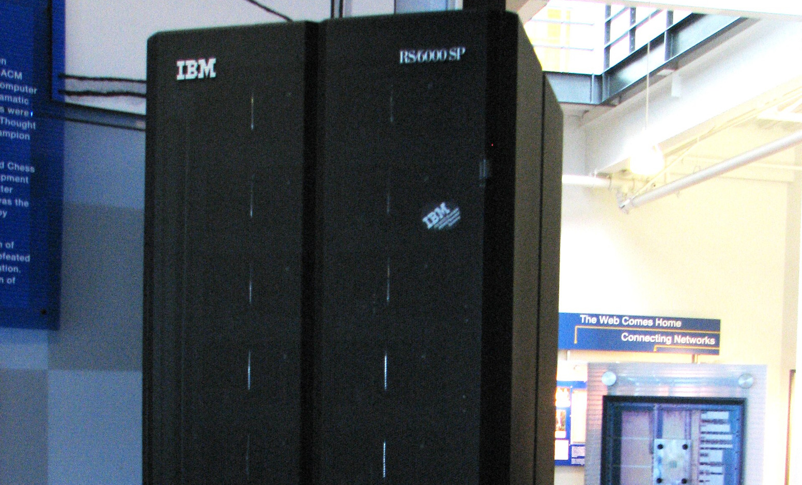
1997 · 딥블루사람이 적은 평가 규칙 + 초당 2억 수 탐색 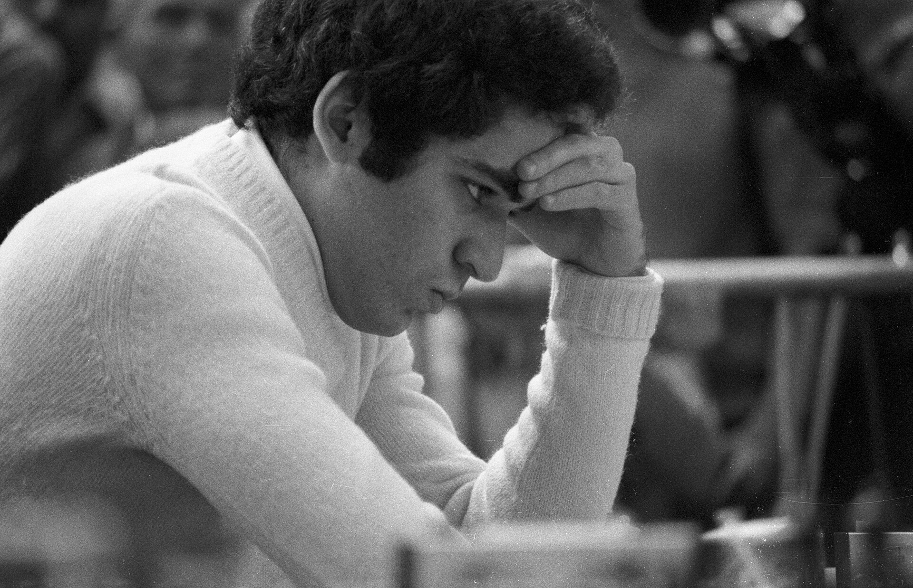
카스파로프 (1982년 사진)1997년 딥블루에 진 체스 세계 챔피언
1986 역전파 → 1997 딥블루(규칙 + 탐색) → 2012 AlexNet(학습)
사진: Christina Xu(CC BY 2.0) · Krtschil(CC BY-SA 4.0) · Wikimedia Commons
학습의 시대가 그다음입니다. 1986년 러멜하트·힌튼·윌리엄스가 역전파로 다층 신경망을 학습시킬 수 있음을 보였고 1997년에는 IBM 딥블루가 체스 세계 챔피언 카스파로프를 꺾습니다. 딥블루는 아직 사람이 짠 평가 규칙에 막대한 탐색을 더한 방식이었는데도 기계가 사람의 지적 영역에서 이긴 첫 상징이었습니다.
2012년 AlexNet이 ImageNet에서 오류율을 10%p 가까이 떨어뜨린 때부터를 딥러닝 시대라고 부릅니다. 이 그래프는 잠시 뒤에 따로 봅니다.
사진: IBM rs6000 SP - Deep Blue · Christina Xu · CC BY 2.0 / Garry Kasparov (Luzern 1982, 2) · Krtschil · CC BY-SA 4.0 (Wikimedia Commons, img/rv_A_kasparov_1982.jpg). 연도: 역전파 1986(Rumelhart·Hinton·Williams), 딥블루 1997, AlexNet 2012.
1교시 · AI의 발달 · 2/4
2016년 알파고는 어떤 데이터로 바둑을 익혔나
2016
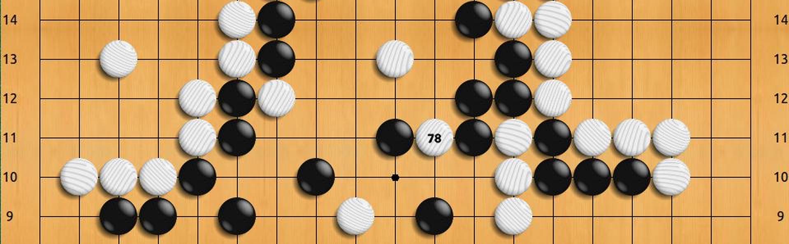
2016년 3월 제4국 기보 · 이세돌 9단의 흰 78수 · 다섯 판 1승 4패 기보와 자가 대국으로 배웠을 뿐 사람이 적어 준 규칙은 없었다
그림: Lee-sedol-alphago-divine-move · Axd · CC BY-SA 4.0 · Wikimedia Commons
2016년 3월에는 알파고가 이세돌 9단을 4대 1로 꺾었는데, 여기서 딥블루와 길이 갈립니다. 바둑은 경우의 수가 워낙 많아 사람 손으로 평가 규칙을 짜 넣는 게 불가능했거든요. 알파고는 사람이 둔 기보 수십만 판으로 먼저 배운 다음 자기 자신과 수백만 판을 두면서 어떻게 판단할지를 스스로 익혔습니다. 알파고 제로는 이듬해 기보 없이 자가 대국만 해서 더 강해졌습니다.
이 대국은 한국 교사라면 다 기억하실 겁니다. 사람이 규칙을 짜서 판단을 맡기던 시대가 끝나는 장면을 온 국민이 함께 봤죠.
그림: Lee-sedol-alphago-divine-move(제4국 흰 78수, qgo 화면) · Axd · CC BY-SA 4.0 (Wikimedia Commons, img/rv_A_alphago_game4_move78.jpg). 알파고 대국 2016.3.9~15 서울, 4:1. 알파고 제로 2017(Silver et al., Nature).
1교시 · AI의 발달 · 3/4
말하고 그리는 AI를 일상에서 쓰는 규모와 생성의 시대
2017 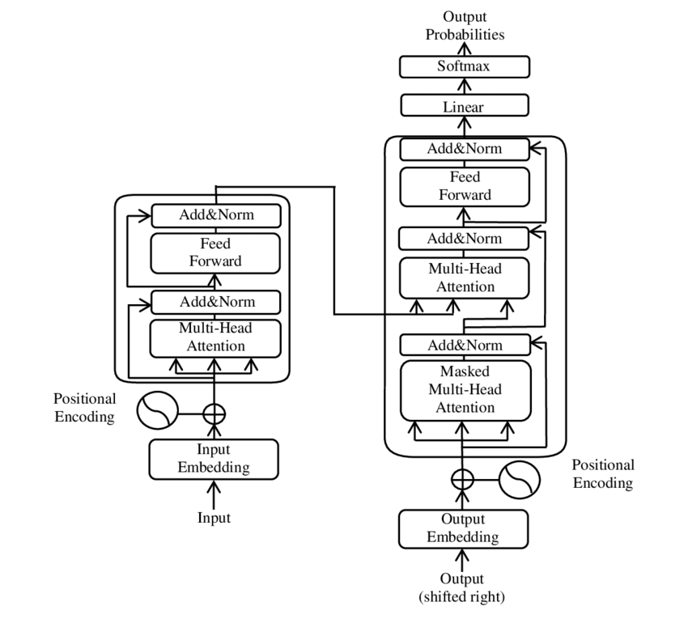
트랜스포머스케일이 커질수록 똑똑해진다 2022 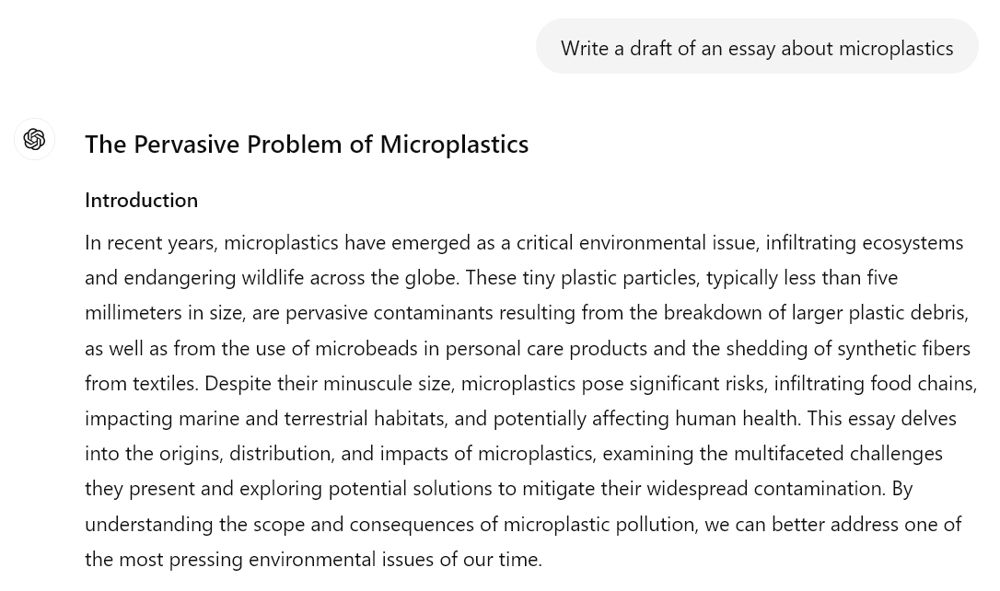
ChatGPT2020 GPT-3 → 2022 ChatGPT 2024 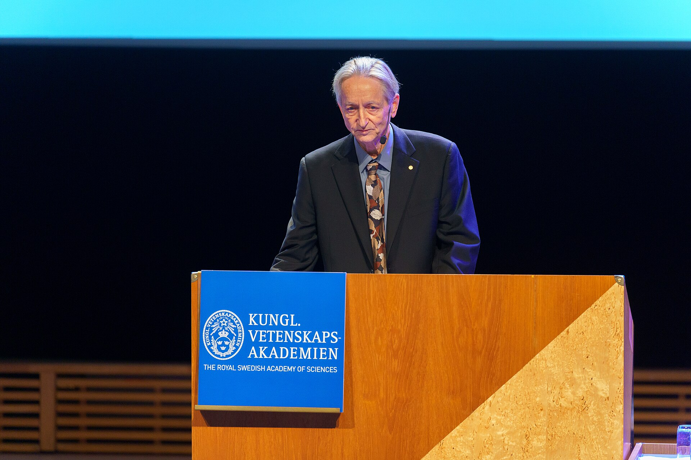
힌튼 · 노벨 물리학상화학상은 알파폴드에
신경망이 노벨상을 받은 해, 2024
그림·화면·사진: Yuening Jia(CC BY-SA 3.0) · ChatGPT essay draft(Public domain) · Jay Dixit(CC BY-SA 4.0) · Wikimedia Commons
세 번째가 규모와 생성의 시대입니다. 트랜스포머 구조가 나온 2017년부터는 데이터와 계산을 키운 만큼 성능이 올라 '스케일'이 연구의 중심에 섭니다. 2020년 GPT-3, 2022년 ChatGPT가 잇따라 나오면서 교실에서 말하고 그리는 AI를 쓰기 시작했습니다.
2024년에는 물리학과 화학 양쪽에서 신경망 연구가 노벨상을 받았습니다. 물리학상은 홉필드와 힌튼에게, 화학상은 단백질 구조를 예측한 알파폴드 팀에게 돌아갔습니다. 사진 속 힌튼이 1986년 역전파 논문을 쓴 바로 그 사람이니 학습의 시대를 연 연구자가 규모의 시대에 와서 상을 받은 겁니다.
사진: The-Transformer-model-architecture · Yuening Jia · CC BY-SA 3.0 / File:ChatGPT essay draft.png · ChatGPT 출력 화면 · Public domain (img/rv_B_chatgpt_essay.png, 옛 핀란드어 화면 ai_chatgpt.png에서 바꿈) / Geoffrey Hinton at the 2024 Nobel Lectures · Jay Dixit · CC BY-SA 4.0 (Wikimedia Commons). 연도: 트랜스포머 2017(Vaswani et al.), GPT-3 2020, ChatGPT 2022.11, 노벨 물리학상 2024(Hopfield·Hinton), 화학상 2024(Hassabis·Jumper·Baker).
선택 체험 · 8분 · 1교시
GPT-2가 다음 단어를 고르는 장면
1 링크 열기 첫 실행 약 600 MB · 전날 받아 둠
2 "The capital of France is" 입력 → Enter
3 오른쪽 끝 후보 단어와 % 읽기
4 Temperature 내리고 올리며 비교
5 한국어 문장 넣어 토큰이 잘게 쪼개지는 것 보기
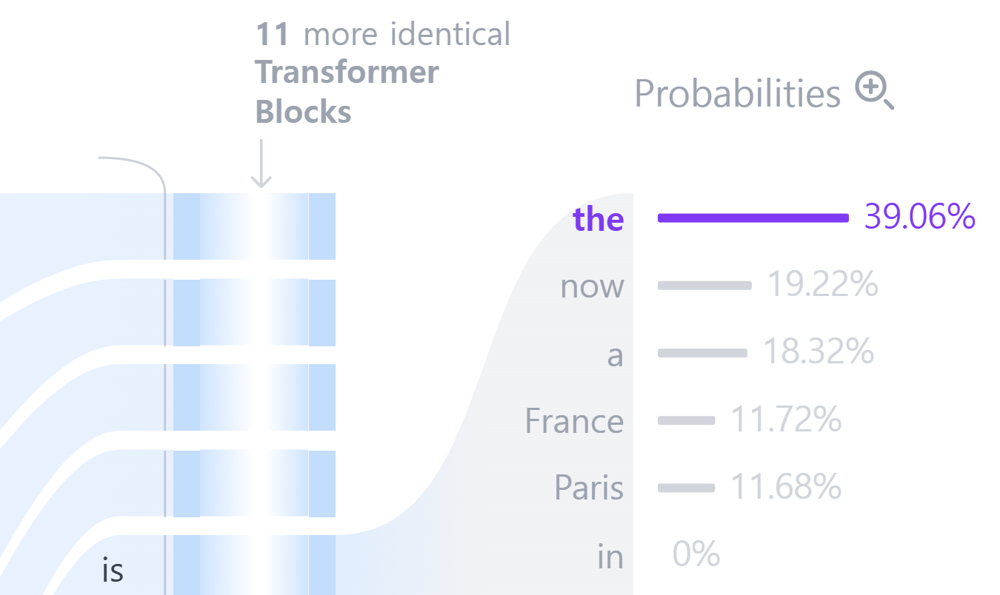
"The capital of France is" 다음 단어: the 39% · Paris 12% poloclub.github.io/transformer-explainer
열기 ↗
08:00 눌러서 시작 · 다시 누르면 멈춤 ↺ 1등 단어도 100%가 아닙니다
생각할 점 유창한 것도 틀리는 것도 다음 단어를 확률로 고르는 데서 나옵니다.
화면: 강사 캡처 2026-10-21 · 도구: Transformer Explainer (Polo Club of Data Science, Georgia Tech)
시간이 없으면 건너뛰거나 쉬는 시간 체험으로 안내합니다. 꼭 하려면 선택 장(알파고, 2012년 그래프, GPU와 데이터)을 건너뛰어 시간을 냅니다.
규모와 생성의 시대를 이번엔 손으로 만져 보겠습니다. 2019년 모델인 GPT-2 small, 파라미터 1억 2천4백만 개짜리를 이 페이지가 브라우저 안에서 실제로 돌립니다. 문장이 토큰으로 쪼개져 숫자(임베딩)가 되면 어텐션이 앞 단어 중 어떤 것을 볼지 정하고, 마지막에 다음 단어의 확률이 나옵니다. 그 흐름이 왼쪽에서 오른쪽으로 전부 보입니다.
8분 동안 해 보겠습니다. "The capital of France is"를 넣고 Enter를 누른 뒤 오른쪽 끝을 보면 1등은 Paris가 아니라 the(39%)이고 Paris는 5등(12%)입니다. 작은 GPT-2는 사실보다 다음에 흔히 오는 말을 고르고, 1등도 100%가 아니라 후보들이 몇 %씩 나눠 가집니다. Temperature를 내리면 뻔한 답만, 올리면 엉뚱한 답이 나옵니다. 토큰에 마우스를 올리면 어떤 앞 단어를 참고했는지 선이 그어집니다. 마지막에 한국어 문장을 넣어 보세요. 영어 전용 모델이라 토큰이 아주 잘게 쪼개집니다. 영어 한 단어가 한국어 글자 여러 조각이 됩니다.
1등 단어도 100%가 아니니까 말을 유창하게 하다가도 같은 이유로 틀릴 때가 있습니다. 생성 AI가 잘하는 것과 못하는 것이 화면 하나에 다 드러나죠. 7교시 신뢰도 기준에서 다시 볼 이 %는 오후에 로봇이 내리는 판단에도 똑같이 붙어 나옵니다.
주의: 첫 실행 시 PC마다 약 600 MB 다운로드, 연수 전날 모든 PC에서 한 번 열어 캐시해 둘 것. 영어 전용. 도구: Transformer Explainer (Polo Club of Data Science, Georgia Tech, poloclub.github.io/transformer-explainer). 화면: 강사 캡처 2026-10-17 (img/shot_transformer_explainer.png).
1교시 · AI의 발달 · 4/4
행동의 시대 AI는 로봇을 움직인다
2023 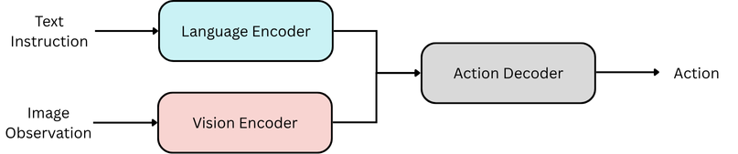
RT-2 → OpenVLA · π0 (2024)말과 영상을 받아 로봇 동작을 내놓는 VLA 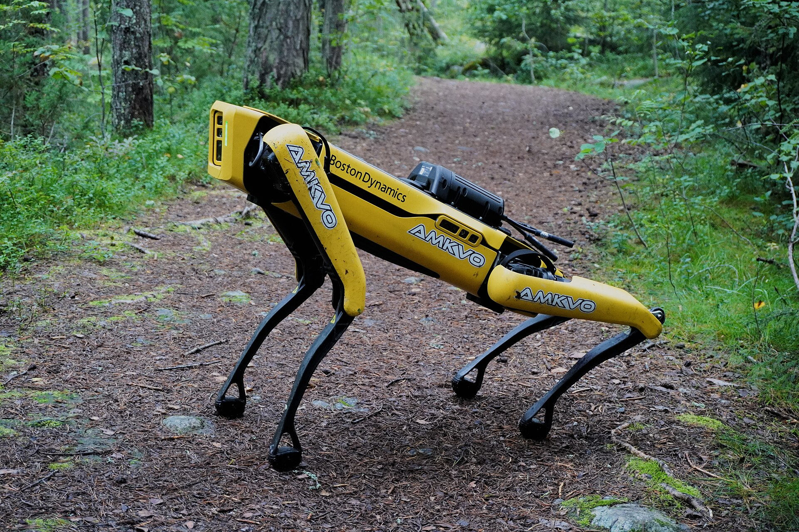
몸을 가진 AI보스턴 다이내믹스 스팟 2025 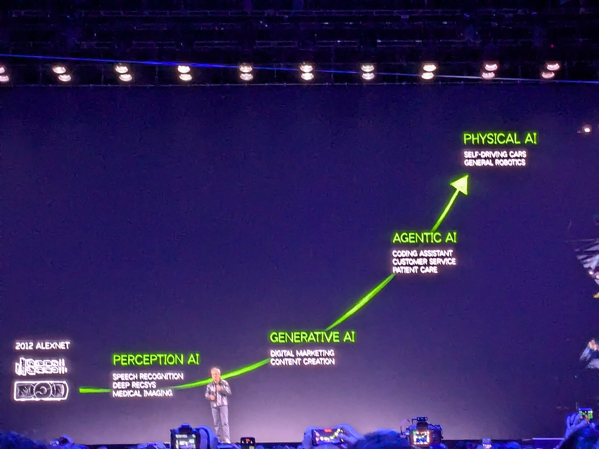
CES "피지컬AI의 ChatGPT 순간"엔비디아 기조연설
네 시대를 꿰는 한 가지 물음
그림·사진: VLA 구조도 · Natblida99(CC0) / Spot · Jonte(CC BY-SA 4.0) / CES 2025 · Pronoia(CC0) · Wikimedia Commons
마지막 네 번째는 말하고 그리던 AI에 몸을 붙이는 지금, 행동의 시대이자 피지컬AI의 시대입니다. 2023년 구글 딥마인드의 RT-2에서는 언어와 시각을 이해하는 모델이 로봇 동작까지 바로 출력했습니다. 이듬해인 2024년에는 OpenVLA와 π0가 풀리면서 로봇 기반 모델을 누구나 받아 쓸 수 있게 됐고, 2025년 CES에서는 엔비디아가 이 흐름을 "피지컬AI의 ChatGPT 순간"이라고 불렀습니다. 왼쪽 그림에는 RT-2, OpenVLA, π0가 공통으로 쓰는 VLA 모델 구조를 담았는데 언어와 영상을 넣으면 행동이 나옵니다. 가운데 놓은 보스턴 다이내믹스의 스팟은 몸을 가진 AI의 예, 오른쪽 사진은 CES 2025 엔비디아 기조연설 무대.
판단을 사람이 정하느냐 데이터에서 익히느냐는 네 시대 내내 따라온 질문입니다. 오늘 하루도 이 질문에서 출발합니다.
그림: General architecture of a vision-language-action model · Natblida99 · CC0 (img/rv_A_vla_architecture.png) / 사진: Spot by Boston Dynamics · Jonte · CC BY-SA 4.0 / Jensen Huang - Nvidia Keynote - CES 2025 Las Vegas (1) · Pronoia · CC0 (img/rv_A_ces2025_keynote.jpg) (Wikimedia Commons). 연도: RT-2 2023(Google DeepMind), OpenVLA 2024(Stanford 등), π0 2024(Physical Intelligence), 엔비디아 CES 2025 기조연설 문구.
선택 시연 · 3분 · 강사
노트북 안의 작은 모델이 웹캠을 보고 말합니다
강사 What do you see?
SmolVLM · 노트북 안에서 실행 A hand holding a small yellow wooden block above a desk.
강사 지금 뭐가 보여?
SmolVLM I see a hand… (짧아지거나, 영어로, 또는 틀림)
huggingface.co/spaces/ webml-community/ smolvlm-realtime-webgpu
열기 ↗
보는 모델 + 행동 = VLA
연결 이 모델은 본 것을 문장으로 말합니다. 오후의 분류 모델은 그중 '정상/불량'만 말합니다.
시간이 없으면 건너뛰거나 쉬는 시간 체험으로 안내합니다. 시간을 내려면 '로봇 65년 ④' 설명을 1분 줄이면 됩니다. 강사 시연 3분이고 참가자 PC에는 열지 않습니다.
(강사 노트북 웹캠 켜기) 행동의 시대 한 조각을 보여 드리겠습니다. 작은 비전·언어 모델이 웹캠 화면을 보고 영어로 설명하는데 영상을 서버로 보내지 않고 노트북 안 WebGPU에서 돕니다. 처음 실행할 때 수백 MB를 받고, 그 뒤로는 오프라인에서도 됩니다.
"What do you see?"를 넣고 손에 든 물건을 나무 블록, 마커, 활동지로 바꿔 가며 답을 읽어 봅니다. 이번엔 한국어로 물어봅니다. "지금 뭐가 보여?" 그러면 답이 짧아지거나 영어로 나오거나 틀리는데 모델이 작을수록 더 심합니다. 교실에서도 학생이 바로 발견할 한계입니다.
오늘 오후에 만들 분류 모델은 '정상', '불량', '없음' 셋 가운데 하나로만 답하지만 이 모델은 본 것을 문장으로 말합니다. 여기에 '행동'까지 붙이면 비전·언어·행동 모델, 앞서 ④ 행동의 시대에서 말한 VLA가 됩니다. 오늘 실습은 분류에서 멈추니 그 위에 무엇이 쌓이는지는 이 3분 시연으로 대신했습니다.
도구: SmolVLM Realtime WebGPU (webml-community, Hugging Face Space). 모델: SmolVLM (Hugging Face). 참가자 체험용이 아닌 강사 시연 전용. 사진 없음, 말풍선으로 구성.
1교시 · AI의 발달
규칙을 사람이 적지 않는다면
학습의 시대에 들어서면서 모델은 데이터로 배워서 판단합니다.
오늘 끝까지 붙들 질문
네 시대를 나란히 놓으면 판단을 누가, 무엇으로 내리느냐는 물음이 남습니다. 규칙의 시대엔 if-then을 사람이 적었지만 학습의 시대로 오면 모델이 데이터에서 판단을 익힙니다. 규모의 시대에 데이터와 계산을 크게 키웠고 지금 행동의 시대엔 그 판단에 몸까지 붙이는 중입니다.
이 질문은 오늘 하루 내내 붙들고 갑니다. 오전에는 손 티칭, 각도, 좌표처럼 사람이 정한 규칙으로 몸을 움직이고, 6교시에 데이터로 학습시킨 분류 모델은 8교시에 라쿤봇에 붙입니다. 선택 장 셋(ImageNet, GPU와 데이터, 쓴맛의 교훈)은 시간이 남을 때만 쓰고, 이어서 이 질문으로 피지컬컴퓨팅과 피지컬AI를 갈라 봅니다.
사진 없음(핵심 문장 장).
1교시 · AI의 발달
사람이 적던 특징을 신경망이 스스로 배운 해
ImageNet 1,000종 분류 오류율 (top-5, %)
0
10
20
30
25.8%
16.4%
3.6%
2011 · 사람이 설계한 특징
2012 · AlexNet
2015 · ResNet
SIFT 등 수작업 특징 + 분류기
신경망이 특징을 스스로 배움 · GPU 2장 · 120만 장
사람보다 낮아짐
사람 약 5.1%
특징을 신경망에 맡기자 오류율이 한 해에 10%p 가까이 떨어졌다
2011년까지는 영상 인식에 쓰는 특징을 사람이 설계했습니다. 모서리나 색 분포, SIFT 같은 걸 손으로 정의해서 분류기에 넣어 주는 식이었습니다. 그때 ImageNet 1,000종 분류 오류율이 얼마였을까요? 25.8%였습니다. 2012년 AlexNet이 특징까지 신경망에게 배우게 하자 16.4%로 떨어졌습니다. 한 해에 10%p 가까이 내려간 겁니다. 그때 들어간 재료는 GPU 두 장과 사진 120만 장. 2015년에는 ResNet이 3.6%까지 내려가 사람(약 5.1%)보다도 낮아졌고 그 뒤로 '보는 AI'는 기본 부품으로 자리 잡았습니다.
6교시에 클래스마다 20장으로 만드는 분류기는 이 계보에 있는 MobileNet을 빌려 쓰는 전이학습입니다. 특징 추출 부분은 그대로 두고 마지막 층만 다시 배웁니다. 학생이 10분 만에 보는 AI를 만들 수 있게 된 것도 이 기술 덕분인데, 거꾸로 보면 빌려 온 특징이 못 보는 것은 학생 모델도 못 봅니다. 6교시 속이기 게임(선택)은 바로 이 약점을 파고듭니다.
ILSVRC top-5 오류율: 2011 25.8%, 2012 16.4%(AlexNet, Krizhevsky·Sutskever·Hinton), 2015 3.57%(ResNet, He et al.). 사람 추정 약 5.1%(Russakovsky et al. 2015). 그래프는 인라인 SVG.
1교시 · AI의 발달
2012년의 두 재료는 계산과 데이터
GPU (사진은 예시 카드)AlexNet은 게임용 GTX 580 두 장으로 5~6일 학습 ImageNet · 페이페이 리사람이 이름표를 붙인 사진 1,400만 장
6교시에 찍을 20장도 이름표를 달고 모델을 가르친다
사진: BFG NVIDIA GeForce 9500 GT · Thomas Galvin(CC BY-SA 4.0) / Fei-Fei Li · ITU Pictures(CC BY 2.0) · Wikimedia Commons
2012년의 돌파에는 알고리즘 말고도 계산과 데이터라는 재료가 받쳐 주고 있었습니다. AlexNet은 게임용 그래픽카드 두 장을 가지고 일주일 동안 학습했는데, GPU는 같은 계산을 수천 개씩 한꺼번에 처리하는 데 강하고 신경망 학습이 바로 그런 계산입니다. 데이터 쪽 재료는 페이페이 리 팀이 만든 ImageNet으로, 사람이 이름표를 붙인 사진이 1,400만 장이었습니다. 이름표가 없으면 학습을 시킬 수 없습니다.
두 재료 중 계산은 구글 서버가 대신해 줍니다. 여러분은 6교시에 클래스마다 20장을 찍고 '정상'·'불량' 이름표를 붙이는 데이터 쪽만 맡으면 되니 학생도 10분이면 만듭니다.
사진: BFG NVIDIA GeForce 9500 GT · Thomas Galvin · CC BY-SA 4.0 / Fei-Fei Li at AI for Good 2017 · ITU Pictures · CC BY 2.0 (Wikimedia Commons, img/rv_A_feifei_li.jpg). AlexNet: GTX 580 2장, 5~6일 학습(Krizhevsky et al. 2012). ImageNet 약 1,400만 장, 2만 종 이상(Deng et al. 2009).
1교시 · AI의 발달 · 교사에게 가장 불편한 문장
70년의 교훈은 교사에게 불편합니다
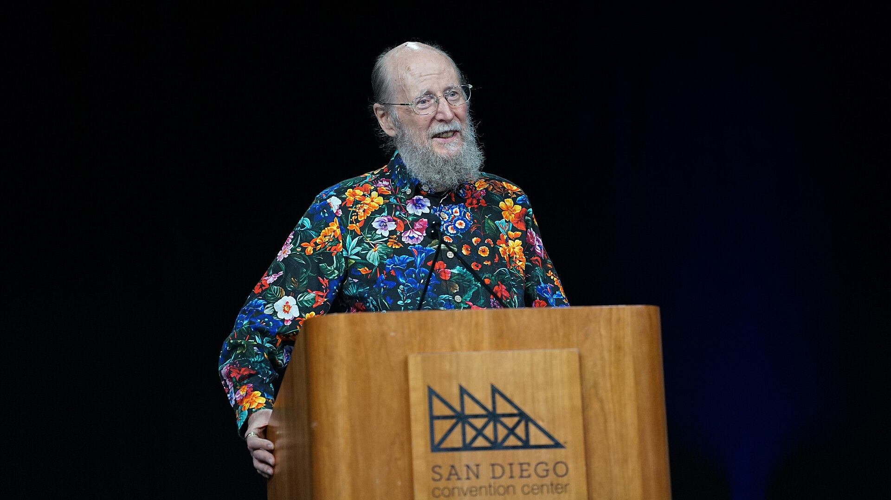
리처드 서튼 · 강화학습의 아버지 · 2024 튜링상
2019
사람이 아는 것을 넣어 주기보다, 계산과 학습에 맡기는 쪽이 결국 크게 이긴다
"The Bitter Lesson" · 체스 · 바둑 · 음성 · 영상에서 반복
지식을 넣는 대신 보여 줄 것과 맞다고 할 것을 정하는 교사의 일
사진: SD 2025 - Richard Sutton 01 · Xuthoria · CC BY-SA 4.0 · Wikimedia Commons
교사로서는 듣기 가장 불편한 문장입니다. 강화학습의 아버지 리처드 서튼이 2019년 짧은 글 「The Bitter Lesson」에서 이렇게 썼습니다. "The biggest lesson that can be read from 70 years of AI research is that general methods that leverage computation are ultimately the most effective, and by a large margin." 70년 AI 연구의 가장 큰 교훈은, 사람이 아는 것을 넣어 주는 것보다 계산과 학습에 맡기는 일반적 방법이 결국 크게 이긴다는 것이다.
체스에선 사람이 짠 규칙에 기댄 딥블루 방식보다 자가 대국으로 배운 알파제로가 더 강해졌고, 바둑이나 음성 인식, 영상 인식에서도 이런 일이 되풀이됐습니다. 사람의 지식을 넣은 쪽이 처음엔 앞서다가 나중엔 데이터와 계산에 집니다.
그렇다면 교사가 할 일은 지식을 넣기보다 데이터와 기준을 정하는 쪽입니다. 어떤 걸 보여 줄지, 무엇을 맞다고 칠지를 고르는 일이죠. 6교시를 시작할 때 불량을 조건문으로 적어 보다가 막혀 보시면 이 교훈을 교실 안에서 작게나마 겪으시게 됩니다.
사진: SD 2025 - Richard Sutton 01 · Xuthoria · CC BY-SA 4.0 (Wikimedia Commons). Sutton, R. (2019). The Bitter Lesson. incompleteideas.net. 번역은 의역. 서튼·바르토 2024 튜링상.
1교시 · 피지컬컴퓨팅과 피지컬AI
몸은 두고 가운데 칸을 바꿉니다
피지컬 11/21 마이크로비트 · 포니봇
센서 빛 · 거리 · 버튼 숫자 하나
규칙 if-then · 사람이 적음 조도 40 미만이면 켜기
모터 · LED 액추에이터 켜고 움직인다
11/21 포니봇 · 사람이 적은 규칙 피지컬AI 오늘 라쿤봇 + 내 모델
카메라 영상 · 센서 사진 한 장
학습된 모델 데이터로 배움 정상? 불량? 확률로 답한다
로봇팔 액추에이터 A로, B로 옮긴다
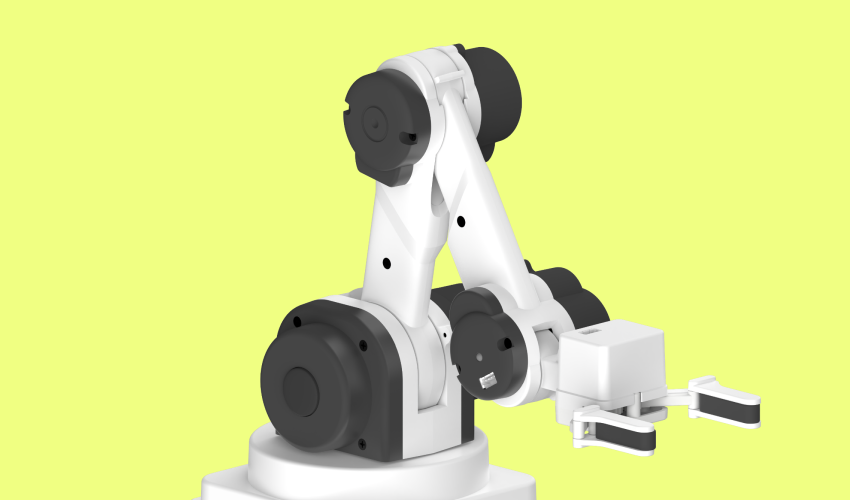
오늘 라쿤봇 · 데이터로 배운 판단 틀렸을 때 고치는 곳 · 피지컬컴퓨팅은 코드(규칙) , 피지컬AI는 데이터
누가 판단하나 · 무엇을 보나 · 틀리면 어디를 고치나
그림: boundaryX AI 포니봇 교안 1차시 1쪽 (부분) · 로보메이션 라쿤봇 가이드 표지 (부분)
윗줄은 11월 21일 마이크로비트·포니봇 과정을 떠올려 보시면 됩니다. 그때는 조도 센서 값이 40보다 작으면 LED를 켜라는 규칙을 사람이 코드로 짰고, 로봇은 그 규칙에 적힌 대로만 움직였습니다. 이렇게 센서와 모터를 코드로 이어 몸을 움직이게 하는 일을 피지컬컴퓨팅이라고 합니다.
아침에 드린 질문 1의 답을 이 장에서 미리 보여 드립니다. 아랫줄이 오늘 할 피지컬AI인데 몸과 모터는 손대지 않고 가운데 칸만 갈아 끼웁니다. 사람이 짜 둔 규칙을 빼고 데이터로 학습된 모델을 그 자리에 넣으면, 모델이 카메라 영상을 보고 정상인지 불량인지를 확률로 답합니다.
라쿤봇은 오늘 두 줄을 다 겪어 봅니다. 오전엔 사람이 정한 자세와 각도, 좌표대로 움직이니 윗줄에 머물다가 8교시에 여러분이 학습시킨 모델의 판단으로 움직이면서 아랫줄로 넘어갑니다.
둘을 가를 때 볼 기준은 세 가지입니다. 판단을 하는 쪽이 규칙인지 학습된 모델인지 살피고 입력은 센서 숫자 하나냐 영상처럼 큰 입력이냐로 가릅니다. 틀렸을 때 코드에 손대는지 데이터에 손대는지도 따집니다. 이 기준을 들고 시연을 본 뒤 짝 토의로 넘어갑니다.
흐름도는 HTML. 윗줄 그림 img/pony_L1_p01_ponybot_render.png(포니봇 덱 img/oc/L1_p01_ponybot_render.png를 복사, boundaryX AI 포니봇 교안 1차시 1쪽 표지 안 렌더) · 아랫줄 img/rv_F_raccoonbot_hero.png(로보메이션 라쿤봇 가이드 표지에서 로봇 부분). 피지컬컴퓨팅을 다루는 장은 공식 교안에 없어 덱에서 새로 씀(공식교안_분석 5절). 조도 40 기준은 포니봇 과정 오토라이트 예시. 리허설 확인: 아랫줄 그림을 시연 세트 사진(다음 장과 같은 것)으로 바꿀지.
1교시 · 시연 · 3분
이 로봇은 무엇에 따라 움직일까요?
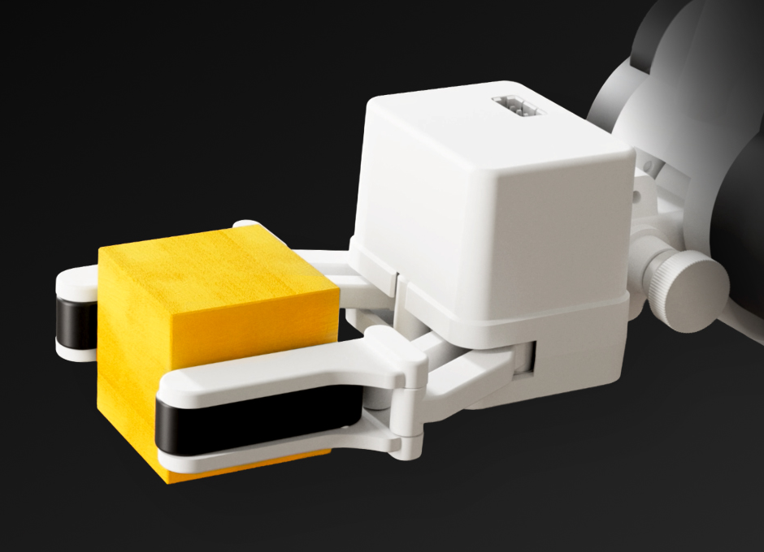
라쿤봇 집게 그리퍼 · 오늘 저녁엔 이 집게가 내 모델의 판단대로 움직입니다
인지 → 판단 → 행동
인지 · 웹캠이 검사대를 본다판단 · 모델이 정상 · 불량 · 없음과 신뢰도를 답한다행동 · 정상은 A, 불량은 B, 애매하면 기다린다
판단하는 모델은 여러분이 만듭니다
사진: 로보메이션 라쿤봇 제품 상세 페이지 (집게 부분)
(강사석 시연 세트 실행) 정상 블록을 놓습니다. A로 갑니다. 스티커 붙은 불량 블록을 놓으면 B로 갑니다. 검사대를 비워 두면 기다립니다. 이 로봇은 정해진 대로 움직이는 걸까요, 보고 판단하는 걸까요?
인지, 판단, 행동 가운데 판단하는 모델은 오늘 여러분이 직접 만듭니다. 인지는 웹캠이 검사대를 보는 단계인데 이때 로봇은 기본 자세로 화면 밖에 비켜 있습니다. 판단 단계에서 모델이 정상·불량·없음을 신뢰도와 함께 답하면 행동 단계에서는 정상을 A로, 불량을 B로 옮기고 애매하면 기다립니다. 결과를 본 다음에는 데이터를 고칩니다.
앞 장 아랫줄을 실제로 보여 드리는 시연입니다. 5분 짝 토의 전에 3분 안에 끝냅니다.
사진: img/rv_L1_od02_gripper_block.png(로보메이션 제품 상세 official_detail_02.jpg 아래쪽에서 집게와 블록만, 「4축 정밀 제어 로봇암」 문구 제외). 오늘 쓰는 블록은 원통 나무 블록이고 사진의 정육면체는 제품 사진입니다. 옛 그림 e-Book B08 p52(블록컴포저 사전학습 '사물 인식 옮기기' 쪽 통째)는 '내가 만든 모델' 장과 뜻이 반대라 뺌. 리허설 확인: 강사 시연 세트(웹캠·검사대·A/B 자리)를 찍어 편집 모드 「사진 바꾸기」로 교체.
1교시 · A1 · 짝 토의 3분 + 나눔 2분
보고 판단해서 행동하는 로봇은 어느 것일까요?
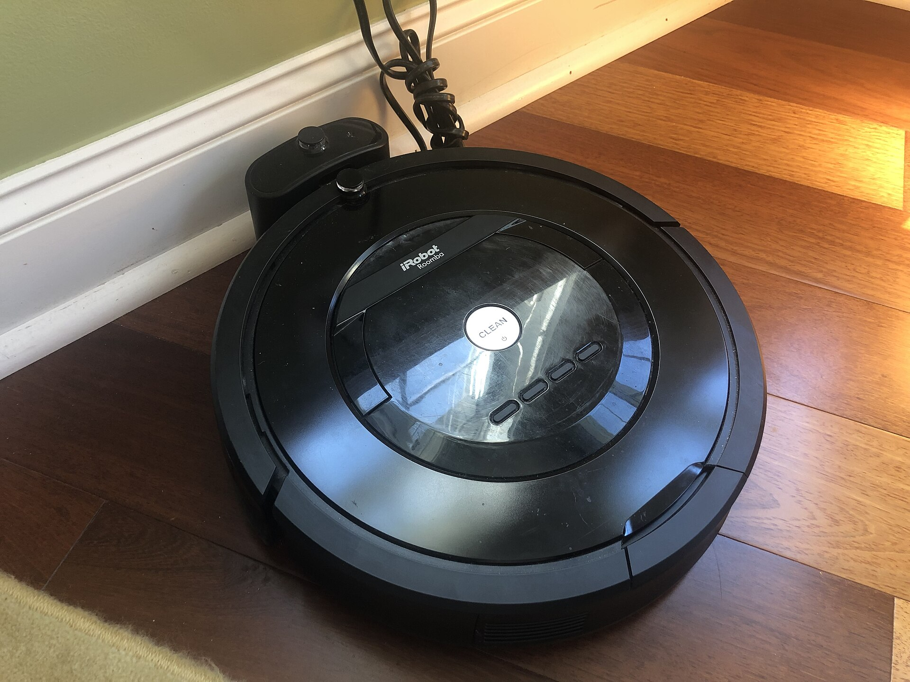
로봇청소기자동화? 피지컬AI? 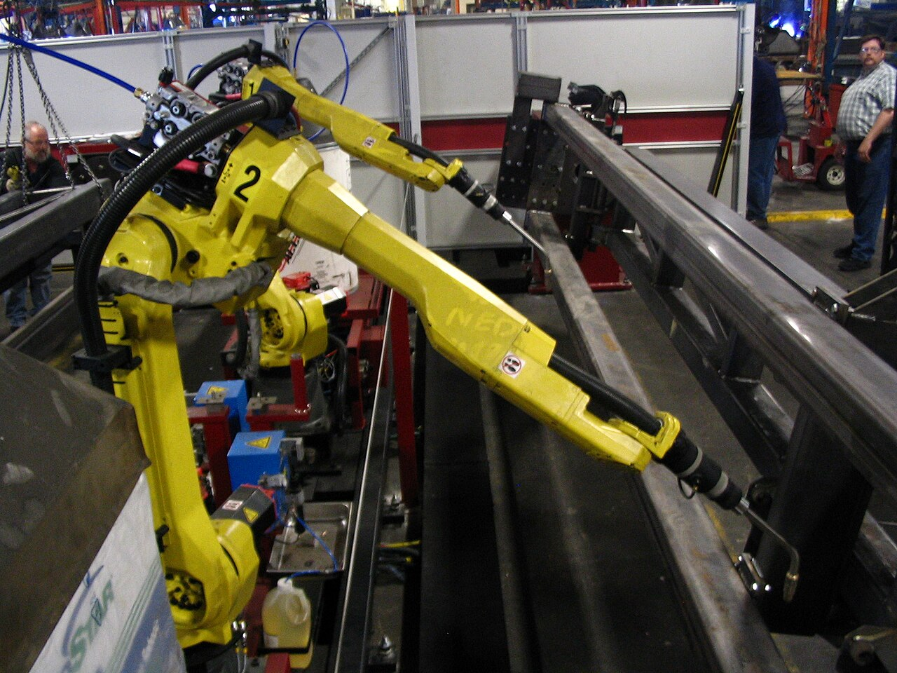
공장 용접 로봇자동화? 피지컬AI? 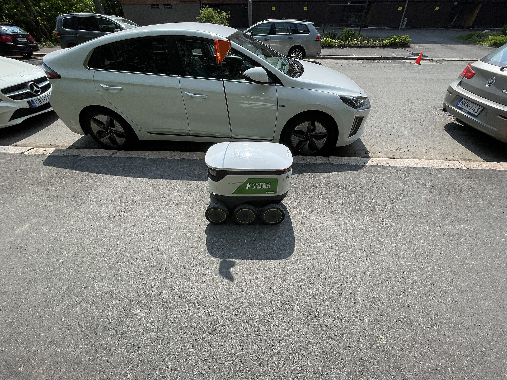
자율주행 배달 로봇자동화? 피지컬AI? 자율주행차자동화? 피지컬AI?
짝과 분류하고 이유를 쓰세요 · 3분
사진: Piperpet · Phasmatisnox · Ypsilon from Finland · Dllu (Wikimedia Commons)
네 장치에 자동문과 오늘 만들 로봇을 더해 짝과 함께 분류하고 이유를 써 주세요. 3분 드리고, 2분 동안 몇 팀의 답을 듣겠습니다. 자동문은 센서가 사람을 감지하면 열리고 공장 용접 로봇은 같은 자리를 같은 순서로 되풀이하니 둘 다 자동화로 봅니다. 자율주행 배달 로봇과 자율주행차는 카메라로 보행자를 보고 멈추니까 피지컬AI이고, 카메라로 보고 모델이 판단해 옮기는 오늘 로봇도 이쪽에 듭니다.
로봇청소기는 일부러 애매하게 넣었습니다. 범퍼·적외선 규칙으로 도는 구형이 있는가 하면 카메라·라이다로 사물을 인식하고 경로를 계획하는 신형도 있어서 한 제품군 안에서도 피지컬컴퓨팅과 피지컬AI가 갈립니다. 11월 21일에 만든 마이크로비트 로봇은 어느 쪽일까요. 센서와 액추에이터를 제어하는 데서 그치면 피지컬컴퓨팅이고 그 판단을 학습 모델이 하면 피지컬AI입니다.
분류할 때는 판단의 주체가 규칙인지 학습 모델인지를 먼저 보고 입력이 센서 값에 머무는지 영상·언어 같은 고차원 입력까지 받는지도 봅니다. 세 번째 기준은 틀렸을 때 고치는 곳이 코드인지 데이터인지로, 8교시 실패 가르기에서 이 기준을 틀로 씁니다. 코드를 고치면 자동화, 데이터를 고치면 피지컬AI입니다.
사진: Roomba 805 charging · Piperpet · CC BY-SA 4.0 / FANUC 6-axis welding robots (ARC Mate 120iC/10L) · Phasmatisnox · CC BY 3.0 / Grocery delivery robot · Ypsilon from Finland · CC0 / Waymo Jaguar I-Pace in San Francisco, 2023 · Dllu · CC BY 4.0 (모두 Wikimedia Commons).
1교시 · 우리 삶
이미 우리 곁의 피지컬AI ①
자율주행 택시운전자 없이 유료 운행 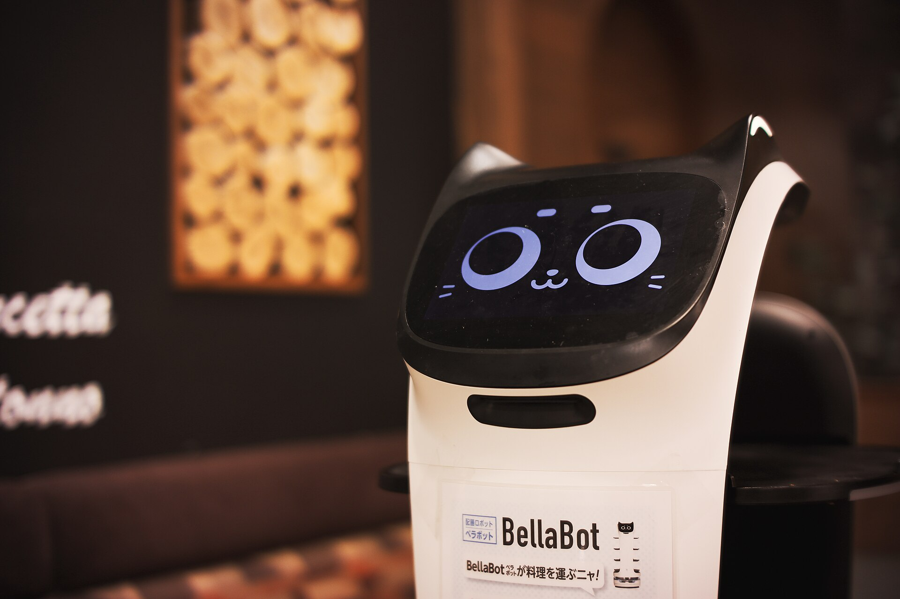
서빙 로봇라이다 지도 + 사람 인식 + 경로 배달 로봇보도를 달려 물건을 나른다
센서가 보고 → 학습된 판단 → 모터가 움직이고 → 결과가 데이터로
사진: Dllu (CC BY 4.0) · MIKI Yoshihito (CC BY 2.0) · Ypsilon from Finland (CC0), Wikimedia Commons
이미 곁에 와 있는 것들입니다. 웨이모는 피닉스, 샌프란시스코, LA 등 여러 도시에서 레벨 4 수준의 운전자 없는 유료 택시를 돌리는데, 카메라와 라이다가 보고, 신경망이 판단하고, 핸들과 브레이크가 움직입니다. 식당에서 서빙하는 로봇이나 아파트 배달 로봇은 라이다로 그린 지도에 사람 인식과 경로 계획을 더한 것입니다. 모두 센서로 본 것을 학습된 모델이 판단해 모터를 움직이고, 그 결과는 다시 데이터로 돌아옵니다.
사진: Waymo Jaguar I-Pace in San Francisco, 2023 · Dllu · CC BY 4.0 / Serving robots BellaBot · MIKI Yoshihito · CC BY 2.0 / Grocery delivery robot · Ypsilon from Finland · CC0 (Wikimedia Commons). 웨이모 무인 유료 운행: 피닉스·샌프란시스코·LA 등(2024~).
1교시 · 우리 삶
이미 우리 곁의 피지컬AI ②
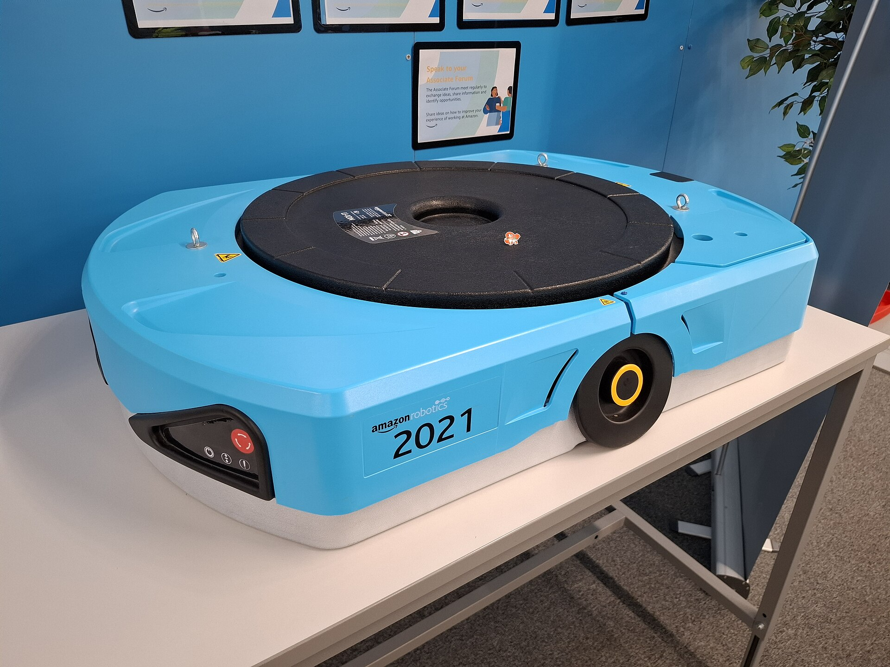
물류 창고선반을 나르고, 비전으로 물건을 고른다 로봇청소기집 안을 돌며 스스로 청소한다
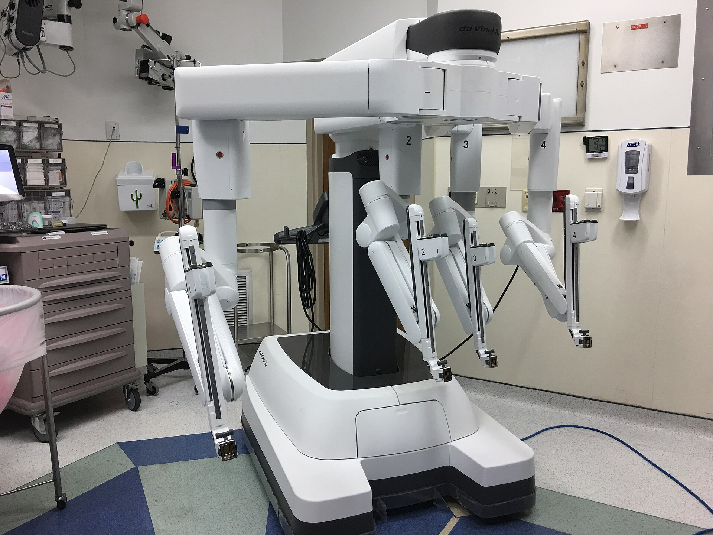
수술 로봇 · 반례의사가 원격 조종 · 판단은 사람이
오늘 책상 위에 올릴 공장 비전 검사도 이 흐름을 따릅니다
사진: Auledas (CC BY 4.0) · Piperpet (CC BY-SA 4.0) · Alvarogarciamd (CC BY-SA 4.0), Wikimedia Commons
물류 창고에선 2012년 아마존이 키바를 사들인 뒤로 로봇이 선반을 통째로 실어 나르고, 물건을 집는 로봇은 비전으로 물건 종류를 판단합니다. 로봇청소기도 구형이 범퍼 규칙으로 움직인다면 신형은 카메라로 양말과 전선을 알아보고 피해 갑니다. 반례로는 수술 로봇 다빈치를 넣었는데, 의사가 콘솔 앞에서 영상을 보며 판단해 원격으로 조종하면 로봇은 손 떨림을 걸러 내고 그 움직임을 작게 줄여 옮깁니다. 판단을 사람이 하니 피지컬AI보다는 원격 조종 로봇에 가깝죠. A1 분류 때 이걸 물어보면 좋은 질문이 됩니다. 반도체, 디스플레이, 식품 라인에 들어가 있는 공장 비전 검사는 카메라가 보고 불량을 골라 로봇이 빼는 구조인데, 오늘 미션은 이걸 라쿤봇으로 본떠 책상 위에 올려 봅니다.
사진: Amazon fulfilment centre drive unit robot · Auledas · CC BY 4.0 / Roomba 805 charging · Piperpet · CC BY-SA 4.0 / da Vinci Xi surgical system · Alvarogarciamd · CC BY-SA 4.0 (Wikimedia Commons). 아마존 키바 인수 2012.
1교시 · 우리 삶
밭에서, 재활실에서
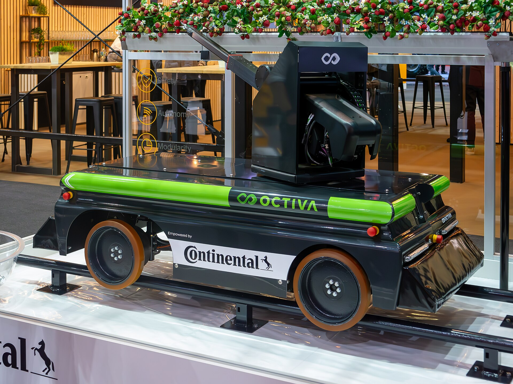
농업 로봇과일을 보고 익은 것만 딴다 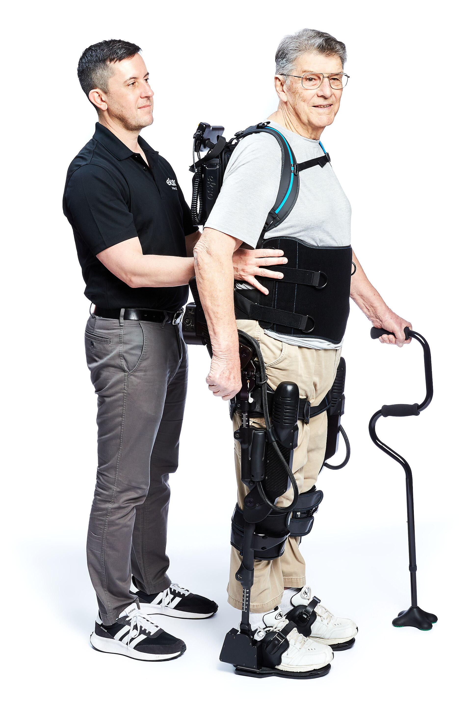
재활 외골격사람의 힘을 읽어 걸음을 돕는다
농업 로봇도 재활 외골격도 센서 → 판단 → 모터 → 데이터
사진: MB-one (CC BY-SA 4.0) · AriceEB (CC BY-SA 4.0), Wikimedia Commons
농업 쪽 수확 로봇은 과일을 보고 익은 것만 골라 따고 재활실의 외골격은 사람의 힘을 읽어 걸음을 돕습니다. 분야는 달라도 어느 쪽이든 센서가 보고, 학습된 모델이 판단하고, 모터가 움직이고, 결과가 다시 데이터가 됩니다. 사례는 지역 사정에 맞게 바꾸셔도 괜찮습니다.
사진: Agricultural robot, Agritechnica 2023 · MB-one · CC BY-SA 4.0 / EksoNR · AriceEB · CC BY-SA 4.0 (Wikimedia Commons, img/rv_B_eksonr.jpg).
1교시 · 우리 삶 · 그리고 틀릴 때
AI는 늘 데이터 밖에서 틀립니다
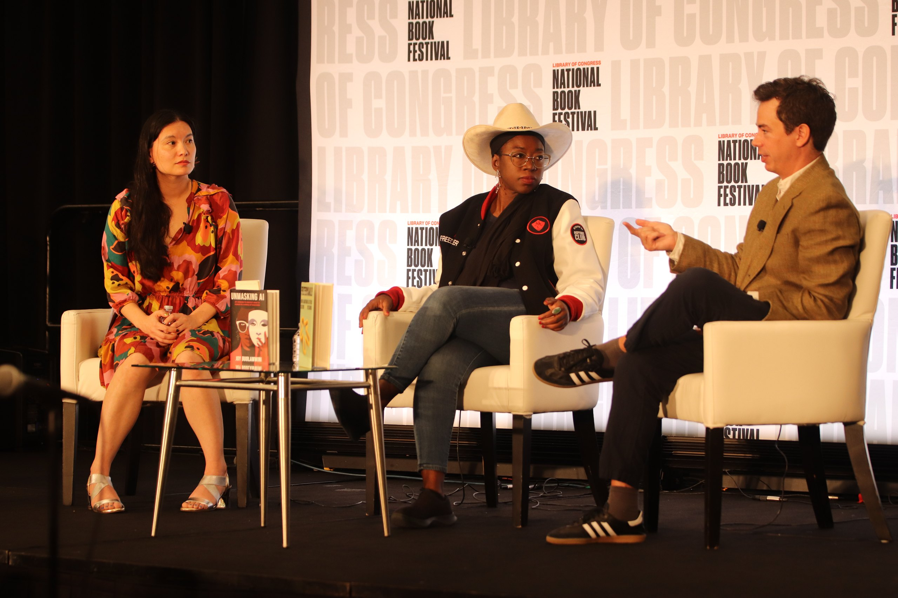
조이 부올람위니(가운데) · Gender Shades 연구자 · 2024 미 의회도서관 북페스티벌
2018
얼굴 인식의 편향
어두운 피부 여성 오류율 34.7%
밝은 피부 남성 오류율 0.8%
학습 데이터에 적게 담긴 얼굴일수록 오류율이 높습니다
사진: Taylordw (CC0), Wikimedia Commons
AI가 틀리는 장면도 봐야 합니다. 사진 가운데 모자 쓴 분이 2018년 팀닛 게브루와 함께 Gender Shades 연구를 한 조이 부올람위니입니다. 연구진은 상용 얼굴 분석 AI 세 가지를 성별과 피부색별로 갈라 시험했는데, 어두운 피부 여성에서는 오류율이 최대 34.7%까지 올라갔지만 밝은 피부 남성은 0.8%였습니다. 모델이 나빠서 생긴 결과는 아닙니다. 학습 데이터에 어두운 피부 여성이 적었고 성능은 학습 데이터의 분포를 그대로 따라가니까요. 이게 무슨 말인지는 6교시 티처블머신 실습에서 배경과 손과 각도가 단서로 잡히는 모델을 직접 만들어 보시면 몸으로 아시게 됩니다.
사진: Joy Buolamwini (center) at Library of Congress Book Festival 2024 · Taylordw · CC0 (Wikimedia Commons). 수치: Buolamwini & Gebru (2018), Gender Shades, FAT* 2018.
1교시 · 우리 삶 · 그리고 틀릴 때
멈추지 않은 설계의 책임은 누가 지는가
2018
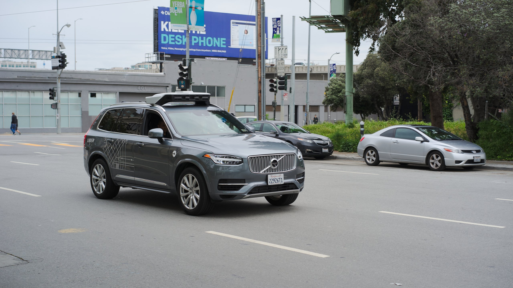
우버 자율주행 시험차량(샌프란시스코) · 2018년 3월 애리조나 템피에서 같은 종류의 차량이 보행자 사망 사고 시험 운전자, 제조사, 모델 중 어디인가
사진: Dllu (CC BY-SA 4.0), Wikimedia Commons
2018년 3월, 애리조나 템피의 밤길에서 길을 건너던 보행자가 우버의 자율주행 시험차량에 치여 목숨을 잃었습니다. 모델은 보행자를 늦게 분류했고 긴급 제동은 꺼진 상태였는데, 시험 운전자는 화면을 들여다보고 있었습니다. 사고 뒤 '시험 운전자인가, 제조사인가, 모델인가'를 놓고 멈추지 않은 설계의 책임이 누구에게 있느냐는 논쟁이 붙었습니다. '멈춤의 비용'은 7교시에 신뢰도 기준을 정하면서 따져 보고, 책임 문제는 8교시 토의(선택) 때 함께 이야기합니다. 책임은 누가 질까요? 데이터를 모은 사람, 기준값을 정한 사람, 멈춤을 설계한 사람입니다.
사진: Uber self-driving Volvo, San Francisco · Dllu · CC BY-SA 4.0 (Wikimedia Commons). 사례: 2018 우버 템피 사고. 지역·시의성에 맞게 교체 가능.
1교시 · 우리 삶 · 그리고 틀릴 때
학생들이 매일 쓰는 챗봇에서도 생기는 일
ChatGPT 대화 화면 · 매끄러운 답일수록 인용과 숫자를 따로 확인
환각
그럴듯한 거짓
학습 분포 밖의 질문
'모르겠다' 대신 가장 그럴듯한 답
데이터에 없는 질문엔 늘 그럴듯하게 틀립니다
화면: ChatGPT essay draft (Public domain), Wikimedia Commons
학생들이 매일 쓰는 챗봇도 학습 분포 밖의 질문을 받으면 '모르겠다'라고 하지 않고 가장 그럴듯한 답을 지어냅니다. 이런 현상을 환각이라고 하는데 화면은 ChatGPT에 에세이 초안을 부탁한 예시입니다. 얼굴 인식의 편향이나 자율주행의 오분류처럼 챗봇의 환각도 AI가 데이터 밖에서 틀린 경우입니다. 오늘 6교시 속이기 게임, 7교시 신뢰도 기준, 8교시 실패 가르기에서 세 번에 걸쳐 이 일을 교실에서 직접 겪어 봅니다.
화면: File:ChatGPT essay draft.png · ChatGPT 출력 화면 · Public domain (Wikimedia Commons, img/rv_B_chatgpt_essay.png).
1교시 · 로봇의 발달 · 1/4
유니메이트는 사람이 기억시킨 자세를 그대로 재생한다
1961
1961년 GM 공장에서 다이캐스팅 부품을 옮긴 첫 산업용 로봇 · 사진은 1967년 빌트모어 호텔에서 커피를 따르는 유니메이트 티칭 & 플레이백은 3교시에 해 봅니다
사진: Unimate pouring coffee at Biltmore Hotel, 1967 · Frank Q. Brown, Los Angeles Times · CC BY 4.0 · Wikimedia Commons
이제 로봇 쪽 65년으로 넘어가 보겠습니다. 오늘 배울 세 가지 제어 방식을 차례로 짚어 가다 보면 로봇의 역사도 함께 훑게 됩니다. 1961년 유니메이트는 GM 뉴저지 공장에서 뜨거운 다이캐스팅 부품을 옮겼는데 사람이 자세를 하나씩 기억시켜 두면 로봇이 그 자세를 순서대로 재생했습니다. 사진 속 장면은 1967년 LA 빌트모어 호텔 시연에서 유니메이트가 커피를 따르는 모습입니다.
3교시 손 티칭에서 라쿤봇을 손으로 움직여 자세를 저장하고 재생하면서 이 방식을 그대로 해 봅니다. 판단은 없고 기억했다가 재생할 뿐입니다.
사진: Unimate pouring coffee for a woman at Biltmore Hotel, 1967 · Frank Q. Brown, Los Angeles Times · CC BY 4.0 (Wikimedia Commons). 연도: Unimate 1961(GM Ewing 공장), 개발자 George Devol·Joseph Engelberger.
1교시 · 로봇의 발달 · 2/4
기구학으로 좌표를 각도로 바꾸는 6축 전동 로봇
1973 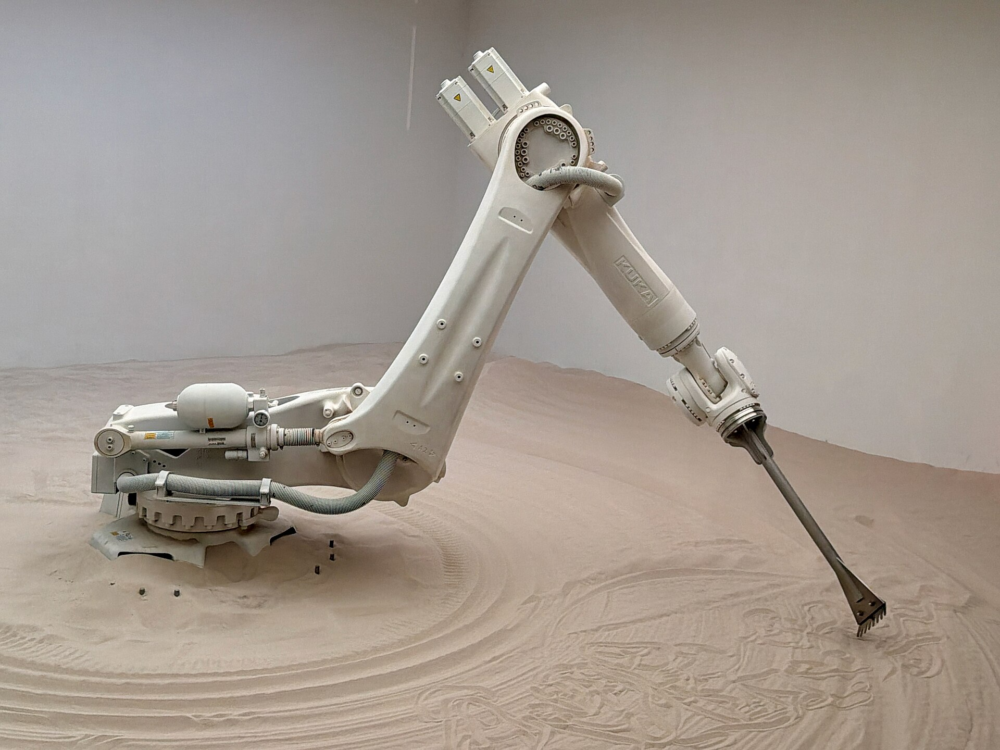
KUKA 현재 기종시작은 1973 파물루스, 첫 6축 전동 1978 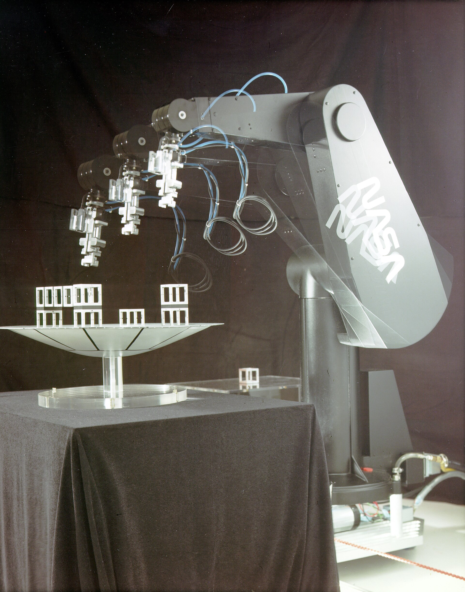
PUMASCARA(1981)와 함께 조립 라인의 표준 6축 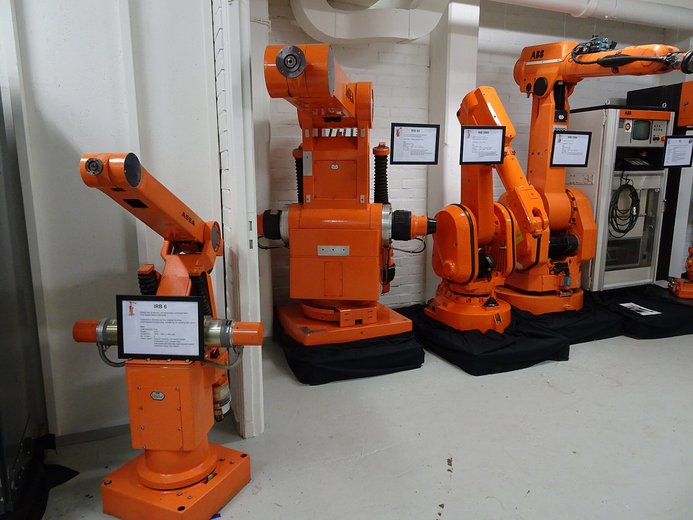
ASEA·ABB 전동 로봇X·Y·Z 좌표 → 관절 각도
3교시 각도·좌표 블록과 4교시 비교로 이어지는 기구학
사진: Oleg Yunakov(CC BY-SA 4.0) · NASA/Dominic Hart(PD) · Dependability(CC BY-SA 4.0) · Wikimedia Commons
1973년 KUKA가 첫 6축 전동 로봇 파물루스를 내놓고 1978년 PUMA와 1981년 야마나시대의 SCARA가 조립 라인의 표준으로 자리 잡습니다. 유압 대신 전동을 쓰면서 관절 각도를 정밀하게 제어할 수 있게 됐고, 사람이 X·Y·Z 좌표를 주면 그걸 관절 각도로 바꾸는 기구학이 제어의 중심에 섭니다.
2교시에 관절을 하나씩 움직여 보고 3교시에는 각도 블록과 좌표 블록을 씁니다. 라쿤봇은 4축이어도 원리는 같아서 좌표를 주면 수식이 각도를 정확하게 풀지만 상황은 모릅니다. 사진 속 KUKA는 현대 기종, PUMA는 NASA 연구용 사진이고 오른쪽은 스웨덴 ASEA(지금의 ABB) 역사 전시관에 있는 초기 전동 로봇들입니다.
사진: KUKA industrial robotic arm · Oleg Yunakov · CC BY-SA 4.0 / PUMA Robotic Arm (NASA) · NASA / Dominic Hart · Public domain / ASEA and ABB industrial robots · Dependability · CC BY-SA 4.0 (Wikimedia Commons, img/rv_A_asea_abb_robots.jpg). 연도: KUKA Famulus 1973, PUMA 1978(Unimation·GM), SCARA 1981(야마나시대 마키노).
1교시 · 로봇의 발달 · 3/4
울타리 없는 협동로봇의 손 티칭
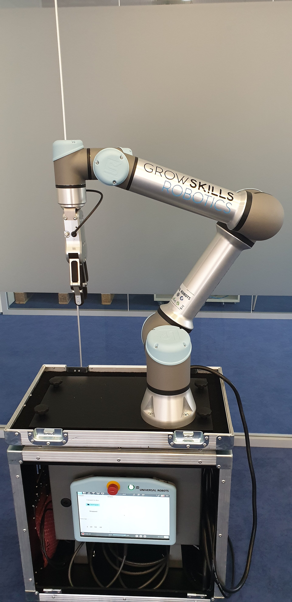
2008 · UR5첫 상용 협동로봇, 힘·속도 제한 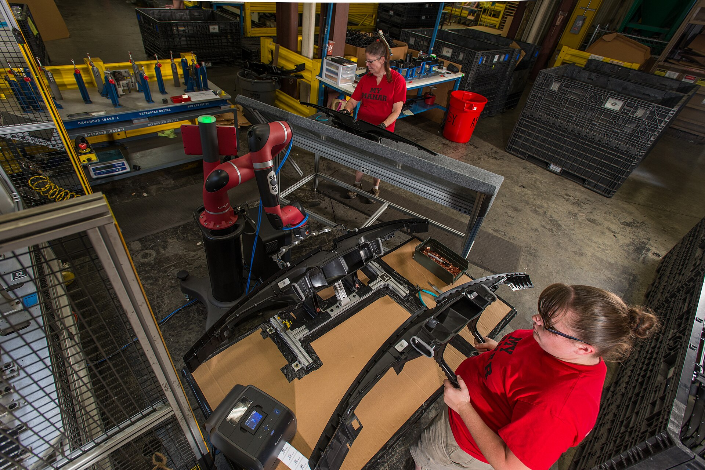
작업자 옆의 협동로봇 Sawyer미국 Rethink Robotics · 국내는 두산·레인보우·현대
라쿤봇도 손으로 잡고 이렇게 가르칩니다
사진: Cobot (UR5) · GrowSkills Robotics(CC BY-SA 4.0) / Tennplasco · Jeff Green, Rethink Robotics(CC BY 4.0) · Wikimedia Commons
협동로봇의 시작은 2008년 덴마크 유니버설로봇의 UR5입니다. 울타리 없이 사람 옆에서 일하고 손으로 잡아 가르치는데 이렇게 가르치는 걸 핸드 가이딩이라고 합니다. 안전 규격 ISO 10218-1/2와 ISO/TS 15066이 힘과 속도에 상한을 두어 사람과 부딪혀도 다치지 않게 합니다. 한국에서는 두산로보틱스·레인보우로보틱스·현대로보틱스가 이 시장에 들어와 있습니다.
3교시에는 라쿤봇을 손으로 잡고 이렇게 직접 교시로 자세를 가르치는데 825g(그리퍼 제외)짜리 교육용이어도 방식은 협동로봇과 같습니다.
사진: Cobot (UR5) · GrowSkills Robotics · CC BY-SA 4.0 / Worker with collaborative robot (Rethink Robotics, Tennplasco) · Jeff Green / Rethink Robotics · CC BY 4.0 (Wikimedia Commons). 연도: UR5 2008. 안전 규격 ISO 10218-1/2, ISO/TS 15066.
1교시 · 로봇의 발달 · 4/4
학습 로봇은 시범과 넘어짐에서 배우고 말로도 배운다
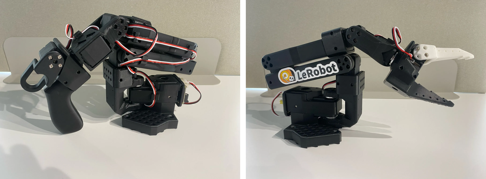
2023~ · 모방학습ALOHA · SO-101 · 사람이 리더 팔을 움직이면 팔로워가 따라 하며 시범 데이터가 쌓인다 강화학습 휴머노이드테슬라 옵티머스 · 시뮬레이션에서 넘어지며 걷기를 배운다
티칭 → 각도 → 좌표 → 학습 순서를 밟아 6교시에 학습, 8교시에 내 모델 × 라쿤봇
사진: SO-101 리더·팔로워 · TheRobotStudio SO-ARM100(Apache-2.0) / Tesla Optimus · Steve Jurvetson(CC BY 2.0) · Wikimedia Commons
2023년부터는 로봇이 배워서 움직이기 시작합니다. 모방학습은 사람이 시범을 수십 번 보여 주면 그 동작을 따라 익히는 방식이고 스탠퍼드의 ALOHA와 LeRobot의 SO-101 같은 저가 로봇팔이 대표적입니다. 휴머노이드가 걷는 법은 강화학습으로 익히는데, 시뮬레이션에서 수백만 번 넘어지며 보상을 최대화하는 방식입니다. VLA에서는 "빨간 블록을 집어"라고 말하면 그 말이 바로 동작으로 이어집니다.
왼쪽 사진이 SO-101인데 손잡이 달린 리더 팔을 사람이 움직이면 오른쪽 팔로워 팔이 그대로 따라 하고 그 기록이 모방학습의 시범 데이터가 됩니다. 오른쪽은 테슬라 옵티머스 같은 휴머노이드로, 걷기는 주로 시뮬레이션 속 강화학습으로 배웁니다. 오늘 우리는 6교시에 분류 모델을 학습시켜 8교시에 그 판단으로 라쿤봇을 움직입니다.
오늘 티칭, 각도, 좌표, 학습을 차례로 해 보면 로봇 65년을 네 시간 만에 훑게 됩니다. 역사의 각 단계는 4교시 비교 미션에서 손으로 비교해 봅니다.
사진: img/shot_so101_pair_combo.png(SO-101 리더 shot_so101_leader.webp + 팔로워 shot_so101_follower.webp를 한 장으로, TheRobotStudio SO-ARM100 · Apache-2.0, 3교시 핸드트래킹 장과 같은 원본). 옛 그림 e-Book B05 32쪽 쪽 통째(블록 판독 불가)는 뺌. / Robo-dancing dance dance revolution(Tesla Optimus, 2024-10) · Steve Jurvetson · CC BY 2.0 (Wikimedia Commons). 연도: ALOHA 2023(Stanford), SO-100/101 2024~25(LeRobot, Hugging Face).
1교시 · 로봇의 발달
로봇이 움직이는 네 가지 방법
공식 기구학 · 1970~ 좌표를 주면 수식이 각도를 푼다
시행착오 강화학습 · 2019~ 수백만 번 넘어지며 배운다
시범 모방학습 · 2023~ 수십 번 보여 주면 배운다
언어 VLA · 2023~ "빨간 블록을 집어"라고 말하면 동작
공식(좌표)만 쓰던 팔이 오늘은 보고 판단합니다. 분류 모델 + 조건문 + 좌표 블록.
공식은 좌표만 주면 기구학이 각도를 풀어 주는 방식이라 계산은 정확한데요. 그 대신 주변 상황은 읽지 못합니다. 시행착오는 휴머노이드가 걷기를 익히는 방식인데, 시뮬레이션에서 수백만 번 넘어지면서 보상을 최대화합니다. 시범은 3교시 손 티칭을 학습으로 바꾼 방식으로, 사람이 수십 번 보여 주면 로봇이 따라 배웁니다. 언어는 언어·시각·행동을 한 모델이 다루는 VLA 방식입니다.
오늘은 분류 모델과 조건문, 좌표 블록을 써서 공식 위에 보는 판단을 얹습니다. VLA가 판단과 동작을 한 모델 안에 넣은 형태라면 오늘의 구조는 그 전 단계에 해당합니다. 판단이 조건문에 있을 때는 사람이 기준을 읽을 수 있어도 모델 안으로 들어가면 읽을 수 없으니 학생이 '왜'를 들여다볼 수 있는 건 이 단계까지죠. 8교시 나눔·토의(선택)는 바로 이 지점에서 출발합니다.
사진 없음(흐름도). 로보메이션 유튜브 "[피지컬AI 19강] VLA 실습(라쿤봇+OpenVLA)" 발췌 가능.
선택 체험 · 10분 · 1교시
실제 판매 로봇을 브라우저에서 밀어 봅니다
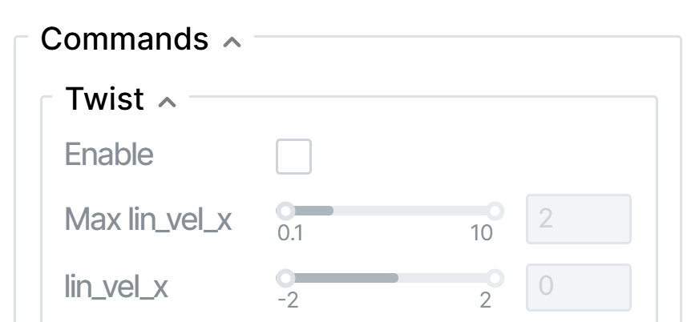
mjswan · Unitree G1, 오른쪽이 Scene·Commands 패널
Unitree G1 · MuJoCo 물리
Interact → Push · 몸통 클릭 = 밀기
Pull + Spring 슬라이더 = 끌기
Twist → Enable · lin_vel_x = 1 → 걷기
넘어지면 Reset · Scene에서 다른 로봇
'밀리면 버텨라'를 코딩한 사람은 없다
화면: 강사 캡처 2026-10-17 (오른쪽 확대 2026-10-21) · 도구: ttktjmt · mjswan (MuJoCo · Unitree G1)
시간이 없으면 건너뛰거나 쉬는 시간 체험으로 안내합니다. 시간을 내려면 로봇 65년 네 장을 장당 30초씩으로 줄이고 여유 시간을 씁니다.
네 가지 방법 중 마지막, 학습으로 움직이는 로봇을 직접 밀어 보겠습니다. 화면에 뜬 Unitree G1은 실제로 팔리는 로봇이고 MuJoCo라는 물리 엔진으로 브라우저 안에 옮겨 왔습니다. 오른쪽 패널의 Interact를 Push로 바꾼 뒤 몸통을 클릭하면 로봇이 밀려 휘청하다가 균형을 잡습니다. Pull로 바꾸고 Spring 슬라이더를 올리면 이번엔 끌려오고요. 걷게 하려면 Commands에서 Twist를 Enable하고 lin_vel_x를 1로 두고, 돌게 하려면 ang_vel_z를 줍니다. 멈추게 할 땐 Zero, 넘어지면 Reset을 누르고 Scene에서는 다른 로봇을 고를 수 있습니다.
화면의 손글씨를 보세요. '밀리면 버텨라'를 코딩한 사람은 없습니다. 시뮬레이션 안에서 수없이 넘어지면서 스스로 익힌 정책인데 이런 방식을 강화학습이라고 합니다. 앞에서 본 네 가지 방법 가운데 티칭도 각도도 좌표도 아닌 네 번째 방법입니다.
다만 학습 때 겪지 않은 상황에서는 넘어지는데 아주 세게 밀거나 걷는 중에 옆에서 밀 때가 그렇습니다. 이런 걸 분포 밖의 실패라고 하는데 6교시 속이기 게임에서 배경이 바뀌면 티처블머신이 틀리는 것도 이 실패입니다. 학습한 범위를 벗어나면 로봇의 다리도 카메라의 분류도 무너집니다.
화면: 강사 캡처 2026-10-17 (img/shot_mjswan.png). 도구: mjswan (ttktjmt, ttktjmt.github.io/mjswan) · MuJoCo WASM · Unitree G1 강화학습 정책.
선택 체험 · 10분 · 팀당 1대
넘어뜨렸다가 걷게 하고 로봇도 바꾸기
1 링크 열고 수십 초 대기 물리 + 신경망을 내 PC가 계산
2 Interact → Push, 몸통 클릭
3 Pull로 바꿔 끌기 · Spring 조절
4 Commands → Twist → Enable, lin_vel_x = 1
5 Zero 멈춤 · 넘어지면 Reset · Scene 바꾸기
ttktjmt.github.io/mjswan
열기 ↗
10:00 눌러서 시작 · 다시 누르면 멈춤 ↺ 넘어뜨리기 → 걷게 하기 → 다른 로봇
생각할 점 넘어뜨린 팀은 어떻게 했나요? 학습 때 겪지 않은 상황이었을 겁니다.
시간이 없으면 건너뛰거나 쉬는 시간 체험으로 안내합니다. 앞 장 설명을 2분 안에 끝내면 체험 8분이 나옵니다. 팀당 1대로 돌립니다. 물리와 신경망을 전부 PC가 계산하므로 노트북 여러 대보다 한 대가 낫습니다.
10분 동안 팀별로 해 봅니다. 링크를 열면 로봇이 뜨기까지 수십 초 걸립니다. Interact를 Push로 바꾸고 몸통을 클릭해서 휘청하다 서면 성공입니다. Pull로 바꾸고 Spring을 조절해 끌어 봅니다. Commands에서 Twist를 Enable하고 lin_vel_x를 1로 두면 걷습니다. Zero로 멈추고, 넘어지면 Reset. 넘어뜨려 보고 걷게 해 본 뒤, 마지막으로 Scene에서 다른 로봇을 골라 다시 해 보면 됩니다.
돌면서 503이 뜬 자리는 새로고침해 주고 클릭해도 안 밀리는 자리는 Interact가 View로 돼 있는지 확인합니다. 저사양 PC에서는 느린데, 물리와 신경망을 전부 PC가 돌리기 때문입니다. 느린 것 자체도 배울 거리입니다. 로봇의 판단은 어디선가 계산돼야 하니까요.
끝나면 이렇게 물어봅니다. 넘어뜨린 팀은 어떻게 했나요? 대개 아주 세게 밀었거나 걷는 중에 옆에서 밀었는데 학습 때 겪어 본 적 없는 상황입니다. 안 본 배경에서 티처블머신이 틀리는 것도 이런 경우인데, 이 이야기는 오늘 하루 세 번 나옵니다.
도구: mjswan (ttktjmt, GitHub Pages). 로봇: Unitree G1, MuJoCo 물리, 강화학습 보행 정책.
1교시 · 로봇의 발달 · 한국
우리 학생들이 일할 나라가 로봇 밀도 세계 1위
한국
1,012
싱가포르
770
중국
470
독일
429
일본
419
미국
295
세계 평균
162
제조업 노동자 1만 명당 산업용 로봇 대수 · IFR World Robotics 2024 (2023년 기준)
세계 평균의 여섯 배나 되는 로봇에 비해 가르치는 사람은 적습니다.
우리 학생들이 일하러 갈 나라, 한국은 제조업 노동자 1만 명당 산업용 로봇이 1,012대로 세계 1위입니다. 세계 평균 162대의 여섯 배가 넘고 2위 싱가포르 770, 3위 중국 470, 그다음이 독일 429, 일본 419, 미국 295입니다. 이 숫자는 반도체·자동차·배터리 중심의 산업 구조에서 나왔습니다.
IFR World Robotics 2024: 로봇 밀도 한국 1,012, 싱가포르 770, 중국 470, 독일 429, 일본 419, 미국 295, 세계 평균 162 (2023년 기준). 최신 보고서로 수치 갱신 필요.
1교시 · 로봇의 발달 · 한국
로봇을 쓰는 나라에서 로봇 가르치는 사람
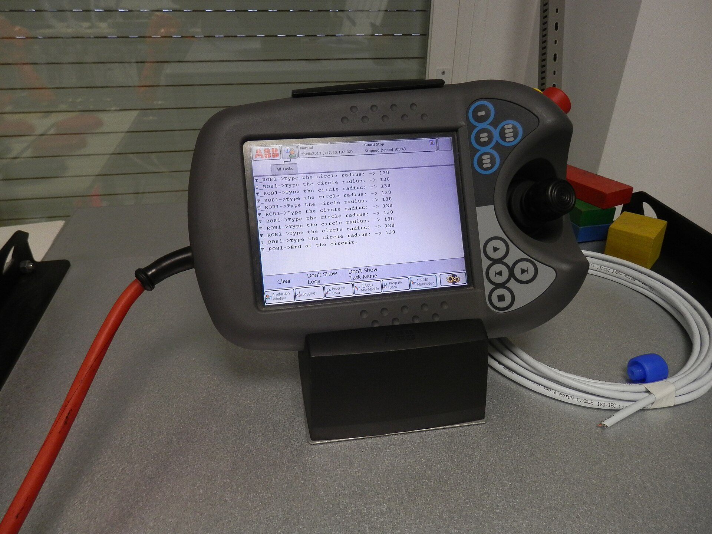
티칭 펜던트좌표를 찍어 가르치던 일 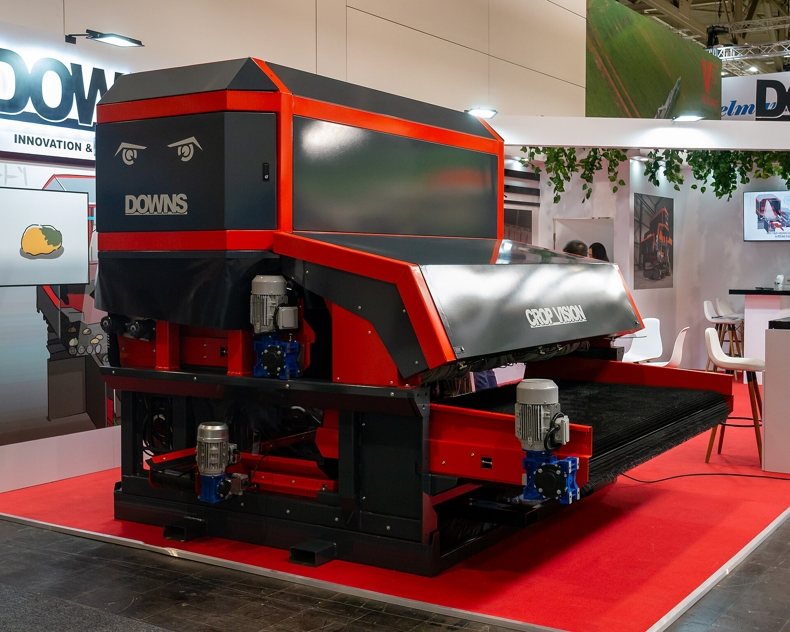
비전 선별기이제는 데이터로 모델을 학습시키는 일
오늘 미션인 품질검사는 가장 먼저 AI로 넘어간 일입니다.
사진: Auledas (CC BY-SA 4.0) · MB-one (CC BY-SA 4.0), Wikimedia Commons
로봇은 이렇게 많이 쓰는데 정작 로봇을 가르치는 사람은 모자랍니다. 현장에서는 티칭 펜던트로 좌표를 찍어 주던 직무가 데이터로 모델을 학습시키는 직무로 옮겨 가고 있죠. 이 전환이 가장 먼저 일어난 비전 품질검사를 오늘 미션으로 골랐습니다. 카메라가 보고 불량을 고르면 로봇이 빼는 일입니다.
사진: Teach pendant (ABB) · Auledas · CC BY-SA 4.0 (Wikimedia Commons, img/rb_teach_pendant.jpg) / Downs Crop Vision, Agritechnica 2023, Hanover (P1150040) · MB-one · CC BY-SA 4.0 (Wikimedia Commons, img/rv_B_crop_vision.jpg). 로봇 밀도 수치: IFR World Robotics 2024.
화면 속 AI는 틀려도 아무 일이 없습니다.몸을 가진 AI는 틀리면 블록을 떨어뜨립니다.
실패가 보여야 원인을 분석합니다. 로봇팔은 정확도를 물리적 결과로 드러냅니다.
로봇팔을 쓰는 이유
왜 몸인가. 화면 속 AI는 틀려도 별일이 없지만 몸을 가진 AI는 틀리면 블록을 떨어뜨립니다. 피지컬AI 교육에서는 추상적인 정확도가 물리적 결과로 드러납니다. 몸이 있으니까요. 실패가 눈에 보이니 학생이 원인을 따지기 시작하고 안전과 책임은 구체적인 설계 문제로 내려옵니다. 정보, 기술, 과학, 수학을 한 책상에 올려놓고 함께 다루게 되고, 쓰는 AI와 만드는 AI의 차이도 몸으로 가를 수 있습니다. 교사가 오늘 이 다섯 가지를 먼저 겪어 보셨으면 해서 로봇팔을 골랐습니다. 이제 로봇팔을 봅니다.
발표자 정리.
1교시 · 왜 몸인가
AI는 몸을 가지기 시작했어요
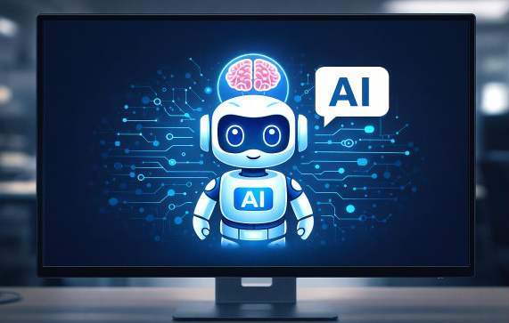
화면 속 AI대화하고 추천하고 문제를 풀어 준다 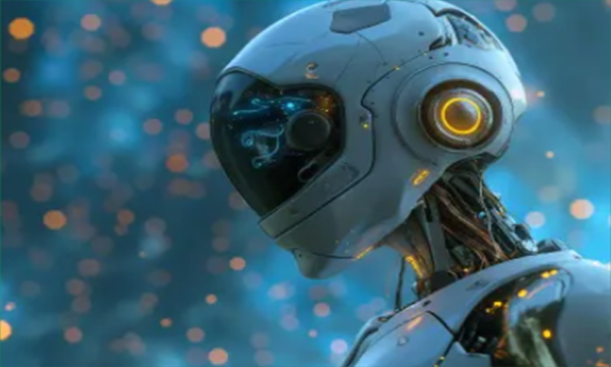
몸을 가진 피지컬 AI스스로 보고 판단하고 움직인다 변화하는 AIAI와 물리 세계가 만나 현실에서 동작한다
학생 교재의 첫 장도 여기서 시작합니다
그림: 로보메이션 라쿤봇 언플러그드 교안 U01 인쇄 5쪽 (부분)
학생들이 쓰는 라쿤봇 교재 첫 단원에 나오는 그림 세 장입니다. 화면 속 AI는 대화하고 추천하고 문제를 풀어 줍니다. 몸을 가진 피지컬 AI는 스스로 보고 판단하며 현실 세계에서 움직입니다. 마지막은 AI와 물리 세계가 결합해 현실에서 직접 동작하는 변화하는 AI입니다. 학생 교재도 이 구분에서 출발하니, 이제 그 몸인 로봇팔을 들여다보겠습니다.
그림: img/oc/U_006_screen_ai.png · U_006_embodied_ai.png · U_006_changing_ai.png(언플러그드 교안 통합본 U_006 = U01 6쪽, 인쇄 5쪽의 쪽 안 원본 그림 3장. 제목 띠·스프링 장식·설명 문장·쪽 번호 제외, 설명은 캡션으로). 옛 그림 e-Book U01_p06 쪽 통째는 뺌.
1교시 · 로봇팔
로봇팔은 사람 팔을 닮았습니다
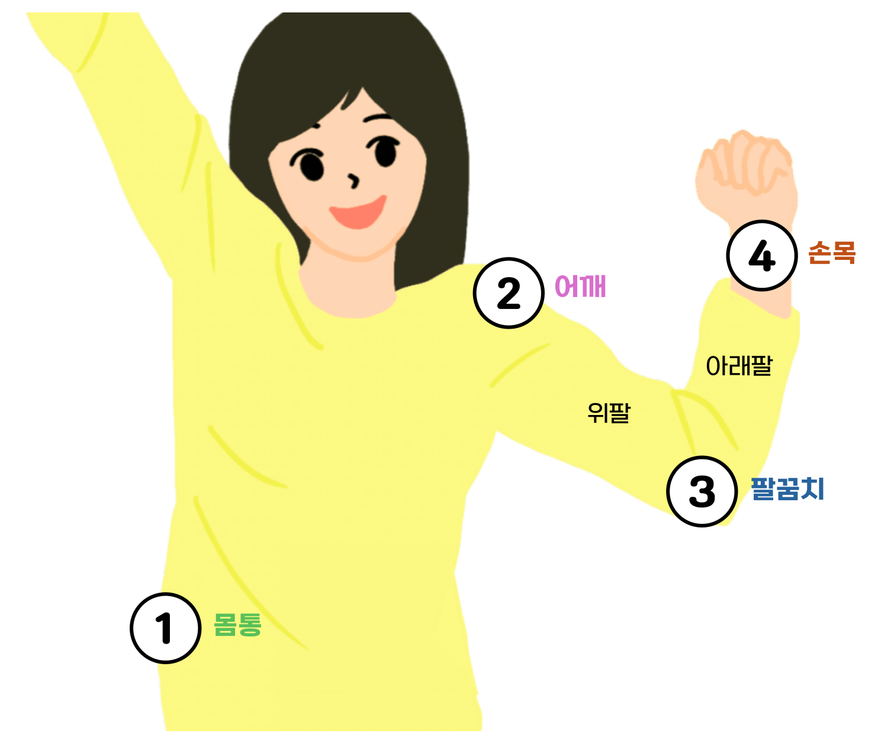
몸통 = 관절 1 · 어깨 = 관절 2 · 팔꿈치 = 관절 3 · 손목 = 관절 4
도는 관절을 링크로 잇고 끝에 손을 단다
베이스 + 관절(회전) + 링크(위팔 · 아래팔) + 말단장치
산업용은 6축, 라쿤봇은 4축 · 손목은 위아래로 꺾는다
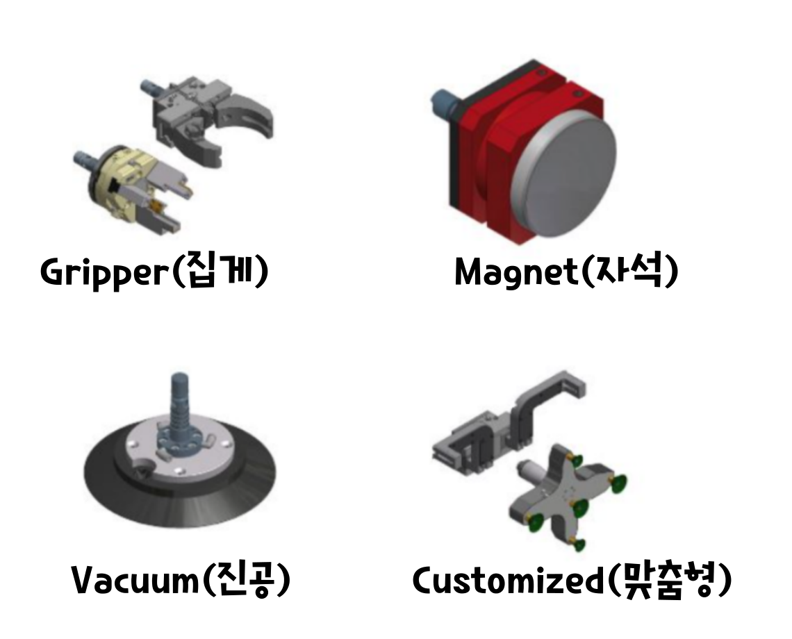
말단장치는 일에 맞게 갈아 끼운다 · 라쿤봇은 집게
그림: 로보메이션 라쿤봇 언플러그드 교안 U01 인쇄 17쪽 (부분) · U03 인쇄 5쪽 (부분)
로봇 일반에서 라쿤봇으로 좁혀 들어가는 장입니다. 로봇팔은 바닥에 고정된 베이스 위로 회전하는 관절이 올라가고, 관절과 관절 사이는 링크라는 뼈대가 이어 줍니다. 사람 팔로 치면 위팔과 아래팔이고 맨 끝에 붙은 말단장치가 일을 하는 손입니다.
그림의 번호를 라쿤봇 관절에 맞춰 보겠습니다. 몸통을 좌우로 돌리는 것이 관절 1, 어깨가 관절 2, 팔꿈치가 관절 3, 손목이 관절 4입니다. 교재 표에는 4번 관절이 '손목을 돌리는 동작'이라고 적혀 있는데, 라쿤봇의 4번 관절은 손목을 위아래로 꺾는 관절입니다. 학생들에게도 '꺾는다'로 말해 주세요.
말단장치는 하는 일에 맞춰 갈아 끼웁니다. 집게로 잡거나 자석으로 붙이거나 진공으로 빨아들이는 식이고, 공장에서는 용접 토치나 맞춤형 손을 답니다. 산업용 로봇이 손끝 위치와 방향을 모두 정하려고 6축을 쓴다면 라쿤봇은 4축에 집게 하나라 위치와 손목 꺾기까지만 정할 수 있습니다.
그림: img/oc/U_018_human_arm_joints.png(언플러그드 교안 통합본 U_018 = U01 인쇄 17쪽 오른쪽 사람 그림을 쪽 3배 렌더에서 크롭, 번호·라벨은 벡터 그대로. '이렇게 말해 보세요' 말풍선이 몸통을 덮던 자리는 같은 쪽 안 원본 그림으로 메움. 제목 띠·왼쪽 라쿤봇 관절 그림(다음 장 위키 그림과 같음)·경고 문장 제외) · img/oc/U_066_end_effectors.png(U_066 = U03 인쇄 5쪽 왼쪽 말단장치 4종과 이름표만. 제목 띠·스프링·말풍선·선생님 캐릭터 제외). J4 정정: 교재 U_019 표 '손목을 돌리는 동작'은 피치(꺾기)가 맞음(교안 의심 S1, U_024).
1교시 · 라쿤봇의 몸
관절 네 개와 집게 하나
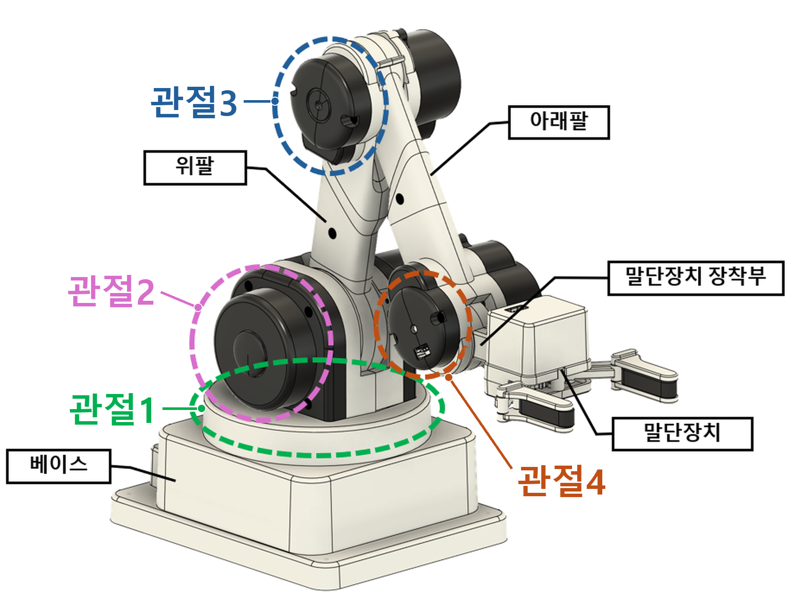
베이스 · 관절 1~4 · 위팔 · 아래팔 · 말단장치
4축, 자유도 4
관절 1 · 베이스 회전 ±120°
관절 2 · 어깨 −90~30°
관절 3 · 팔꿈치 −150~0°
관절 4 · 손목 꺾기 ±105°
위치 3 + 손목 1 = 4
그림: 로보메이션 RaccoonBot 가이드 위키 (관절 라벨 위치·크기 다시 씀)
관절은 베이스 회전(요), 어깨(피치), 팔꿈치(피치), 손목(피치) 순서로 붙어 있습니다. 베이스는 몸 전체를 좌우로 돌리고 어깨는 팔을 앞뒤로 움직입니다. 거리와 높이는 팔꿈치로 맞추고 손목은 말단장치인 집게를 위아래로 꺾습니다. 롤 관절이 없어서 집게를 비틀지는 못하고 수평이나 수직 자세만 잡을 수 있습니다.
자유도는 독립적으로 제어되는 운동의 수입니다. 공간의 한 점에 가려면 3이, 거기에 자세까지 정하려면 6이 필요해서 산업용 로봇은 6축을 씁니다. 라쿤봇은 어떨까요? 4축 4DOF로 위치 3에 손목 피치 1이라 집게 방향은 하나만 고를 수 있습니다. 3교시 역기구학에서 '갈 수 없는 자세' 메시지가 뜨는 것도 이 제약 때문입니다.
구동에는 서보 대신 마이크로스텝 스텝퍼와 감속기를 쓰고 엔코더가 달려 있어 위치 피드백을 받습니다. 조인트 정밀도 0.044°, 엔코더 분해능 0.0879°로 교육용치고 정밀해서 좌표 블록을 믿고 쓸 수 있습니다. 작업거리 295mm, 825g(그리퍼 제외), BLE 5.0, Li-Po 3500mAh로 연속 50분 동작합니다.
다음 장(선택)에서 사양을 표로 한 번 더 보고, 그다음 관절 네 개를 손으로 직접 돌려 봅니다.
그림·수치: 로보메이션 RaccoonBot 가이드 위키 (라쿤봇 소개 · 로봇 사양), 공식자료/00_사양표_블록표(공식자료기준).md 1절(통신 BLE 5.0, 무게 825g 그리퍼 제외).
1교시 · 사양
작고 가벼워도 좌표는 믿을 만한 팔
크기 93 × 118 × 180 mm 무게 825 g (그리퍼 제외) 작업 영역 반경 240° · 거리 295 mm (집게 포함) 축 4축 · 4 DOF · 스텝모터 + 감속기 축 범위 J1 ±120° · J2 −90~30° · J3 −150~0° · J4 ±105° 정밀도 조인트 0.044° · 엔코더 0.0879° 통신 BLE 5.0 · PC는 Mini Dongle+ 배터리 Li-Po 3500 mAh · 약 50분 · 완충 3시간 이상
사양표로보메이션 위키 「로봇 사양」·제품 상세를 표로 다시 씀 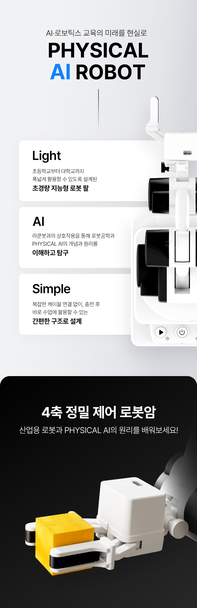
집게 그리퍼4축 정밀 제어 · 조인트 정밀도 0.044°
배터리 3500mAh · 연속 50분 · 충전 3시간
사양: 로보메이션 RaccoonBot 가이드 위키 · 제품 상세 / 사진: 로보메이션 라쿤봇 제품 상세 페이지
사양표만 짚습니다. 크기 가로 93, 세로 118, 높이 180mm. 무게 약 825g(그리퍼 제외). 작업영역 반경 240°(사양표 표기, 베이스가 좌우 120°씩 도는 범위), 거리 295mm(집게 포함). 4축 4DOF. 조인트 정밀도 0.044°, 엔코더 정밀도 0.0879°. 관절은 마이크로스텝 스텝퍼에 감속기 내장. 통신은 BLE 5.0으로 iOS·Android·PC(Mini Dongle+). 축 범위는 관절 1 ±120°, 관절 2 −90~+30°, 관절 3 −150~0°, 관절 4 ±105°. 배터리 Li-Poly 3.7V 3500mAh, 5V 3A USB-C 충전, 완충 3시간 이상, 동작 50분 내외.
구성품은 본체, 집게 그리퍼(케이블로 본체 연결), Mini Dongle+, 원통 나무 블럭(지름 20mm, 4색), USB-C 충전 케이블, 가이드 스티커 2종, 사용자 매뉴얼입니다. 오늘 팀마다 한 세트씩 있는지 확인합니다.
수치: 공식자료/00_사양표_블록표(공식자료기준).md 1절(위키 「로봇 사양」 2026-02-13 개정 · 제품 상세 official_detail_08). 왼쪽 사양표는 예전 CSS 크롭이 정밀도·축 범위·배터리 행을 잘라 HTML 표로 다시 씀. 사진: official_detail_02(4축 정밀 제어 집게 구간). 배터리 50분이라 충전 케이블을 꽂은 채 쓰는 운용은 2교시 기본 조작 장에서 다시 안내.
1교시 · 실습 4분 · 팀당 1대
관절을 손으로 돌려 0°와 범위를 찾습니다
1 POWER 한 번 → HOME 자세로 움직임 → 모드 LED 흰색(대기) 움직이는 동안은 손을 뗍니다
2 한 손으로 베이스를 누르고, 1번 관절을 천천히 정면이 0° · 버튼 쪽에서 보면 왼쪽이 + · 양 끝까지
3 2 · 3 · 4번 관절도 같은 방법으로 4번은 손목을 위아래로 꺾는 관절
4 끝에 닿으면 멈추기 · 억지로 밀지 않기
5 끝나면 POWER 길게 = 끄기
관절 1 · 몸통 관절 2 · 어깨 관절 3 · 팔꿈치 관절 4 · 손목 좌우로 돌리기 팔 전체 앞뒤로 굽혔다 펴기 위아래로 꺾기 ±120° −90~30° −150~0° ±105°
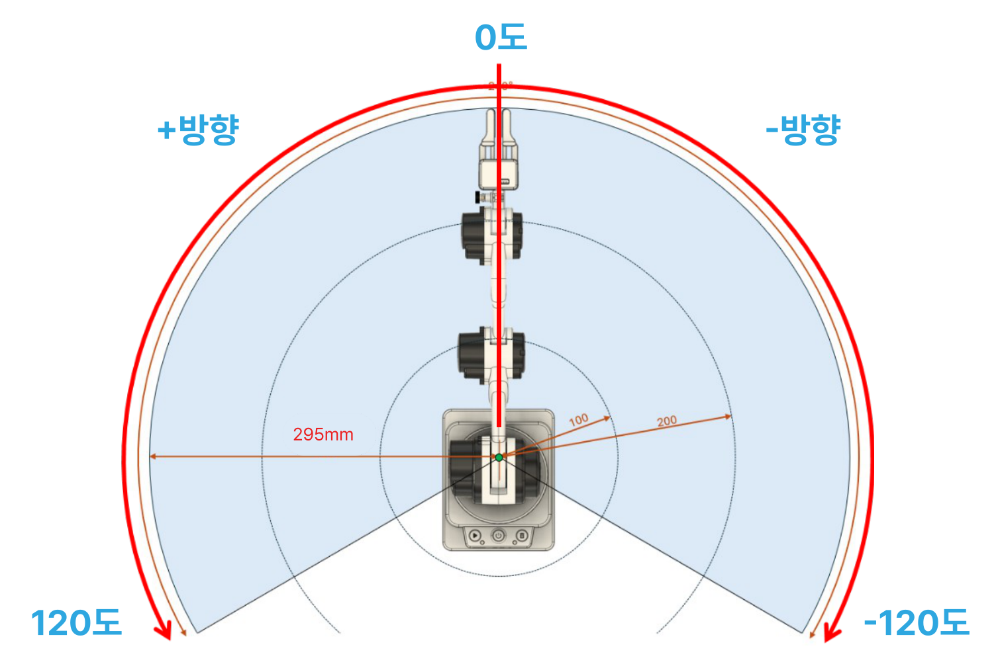
위에서 본 1번 관절 · 정면 0° · 왼쪽이 + · 작업 거리 295mm 04:00 눌러서 시작 · 다시 누르면 멈춤 ↺ 그림: 로보메이션 라쿤봇 언플러그드 교안 U01 인쇄 20쪽 (부분)
1교시에 라쿤봇을 처음 만지는 장입니다. 4분 드리겠습니다. POWER를 한 번 누르면 로봇이 HOME 자세로 움직이는데, 이 동안은 손을 떼고 기다립니다. 움직임이 멈추고 모드 LED가 흰색이면 대기 모드입니다.
한 손으로 베이스를 눌러 고정하고 다른 손으로 1번 관절을 천천히 돌려 보세요. 로봇이 정면을 볼 때가 0°이고, 버튼 쪽에 서서 보면 왼쪽이 + 방향입니다. 양쪽 끝까지 돌려 보면 120°씩 돌아갑니다. 2번, 3번, 4번도 같은 방법으로 움직여 보시되, 4번은 손목을 위아래로 꺾는 관절이라 돌린다기보다 숙이는 느낌에 가깝습니다.
끝에 닿았는데 더 밀면 기어에 무리가 가니 거기서 멈춥니다. 다 해 보셨으면 POWER를 길게 눌러 끕니다. 숫자는 아래 표에 있지만, 교재는 학생들이 각도 숫자보다 방향과 범위를 손으로 먼저 찾게 하라고 안내합니다.
PC에 연결한 코딩 모드(모드 LED 파랑)에서는 손으로 돌리지 않습니다. 바로 다음 안전 장에서 한 번 더 짚겠습니다. 관절 번호 스티커는 2교시 기본 조작 때 붙입니다.
근거: 언플러그드 교안 U01 인쇄 17쪽 경고(전원을 켠 뒤 각 관절을 손으로 잡고 움직여 보기, 한 손으로 하단 베이스를 안정적으로 잡기, 힘을 세게 주면 고장) · 인쇄 20쪽(대기 모드, 모드 LED 흰색에서 로봇을 잡고 1번 관절을 천천히 회전 · 언플러그드 활동에서는 수치보다 직접 만져 보며 방향과 범위를 탐색). 범위 수치는 교재·위키·엔트리 JOINT_LIMITS가 같음(공식교안_분석 4절), HOME = [0, −10, −140, 60]. J4는 피치(교재 U_019 '손목을 돌리는 동작'은 오류). 그림: img/oc/U_021_j1_range_topview.png(U_021 = U01 인쇄 20쪽 오른쪽 범위 그림을 쪽 3배 렌더에서 크롭. 빨간 체크·왼쪽 손 그림 조각·아래 설명 문장 제외, 라벨은 벡터 그대로). 리허설 확인: ① 대기 모드(흰색)에서 손으로 관절을 돌려도 되는지 위키·실물로(옛 덱은 'TEACH 모드에서만'이라 적었음) ② 버튼 쪽에 섰을 때 + 방향이 왼쪽인지 ③ 2~4번 관절도 대기 모드에서 손으로 움직이는지.
1교시 · 안전 · 3분
실행 버튼을 누르기 전에 "손 떼세요"
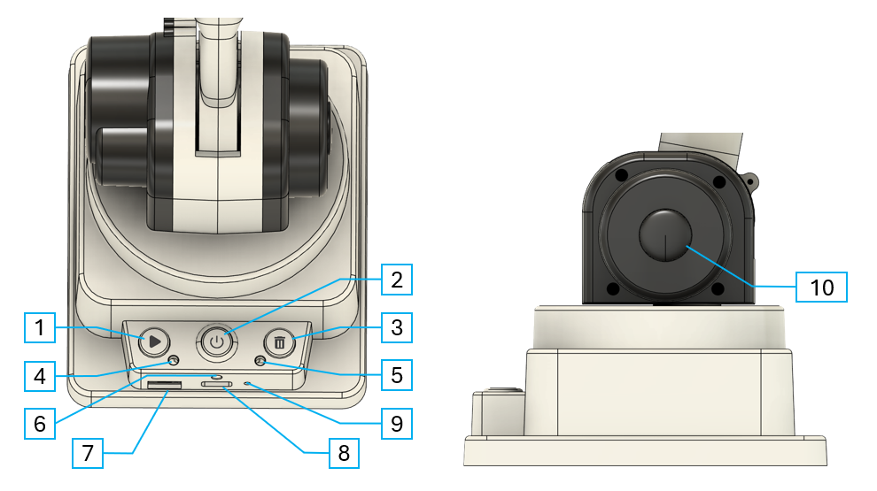
인터페이스 번호1 PLAY · 2 POWER · 3 DELETE · 4 상태 LED · 5 모드 LED · 6 충전 LED · 7 연결 단자 · 8 USB-C 충전 · 9 리셋 구멍(클립) · 10 TEACH 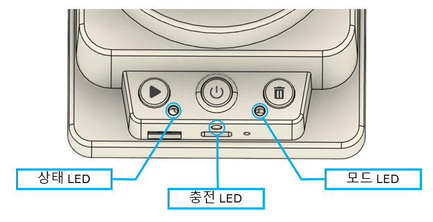
상태 LED파랑 = 연결 · 주황 = HOME 이동 중 · 빨강 점멸 = 점검
손 떼세요 · 손으로 돌리기는 흰색·초록 모드에서만 · 책상 안쪽 · 멈춤은 POWER 한 번
그림: 로보메이션 RaccoonBot 가이드 위키 (사용법)
실행 버튼을 누르기 전엔 늘 "손 떼세요"부터 외칩니다. PC에 연결된 코딩 모드에서는 어딘가에 부딪혀도 로봇이 스스로 멈추지 않거든요. Smart Stop은 언플러그드 모드에서만 켜집니다. 관절은 대기 모드(모드 LED 흰색)나 언플러그드 모드(초록)일 때만 손으로 돌리고, PC에 연결된 코딩 모드(파랑)에서는 손으로 돌리지 않습니다. 방금 실습에서 한 그대로죠. 로봇 자리는 책상 안쪽이고 작업 범위에는 손을 넣지 않습니다. 무게가 825g이라 떨어지면 제품도 상하고 발도 다칩니다. POWER를 한 번 누르면 모든 동작이 멈추고 HOME으로 돌아가니 멈출 때는 이걸 쓰고 전원은 길게 눌러서 끕니다. 이상할 땐 리셋 스위치를 클립으로 누르는 것까지, 이 네 가지만 지키면 됩니다.
(시연) 인터페이스 번호를 짚습니다. 1 PLAY, 2 POWER, 3 DELETE, 4 상태 LED, 5 모드 LED, 6 충전 LED, 10 TEACH. 상태 LED가 파랗게 켜지면 블루투스 연결, 주황이면 HOME으로 가는 중이고 빨강으로 깜빡이면 점검이 필요합니다.
그림: 로보메이션 RaccoonBot 가이드 위키 사용법(인터페이스 부품 번호 · 상태 LED). 왼쪽 번호 그림은 번호 글자가 화면에서 11px 정도로 작아, 위키 그림에서 베이스 앞면(1~9)과 옆면 TEACH(10) 부분만 잘라 나란히 다시 놓음(img/wiki_interface_base_combo.png, 13·14 그리퍼 쪽 번호와 11·12는 뺌). 손 조작 모드: 교재 U01 인쇄 20쪽 「대기 모드(모드 LED 흰색)에서 로봇을 잡고 1번 관절을 회전」 기준. 리허설 확인: 대기·언플러그드 모드에서 손으로 관절을 돌려도 되는지(옛 덱 문구는 「TEACH 모드에서만」), Smart Stop이 PC 연결 모드에서 꺼지는지. 구성품 확인: 본체·집게 그리퍼·그리퍼 케이블·Mini Dongle+·USB-C·스티커·나무 블록 4종. 안전 카드 팀별 1장.
1교시 · 안전
무거운 물건입니다
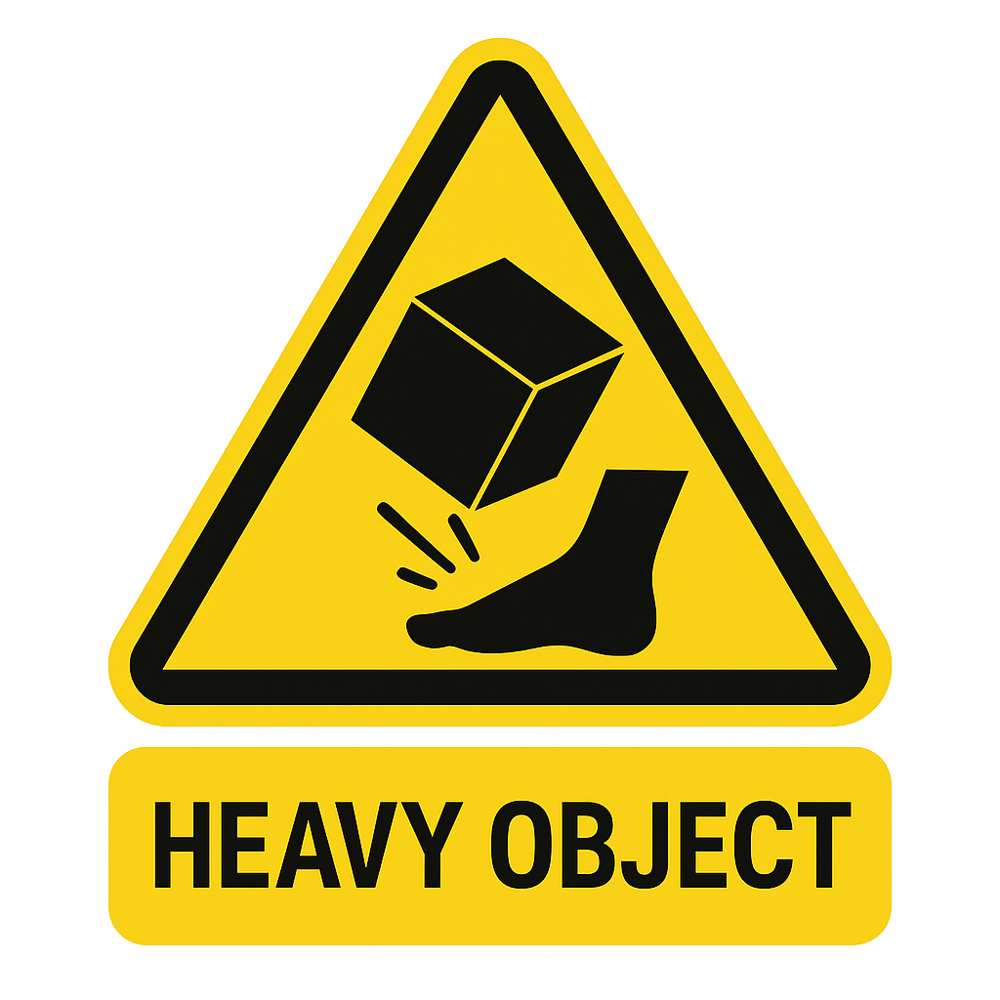
825 g(그리퍼 제외) · 책상 안쪽 · 두 손으로 옮기기 옮길 때는 베이스를 두 손으로, 팔을 잡지 않습니다
그림: 로보메이션 RaccoonBot 가이드 위키
공식 위키 첫 장에 실린 그림입니다. 라쿤봇 무게는 825g이고 책상 모서리에 두면 팔이 움직일 때 밀려서 떨어질 수 있습니다. 오늘 휴식 때 도면 위로 옮기는 일이 있어서 미리 말해 둡니다. 옮길 때는 베이스를 두 손으로 받쳐 들고, 팔이나 집게를 잡고 들지 않습니다.
그림: 로보메이션 RaccoonBot 가이드 위키 라쿤봇 소개(무거운 물건 주의). 무게: 제품 사양 약 825g.
1교시 · 학교 현장
교육과정은 이미 '만드는 AI'를 요구합니다
2022 개정 교육과정 · 정보 시수
초
실과(정보)
34시간 이상
데이터 모으기 · 분류 · 규칙 찾기
중
정보 · 기술
68시간 이상
AI 원리 · 데이터와 학습 · 윤리
기술: 생산 자동화 · 로봇
고
선택 과목
인공지능 기초
데이터 과학
로봇과 공학세계
지도학습 · 모델 평가 · 기구학
데이터·학습·윤리가 이미 성취기준에 있습니다
그럼 학교는 지금 어디쯤 와 있을까요. 2022 개정 교육과정으로 정보 교육 시간이 늘어 초등 실과는 34시간 이상, 중학교 정보는 68시간 이상이 됐습니다. 초등은 로봇이 없어도 B 트랙으로 할 수 있습니다. 데이터 모으기, 분류하기, 규칙 찾기가 성취기준에 들어 있으니까요. 중학교는 인공지능의 원리, 데이터와 학습, 윤리를 배우고 기술 시간에는 생산 자동화와 로봇을 다루는데, 학급에 1대를 두고 시연하면서 모둠 데이터로 돌리면 됩니다. 고등에는 인공지능 기초, 데이터 과학, 로봇과 공학세계 과목이 있습니다. 지도학습, 모델 평가, 기구학이 교과서에 실려 있고 제가 쓴 교과서에도 기구학이 들어 있습니다. 모둠별 1대에 파이썬 확장까지. 교과 연계는 폭이 넓어서 정보, 기술, 과학의 분류 기준과 변인 통제부터 수학의 확률·좌표·삼각함수, 사회의 책임과 노동, 진로까지 닿습니다. 오늘 활동 하나하나에 학교급과 교과 꼬리표를 달아 두었고 8교시에 그걸 모아 조립합니다.
2022 개정 교육과정 정보 시수(초 34, 중 68 이상). 고등 선택과목명은 시도별 편제 확인.
학생은 AI를 쓰는 데 익숙하지만만든 경험이 없습니다.
챗봇·필터·추천을 매일 쓰는 학생들도 클래스를 정하고 데이터를 모아 틀리는 걸 본 적은 없습니다.
부족한 건 도구보다 경험
디지털교과서 논쟁은 도구를 놓고 벌어졌지만 오늘은 학생이 겪는 경험을 다룹니다. 학생들은 AI를 쓰는 데는 익숙한데 만들어 본 적은 있을까요? 챗봇이나 사진 필터, 추천은 날마다 쓰면서도 클래스를 정하고 데이터를 모아 모델이 틀리는 걸 지켜본 적은 없습니다. 도구가 무엇이든 교사가 설계하지 않으면 학생이 모델을 만들고 몸으로 결과를 보는 경험은 생기지 않습니다.
디지털교과서 관련 문구는 연수 시점의 정책 상황에 맞게 조정.
1교시 · 학교 현장 · 1/2
AI를 만드는 교실에서 교사가 하는 일 다섯 가지
1 문제 설계자 조건문으로는 못 푸는 문제를 고른다
2 데이터 큐레이터 배경 고정 · 손 금지 · 시험용 분리
3 기준 결정자 임계값과 멈춤 조건을 토의로 정한다
먼저 문제 설계자. 조건문으로는 못 쓰는 문제, 색만으로 구분되지 않는 불량, '없음'이 필요한 상황처럼 좋은 문제를 고르면 데이터 토의는 시키지 않아도 따라 나옵니다. 데이터 큐레이터로서는 보여 줄 것을 정하되, 배경 고정, 손 금지, 시험용 분리 같은 규칙은 학생이 스스로 세우게 이끕니다. 기준 결정자가 되면 임계값과 멈춤 조건을 토의로 정하고, 불량 출고 비용과 멈춤 비용을 학생 언어로 번역해 줍니다.
발표자 정리. 세부 규칙은 6교시(데이터), 7교시(기준값)에서 실습.
1교시 · 학교 현장 · 2/2
지식 전달은 맨 뒤로 미룹니다
4 안전 책임자 PC 연결 모드에선 Smart Stop 꺼짐 · 얼굴 금지
5 실패 번역자 인식 오류 · 집기 · 좌표 · 순서를 가른다
! 지식 전달은 다섯 번째 뒤에 실패한 뒤 설명하면 10분, 먼저 하면 50분
안전 책임자라면 PC 연결 모드에서 Smart Stop이 꺼진다는 사실, 구호, 작업 범위를 챙기고 개인정보도 살펴서 얼굴이 찍히지 않도록 합니다. 실패 번역자는 인식 오류인지, 집기 실패인지, 좌표 오류인지, 순서 문제인지 가를 수 있는 말을 학생에게 쥐여 주고 데이터를 늘려도 풀리지 않는 실패가 있다는 것도 일러 줍니다. 지식은 그다음에 전합니다. 전이학습, softmax, 역기구학은 학생이 실패한 뒤에 설명하면 10분이면 되는데 먼저 꺼내면 50분이 걸리죠. 오늘 덱은 그 순서대로 짰습니다. 전이학습과 신경망 설명은 6교시 티처블머신 실습을 해 본 뒤로, 역기구학 설명은 3교시 정기구학 퍼즐 뒤로 미뤄 두었습니다.
Smart Stop 동작 조건: 로보메이션 공식 위키(PC 연결 모드에서 비활성). 발표자 정리.
휴식 10분
10:00 눌러서 시작 · 다시 누르면 멈춤 ↺
돌아오기 전에: 바탕화면에 엔트리 하드웨어 연결 프로그램이 있는지 · 동글을 USB에 꽂기
2교시 10:20 시작
10분 쉬겠습니다. 2교시 첫 10분은 연결에서 가장 많이 막히니, 쉬는 동안 바탕화면에 엔트리 하드웨어 연결 프로그램 아이콘이 있는지 봐 주세요. Mini Dongle+는 미리 USB에 꽂아 두고, 로봇 전원은 끈 채로 둡니다. 프로그램이 없는 자리는 손을 들어 주시면 쉬는 동안 깔아 드리겠습니다.
1교시 뒤 휴식 장은 옛 덱에 없어 새로 씀(덱감사 '1·6교시 뒤 휴식 장 없음'). 틀은 2교시 뒤 휴식 장(옛 60장)과 같음. 연결 프로그램·동글 드라이버: 사양표 md 4절(엔트리 하드웨어 연결 프로그램 최신판, ROBOMATION USB_BLE_Dongle_Driver_Setup.exe).
2
2교시 · 10:20~11:10
프로그램 연결과 기본 조작
편성표: 소프트웨어 설치 및 로봇 연결
기본 조작 4분 → 설치·연결 6분 → 첫 코드 8분 → 관절 하나씩 12분 → 값 읽기 3분 → 묻기 2분
연결이 되면 반은 끝
2교시에는 로봇을 PC에 붙입니다. 라쿤봇 모듈은 2026년 9월에 엔트리에 들어왔고, 오늘 코딩은 처음부터 끝까지 엔트리로 합니다. 블록컴포저는 6교시에 남이 학습시킨 AI를 잠깐 보여 드릴 때만 꺼냅니다.
막히는 자리는 이 교시 안에서 모두 풀고 넘어가려고 50분 가운데 15분을 일부러 비워 두었습니다. 연결이 한 번 되면 남은 교시는 같은 순서를 되풀이하면 되니까요. 다 된 팀은 관절 실습을 더 길게 하시면 됩니다.
연수 편성표(2026-11-28) 2교시: 프로그램 연결과 기본 조작(소프트웨어 설치 및 로봇 연결). 분 배분은 RESTRUCTURE_PLAN 1절(core 35분). 엔트리 라쿤 모듈: entry-hw 023001, 2026-09-08 병합(사양표 md 4절).
2교시 · 기본 조작 4분
POWER 하나로 켜고, 멈추고, 끕니다
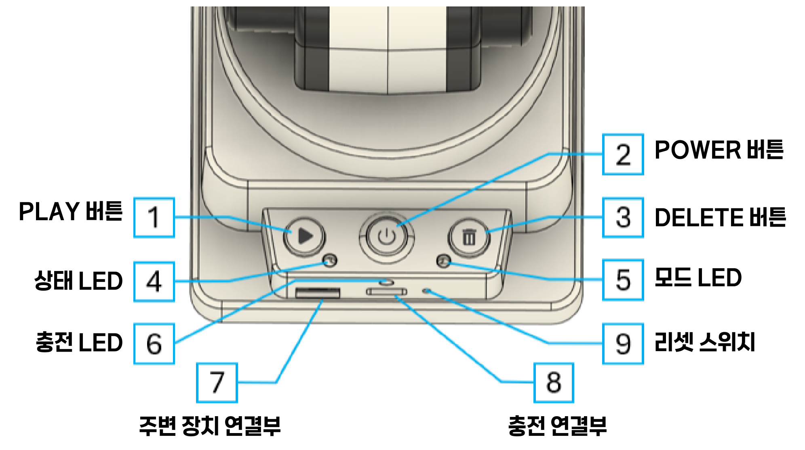
베이스 앞면 버튼과 LED② POWER · ④ 상태 LED · ⑧ 충전 연결부 · PLAY ①·DELETE ③은 3교시 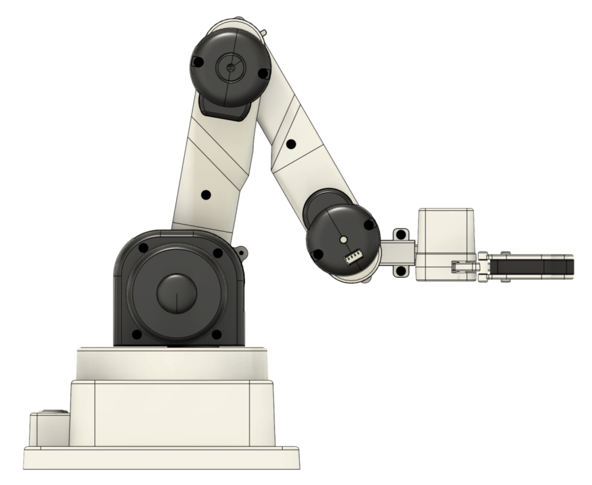
HOME 자세 (초기 자세)관절 1~4 = 0° · −10° · −140° · 60°
꺼진 상태에서 한 번 → 켜지고 HOME으로가는 동안 상태 LED 주황
켜진 상태에서 한 번 → 모두 멈추고 HOME코드가 엉뚱하게 돌 때 이것부터
1초 이상 길게 → 끄기충전 케이블은 꽂은 채로 씁니다
그림: 로보메이션 라쿤봇 언플러그드 교안 U01 인쇄 11쪽 (부분) · 인쇄 19쪽 (부분)
쉬는 동안 꺼 두신 로봇을 켜겠습니다. 가운데 POWER 버튼을 한 번 누르면 전원이 들어오면서 오른쪽 그림의 HOME 자세로 움직이는데, 그동안 상태 LED는 주황색입니다. 관절 1~4가 0°, −10°, −140°, 60°인 이 자세가 HOME이고 오늘 짜는 코드도 전부 여기서 출발합니다.
켜진 상태에서 POWER를 한 번 더 누르면 로봇은 하던 동작을 모두 멈추고 HOME으로 돌아갑니다. PC에 연결한 코딩 모드에서는 Smart Stop이 꺼져 있어서 로봇이 무언가에 부딪혀도 스스로 멈추지 않습니다. 코드가 엉뚱하게 돌 때는 키보드보다 POWER가 빠르니 손이 먼저 가도록 지금 두 번만 눌러 보세요. 끄려면 1초 이상 길게 누릅니다.
상자에 든 가이드 스티커도 붙입니다. 1번은 베이스 위, 2번은 TEACH 버튼 반대편 어깨, 3번은 팔꿈치, 4번은 손목인데 4번은 조인트 LED를 가리지 않게 붙여 주세요. TEACH 버튼에도 스티커를 붙여 둡니다. 2교시에 쓰는 버튼은 POWER 하나이고, TEACH·PLAY·DELETE는 3교시 손 티칭에서 씁니다.
배터리만으로는 50분 안팎이라 하루를 버티지 못하니 충전 케이블은 꽂은 채로 씁니다. 충전기는 USB 5V 3A짜리만 쓰고, 휴대폰 고속 충전기는 회로를 상하게 할 수 있으니 꽂지 않습니다.
그림: img/oc/U_012_buttons_leds.png(언플러그드 교안 U_012 = U01 인쇄 11쪽 버튼·LED·포트 번호 그림을 쪽 3배 렌더에서 크롭, 번호·이름표는 벡터 그대로. 제목 띠·로고·'POWER 버튼이 여기 있네' 손 그림·아래 전구 안내 문장 제외) · img/oc/U_020_home_pose.png(U_020 = U01 인쇄 19쪽 초기 자세 그림, 쪽 안 원본 그림 그대로. 스티커 안내 상자·번호 원·화살표·베이스 위 작은 그림·전구 문장 제외, 스티커 자리는 노트로). 버튼·LED 문구: 사양표 md 2·3절, 교재 U01 인쇄 15쪽(충전, 5V/3A) · 16쪽(POWER 한 번 켜기, 1초 이상 끄기, 켜진 상태 한 번 = 초기 자세) · 19쪽(스티커). HOME [0, −10, −140, 60]: 블록컴포저 교안 B_047. 배터리 50분 내외·충전 중 사용: 사양표 md 1절. 리허설 확인: PC 연결(코딩 모드) 중 POWER 한 번이 연결을 끊지 않고 멈춤·HOME만 하는지.
2교시 · 설치 2분 · 빠진 자리만
PC에 깐 프로그램을 엔트리에서 엽니다
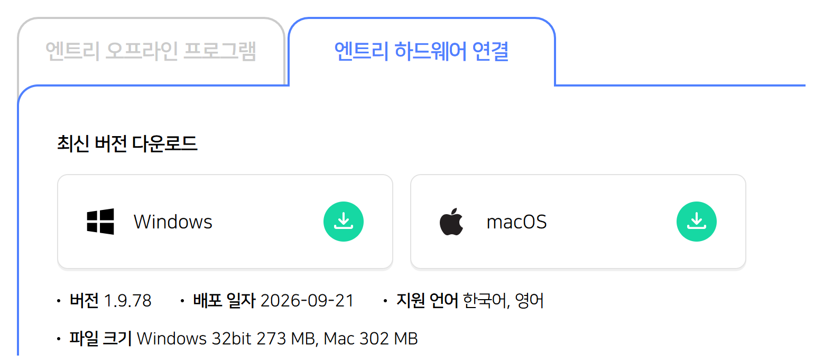
① 연결 프로그램 최신판 받기playentry.org/download/hardware · [엔트리 하드웨어 연결] 탭 · Windows 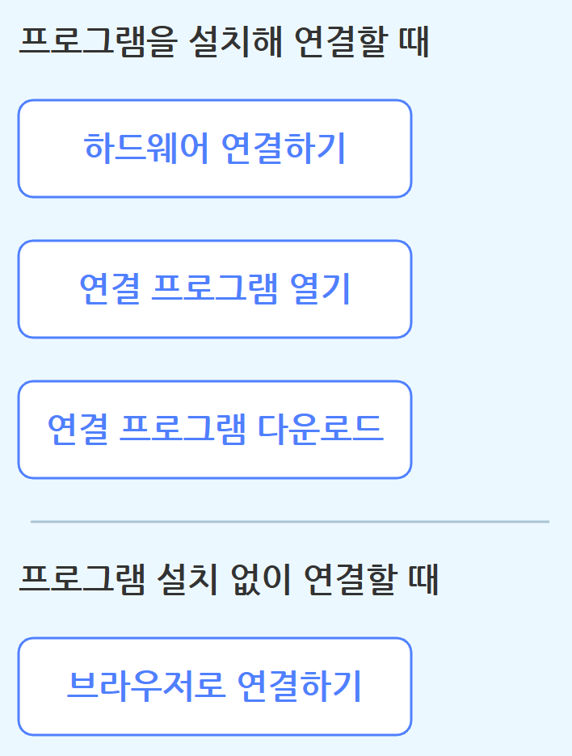
② 엔트리 [하드웨어] → [연결 프로그램 열기]연결 전에는 꾸러미에 단추만 보입니다
연결 프로그램 최신판 · 동글 드라이버(처음 쓰는 PC만) · 크롬
화면: 엔트리 다운로드 페이지(playentry.org/download/hardware) · 엔트리 작업 공간 [하드웨어] 꾸러미, 캡처 2026-10-20
PC 쪽에는 엔트리 하드웨어 연결 프로그램, 동글 드라이버, 크롬 이렇게 셋이 필요합니다. 연결 프로그램은 playentry.org/download/hardware에 들어가 [엔트리 하드웨어 연결] 탭에서 받습니다. 지금 최신판은 1.9.78(2026-09-21 배포). 라쿤봇 모듈이 엔트리에 들어온 게 2026년 9월이라 그보다 먼저 깐 연결 프로그램에는 라쿤이 목록에 없을 수 있습니다.
프로그램은 엔트리 화면에서 띄웁니다. 블록 꾸러미 맨 아래의 [하드웨어]를 누르면 오른쪽 그림처럼 단추만 보이는데, 이 가운데 [연결 프로그램 열기]를 누릅니다. 프로그램이 아예 없는 PC는 바로 아래 [연결 프로그램 다운로드]로 받아도 됩니다.
동글 드라이버는 처음 쓰는 PC에만 깝니다. 라쿤용 드라이버(로보메이션 USB_BLE_Dongle_Driver_Setup.exe)가 연결 프로그램 안에 들어 있어서 라쿤을 고른 뒤 드라이버 설치 단추로 깔 수 있습니다. 설치는 연수 전날 모든 PC에 해 두는 것이 원칙이라 지금은 아이콘이 없는 자리만 손을 들어 주세요.
블록컴포저 탭이나 로봇 코딩 SW를 켜 둔 상태면 동글을 그쪽이 먼저 차지해서 엔트리가 붙지 못하니 둘 다 닫고 시작합니다. 그래도 연결이 안 되는 자리는 예비 PC로 옮깁니다. 마지막 대안은 로봇 코딩 SW 2.2.1입니다.
화면: img/entry/shot_download_hardware_v2.png(playentry.org/download/hardware를 Edge 헤드리스 2배로 캡처 2026-10-20, 탭·단추·버전 줄만. 머리 메뉴·요구사항 문단 제외) · img/entry/shot_cat_hw_connect_v2.png(entry_capture shots_L2.json의 shot_cat_hw_v2 3배 캡처에서 단추 부분만, 옛 shot_cat_hw.png와 같은 화면). 드라이버: entry-hw app/modules/raccoon.json driver 항목(win32 ROBOMATION/USB_BLE_Dongle_Driver_Setup.exe, macOS SiLabs VCP 드라이버), 시리얼 115200(사양표 md 4절). 동글 드라이버 설치 창·연결 프로그램 창은 로컬 설치 프로그램이라 캡처하지 않음(연결 프로그램 창은 다음 장 도움말 그림). 리허설 확인: ① 연결 프로그램 1.9.78 목록에 '라쿤'이 있는지(다운로드 페이지의 '지원 하드웨어 목록' 글에는 2026-10-20 현재 라쿤이 없음) ② 드라이버 설치 단추 위치와 이름 ③ '브라우저로 연결하기'로 라쿤이 붙는지(붙으면 설치 없는 PC의 대안).
2교시 · 연결 2분
PC가 로봇을 움직이려면?
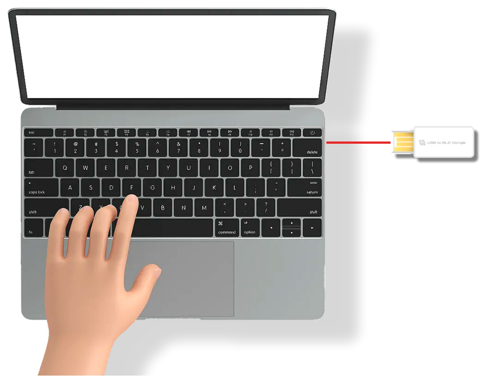
① 동글을 USB에 꽂고, 로봇 전원 켜기Mini Dongle+ · PC와는 USB, 로봇과는 블루투스(BLE 5.0) 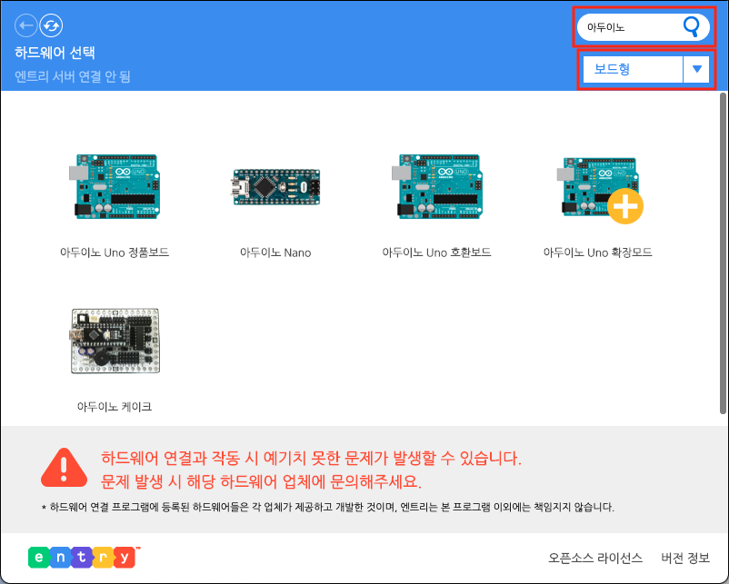
② 연결 프로그램 검색창에 "라쿤" → 클릭'라쿤' 두 글자로 찾기 · 연결 프로그램 1.9.78 이상 · 그림은 '아두이노'로 찾은 예
동글 → 전원 → 라쿤 고르기 · 상태 LED 파랑이면 연결
그림: 로보메이션 블록컴포저 교안 B01 인쇄 25쪽 (부분, 연결 선은 다시 그림) · 엔트리 공식 도움말 docs.playentry.org
PC가 로봇을 움직이려면 둘 사이에 길부터 있어야 하고 오후에 내 모델이 로봇을 움직일 때도 이 길을 씁니다. 길은 두 토막입니다. PC와 동글은 USB로, 동글과 로봇은 블루투스로 이어지고, 엔트리 하드웨어 연결 프로그램이 엔트리 화면의 블록을 로봇 명령으로 옮겨 줍니다.
순서는 이렇습니다. Mini Dongle+를 USB에 꽂고 로봇 전원을 켠 다음 앞 장의 [연결 프로그램 열기]로 프로그램을 띄웁니다. 그림에는 '아두이노'로 찾은 예가 나와 있는데 오른쪽 위 검색창에 '라쿤'을 치면 목록이 줄어듭니다. 옆의 분류 칸이 '보드형'처럼 다른 갈래로 잡혀 있으면 라쿤이 안 보이니 '전체'로 두세요. 라쿤을 누르면 연결이 시작되고, 로봇 상태 LED가 파랗게 켜지면 블루투스가 붙은 겁니다.
다른 프로그램이 동글을 잡고 있으면 연결되지 않습니다. 그 프로그램을 닫고 다시 고릅니다. 처음 쓰는 PC는 동글 드라이버가 필요할 수 있습니다(앞 장).
그림: img/oc/B_026_usb_dongle_combo.png(블록컴포저 교안 B_026 = B01 인쇄 25쪽 왼쪽 그림. 쪽 안 원본 그림 넷(노트북과 손, 동글, 그림자 둘)을 쪽 위 자리 그대로 흰 바탕에 다시 놓고, 원본에 있던 노트북-동글 빨간 선을 같은 자리에 다시 그림. 손글씨 제목·번호·'PC마다 USB 포트 위치' 문장·오른쪽 로봇 그림·말풍선·마스코트 제외) · img/entry/window_hardware-connect-search.png(엔트리 공식 도움말 docs.playentry.org/user/block_hardware.html, 검색 예 '아두이노'). 옛 그림(블록컴포저 위키 '동글 찾기'·'로봇 선택' 캡처)은 엔트리 절차와 달라 뺌. 교재 대응: B01 인쇄 25~32쪽(PC 연결·블록컴포저·동글·라쿤봇 추가)을 엔트리 절차로 바꿈(공식교안_분석 6절). 엔트리 '라쿤' 모듈: entry-hw 023001(2026-09-08 병합), 분류 robot. 통신 BLE 5.0·Mini Dongle+: 사양표 md 1절. 리허설 확인: 연결 프로그램에서 '라쿤'으로 검색되는지, 로봇형 분류에 보이는지.
리허설 필수(2026-10-21 확인): 엔트리 하드웨어 연결 프로그램 소스(entrylabs/entry-hw)에 라쿤 모듈(raccoon, 표시 이름 '라쿤')이 들어간 것은 v1.9.78(2026-09-21)부터, v1.9.77에는 없음. 다운로드 페이지 지원 목록에는 아직 안 적혀 있음. 검색은 이름 일치·대소문자 구분이라 '라쿤'만 잡히고 '라쿤봇'·'로보메이션'·'Raccoon'은 0건. 웹 '브라우저로 연결하기' 목록(32종)에는 라쿤 없음 → 연수 PC마다 연결 프로그램 1.9.78 이상 설치·'라쿤' 검색 확인.
2교시 · 연결 확인
"엔트리 서버 연결됨"이어야 블록이 로봇으로 갑니다
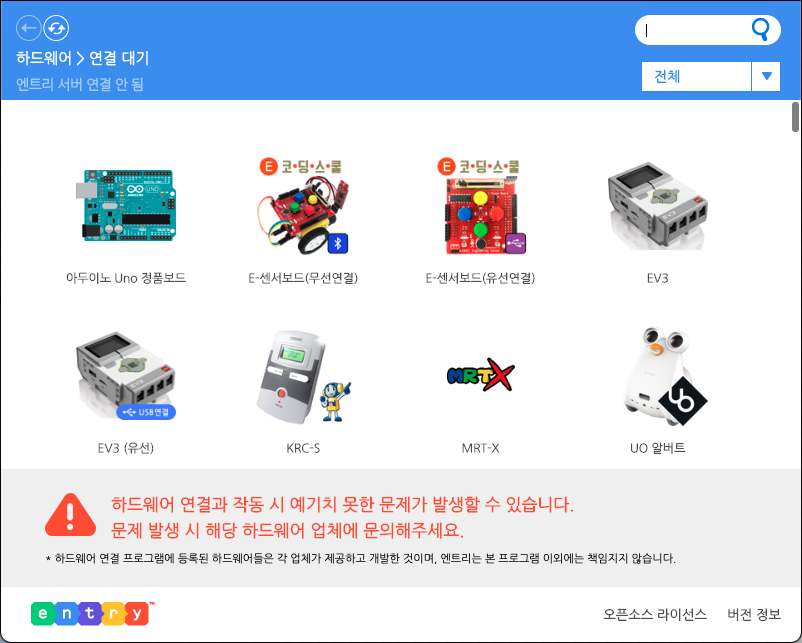
연결 대기', '엔트리 서버 연결 안 됨', 오른쪽 위 검색창, 아래 하드웨어 목록">
왼쪽 위 상태줄부터 봅니다그림은 연결 전: 연결 대기 · 엔트리 서버 연결 안 됨 연결되면 [하드웨어] 꾸러미에 라쿤봇 블록맨 위 '기본 자세로 돌아가기', 그 아래 관절 각도 블록
안 움직이면 이 창부터: 상태줄 · 라쿤 선택 · 로봇 LED 파랑
그림: 엔트리 공식 도움말 docs.playentry.org / 화면: 엔트리 작업 공간 캡처 2026-10-20
실습 중에 나오는 "로봇이 안 움직여요"는 절반이 연결 문제라 하드웨어 연결 프로그램 창을 먼저 봅니다. 창 위쪽 상태줄에 엔트리 서버 연결됨이 떠 있어야 합니다. 라쿤도 선택돼 있어야 하고요. 동글이 USB에 꽂혀 있고 로봇 상태 LED가 파랑이면 블루투스는 붙어 있는 겁니다. 제대로 연결됐다면 엔트리 [하드웨어] 꾸러미가 오른쪽 그림처럼 라쿤봇 블록으로 바뀌어 있습니다. 안 바뀌었다면 꾸러미의 [하드웨어 연결하기] 단추를 한 번 눌러 새로 고칩니다.
6교시 블록컴포저 시연이나 8교시 대조 실습(둘 다 선택)에서 블록컴포저로 넘어갈 때는 이 연결 프로그램을 먼저 종료해야 크롬이 동글을 잡습니다. 엔트리로 돌아올 때는 블록컴포저 탭을 닫고 연결 프로그램을 다시 엽니다. 8교시 미션 전에 연결을 다시 확인할 때도 이 장을 띄웁니다.
그림: img/entry/window_hardware-connect-main.png (docs.playentry.org/user/block_hardware.html, 연결 전 첫 화면. 위쪽 상태줄이 크게 보이도록 윗부분만 보임) · 화면: img/entry/shot_raccoon_palette_top_v2.png (entry_capture shots.json 3배, 라쿤 모듈 활성 상태, 윗부분만 보임 · 옛 shot_raccoon_palette_top.png를 바꿈). 검색 그림(window_hardware-connect-search.png)은 앞 장에서 씀. 꾸러미 단추 이름 [하드웨어 연결하기]·[연결 프로그램 열기]: 연결 전 엔트리 [하드웨어] 꾸러미(2026-10-20 확인).
2교시 · 실습 8분 · 엔트리
첫 코드: HOME으로 가서 "잘 했어요"
1 [하드웨어] 꾸러미에 라쿤봇 블록이 보이나요? 안 보이면 연결 프로그램 창부터(앞 장)
2 코드 ①: 시작 → 기본 자세 → 소리, 그리고 ▶ 시작하기 소리는 로봇 스피커에서 납니다
3 코드 ②: 로봇의 TEACH를 누르면 로봇이 "삐" 로봇 버튼이 엔트리의 입력이 됩니다
4 저장: 팀명_02 · 다음 실습도 같은 파일에
08:00 눌러서 시작 · 다시 누르면 멈춤 ↺ 버튼 → 엔트리 → 로봇 소리
생각할 점 TEACH 버튼 자리에 카메라가 들어가면 무엇이 달라질까요?
화면: 엔트리 작업 공간 캡처 2026-10-20 (라쿤봇 블록)
8분 드리겠습니다. 먼저 엔트리 블록 꾸러미 맨 아래 [하드웨어]를 눌러 라쿤봇 블록이 보이는지 확인합니다. 단추만 보이고 블록이 없으면 연결이 안 된 거라 앞 장의 연결 프로그램 창으로 돌아갑니다.
첫 코드는 블록 세 개로 짭니다. 「시작하기 버튼을 클릭했을 때」 아래에 「기본 자세로 돌아가기」와 「[잘 했어요] 소리 재생하기」를 붙인 다음 위의 시작하기를 누릅니다. 그러면 노트북 스피커 대신 로봇 몸에서 소리가 납니다. 엔트리에는 블록컴포저에 있던 zero·park 같은 자세 블록이 없고, 정해진 자세로 가는 블록은 「기본 자세로 돌아가기」(HOME) 하나입니다.
두 번째 코드는 로봇 버튼을 입력으로 쓰는데, 6교시부터는 이 버튼 자리에 카메라와 학습한 모델이 들어갑니다. 1교시에 본 피지컬컴퓨팅의 '센서 → 규칙 → 출력'을 지금은 손으로 한 번 돌려 보는 거죠. 「[티치] 버튼을 [클릭했을] 때」 아래 「[삐] 소리 재생하기」를 붙이고 로봇의 TEACH 버튼을 한 번 눌러 보세요. 누른 신호가 엔트리로 넘어가면 엔트리는 소리를 내라는 명령을 로봇에게 돌려보냅니다.
저장은 팀명_02로 하고, 다음 장의 관절 실습도 같은 파일에 이어서 짭니다.
교재 대응: 블록컴포저 교안 B01 미션 1-2(소리·관절 속도·버튼, B_035~044 = B01 인쇄 34~43쪽)를 엔트리 블록으로 바꿈. zero·park 프리셋 없음: 공식교안_분석 6절. 블록 문구: entryjs block_raccoon.js(playentry.org 작업 공간에서 확인 2026-10-20: raccoon_return_to_basic_pose, raccoon_play_sound 'GOOD_JOB'·'BEEP', raccoon_when_button_state 'TEACH'·'CLICKED'). 화면: img/entry/shot_script_first_v2.png · shot_script_teach_beep_v2.png(entry_capture shots_L2.json, 2_D6 준비 파일을 patch로 줄여 3배 캡처). 리허설 확인: ① PC 연결(코딩 모드) 중 TEACH를 눌러도 언플러그드 모드로 바뀌지 않고 엔트리 이벤트로만 가는지 ② 「기본 자세로 돌아가기」가 HOME에 닿기 전에 소리가 먼저 나는지.
2교시 · 실습 12분 · 엔트리
낮은 속도로 관절을 하나씩
1 기본 자세로 돌아가기 클릭으로 출발HOME = 0° · −10° · −140° · 60°
2 속도를 낮추고 관절을 하나씩 [1번째] 관절 속도를 (30) %로 정하기 → [1번째] 관절 각도를 (20) 만큼 바꾸고 기다리기
3 1~4번 관절 ±20°씩, 어느 관절이 어느 쪽으로 도는지 기록 그리퍼 [집기 (닫기)] 그리퍼 [놓기 (열기)]
4 범위를 넘는 값(1번 관절 150°)을 일부러 넣어 보기 "라쿤: 팔이 갈 수 없는 자세입니다" · 저장: 팀명_02
12:00 눌러서 시작 · 다시 누르면 멈춤 ↺ 속도 30%에서 시작, 실행 전 구호
생각할 점 1번 관절만 돌리면 손끝은 어떤 길을 그리나요?
12분 드리겠습니다. 연결이 아직 안 된 팀부터 돌겠습니다. 시작은 늘 「기본 자세로 돌아가기」를 클릭해서 HOME에 두는 것입니다.
속도는 30%로 시작하고 실행하기 전에 "손 떼세요" 구호를 외칩니다. 「[1번째] 관절 속도를 (30) %로 정하기」 다음에 「[1번째] 관절 각도를 (20) 만큼 바꾸고 기다리기」를 붙입니다. 속도 칸에는 −100~100까지 들어가지만 부호가 방향을 뜻하므로 오늘은 30 같은 양수만 씁니다. 1~4번 관절을 ±20°씩 움직이면서 어느 관절이 어느 쪽으로 도는지 활동지에 적고, 그리퍼 집기·놓기 블록도 눌러 봅니다.
3번 관절은 HOME이 −140°라서 −20°를 주면 −160°가 되어 범위(−150~0°) 밖으로 나갑니다. 마지막 단계에서는 일부러 범위를 넘는 값, 예를 들어 1번 관절 150°를 넣어 보세요. "라쿤: 팔이 갈 수 없는 자세입니다" 메시지가 뜨고 로봇은 그 블록을 건너뜁니다. 저장은 팀명_02.
생각할 점은 다음 교시 예고입니다. 1번 관절만 돌리면 손끝이 높이를 유지한 채 원을 그리는데 3교시 각도 퍼즐에서 이 움직임을 씁니다.
엔트리 '라쿤' 모듈은 2026-09 배포분. 연결 단계(옛 1단계)는 앞의 설치·연결·연결 확인 장으로 옮김. 연결이 불안하면 예비 세트, 그래도 안 되면 로봇 코딩 SW 2.2.1로 전환(USB). 블록 문구·안내 메시지는 entryjs block_raccoon.js 원문(사양표 md 5절). 관절 범위 J1 ±120° · J2 −90~30° · J3 −150~0° · J4 ±105°, 관절 속도 −100~100(부호 = 방향, 교안 B_097의 0~100은 오류).
2교시 · 값 읽기 3분
로봇이 지금 몇 도인지 엔트리가 읽습니다
값 블록을 「말하기」에 끼우고 계속 반복 → 무대의 엔트리봇이 지금 값을 말함
HOME에서 읽어 보기
1~4번째 관절 각도를 차례로 끼워 읽기
위치 x로 바꾸고 1번 관절 +20° → x·y는 바뀌고 z는 그대로
교안이 HOME에서 읽은 값 (블록컴포저 화면)
이 근처면 엔코더 정상
화면: 엔트리 작업 공간 캡처 2026-10-20 (화살표는 덱 표시) · 그림: 로보메이션 블록컴포저 교안 B02 인쇄 32쪽 (부분)
3분만 보겠습니다. [하드웨어] 꾸러미 아래쪽에 있는 둥근 블록이 값 블록입니다. 1~4번째 관절 각도는 관절마다 달린 엔코더가 잰 값을 보여 주고 위치 x·y·z는 그 각도로 계산해 낸 손끝 좌표를 cm 단위로 알려 줍니다. 값 블록 하나를 「말하기」 칸에 끼운 뒤 「계속 반복하기」로 감싸 두면 무대의 엔트리봇이 지금 값을 계속 말해 줍니다.
로봇을 HOME에 두고 1번부터 4번 관절 각도를 차례로 바꿔 끼워 읽어 보세요. 블록컴포저 교안에 실린 HOME 값은 0°, −10.459°, −137.9°, 56.514°입니다. 소수점 아래가 달라도 이 근처면 연결과 엔코더가 제대로 일하고 있습니다.
이번에는 말하기 칸에 위치 x를 끼우고 앞 장에서 만든 「[1번째] 관절 각도를 (20) 만큼 바꾸고 기다리기」를 눌러 봅니다. 몸통을 좌우로 돌리는 관절이 1번이라 x와 y는 바뀌어도 높이 z는 그대로입니다. 이 값 블록은 3교시 각도 퍼즐과 좌표 실습에서 자 노릇을 하게 됩니다.
블록컴포저는 '실시간 센서 값 확인하기'에서 그래프까지 그려 주는데 엔트리에는 그런 그래프 창이 없습니다. 그 대신 값 블록을 말하기 칸에 끼워 읽습니다.
화면: img/entry/shot_read_values_combo_v2.png = shot_raccoon_palette_values_v2.png(라쿤봇 꾸러미 값 블록 일곱, 위 구분선 잘라 냄) + shot_script_read_angle_v2.png(entry_capture shots_L2.json, 3배)를 흰 바탕에 나란히 놓고 사이 화살표를 그림. 그림: img/oc/B_089_encoder_values.png(블록컴포저 교안 B_089 = B02 인쇄 32쪽 오른쪽 '실시간 센서 값' 화면 그림에서 엔코더 값 부분만, 쪽 안 원본 그림 2배. 그래프·말풍선·마스코트 제외). 교재 대응: B02 로그·스코프(B_082~089 = B02 인쇄 25~32쪽)를 엔트리 값 블록 + 말하기로 바꿈(공식교안_분석 6절, 스코프 없음). 위치 블록 단위 cm, 위치 기준(손목·그리퍼)은 3교시. 엔트리 하드웨어 모니터(속성 패널 [하드웨어] 탭)에도 신호 세기·배터리·엔코더 1~4 값이 이름 없이 뜸(raccoon monitorTemplate). 리허설 확인: 연결 상태에서 HOME 값, 1번 관절 +20° 뒤 x 부호(J1 +는 왼쪽, X는 오른쪽이 +), 하드웨어 모니터 탭 표시.
묻기 · 칠판
연결에서 어디가 막혔나요?
① 동글 드라이버?
② 다른 프로그램이 동글을?
③ 연결 프로그램 버전?
④ 전원 · 상태 LED?
D 키 = 펜 · C 키 = 지우기 · 넘기기 전에 사진
모아 둘 것 막힌 칸에 표시하고, 푼 방법을 한 줄씩 적습니다. 8교시 미션 전 연결 점검에 다시 씁니다.
8교시 전에
연결하면서 막혔던 곳을 모으겠습니다. 동글 드라이버, 다른 프로그램이 동글을 잡고 있던 경우, 연결 프로그램 버전, 전원과 상태 LED 가운데 어디였는지 손을 들어 주세요. D 키로 펜을 켜서 그 칸 아래에 어떻게 풀었는지 한 줄씩 적습니다.
관절 네 개 가운데 가장 헷갈린 관절도 하나 꼽아 주세요. 3교시 각도 퍼즐에서 그 관절부터 0°와 + 방향을 다시 봅니다.
넘기기 전에 칠판을 사진으로 남겨 둡니다. 7교시 뒤 쉬는 시간에 8교시 미션을 위해 연결을 다시 점검할 때 이 목록을 그대로 씁니다.
칠판 칸: 동글 드라이버(entry-hw raccoon.json driver) · 동글 점유(블록컴포저 탭·로봇 코딩 SW) · 연결 프로그램 버전(1.9.78) · 전원·상태 LED 파랑(사양표 md 3절). 라이브 참여 없음(teach 묻기는 3교시로 옮김). 8교시 앞 휴식 장(옛 120장)의 연결 점검에 다시 씀.
휴식 10분
10:00 눌러서 시작 · 다시 누르면 멈춤 ↺
돌아오기 전에: A3 좌표 도면 위에 로봇 베이스를 원점에 맞춰 놓아 주세요
도면은 로보메이션 공식(1cm 격자, 원점 = 베이스 중심). X 오른쪽, Y 앞, Z 위.
10분 쉬겠습니다. 돌아오기 전에 책상 위 A3 도면에 로봇 베이스를 원점에 맞춰 놓아 주세요. 옮길 때는 베이스를 두 손으로 잡습니다.
도면: 로보메이션 공식 좌표 도면(1cm 격자, 원점 = 베이스 중심).
3
3교시 · 11:20~12:10
로봇팔 제어 체험
편성표: 다양한 방식으로 로봇팔 제어하기
① 손 티칭 13분 → ② 관절 각도 16분(좌표계 · 퍼즐 · 기구학) → ③ XYZ 좌표 12분 → 묻기 2분
손 → 각도
3교시에는 라쿤봇을 1교시 '로봇의 발달'에 나온 순서대로 움직여 봅니다. 맨 먼저 1961년 유니메이트처럼 사람이 손으로 자세를 잡아 가르칩니다. 이어서 1970년대 산업 로봇처럼 관절 각도를 숫자로 넣고, 끝으로 좌표만 건네면 각도 계산은 로봇이 알아서 합니다.
세 방식은 로봇에게 건네는 정보의 모양이 서로 다르죠. 그래도 무엇을 할지는 세 방식 모두 사람이 정합니다. 오늘 해 보면서 어느 쪽이 편했는지 기억해 두시기 바랍니다. 4교시에 같은 과제를 세 방식으로 해서 걸린 시간과 성공 횟수를 비교하니까요.
연수 편성표 3교시(11:20~12:10) '로봇팔 제어 체험 · 다양한 방식으로 로봇팔 제어하기'. 배분은 RESTRUCTURE_PLAN 1절 core 45분(여유 5분). 옛 61장 kicker 「3교시 · 11:20~12:10 · 로봇팔 제어 체험」을 이 장으로 옮김. 3·4교시 사이에는 공식 쉬는 시간이 없어 4교시 첫 10분이 휴식(N4-1).
3교시 · 오늘 쓰는 세 가지 방식
손으로, 각도로, 좌표로
① 손 티칭 & 플레이백산업 현장의 직접 교시(협동로봇)와 같은 방식
② 관절 각도펜던트로 축을 하나씩 움직이듯, 각도를 숫자로
③ XYZ 좌표화면에서 위치로 프로그래밍하듯, 좌표만 주기
손으로 자세 → TEACH 저장 → PLAY
주는 것 손으로 만든 자세
각도는 로봇이 그대로 기억
관절 각도를 1:( ) 2:( ) 3:( ) 4:( ) 도로 정하고 기다리기
주는 것 관절 각도 4개(°)
각도는 사람이 정함
위치를 x:( ) y:( ) z:( ) [cm] 로 정하고 기다리기
주는 것 좌표 3개(cm)
각도는 로봇이 계산(역기구학)
사진: 로보메이션 라쿤봇 언플러그드 교안 U02 인쇄 7쪽 (부분) · 블록 문구: 엔트리 라쿤 블록
3교시 지도입니다. 라쿤봇을 움직이는 방식은 세 가지입니다. ①은 로봇을 손으로 잡아 자세를 만들고 TEACH 버튼으로 저장한 뒤 PLAY로 재생합니다. ②는 엔트리 블록에 관절 네 개의 각도를 숫자로 넣고요. ③은 x, y, z 좌표만 넣어 주면 관절 각도는 로봇이 알아서 계산합니다. 셋의 차이는 아래 칸 '각도는' 줄을 보시면 한눈에 들어옵니다.
사진은 언플러그드 교재 2권이 소개하는 산업 현장의 가르치는 방법인데 라쿤봇 버튼 티칭은 이 가운데 어느 쪽에 속할까요? 현장에서는 둘을 통틀어 티칭, 우리말로 교시라 하고 리모컨(펜던트)으로 하면 펜던트 교시, 손으로 잡고 하면 직접 교시로 나눠 부릅니다. 교재는 리모컨으로 저장하는 것을 '티칭&플레이백', 손으로 잡고 가르치는 것을 '직접 가르치기'라고 합니다. 라쿤봇은 자세를 손으로 잡아 만드니 직접 교시 쪽이고 오늘은 이걸 '손 티칭'이라고 부르겠습니다.
펜던트로 축을 하나씩 움직여 자세를 잡는 일은 ② 관절 각도와 닮았고, 화면에서 위치와 경로를 짜는 일은 ③ 좌표와 닮았습니다. 4교시에 같은 과제를 세 방식으로 해 보고 비교합니다.
사진: 언플러그드 교안 U02 인쇄 7쪽(U_042) '로봇 팔에게 이렇게 동작을 가르쳐요'의 쪽 안 원본 사진 3장(초록 테두리만 다듬음) → img/oc/U_042_cobot.png · U_042_pendant.png · U_042_programming.png. 교안 순서는 티칭&플레이백(펜던트) · 직접 가르치기(협동로봇) · 프로그래밍이고, 화면은 오늘 순서에 맞춰 협동로봇 · 펜던트 · 프로그래밍으로 놓음. 용어: 교안 U_042 정의가 라쿤봇 손 티칭과 어긋남(공식교안_분석 E3) → 펜던트 교시/직접 교시로 정리. 블록 문구: 사양표 md 5절.
① 손 티칭 · 언플러그드
버튼으로 재생할 자세를 손으로 가르칩니다
시작(HOME) → 티칭 → 플레이백자세를 만들고 TEACH를 누르면 저장, PLAY를 누르면 순서대로 재생
도움 기능 · 자동 수평 / 자동 수직끈 상태에서 DELETE + POWER = 수평 · PLAY + POWER = 수직 → TEACH
오늘 미션: 블록 하나를 A에서 B로
그림: 로보메이션 라쿤봇 언플러그드 교안 U02 인쇄 16쪽 (부분) · U03 인쇄 18·19쪽 (부분)
라쿤봇은 산업용 로봇의 가장 오래된 가르치기 방식인 티칭 앤 플레이백을 PC 없이 버튼만으로 합니다. 초기 자세에서 관절을 손으로 움직여 자세를 만들고 TEACH를 누르면 그 자세가 저장되는데 최대 250개까지 됩니다. 저장한 자세는 PLAY를 누르면 순서대로 재생됩니다.
교재는 리모컨으로 저장하는 방식을 '티칭&플레이백'이라고 부릅니다. 산업 현장에서는 라쿤봇처럼 손으로 잡고 가르치면 직접 교시, 리모컨으로 가르치면 펜던트 교시라고 하는데 어느 쪽이든 저장해 둔 자세를 그대로 재생합니다.
오른쪽은 도움 기능입니다. 전원이 꺼진 상태에서 DELETE를 누른 채 POWER를 켜면 자동 수평, PLAY를 누른 채 켜면 자동 수직이 됩니다. 그다음 TEACH로 언플러그드 모드에 들어가면 손으로 팔을 옮기는 동안 4번 관절이 그리퍼를 바닥과 수평이나 수직으로 맞춰 줍니다. 위에서 블록을 집을 때는 자동 수직이 편한데 보정이 더딘 편이라 팔을 빨리 움직이면 늦게 따라옵니다.
교재 2권에는 A·B·C·D 네 지점의 원기둥을 한 곳으로 모으는 미션도 있어서 학교 수업의 확장 과제로 좋습니다. 오늘은 블록 하나를 A에서 B로 옮기는 것까지만 합니다.
그림: U_044(U02 인쇄 16쪽) 쪽 3배 렌더에서 '티칭 → 플레이백' 부분만 크롭(시작 칸·학생 그림·말풍선·설명 상자·'우와!' 제외) → img/oc/U_044_teach_playback.png. U_072·U_073(U03 인쇄 18·19쪽) 쪽 안 원본 사진 2장을 나란히(빨간 동그라미·버튼 그림·설명 문장 빼고 '자동 수평/자동 수직' 글자만 새로) → img/oc/U_072_073_auto_level_combo.png. 옛 그림 e-Book U02 p17·p30 쪽 통째는 뺌(원기둥 모아 놓기 미션은 U02 인쇄 29쪽, 노트로만). 자세 250개: U02 인쇄 17쪽. 자동 수평·수직: 사양표 md 2절, U03 인쇄 18~24쪽(보정 응답이 느림은 인쇄 20쪽). 리허설 확인: 자동 수평·수직일 때 LED 색(위키 '모드 LED 노랑' ↔ 교재 '상태·관절 LED 노랑', 교안 S2).
① 실습 10분 · 언플러그드
손으로 가르쳐 블록을 A에서 B로
1 POWER 클릭 → HOME → TEACH 클릭 (언플러그드 모드, 초록) 위에서 집으려면: 끈 상태에서 PLAY 누른 채 POWER = 자동 수직
2 집게 열린 채 블록 위로 → TEACH 클릭 (자세 저장)
3 내려가 TEACH 더블클릭(잡기) → 들어 올려 B 위 → 내려가 더블클릭(놓기)
4 PLAY 클릭 = 재생 성공한 최소 자세 수를 활동지 3에
버튼 클릭 더블클릭 길게 누르기 TEACH 자세 저장 저장 + 집게 열기/닫기 저장 + 누른 만큼 대기 PLAY 재생 · 다시 누르면 멈춤 무한 반복 내부 메모리에 저장 DELETE 최근 1개 삭제 — 전체 삭제
10:00 눌러서 시작 · 다시 누르면 멈춤 ↺ 생각할 점 몇 개의 자세로 성공했나요? 자세가 적을수록 좋은 경로일까요?
그림: 로보메이션 라쿤봇 언플러그드 교안 U01 인쇄 26쪽 (부분, 라벨 새로) · 버튼 표: U02 인쇄 17·18쪽과 공식 위키 '사용법'을 다시 씀
이제 로봇을 만져 보겠습니다. 언플러그드 모드일 때는 Smart Stop이 살아 있어서 어딘가에 부딪히면 로봇이 알아서 멈추지만 PC에 연결한 코딩 모드에서는 꺼지니 그때는 팔이 지나가는 길에 손을 두지 않습니다. 10분 드리겠습니다. POWER를 클릭하면 HOME으로 가고 TEACH를 클릭하면 언플러그드 모드로 바뀌면서 모드 LED와 조인트 LED에 초록불이 들어옵니다.
TEACH 버튼은 어떻게 누르느냐에 따라 하는 일이 달라집니다. 한 번 클릭하면 지금 자세를 저장하고 더블클릭하면 저장하면서 집게를 열거나 닫습니다. 길게 누르면 저장한 뒤 누른 시간만큼 기다립니다. PLAY는 클릭하면 1회 재생, 더블클릭하면 무한 반복. 재생은 언제나 HOME에서 출발해 HOME에서 끝납니다. PLAY를 길게 누르면 지금 동작이 로봇 안 메모리에 저장되는데 마지막 한 세트만 남습니다. DELETE는 클릭하면 최근 1개, 길게 누르면 전체를 지웁니다. 블록 옮기기는 집게를 연 채 블록 위로 가서 TEACH, 내려가서 더블클릭으로 잡고 들어 올려 B 위로 간 다음 내려가서 더블클릭으로 놓는 순서입니다. 수평으로 옮기기 전에는 꼭 들어 올리세요.
자세가 적을수록 좋은 경로인지는 4교시 비교와 5교시 경로 활동(선택)에서 다시 물을 테니 성공한 최소 자세 수를 활동지 3에 기록하세요.
그림: U_027(U01 인쇄 26쪽 '로봇 팔 자세 만들기') 쪽 3배 렌더에서 두 로봇 그림만 크롭. A~F 설명 상자·지시선·도전 배지·제목 띠 빼고 '초기 자세 / 손으로 바꾼 자세 / TEACH' 글자를 새로 씀 → img/oc/U_027_teach_pose.png(옛 e-Book U01 p27 쪽 통째 대신). 버튼 표: U02 인쇄 17·18쪽 입력 표 + 사양표 md 2절(PLAY 길게 = 내부 메모리 저장, 마지막 1세트). Smart Stop은 언플러그드 모드에서만(사양표 md 1절). 집게는 열린 상태에서 시작해 토글. 블록을 놓치는 팀은 집게를 더 아래로. 실패도 '로봇 문제'로 기록하게 해 8교시 실패 가르기 틀을 미리 익힘.
묻기 · 칠판
최소 몇 자세? 가장 헷갈린 관절은?
D 키 = 펜 · C 키 = 지우기 · L = 숫자 모으기
세 가지 손 ① 버튼 티칭은 끝. 이제 ② 관절 각도 블록, ③ 좌표 블록으로 갑니다.
각도로는 직선으로
최소 몇 자세로 옮기셨나요? L로 숫자를 모아 보겠습니다. 어느 관절이 가장 헷갈렸나요? 오늘 로봇은 버튼, 각도, 좌표, 이렇게 세 가지 손으로 움직입니다. 각도 블록으로 집게를 직선으로 움직이기가 왜 어려운지는 조금 뒤 ③ 좌표 블록을 만나면 알게 됩니다.
참여 벽(L): teach. 모은 숫자는 3교시 좌표 실습의 비교 기준으로 씁니다.
3교시 · 산업 현장에서는
협동로봇은 사람 손이 이끈다
작업자 바로 옆에서 일하는 협동로봇(Rethink Robotics Sawyer)
방금 한 손 티칭을 산업 현장에서는 '직접 교시'라고 부릅니다
사진: Worker with collaborative robot · Jeff Green / Rethink Robotics · CC BY 4.0 (Wikimedia Commons)
사진 속 공장에서는 협동로봇이 울타리 없이 작업자 바로 곁에 서 있습니다. 방금 라쿤봇에 해 본 손 티칭처럼 협동로봇은 지금도 사람이 팔을 손으로 잡고 움직여서 동작을 가르칩니다. 이런 방식을 핸드 가이딩, 우리말로 직접 교시라고 하는데 빠르고 직관적이라 현장에서도 아직 씁니다.
사람과 붙어서 일하는 로봇에는 따로 정해 둔 안전 규격이 있습니다. 협동로봇의 힘과 속도 제한, 신체 부위별 허용 압력은 ISO/TS 15066이 정하고, 산업용 로봇의 안전 요구사항은 ISO 10218이 다룹니다. 라쿤봇도 같은 생각으로 만들어져서 무게가 825g(그리퍼 제외)으로 가볍고 언플러그드 모드에서는 부딪힘을 느끼면 Smart Stop이 팔을 멈춥니다. PC에 연결한 코딩 모드에서는 Smart Stop이 꺼지니 그때는 팔 경로에 손을 두지 않습니다.
다만 손으로 가르친 동작은 그 로봇, 그 자리에서만 재현됩니다. 다른 로봇에 옮기거나 조건에 따라 다르게 움직이게 하려면 프로그램이, 그중에서도 좌표가 있어야 합니다. 이제 다음 질문으로 넘어가겠습니다.
사진: Worker with collaborative robot (Rethink Robotics) · Jeff Green / Rethink Robotics · CC BY 4.0 (Wikimedia Commons), img/rb_cobot_hand.jpg. 규격: ISO 10218-1/-2(산업용 로봇 안전), ISO/TS 15066(협동로봇). 사실 정정: 850g → 825g(그리퍼 제외, 사양표 md 1절), 「작은 힘으로 멈춘다」 → Smart Stop은 언플러그드 모드에서만. 1교시 #18(로봇 65년 ③ 협동로봇·직접 교시)과 겹쳐 확장으로 둠.
선택 체험 · 8분 · 3교시
사람 손으로 학습 데이터를 모읍니다
리더 팔사람이 손으로 움직인다
팔로워 팔그대로 따라온다 = 시범 데이터
리더 팔을 따라 움직인 팔로워의 동작을 시범 데이터로 기록 (ALOHA 방식)
사진: TheRobotStudio SO-ARM100 · Apache-2.0 · 도구: 강사 자체 제작 핸드트래킹 시뮬레이터 (GitHub 배포)
시간이 없으면 건너뛰거나 쉬는 시간 체험으로 안내합니다. 시간을 내려면 3교시 좌표 실습을 12분에서 10분으로 줄이면 됩니다.
버튼으로 자세를 저장하는 가르치기는 방금 해 보셨죠. 사람이 보여 준 시범을 모아 정책을 학습하는 방식도 있는데, 이걸 모방학습이라고 하고 2023년 스탠퍼드의 ALOHA가 대표적입니다. 사진 속 SO-101은 교육용으로 퍼지고 있는 값싼 로봇팔 한 쌍으로, 모터 힘을 뺀 왼쪽 리더 팔을 사람이 손으로 잡고 움직이면 오른쪽 팔로워 팔이 그 관절 각도를 그대로 따라 합니다. 블록을 리더로 옮기면 팔로워도 똑같이 옮기고, 그동안 관절값과 카메라 영상이 빠짐없이 시범 데이터로 쌓입니다. 이 방식을 교실에서도 해 볼 수 있을까요? SO-100·SO-101과 LeRobot 덕분에 교실 가격까지 내려왔습니다.
오늘은 리더 팔 대신 웹캠을 쓰니 리더 노릇은 여러분 손이 합니다. 다음 장 시뮬레이터에서 화면 속 가상 팔은 MediaPipe류로 추적한 손 관절을 따라 움직이고, 집게는 손 제스처로 여닫습니다.
버튼 티칭은 자세를 하나씩 찍어 저장하니 데이터라고 해 봐야 점 몇 개입니다. 리더-팔로워나 핸드트래킹은 시범이 끊기지 않고 이어져서 손이 지나간 궤적이 통째로 데이터가 됩니다. 라쿤봇은 250개를 저장하면 끝이지만 여기서는 시범을 거듭할수록 학습 데이터가 불어납니다.
말로 시키는 로봇으로는 구글의 Gemini Robotics 데모도 있습니다. 손 시범 대신 말로 시범을 대신하는 방향인데, 구글 로그인이 필요해 오늘 열지는 않고 관심 있는 분께 주소만 드립니다.
사진: SO-101 리더/팔로워 팔 · TheRobotStudio SO-ARM100 · Apache-2.0 (img/shot_so101_leader.webp · shot_so101_follower.webp). 도구: 강사 자체 제작 핸드트래킹 로봇팔 시뮬레이터(GitHub Pages 배포, 강사 GitHub 저장소 주소를 넣을 것). 참고: ALOHA (Zhao et al., Stanford, 2023), SO-100/SO-101 (LeRobot, Hugging Face), Gemini Robotics (Google DeepMind).
선택 체험 · 8분 · 2인 1조
블록 옮기는 시범을 세 번 보여 주세요
1 링크 열고 웹캠 허용
2 손을 들어 팔이 따라오는지 확인
3 집게 열고 닫기 (제스처)
4 블록을 옮기는 시범 3회 반복
5 "이 3번이 학습 데이터가 된다" 기록 활동지 3 아래 칸
강사 GitHub 배포 주소 (확인 중)
열기 ↗
08:00 눌러서 시작 · 다시 누르면 멈춤 ↺ 시범 3번 = 데이터 3개
생각할 점 시범은 10번과 1,000번 사이 어디쯤이면 충분할까요?
시간이 없으면 건너뛰거나 쉬는 시간 체험으로 안내합니다. 앞 장 설명을 2분 안에 끝내면 체험 6분이 나옵니다. 시뮬레이터 주소는 아직 공개 전이라 화면의 주소 카드를 숨겨 두었습니다.
8분 동안 짝과 함께 합니다. 링크를 열고 웹캠 사용을 허용한 다음 손을 들어 팔이 따라오는지 확인합니다. 집게를 제스처로 열고 닫아 본 뒤에는 블록을 집어 옮기는 시범을 세 번 되풀이합니다. 손 높이, 속도, 경로는 세 번 모두 조금씩 달라지는데 그 세 번이 학습 데이터가 됩니다. 기록은 활동지 3 아래 칸에.
시범 10번이면 충분할까요, 1,000번이 필요할까요? ALOHA 계열은 과제당 50번 안팎의 시범으로 시작했고 범용 정책을 만들 때는 수십만 번을 모읍니다. 6교시에 티처블머신으로 클래스마다 사진을 모을 때도 이 질문과 마주치고 7교시 조건 비교 실험도 여기서 이어집니다. 데이터가 적으면 시범한 상황에서만 되고 블록 위치를 바꾸면 안 될 수 있습니다.
돌면서 웹캠 권한을 거부한 PC가 보이면 주소창 자물쇠에서 허용해 줍니다. 손이 화면 밖으로 나가면 추적이 끊기니 팔꿈치를 책상에 대고 합니다. 조명이 어두우면 손 인식이 흔들립니다.
도구: 강사 자체 제작 핸드트래킹 로봇팔 시뮬레이터(저장소 비공개 · Pages 없음, 2026-10-21 확인. URL 카드는 hidden으로 숨김 — 공개하면 hidden을 지우고 URL·열기 링크를 넣고 선택으로 올림). 참고: ALOHA (Stanford, 2023), LeRobot SO-100/SO-101 (Hugging Face).
선택 · ① 손 티칭을 코드로
손으로 만든 자세가 각도 숫자로 남습니다
1 시작하면 [모든] 관절 전원 끄기 → 손으로 자세 만들기 힘이 빠진 팔이 처지니 한 손으로 받친 채
2 로봇의 TEACH 클릭 → 네 관절 각도가 리스트 관절1~4에 무대에 리스트를 보이면 숫자가 쌓이는 게 보입니다
3 PLAY 클릭 → 리스트 순서대로 재생 (아래 블록) 숫자로 남았으니 다른 라쿤봇 · 다른 작품에 그대로
TEACH를 누를 때마다 각도 4개를 기록
PLAY를 누르면 기록한 각도를 차례로 다시 냄
블록 화면: 엔트리(playentry.org) 라쿤 블록으로 강사 조립 · 리스트 관절1~4, 변수 순서
시간이 남는 팀, 또는 ② 관절 각도로 넘어가기 전 다리로 씁니다. 버튼 티칭과 같은 일을 엔트리로 해 봅니다. 시작하기를 누르면 모든 관절 전원을 끕니다. 모터가 힘을 놓으니 손으로 팔을 움직일 수 있는데, 팔이 처지니 한 손으로 받쳐 주세요.
자세를 만들고 로봇의 TEACH 버튼을 누르면 1번째부터 4번째 관절 각도가 리스트 관절1부터 관절4에 하나씩 쌓입니다. 무대에 리스트를 보이게 해 두면 숫자가 쌓이는 모습이 그대로 보입니다. PLAY 버튼을 누르면 '순서'를 1부터 하나씩 늘리며 리스트에 적힌 각도대로 관절을 움직입니다.
버튼 티칭으로 만든 자세는 로봇 안에만 남지만 코드로 짜면 각도 숫자로 기록이 남아 다른 라쿤봇이나 다른 작품에도 옮겨 쓸 수 있습니다. 4교시 비교표 '다른 로봇에 옮기기' 줄에 들어갈 답 하나를 여기서 얻습니다. 블록컴포저 교재 2권 미션 2-2-9 '관절 각도 저장하기'에서는 각도를 숫자로 남기는 이 일을 encoder 배열 하나로 해결합니다.
블록 화면: img/entry/shot_l3_handteach_rec_v2.png · shot_l3_handteach_play_v2.png(_빌드도구/entry_capture/shots_L3.json, 조립 파일 entry_capture/L3_손티칭_엔트리.ent). 블록 이름: entryjs block_raccoon.js(사양표 md 5절). 교재 대응: 블록컴포저 교안 B02 인쇄 46쪽 미션 2-2-9(encoder에 현재 관절 각도 저장하기). 리허설 확인: ① 코딩 모드에서 「[모든] 관절 전원 끄기」 뒤 손으로 움직여도 되는지(감속기에 무리 없는지) ② 전원을 끈 동안에도 「1번째 관절 각도」(엔코더)가 바뀐 값을 읽는지 ③ 「관절 각도를 … 도로 정하고 기다리기」에서 관절 전원이 다시 켜지는지 ④ 코딩 모드에서 로봇의 TEACH·PLAY 버튼이 엔트리 이벤트로만 쓰이는지(로봇 자체 저장·재생과 겹치지 않는지). 하나라도 안 되면 이 장은 확장으로 내림(new_slides.md N3-3).
② 관절 각도
0°는 어디, +는 어느 쪽?
J1 · 몸통 돌리기−120° ~ +120° 0° = 정면 · + = 왼쪽(위에서 보아 반시계)
J2 · 어깨−90° ~ +30° 0° = 위팔이 똑바로 위 · − = 앞으로 숙임
J3 · 팔꿈치−150° ~ 0° 0° = 위팔과 일직선 · − = 앞으로 접힘
J4 · 손목 꺾기(위아래)−105° ~ +105° 0° = 아래팔과 일직선 · + = 위로
관절 각도를 1:(0) 2:(-30) 3:(-110) 4:(50) 도로 정하고 기다리기
실행 전에 팔 모양을 먼저 손으로!
HOME = 1:0 · 2:−10 · 3:−140 · 4:60
그림: 로보메이션 라쿤봇 언플러그드 교안 U01 인쇄 20~23쪽 (부분, 라벨 키움)
② 관절 각도로 넘어갑니다. 블록에 각도를 넣기 전에 관절마다 0°가 어디이고 플러스가 어느 쪽인지 먼저 맞춰 볼까요? 1번 관절은 위에서 볼 때 정면이 0°이고 왼쪽으로 돌리면 플러스입니다. 2번은 위팔이 똑바로 섰을 때가 0°이고 앞으로 숙이면 마이너스, 뒤로는 30°까지만 갑니다. 3번은 아래팔이 위팔과 일직선일 때가 0°이고 앞으로 접을수록 마이너스입니다. 4번은 손목을 위아래로 꺾는 관절로, 아래팔과 일직선이 0°, 위로 꺾으면 플러스입니다.
기본 자세 HOME은 1번 0°, 2번 −10°, 3번 −140°, 4번 60°입니다. 아래 예시 블록은 퍼즐 첫 문제와 같은 값이니, 실행하기 전에 팔이 어떤 모양이 될지 먼저 손으로 흉내 내 보시기 바랍니다. 범위를 넘는 값을 넣으면 엔트리에 '팔이 갈 수 없는 자세입니다' 메시지가 뜨고 그 블록을 건너뜁니다.
교재 1권 관절 표에는 4번 관절이 '손목을 돌리는 동작'으로 적혀 있는데, 실제로는 위아래로 꺾는 관절입니다. 학생 활동지에 그 표를 쓰실 때 고쳐 주세요.
그림: 언플러그드 교안 U01 인쇄 20~23쪽(U_021~U_024) 오른쪽 범위 그림을 쪽 3배 렌더에서 크롭. 빨간 체크·손 그림 조각·아래 설명 문장을 빼고, 파란 라벨(0도·±방향·범위)을 맑은 고딕 굵게로 크게 다시 씀('도' → '°', +120°처럼 부호 붙임) → img/oc/U_021_j1_range.png · U_022_j2_range.png · U_023_j3_range.png · U_024_j4_range.png. 범위: 사양표 md 1절(교재·위키·엔트리 JOINT_LIMITS 같음). HOME [0, −10, −140, 60]: 블록컴포저 교안 B_047. J4 피치: 교안 U_019 '돌리기'는 오류(공식교안_분석 S1). 메시지 문구: 사양표 md 5절. 리허설 확인: 2~4번 관절의 + 방향을 실물로(교안 그림 기준으로 적음).
3교시 · 좌표계
각도 다음은 위치로 말하기
베이스 좌표계위에서 · 옆에서 · 비스듬히 · 원점은 베이스 바닥 중심
몸으로 외우기X 양팔 좌우 · Y 앞뒤 · Z 위아래
X 오른쪽 · Y 앞 · Z 위, 원점은 베이스
그림: 로보메이션 라쿤봇 언플러그드 교안 U06 인쇄 16쪽 (부분) · 블록컴포저 교안 B04 인쇄 25쪽 (부분)
퍼즐을 풀기 전에 위치를 말하는 방법부터 맞춥니다. 왼쪽 그림은 교재의 베이스 좌표계인데 위에서 내려다볼 때 X는 오른쪽, Y는 앞, Z는 위를 가리킵니다. 원점은 베이스 바닥 중심이고 작업 영역은 사양표 표기로 반경 240°(베이스가 좌우 120°씩 도는 범위), 거리 295mm입니다. 외울 때는 오른쪽처럼 몸을 쓰면 쉽습니다. 양팔을 벌린 쪽이 X, 앞으로 뻗은 쪽이 Y, 위로 든 쪽이 Z. A3 좌표 도면은 책상 위에 깔아 쓰는데, 책상 높이가 z 0이고 단위는 cm입니다.
지금 집게가 어디 있는지는 읽기 블록 세 개로 확인합니다. 위치 x (cm) 위치 y (cm) 위치 z (cm) . 기준점을 손목으로 할지 그리퍼 끝으로 할지는 위치 기준을 [그리퍼] (으)로 정하기 로 정합니다. 같은 좌표를 줘도 기준이 다르면 닿는 지점이 달라지니 처음에 한 번 정해 두세요. 먼저 HOME의 좌표부터 읽어 보시기 바랍니다.
그림: U_124(언플러그드 교안 U06 인쇄 16쪽 '베이스 좌표계') 세 방향 그림을 쪽 3배 렌더에서 크롭(제목 띠·설명 문장 제외) → img/oc/U_124_base_coord.png. B_210(블록컴포저 교안 B04 인쇄 25쪽 미션 4-1-1) 오른쪽 몸 비유 그림을 크롭(말풍선·마스코트 제외) → img/oc/B_210_xyz_body.png. 옛 그림(위키 탑뷰·도면 실습 사진)은 교안 그림으로 바꿈. 축 방향 검증: U_124 = B_211(공식교안_분석 4절). 작업 영역: 공식 위키 로봇 사양. 도면: robomation.net 라쿤봇 XYZ 좌표 도면(A3).
② 실습 · 퍼즐 10분
각도 네 개를 주면 손끝은 어느 칸에?
1 강사가 각도 4개를 부르면 손끝이 올 칸을 도면에 먼저 찍습니다 예측 → 실측 → 오차(cm) 기록 · 2문제
2 실행: 관절 각도를 1:(0) 2:(-30) 3:(-110) 4:(50) 도로 정하고 기다리기 위치 블록 세 개로 확인
3 1번 관절만 ±30° 돌리며 손끝이 그리는 길을 봅니다 원호입니다
4 심화: 명령 각도와 1번째 관절 각도 (엔코더) 비교 시간이 남는 팀 · 교육용 로봇의 오차는 얼마나?
A3 좌표 도면 · 칸 1cm · 원점 = 베이스 중심
10:00 눌러서 시작 · 다시 누르면 멈춤 ↺ 생각할 점 각도 → 위치는 답이 하나로 정해지고 관절 공간의 직선은 작업 공간에서 곡선입니다.
그림: 로보메이션 라쿤봇 XYZ 좌표 도면(A3) (부분, 눈금 숫자 새로)
제가 각도 네 개를 부르면 손끝이 도면 어느 칸에 올지 팀이 먼저 찍고, 블록을 실행해 확인합니다. 확인은 위치 블록 세 개로 하고 예측과 실측과 오차를 cm로 기록합니다. 10분 동안 두 문제를 풉니다.
그 다음 1번 관절만 플러스 마이너스 30도로 돌려 손끝 궤적을 보세요. 원호가 그려집니다. 관절 공간에서는 직선으로 움직여도 작업 공간에서는 곡선을 그리니 각도만 가지고는 손끝을 곧게 옮기기 어렵습니다. 각도에서 위치를 구하는 계산은 정기구학이라고 합니다. 팔 길이에 cos과 sin을 곱해 더하면 되니 답이 늘 하나이고, 그림은 두 장 뒤에 나옵니다.
시간이 남는 팀은 명령 각도와 엔코더가 읽은 실제 각도를 비교해 보세요. 교육용 로봇의 오차가 얼마나 되는지, 백래시가 어디서 생기는지 재어 보는 활동입니다.
그림: 라쿤봇 XYZ 좌표 도면(A3, 공식교안_통합본 X_001) 가운데를 벡터 3배 렌더에서 크롭, 가장자리 눈금 숫자가 잘려 5cm마다 숫자를 새로 씀 → img/oc/X_001_xyz_drawing.png(옛 e-Book U01 p19 쪽 통째 대신). 삼각함수 풀이 유인물: 강사 자체 유인물(링크 길이는 공식 위키 로봇 사양 치수). 문제는 15분 3문제 → 10분 2문제로 줄임. 심화 팀에는 명령 각도와 엔코더 값의 차이로 백래시·오차를 재게 함.
3교시 · 좌표계
기구학 파라미터
베이스 → 관절 2: 82.5 · 관절 2 → 3: 100 · 관절 3 → 4: 100 · 관절 4 → 말단: 80 (mm)
이 숫자들이 공식 안의 상수입니다
그림: 로보메이션 공식 위키 '로봇 사양' 치수
각도에서 위치를 계산하려면 팔의 길이를 알아야 합니다. 공식 위키 치수 도면을 보면 베이스 원점에서 관절 2 원점까지 높이 82.5mm, 관절 2에서 3까지 위팔 100mm, 관절 3에서 4까지 아래팔 100mm, 관절 4에서 말단 장치 중심까지 80mm입니다. 관절 4에서 말단장치 장착부까지 27.5mm, 말단 높이 차 6mm도 있고, 베이스는 118 곱하기 93mm이며 관절 1 축이 버튼 쪽 가장자리에서 72.5mm 자리에 있습니다.
라쿤봇은 링크 길이가 공식 안의 상수이고 좌표 블록이 그 값을 갖고 있으니 우리는 cm 단위 좌표만 넣으면 됩니다. 로봇 공학에서는 이런 값을 기구학 파라미터라고 부르는데 산업용 로봇은 DH 파라미터라는 표로 정리합니다. 길이와 각도가 어떻게 위치로 바뀌는지는 다음 장 그림에 있습니다.
그림: 로보메이션 공식 위키 '로봇 사양' 치수 도면(wiki_02_로봇사양_06). 치수 수치는 그림의 mm 표기 그대로. 도면 숫자가 작아(10px) 심화용 선택 장.
3교시 · 좌표계
정기구학과 역기구학
책상 z = 0
팔꿈치 아래 · 다른 해
0°
θ₂
θ₃
(x, z)
x
z
각도
θ₂, θ₃
위치
(x, z)
정기구학
역기구학
각도 → 위치
길이 × cos·sin의 합 · 답은 하나
위치 → 각도
답이 둘(팔꿈치 위·아래)이거나 없음
답이 없으면
'갈 수 없는 자세' 메시지
로봇은 위치 → 각도를 매번 풀고 있습니다
조금 전 퍼즐은 각도를 보고 손끝 위치를 맞히는 문제였죠. 그림은 옆에서 본 라쿤봇을 2링크 팔로 나타냈고 어깨 관절을 θ₂, 팔꿈치 관절을 θ₃, 손끝 위치를 (x, z)로 둡니다. 그림의 θ₂는 수평에서 재는 교과서식 각도라서, 위팔이 똑바로 선 것을 0°로 두는 라쿤봇 2번 관절 값과는 기준이 다릅니다. 각도에서 위치로 가는 이 계산을 정기구학이라고 하는데 x는 위팔 길이에 cos θ₂를, 아래팔 길이에 cos(θ₂+θ₃)를 곱해 더한 값이고 z는 cos 대신 sin을 넣어 얻습니다. 해가 둘 이상 나오는 일은 없습니다. 각도가 정해지면 손끝 위치는 언제나 하나로 떨어지니까요.
위치를 주고 거꾸로 각도를 구하는 역기구학은 arccos를 풀어야 하는데요. 회색 점선처럼 같은 점에 닿는 해가 팔꿈치를 올린 쪽과 내린 쪽, 두 가지일 수 있습니다. 이런 경우를 다중해라고 하고 목표 점이 팔 길이보다 멀거나 책상 아래에 있으면 해가 없습니다. 좌표 블록에서 '갈 수 없는 자세' 메시지가 뜨는 건 이렇게 해가 없을 때입니다. 라쿤봇은 4축이라 손목 자세까지 정해 주면 해가 더 줄어들거든요.
라쿤봇의 좌표 블록은 숫자 세 개를 받을 때마다 이 역기구학을 풀어 네 관절 각도를 만들어 냅니다. 우리는 원리만 이해하면 되고 계산은 컴퓨터가 합니다. 삼각함수 풀이가 궁금한 분께는 유인물을 드립니다.
그림: 발표자 제작 SVG(2링크 평면 팔 모형, 수치 없음). 삼각함수 풀이 유인물: 강사 자체 유인물. 링크 길이: 공식 위키 로봇 사양 치수. 1교시 #36 노트의 '역기구학은 3교시 퍼즐 뒤' 순서와 맞춤(퍼즐 #65 → 이 장).
3교시 · 좌표계
학생은 이 격자에서 시작합니다
X · Y · Z와 높이원기둥 하나 높이 2cm로 z를 어림
위치 주소 만들기색 원기둥이 놓인 칸의 x · y 읽기
오늘 우리 실습도 읽기 → 계획 → 옮기기 순서로 갑니다
그림: 로보메이션 라쿤봇 언플러그드 교안 U06 인쇄 21쪽 · 26쪽 (부분)
학생 교재는 이 좌표계를 이렇게 다룹니다. 왼쪽은 언플러그드 6권의 X, Y, Z 그림으로, 원기둥 하나 높이가 2cm라는 점을 써서 z를 어림하게 합니다. 오른쪽 위치 주소 만들기 활동지에는 cm 단위 눈금이 x −15에서 20까지 있습니다. 학생은 색깔 원기둥이 놓인 칸의 x, y를 읽어 주소 카드에 적은 다음 친구 것과 맞춰 봅니다.
오늘 우리도 교재처럼 읽고 계획하고 옮기는 순서로 갑니다. 교재는 좌표를 읽은 뒤에도 티칭으로 옮기게 하는데 우리는 좌표 블록으로 곧장 보냅니다. 조금 뒤 좌표 실습에서는 이 활동지를 교사용으로 고쳐 검사대와 바구니 좌표를 찾아 적습니다.
그림: U_127(언플러그드 교안 U06 인쇄 21쪽 'X, Y, Z 좌표') 오른쪽 로봇·원기둥·자 부분을 쪽 3배 렌더에서 크롭(도전 배지·힌트 캐릭터·생각 풍선 제외) → img/oc/U_127_xyz_cylinder.png. U_132(U06 인쇄 26쪽 '위치 주소 만들기') 격자 활동지 부분 크롭(주소 카드 칸·설명 문장 제외) → img/oc/U_132_grid_address.png. 옛 e-Book U06 p28·p24 쪽 통째 대신. 저작: 김혜주, 로보메이션.
선택 · ③ 좌표 실습 전에
손목 기준과 그리퍼 기준 사이 약 8cm
기준점 두 개손목 = 4번 관절 중심 · 그리퍼 = 집게 가운데
도달 범위 (cm) 손목 기준 그리퍼 기준 x −20 ~ 20 −28 ~ 28 y −10 ~ 20 −18 ~ 28 z −2 ~ 28 −10 ~ 28
교재의 도달 범위B04 29쪽 값 · z가 음수면 책상 아래
같은 x · y · z라도 기준이 바뀌면 손끝이 약 8cm 달라집니다
그림: 로보메이션 라쿤봇 블록컴포저 교안 B04 인쇄 28쪽 (부분) · 표: B04 인쇄 29쪽을 다시 씀
좌표 실습 전에 하나만 짚고 가겠습니다. 좌표 블록이 움직이는 기준점은 둘 중 하나인데 손목 기준은 4번 관절의 중심이고 그리퍼 기준은 집게 가운데입니다. 두 점이 약 8cm 떨어져 있으니 같은 좌표를 줘도 손끝이 닿는 곳은 기준에 따라 8cm쯤 달라집니다. 어느 쪽으로 할지는 엔트리의 위치 기준을 [손목/그리퍼] (으)로 정하기 블록으로 고릅니다.
다음 실습에서 '왜 블록 위에서 멈추지?'라는 질문이 나오면 대개 손목 기준으로 집게 높이를 맞춘 경우입니다. 오늘은 처음에 그리퍼 기준으로 정해 두고 끝까지 바꾸지 않습니다.
오른쪽 표는 교재에 적힌 도달 범위입니다. 그리퍼 기준은 손목 기준에 8cm씩 더한 값인데, y 최소 −18cm는 실제 팔 구조로 따져 보면 약 −14cm라 의심스럽습니다. 화면에 물음표를 달아 두었고 리허설 때 재어 보고 고칠 예정입니다. z가 0보다 작은 칸은 책상 아래라서 로봇을 책상 가장자리에 두지 않는 한 쓸 일이 없습니다.
그림: B_213(블록컴포저 교안 B04 인쇄 28쪽 미션 4-1-3) 오른쪽 '그리퍼 중심 · 약 8cm · 손목 기준' 그림을 쪽 3배 렌더에서 크롭(예시 좌표 글·확성기·격자 그림 제외) → img/oc/B_213_wrist_gripper_8cm.png. 표: B_214(B04 인쇄 29쪽 '라쿤봇의 XYZ 좌표 범위')를 HTML 표로. 리허설 확인: 그리퍼 기준 y 최소(교재 −18, 계산 약 −14, 공식교안_분석 S4), 손목 기준 z 최소(교재 −2, 옛 덱 User_Guide 0). 블록 문구: 사양표 md 5절.
③ 실습 12분
좌표만 주면 로봇이 각도를 계산합니다
1 위치 기준을 [그리퍼] (으)로 정하기 → 위치를 x:(5) y:(15) z:(3) [cm] 로 정하고 기다리기 도면의 지정 칸 3곳을 연속으로
2 검사대 · A · B의 좌표 6개를 찾아 기록 (접근 위치와 집기/놓기 위치) 활동지 4 좌표 기록표
3 한 축만: 위치 [x] 를 (2) [cm] 만큼 바꾸고 기다리기 로 미세 조정 갈 수 없는 좌표는 건너뛰고 메시지
4 7분이 지나도 못 찾으면 강사용 좌표표를 받습니다 좌표 탐색보다 방식 비교가 목적
그리퍼 기준 도달 범위(교재, cm)
12:00 눌러서 시작 · 다시 누르면 멈춤 ↺ 수평으로 가기 전에 z부터!
생각할 점 위치 → 각도는 사람이 풀기 어렵습니다(삼각함수). 블록 안에 들어 있습니다.
이제 좌표 블록을 씁니다. 숫자 세 개만 주면 로봇이 네 관절 각도를 계산합니다. 먼저 위치 기준을 그리퍼로 정하고, 도면의 지정 칸 3곳을 연속으로 찍어 보세요. 그 다음 검사대, A 바구니, B 바구니의 좌표를 찾아 기록합니다. 접근 위치와 집기 또는 놓기 위치를 합쳐 6개를 활동지 4 좌표 기록표에 적습니다. 4교시 비교, 5교시 함수, 8교시 미션에서 이 좌표를 그대로 씁니다. 시간은 12분 드리겠습니다.
수평으로 가기 전에 z부터 올리세요. 안 그러면 바구니를 칩니다. 한 축만 조금씩 바꾸는 블록으로 미세 조정하고, 갈 수 없는 좌표가 나오면 로봇이 건너뛰고 메시지를 띄웁니다. 역기구학 그림에서 본, 해가 없는 경우입니다. 7분이 지나도 못 찾는 팀은 강사용 좌표표를 받습니다. 좌표를 찾는 것보다 방식을 비교하는 게 목적이니까요.
좌표 범위는 블록컴포저 교재 4권 기준으로 그리퍼 기준 x −28에서 28, y −18에서 28, z −10에서 28cm이고, 손목 기준은 x −20에서 20, y −10에서 20, z −2에서 28cm입니다. 그리퍼 기준 y 최소 −18은 계산상 약 −14라 의심스러워 화면에 물음표를 달았습니다. 같은 좌표라도 기준이 다르면 닿는 지점이 다릅니다.
좌표 범위: 블록컴포저 교안 B04 인쇄 29쪽 'XYZ 도달 범위'(B_214, 손목·그리퍼 기준). 옛 덱의 손목 기준 z 0~28은 User_Guide Raccoon4 문서 값(교재는 −2~28). 리허설 확인: 그리퍼 기준 y 최소(교재 −18 ↔ 계산 약 −14, 공식교안_분석 S4). 18분 → 12분, 지정 칸 5곳 → 3곳(RESTRUCTURE_PLAN 1절).
묻기
컵을 잡을 때, 사람은 팔꿈치 각도를 생각하나요?
D 키 = 펜 · L = 투표
컵의 위치를 볼 뿐
산업 로봇의 제어기도 사람이 준 작업 공간 좌표를 받아 역기구학으로 관절 각도를 풉니다. 오후에는 좌표 블록만으로 로봇을 움직입니다.
컵을 잡을 때 사람은 무엇을 생각하나요? L 키로 투표를 엽니다. 우리 눈은 컵이 놓인 자리만 확인하고 각도 계산은 몸이 알아서 하죠. 산업 로봇도 마찬가지로 사람이 작업 공간 좌표를 넘기면 관절 공간의 각도는 제어기가 역기구학으로 풀어냅니다. 협동로봇과 안전 규격 이야기는 1교시 '로봇 65년'에서 나눴습니다. 오후에는 로봇을 움직일 때 좌표 블록만 씁니다.
4교시에는 같은 과제를 손 티칭, 관절 각도, 좌표로 한 번씩 해 보고 비교합니다. 그때 이 질문의 답을 숫자로 확인하게 됩니다.
투표 결과는 라이브 보드(data-live="ik")에 기록. 경로 미션(종이컵 사이로, 자세 수 기록)은 5교시 선택 N5-4로 옮김. 규격(ISO 10218, ISO/TS 15066)은 1교시 #18 노트.
휴식 10분 · 4교시 안에서
10:00 눌러서 시작 · 다시 누르면 멈춤 ↺
돌아오기 전에: 원기둥 블록 · 검사대 · A·B 바구니를 도면 제자리에 · 3교시 좌표 기록표(활동지 4) 꺼내기
4교시(12:10~13:10)는 3교시에 바로 이어지고, 이 10분도 4교시 60분에 들어 있습니다. 쉬고 나면 50분 · 끝나면 점심. 라쿤봇은 충전 케이블을 꽂아 두세요.
3교시가 끝났습니다. 4교시는 12시 10분에 쉬는 시간 없이 바로 이어지는데, 4교시 60분 가운데 처음 10분을 쉬는 시간으로 쓰겠습니다. 돌아오기 전에 원기둥 블록과 검사대, A·B 바구니 스티커를 도면 위 제자리에 놓아 주세요. 3교시에 적은 좌표 기록표(활동지 4)도 꺼내 둡니다. 4교시 ③ XYZ 좌표 방식에서 그 숫자를 그대로 씁니다.
쉬는 동안 라쿤봇에 충전 케이블을 꽂아 둡니다. 배터리가 50분쯤 가니 오전 내내 썼다면 지금 채워 두는 편이 안전합니다. 쉬고 나면 남은 50분 동안 같은 과제를 세 가지 방식으로 해 보고, 끝나면 바로 점심입니다.
공식 시간표: 3교시 11:20~12:10, 4교시 12:10~13:10(60분, 3·4교시 사이 쉬는 시간 없음) → 4교시 처음 10분을 휴식으로(포니봇 덱과 같은 운영, new_slides.md N4-1). 배터리 약 50분·충전 5V 3A(사양표 md 1절).
4
4교시 · 12:10–13:10 · 60분(휴식 10분 포함)
같은 원기둥, 세 가지 손
편성표: 제어 방식 비교 미션
휴식 10 → 미션 소개 3 → 세 방식 수행 30(① 손 티칭 8 · ② 관절 각도 11 · ③ XYZ 좌표 11)
실패도 기록합니다
4교시입니다. 방금 쉰 10분도 4교시 60분에 포함되니 남은 50분이 끝나면 바로 점심입니다. 4교시에는 새 블록을 배우지 않고 3교시에 하나씩 익힌 손 티칭, 관절 각도, XYZ 좌표로 같은 원기둥 하나를 검사대에서 A로 옮기며 셋을 견주어 봅니다.
방식마다 첫 성공까지 걸린 시간과 3회 중 성공 수, 동작 단계 수를 적습니다. 관절 각도 방식에서 11분이 넘으면 거기서 멈추고 왜 오래 걸렸는지를 적어 주세요. 발표 때는 그런 기록이 가장 쓸모 있습니다. 동작을 함수로 묶는 일은 5교시에 합니다.
연수 편성표(2026-11-28) 4교시 12:10~13:10 '제어 방식 비교 미션'(60분, 휴식 10분 포함). 배분(분): 휴식 10 · 표지와 미션 소개 3 · 수행 30(손 티칭 8 · 관절 각도 11 · XYZ 좌표 11) · 발표·투표 10 · 오전 정리 2 · 여유 5 = 60(RESTRUCTURE_PLAN 1절 core 10+44). 옛 배분 「수행 17분, 발표 8분, 나만의 블록 25분」에서 나만의 블록(함수 3개)은 5교시로 옮김. 공식 교안 대응: 언플러그드 U02 '원기둥 모아 놓기·위치 바꾸기·배달'(인쇄 29~33쪽), U07 '단계 다이어트·S자 경로'(인쇄 4~24쪽), 블록컴포저 B02 미션 2-3(그리퍼·원기둥 옮기기, 인쇄 47~53쪽), B04 미션 4-2(함수·좌표로 옮기기, 인쇄 36~47쪽), B04 인쇄 26쪽(각도 저장 방식의 한계 → XYZ).
미션 · 같은 과제, 세 가지 손
원기둥 하나를 검사대에서 A로, 세 번 옮깁니다
① 손 티칭잡고 움직여 TEACH · 언플러그드 U02 원기둥 위치 바꾸기
② 관절 각도네 관절 각도를 숫자로 · 블록컴포저 B02 미션 2-3-4
③ XYZ 좌표목표의 x · y · z(cm) · 블록컴포저 B04 미션 4-2-3
원기둥과 자리는 고정하고 손을 바꿔 가며 잽니다
방식마다 첫 성공까지 시간 · 3회 중 성공 수 · 동작 단계 수 기록 · 1명 조작, 1명 기록, 방식마다 교대 · 순서는 ① → ② → ③
그림: 로보메이션 라쿤봇 언플러그드 교안 U02 인쇄 30쪽 (부분) · 블록컴포저 교안 B02 인쇄 52쪽 (부분) · 블록컴포저 교안 B04 인쇄 42쪽 (부분)
미션은 원기둥 블록 하나를 검사대에서 A로 옮기는 것 하나뿐이고 원기둥도 자리도 그대로 둔 채 손만 바꿔 가며 합니다. ① 손 티칭은 언플러그드 모드에서 팔을 잡아 자세를 만든 뒤 TEACH로 저장하고 PLAY로 재생합니다. ② 관절 각도는 엔트리 「관절 각도를 1:() 2:() 3:() 4:() 도로 정하고 기다리기」에 숫자 네 개를 넣어 자세를 만들고, ③ XYZ 좌표는 「위치를 x:() y:() z:() [cm] 로 정하고 기다리기」에 3교시 좌표 기록표의 숫자를 넣습니다. ②와 ③에서 집고 놓는 일은 「그리퍼 [집기 (닫기)]」와 「그리퍼 [놓기 (열기)]」가 맡습니다.
세 그림은 공식 교재에 실린 같은 원기둥 과제를 세 방식으로 나눠 푼 것인데 맨 왼쪽 언플러그드 2권은 손 티칭으로 원기둥 자리를 바꾸는 미션입니다. 가운데 블록컴포저 2권 미션 2-3-4에서는 미리 저장한 관절 각도를 불러 그 자세로 옮기고 오른쪽 블록컴포저 4권 미션 4-2-3에서는 좌표 격자 위 원기둥을 목표 핀까지 보냅니다. 이걸 오늘은 한 시간 안에 나란히 해 봅니다. 교재대로라면 몇 주에 걸쳐 따로따로 하는 활동이거든요. 블록컴포저 4권 예시 코드를 열어 보면 우리 과제와 순서가 똑같고 좌표 숫자만 다릅니다. 그리퍼 기준으로 (−10, 20, 10) 위에서 출발해 (−10, 20, 2)까지 내려가 집고, 다시 올라가 (10, 20, 10)을 거친 다음 (10, 20, 2.5)에 내려놓습니다.
팀에서 한 명이 조작하고 한 명이 시간과 결과를 적은 뒤 방식마다 역할을 바꿉니다. 순서는 ①부터 권합니다. 손 티칭은 엔트리 연결 없이 언플러그드 모드에서 하고, ②부터 엔트리에 연결합니다.
그림(정밀 크롭, 설명 글·캐릭터·제목 띠·지시선 지움): img/oc/U_057_cylinder_swap_topview.png = 언플러그드 교안 U02 인쇄 30쪽 '원기둥 위치 바꾸기 STEP 1'(통합본 U_057)의 활동지 2-3-1과 라쿤봇(활동지 안 작은 안내 글 지움) / img/oc/B_109_cylinder_move_topview.png = 블록컴포저 교안 B02 인쇄 52쪽 미션 2-3-4 '위에서 본 모습'(B_109, 라벨 글 지움) / img/oc/B_227_xyz_grid_targets.png = 블록컴포저 교안 B04 인쇄 42쪽 미션 4-2-3 공통 좌표 격자(B_227). 옛 그림 e-Book B03 p53 쪽 통째(B03_p53_목표지점으로옮기기.png, 감사 75)는 뺌. 좌표 예시: B04 인쇄 39쪽 미션 4-2-2 예시(B_225). 블록 문구: 엔트리 라쿤 블록(사양표 md 5절). 리허설 확인: 엔트리에 연결된 상태(모드 LED 파랑)에서 TEACH를 눌러 언플러그드 모드로 바로 넘어가는지, 연결 프로그램을 닫거나 POWER로 다시 켜야 하는지.
4교시 미션 · 수행 30분 (손 티칭 8 · 관절 각도 11 · XYZ 좌표 11)
비교표를 채우세요
① 손 티칭 ② 관절 각도 ③ XYZ 좌표 첫 성공까지 시간 ? ? ? 3회 중 성공 수 ? ? ? 동작 단계 수 ? ? ? 다른 로봇에 옮기기 ? ? ? 조건에 따라 다르게 ? ? ? 학생 수업에서 쓸 단계 ? ? ?
집기 → 올리기 → 옮기기 → 내리기 → 놓기교재 U07 '단계 다이어트' · 가운데 컵은 장애물
30:00 눌러서 시작 · 다시 누르면 멈춤 ↺ 노란 줄은 오후에 답이 바뀝니다. 지금은 비워 두세요.
그림: 로보메이션 라쿤봇 언플러그드 교안 U07 인쇄 19쪽 (부분)
이 비교표는 활동지 5와 같은 항목에 '동작 단계 수' 한 줄을 더한 것입니다. 활동지에 없는 줄은 표 아래 여백에 적어 주세요. 팀에서 한 명이 조작하고 한 명이 시간과 결과를 적으며, 방식마다 역할을 바꿉니다. 시간은 30분으로 손 티칭 8분, 관절 각도 11분, XYZ 좌표 11분입니다. 관절 각도에서 11분이 넘으면 멈추고 왜 오래 걸렸는지를 적으세요.
어느 방식으로 하든 동작은 오른쪽 그림처럼 원기둥을 집어 수직으로 올리고 수평으로 옮긴 다음 수직으로 내려서 놓는 다섯 단계로 짭니다. 언플러그드 교재 7권 '단계 다이어트'는 이 다섯 단계를 출발점 삼아 단계를 줄여 보는 활동입니다. '동작 단계 수' 칸에는 손 티칭이면 저장한 자세 수를, 블록 방식이면 동작 블록 수를 적습니다. 단계를 줄이다 올리는 단계를 빼면 바구니 턱에 걸리니 그 점부터 확인하세요.
관절 각도 방식에서 막히면 블록컴포저 교재 2권의 예시 숫자를 출발점으로 삼아도 됩니다. 교재에 나온 값은 집는 자세 [0, −62, −115, 85], 놓는 자세 [−64, −10, −140, 59]입니다. 우리 도면과는 검사대 자리가 달라 그대로 넣으면 맞지 않으니 조금씩 고쳐 가야 하고 그렇게 고치느라 쓴 시간이 표 첫 줄에 고스란히 남습니다. 「그리퍼 [집기 (닫기)]」 다음에는 1초쯤 기다려 줘야 원기둥을 쥔 채 올라갑니다.
노란 줄 '조건에 따라 다르게 움직일 수 있는가'는 지금 세 방식 모두 아니오일 텐데 오후에는 답이 바뀝니다. 언플러그드 7권에 나오는 S자 경로 활동이 5교시 경로 활동(선택)으로 이어지는데 빨리 끝난 팀은 그 활동대로 A와 검사대 사이에 종이컵을 세워 두고 같은 과제를 다시 해 보세요.
항목: 활동지 5 비교표(준비 시간·성공 수·이식성·조건 분기·학생 수업 단계) + '동작 단계 수'(U07 단계 다이어트, 활동지에는 없음). 그림: img/oc/U_149_path_up_over_down.png = 언플러그드 교안 U07 인쇄 19쪽 '단계 다이어트 STEP 1'의 그림 ①(통합본 U_149, 그림 번호·아래 안내 글 지움). 다섯 단계 문구는 같은 쪽 '보기'. S자 경로: U07 인쇄 23쪽(U_153). 관절 각도 예시: 블록컴포저 교안 B02 인쇄 53쪽 미션 2-3-4 예시 코드의 encoder 배열(B_110). 그리퍼 대기: B02 인쇄 49쪽 '집기 시간을 조절해 봐'(B_106). 시간 17분 → 30분(RESTRUCTURE_PLAN 1절). 깨짐 수정(감사 73): 머리글은 왼쪽, ?는 가운데 정렬이라 머리글이 칸보다 120~170px 왼쪽에 보이던 것 → 열 너비 고정(table-layout:fixed) + 머리글·칸 모두 가운데·세로 가운데.
발표·투표 10분
학생 첫 수업은 어느 방식으로? 산업 로봇은 왜 좌표로?
두세 팀 발표 · L = 투표
손 티칭으로 시작해
협동로봇은 지금도 사람이 손으로 가르칩니다(직접 교시). 빠르고 직관적이니까요. 옮겨 쓰거나 조건에 따라 바꿀 때는 프로그램을 씁니다.
교재(B04)가 좌표로 넘어가는 이유: 각도를 저장해 옮기면 관절마다 얼마나 돌릴지 학생이 스스로 판단하기 어렵다.
글: 로보메이션 라쿤봇 블록컴포저 교안 B04 인쇄 26쪽 '자세히 보기' (요약)
두세 팀 발표를 듣고 L 키로 투표합니다. 학생 첫 수업은 어느 방식으로 하시겠어요? 산업 로봇은 왜 좌표로 움직일까요? 첫 수업은 손 티칭, 원리 수업은 관절 각도, 미션 수업은 좌표 같은 결론이 나오면 좋은데, 선생님들이 스스로 내리도록 둡니다.
세 방식 사이에 따로 정답은 없고 쓰임새가 다를 뿐입니다. 산업용 협동로봇을 가르칠 때도 아직 손을 씁니다. 빠르고 직관적이니까요. 하지만 다른 로봇에 옮겨 쓰거나 조건에 따라 다르게 움직이게 할 때는 프로그램을 씁니다. 블록컴포저 교재 4권도 좌표로 넘어가는 까닭을 짚어 둡니다. 관절 각도를 저장해 옮기는 앞 활동 방식으로는 원하는 곳까지 각 관절을 얼마나 돌려야 할지 학생이 스스로 판단하기 어려우니 XYZ 좌표로 좌우·앞뒤·위아래를 말하게 한다는 거죠. 비교표에서 관절 각도 방식이 가장 오래 걸렸다면 여러분도 바로 그 판단에서 시간을 쓴 겁니다.
투표: 라이브 보드(data-live="cmp3"), 선택지 이름을 오늘 부르는 이름(손 티칭·관절 각도·XYZ 좌표)으로 맞춤. 인용: 블록컴포저 교안 B04 인쇄 26쪽 '자세히 보기 · XYZ 좌표로 이동하기'(통합본 B_211, 글 전용 쪽이라 쪽 그림 대신 요약 문장으로). 발표 8 → 10분(RESTRUCTURE_PLAN 1절).
선택 · ④ 사람이 실시간 조종 · 10분
키보드로 조종해 원기둥 옮기기
1 [오른쪽 화살표] 키를 눌렀을 때 → 위치 [x] 를 (1) [cm] 만큼 바꾸고 기다리기 왼쪽 화살표는 (−1)
2 위쪽·아래쪽 화살표 = 위치 [y] ±1 · W·S = 위치 [z] ±1 같은 블록을 복사해 축과 부호만 바꾸기
3 스페이스 = 그리퍼 [집기 (닫기)] · 엔터 = 그리퍼 [놓기 (열기)]
4 검사대 원기둥을 A로, 걸린 시간을 비교표 여백 ④ 칸에 교재 B02: 숫자 키 + W·S = 관절 속도 ±40, ↑ 집기 · ↓ 놓기
보이는 대로 손으로 고칩니다
생각할 점 원기둥 자리가 바뀌어도 옮겼다면,
그림: 로보메이션 라쿤봇 블록컴포저 교안 B02 인쇄 54쪽 (부분)
시간이 남는 팀이 해 보는 네 번째 방식입니다. 로봇에게 할 일을 미리 적어 주지 않고 사람이 로봇을 지켜보면서 키보드로 한 칸씩 움직입니다. 오른쪽 화살표 한 번에 집게가 x 방향으로 1cm 가고 왼쪽 화살표는 그 반대로 갑니다. y는 위아래 화살표로, z는 W와 S로 1cm씩 바꾸고, 스페이스로 집고 엔터로 놓습니다.
막상 해 보면 생각보다 금방 끝나고 원기둥이 다른 데 놓여도 사람이 보고 바로 맞춰 줍니다. 검사대의 원기둥을 A로 옮기는 데 걸린 시간은 비교표 여백 ④ 칸에 적어 두세요. 노란 줄 '조건에 따라 다르게' 칸에는 '예'를 써도 될까요? 자리를 보고 판단한 건 키보드를 누른 사람이었죠. 오후에는 그 판단을 모델 쪽으로 넘겨 보겠습니다.
블록컴포저 교재 2권은 관절 방식으로 실시간 조종을 합니다. 숫자 키와 W·S를 함께 눌러 관절 하나의 속도를 ±40으로 정하고, 위쪽 화살표로 집고 아래쪽 화살표로 놓습니다. 오늘은 3교시 좌표 블록에 이어 좌표로 조종합니다.
그림: img/oc/B_111_keyboard_control.png = 블록컴포저 교안 B02 인쇄 54쪽 미션 2-3-5 STEP 1(통합본 B_111)의 라쿤봇·원기둥·키보드 그림만(오른쪽 키 조합 상자·말풍선·캐릭터·제목 띠 뺌). 교재 방식: B02 인쇄 55~60쪽(B_112~B_117) 숫자 키+W/S = 관절 속도 ±40, 위쪽 화살표 집기 · 아래쪽 화살표 놓기. 엔트리 블록: 시작 「( ) 키를 눌렀을 때」, 라쿤 「위치 [x▾] 를 () [cm▾] 만큼 바꾸고 기다리기」「그리퍼 [집기 (닫기)▾ / 놓기 (열기)]」(사양표 md 5절). 옛 76장 4단계(화살표 = 위치 x 1cm, 스페이스 = 그리퍼 토글)를 떼어 온 장. 토글은 변수가 필요해 스페이스·엔터 두 키로 나눔. 리허설 확인: 키를 빠르게 여러 번 누를 때 '기다리기' 블록이 겹쳐 실행되는지, 엔트리 키 목록의 '엔터' 표기.
선택 체험 · 15분 · 네 번째 손, 학습
팔 하나에 머리 세 가지(직접 · 공식 · 학습)
sim2browser · Reach 탭, 아래 툴바가 YOU · ENGINEERED · LEARNED
파란 점을 끌면 팔이 따라온다
YOU = 관절 직접 (Pose joints)
ENGINEERED = 역기구학 공식 (DLS)
LEARNED = 강화학습 정책 (PPO)
ⓘ = 만든 사람이 적어 둔 수치
방금 쓴 좌표 블록 = ENGINEERED
화면: 강사 캡처 2026-10-17 (툴바 확대 2026-10-21) · 도구: rotvie · sim2browser
시간이 없으면 건너뛰거나 점심시간 체험으로 안내합니다. 4교시 안에서 하려면 여유 5분에 발표·투표를 5분 줄여 10분을 만들고, 이 장 설명은 짧게 한 뒤 다음 장 체험으로 바로 갑니다.
좌표만 넣으면 각도는 로봇이 계산한다는 걸 방금 보셨는데 이번엔 그 계산을 세 가지 머리로 견주어 보겠습니다. 화면에서 파란 목표점을 끌면 팔이 따라오고 아래쪽 툴바에 Reach와 Grasp 탭, 그리고 제어 방식 버튼이 놓여 있습니다. YOU는 3교시 관절 각도 블록처럼 직접 움직이는 방식으로, Reach에서는 Pose joints로 관절을 하나하나 돌리고 Grasp에서는 By hand로 목표점을 끌어다 G 키로 집게를 잡습니다. ENGINEERED는 공식 쪽으로, 방금 쓴 좌표 블록 속에서 돌아가는 것과 같은 계열인 DLS 역기구학입니다. LEARNED는 PPO 강화학습으로 7천만 스텝을 연습한 학습 정책.
ⓘ 버튼을 누르면 만든 사람이 적어 둔 성공률과 저크, 즉 덜컥거림 수치가 나옵니다. 숫자 공개는 다음 장으로 미루고 지금은 손 감각으로 먼저 느끼게 합니다. 주황 큐브를 집는 Grasp에서 판단은 학습에 맡겼고 집는 순서는 사람이 짰는데 오늘 오후 우리 작품도 이 틀로 만듭니다. Policy view를 켜면 AI 머릿속 중간값 128개가 화면에 뜨지만 사람은 그 숫자를 읽어 내지 못합니다.
화면: 강사 캡처 2026-10-17 (img/shot_sim2browser.png). 도구: sim2browser (rotvie, rotvie.github.io/sim2browser · Grasp 바로 열기는 주소 끝 ?task=grasp). 수치: 제작자 ⓘ 표기(DLS 역기구학, PPO 7천만 스텝, Policy view 128차원). 마우스 권장, 터치패드 비추천. 4교시 선택: 제어 방식 비교의 네 번째 칸(학습).
선택 체험 · 15분 · 2인 1조
공식과 학습을 같은 다섯 자리로 비교하세요
1 링크 열고 Reach 탭
2 파란 목표점을 끌어 팔 움직이기
3 ENGINEERED ↔ LEARNED 바꿔 같은 다섯 자리로 비교표: 빠른 쪽? 부드러운 쪽? 실패한 쪽?
4 ⓘ 눌러 수치 확인
5 Grasp 탭 자동 집기 → YOU(By hand) + G 키로 직접 바로 열기: 주소 끝 ?task=grasp · 마우스 권장
rotvie.github.io/sim2browser
열기 ↗
15:00 눌러서 시작 · 다시 누르면 멈춤 ↺ 마지막엔 직접 집기, 안 돼도 됩니다
생각할 점 빠르기 · 부드러움 · 실패에서 공식과 학습은 어떻게 갈렸나요?
시간이 없으면 건너뛰거나 쉬는 시간 체험으로 안내합니다. 앞 장 설명을 3분 안에 끝내면 체험 12분이 나옵니다.
15분 드리겠습니다. 링크를 열면 먼저 Reach 탭에서 파란 목표점을 끌어 팔이 따라오는지 봅니다. 그다음엔 ENGINEERED와 LEARNED를 번갈아 골라 가까운 곳, 먼 곳, 높은 곳, 낮은 곳, 팔 뒤쪽, 같은 다섯 자리로 보내 봅니다. 비교표의 빠른 쪽, 부드러운 쪽, 실패한 쪽 세 칸을 다 채웠으면 ⓘ를 눌러 만든 사람의 수치를 확인하고요. 끝으로 Grasp 탭에서는 자동 집기를 구경한 뒤 YOU의 By hand로 바꾸고 목표점을 끌어 G 키로 직접 집어 봅니다. 직접 집기까지 해 보는 게 목표인데, 안 돼도 됩니다. 안 된 결과도 오늘 쓸 데이터니까요.
공이 안 끌린다는 분께는 공을 정확히 클릭한 채 드래그하도록 안내합니다. 빈 곳을 끌면 화면이 회전하는데 터치패드로는 이 구분이 어려우니 마우스를 권합니다. 팔이 꼬이면 Reset. Grasp 탭이 안 보이면 주소 끝에 ?task=grasp를 붙여 바로 엽니다. 팔 뒤쪽 같은 닿기 어려운 자리에서 두 방식의 차이가 가장 잘 보입니다.
사전 테스트에서 목표 도달은 0.3~0.4초면 끝났습니다. 자동 집기는 100회 중 100회 성공했고 직접 집기가 7회 중 6회였으니 학생도 충분히 해낼 만한 난이도입니다. 화면의 질문에는 다음 장에서 숫자로 답하니 손으로 먼저 느끼고 숫자는 그 뒤에 보는 순서를 지킵니다.
도구: sim2browser (rotvie, GitHub Pages, ?task=grasp로 Grasp 바로 열기). 사전 테스트 2026-10-17: 도착 0.3~0.4초 · 자동 집기 100/100 · 직접 집기 6/7. 비교표는 활동지 여백에 세 칸(빠른 쪽·부드러운 쪽·실패한 쪽). 마우스 권장.
선택 체험 · 정답 공개
만든 사람이 적어 둔 수치입니다
100% ENGINEERED · 성공률 역기구학 공식 (DLS)
95% LEARNED · 성공률 PPO 강화학습 · 7천만 스텝
0.7배 LEARNED · 저크(덜컥거림) 공식보다 30% 부드럽다
AI가 무조건 낫지 않습니다. 공식은 이 팔·이 상황에만 맞습니다. 환경이 바뀌어도 학습은 다시 연습시키면 됩니다.
오후엔 좌표(공식) 위에 판단(학습) 얹기
시간이 없으면 앞 장과 함께 건너뜁니다. 체험을 했다면 이 장은 2분이면 됩니다.
이제 답을 맞춰 보겠습니다. 성공률은 공식 100%, 학습 95%입니다. 저크, 즉 덜컥거림은 학습이 0.7배, 그러니까 30% 더 부드럽습니다. 여러분 비교표와 맞춰 보세요. 빠른 쪽과 부드러운 쪽은 대개 학습, 실패한 쪽도 학습이었을 겁니다.
전날 제가 직접 재 보니 학습 쪽 목표 도달률은 94.7%라 제작자가 밝힌 95%와 들어맞았습니다. 목표에 닿기까지는 0.3~0.4초가 걸렸습니다. 위치 오차는 공식 0.2cm, 학습 0.5~0.8cm. 정확도로는 공식이 한 수 위지만 학습은 조금 빗나가는 대신 움직임이 매끄럽습니다. 집기는 자동이 100회 중 100회, 직접이 7회 중 6회 성공했습니다. 라쿤봇 조인트 정밀도가 0.044°라는 걸 떠올려 보세요. 이 두 오차 숫자를 나란히 놓고 보면 좌표 블록을 믿어도 되는 까닭과 그 위에 학습을 얹을 때 각오할 부분이 함께 보입니다.
AI라고 무조건 나은 건 아니죠. 이 팔, 이 상황에서라면 공식이 100%지만 팔 길이가 달라지거나 장애물이 놓이는 순간 공식을 새로 써야 합니다. 학습은 95%에 그치는 대신 새 환경에서 다시 연습시키면 됩니다. 1교시 분류 기준 세 번째로 따져 보면 공식은 코드를 고치고 학습은 데이터를 고칩니다.
손 티칭, 관절 각도, XYZ 좌표를 방금 채웠으니 그 옆 네 번째 칸에 학습을 붙여 보세요. 이 칸이 붙으면 노란 줄 '조건에 따라 다르게'에 로봇 스스로 '예'를 쓸 자리가 납니다. 오후에 우리가 만들 작품도 아래에는 좌표(공식)로 움직이는 팔을 두고 그 위에 판단(학습)을 얹습니다. 팔은 공식이 옮기고, 어디로 옮길지는 모델이 정합니다.
수치 출처: sim2browser 제작자 ⓘ 표기(rotvie, rotvie.github.io/sim2browser). ENGINEERED = DLS(Damped Least Squares) 역기구학, LEARNED = PPO 강화학습 7천만 스텝. 저크 0.7배 = 공식 대비 30% 부드러움. 강사 사전 테스트 2026-10-17: 목표 도달률 94.7% · 도착 0.3~0.4초 · 위치 오차 공식 0.2cm vs 학습 0.5~0.8cm · 자동 집기 100/100 · 직접 집기 6/7. 조인트 정밀도 0.0440°(사양표 md 1절).
오전 정리
로봇은 사람이 정한 대로 움직였습니다.손에서 각도를 거쳐 좌표까지.
비교표 노란 줄(조건에 따라 다르게)은 8교시에 답이 바뀝니다. 오후는 연속동작 → 신경망 학습 → 학습 결과 개선 → 학습 로봇 미션.
판단은 아직 사람이
오전을 정리해 보겠습니다. 비교표 노란 줄 '조건에 따라 다르게 움직일 수 있는가'는 왜 지금 모두 아니오일까요? 손 티칭에서는 사람이 팔을 잡고 자세를 정했고 관절 각도와 XYZ 좌표에서도 사람이 각각 각도와 위치를 정했습니다. 셋 다 무엇을 어디로 옮길지는 사람이 미리 정해 두었기 때문입니다.
오후 시간은 이 줄을 채우는 데 씁니다. 5교시엔 집기와 옮기기를 연속동작으로 엮어 함수 이름을 달아 두고 6교시엔 엔트리로 모델을 학습시킨 뒤 7교시에 학습 조건을 바꿔 가며 결과를 비교하는데요. 정작 노란 줄의 답은 8교시가 돼서야 바뀝니다. 그때 모델이 정상과 불량을 가르고 로봇이 오전에 찾은 좌표로 옮깁니다.
점심 전에 라쿤봇 충전 케이블을 꽂고 엔트리 작품을 팀명_04로 저장해 주세요.
자료 없음(핵심 문장 장, new_slides.md N4-2). 오후 흐름: 편성표 5~8교시. 제목 머리 '오전 정리'는 O 목록에서 4교시로 묶임(build.py groupOf).
점심 · 13:10~14:10
60:00 눌러서 시작 · 다시 누르면 멈춤 ↺
가기 전에: 충전 케이블 연결 · 엔트리 작품 팀명_04로 저장 · 검사대와 바구니는 그대로
5V 3A 충전기만, 고속 충전기 금지. 14:10 5교시 연속동작 만들기로 시작합니다.
점심 드시러 가기 전에 라쿤봇에 충전 케이블을 꽂고, 엔트리 작품을 팀명_04로 저장해 주세요. 검사대와 A·B 바구니는 도면 위에 그대로 둡니다. 오전에 찾은 좌표를 오후에도 쓰니, 자리가 바뀌면 다시 재야 합니다.
충전기는 5V 3A만 쓰고 고속 충전기는 쓰지 않습니다. 13시 10분부터 한 시간이고, 14시 10분에 5교시 연속동작 만들기로 시작합니다.
충전 사양: 로보메이션 공식 위키 '사용법' 충전 안내(5V 3A). 저장 이름 팀명_04·검사대 그대로(RESTRUCTURE_PLAN 2절). 옛 문구 '웹캠을 검사대 위에 고정'은 5교시 뒤 휴식 장(#100)으로 옮김.
5
5교시 · 14:10~15:00
연속동작 만들기자세를 이어 붙이면 자동화가 됩니다
편성표: 연속동작 설계 및 실행
자동화 라인 2분 → 설계표 3분 → 함수로 묶기 2분 → 함수 3개 실습 20분
설계 → 함수
5교시에는 연속동작을 만듭니다. 3교시 손 티칭 때 버튼으로 자세를 하나씩 저장해 재생한 것도 연속동작이었는데 이번에는 엔트리 블록으로 같은 일을 합니다. 설계표에 자세를 순서대로 적는 데서 시작해 되풀이되는 묶음을 함수 블록 세 개로 만들고 다섯 번 반복시켜 봅니다. 속도와 대기 시간을 바꾸다 실패한 단계가 나오면 설계표로 돌아가 고칩니다.
마지막에는 불량 블록을 검사대에 올려 봅니다. 로봇이 그 블록을 어디로 보내는지는 모두 함께 지켜봅니다. 쌓기와 경로 활동은 빨리 끝난 팀을 위한 선택 과제입니다.
오후 첫 실습이라 안전부터 다시 짚습니다. PC에 연결한 코딩 모드에서는 Smart Stop이 꺼져서 팔이 부딪혀도 멈추지 않습니다. 실행 버튼을 누르기 전에 "손 떼세요"를 외치고, 팔이 지나가는 길에 손을 두지 않습니다.
연수 편성표(2026-11-28) 5교시 14:10~15:00 '연속동작 만들기 · 연속동작 설계 및 실행'. 배분은 RESTRUCTURE_PLAN 1절 core 42분(#78 1 · #79 1.5 · N5-1 3 · N5-2 1.5 · #76 20 · #83 0.5 · #81 12 · #82 0.5 · #84 2), 여유 8분. 옛 그림 e-Book B08 p26 쪽 통째(공식자료/ebook/preview/B08_p26_스마트팩토리.png)는 뺌. 교시 표지 형식(큰 숫자 · 시각 · 편성표 교육내용 · 흐름)은 다른 교시와 맞춤. 그 자리에 쓰려던 U05 '규칙을 따르는 로봇 팔' 그림(U_104)은 쌓기 장(N5-3)으로. 옛 노트의 컨베이어 공급 문장은 삭제(컨베이어는 확장 장 #80). Smart Stop은 언플러그드 모드에서만(사양표 md 1절).
스마트 팩토리
자동화 라인
물류센터 · 선반을 나르는 로봇Amazon fulfilment centre drive unit
자동차 공장 · 용접하는 로봇팔BMW Werk Leipzig
자동화 라인에서는 판단 없이 같은 동작만 반복
사진: Auledas · CC BY 4.0 / BMW Werk Leipzig · CC BY-SA 2.0 de (Wikimedia Commons)
물류센터에서 선반을 통째로 들어 옮기는 왼쪽 로봇도, 자동차 공장에서 차체를 용접하는 오른쪽 로봇팔들도 온종일 같은 자리에서 같은 동작을 되풀이하는 자동화입니다. 이 로봇들에게는 판단이 없죠. 집는 곳도 놓는 곳도 정해져 있어서 불량이 오든 정상이 오든 똑같이 움직입니다.
오후에는 여기에 인지와 판단을 더합니다. 오늘 오전 티칭으로 만든 것도 이런 자동화였으니까요. 그 전에 판단 없는 자동화부터 블록으로 완성해 그 한계를 눈으로 확인합니다.
사진: Amazon fulfilment centre drive unit robot · Auledas · CC BY 4.0 (Wikimedia Commons) / BMW Leipzig MEDIA 050719 Download Karosseriebau max (BMW 3시리즈 차체 점용접, KUKA 로봇) · BMW Werk Leipzig · CC BY-SA 2.0 de (Wikimedia Commons).
설계 3분 · 연속동작 설계표
자세를 순서대로 적습니다
교재의 '라쿤봇 댄스': 주요 자세 5~10개를 순서대로 기록 → 코딩 → 수정
교재의 다섯 단계 (언플러그드 U07 '단계 다이어트')
집기 → 올리기 → 옮기기 → 내리기 → 놓기
수평으로 가기 전에 z부터 올리기!
단계 하는 일 위치 x, y, z (cm) 그리퍼 기다리기 1 검사대 위로 18, 0, 8 열기 2 내려가기 18, 0, 2 3 집기 닫기 0.5초 4 들어 올리기 18, 0, 8 5 A 위로 ?, ?, ? 6 내려가기 ?, ?, ? 7 놓기 열기 0.5초 8 들어 올리기 ?, ?, ? 9 기본 자세로
1~4단계 좌표는 예시입니다. 우리 팀 값은 3교시 좌표 기록표(활동지 4)에서 옮겨 적습니다.
그림: 로보메이션 라쿤봇 블록컴포저 교안 B01 인쇄 52쪽 (부분) · 다섯 단계: 언플러그드 교안 U07 인쇄 19쪽 '보기'를 다시 씀 · 설계표: 강사 제작
블록을 만지기 전에 3분 동안 설계부터 합니다. 3교시 손 티칭에서 팔을 잡고 자세를 만들어 TEACH로 하나씩 저장하던 그 순서를 오늘은 표에 옮겨 적습니다. 한 줄이 블록 하나가 되도록 하는 일, 위치, 그리퍼, 기다리기를 적어 주세요.
1단계부터 4단계까지가 검사대에서 블록을 집는 부분입니다. 검사대 위 8cm로 가서 집게를 열고, 2cm까지 내려가서 닫은 다음 0.5초 기다렸다가 다시 8cm로 올라옵니다. 5단계부터는 A로 옮기는 부분인데 좌표 칸은 비워 두었습니다. 3교시 좌표 기록표의 A 위 좌표와 놓기 좌표를 옮겨 적으세요. 수평으로 옮기기 전에는 z부터 올려야 바구니 턱에 걸리지 않습니다.
학교 수업에서는 설계표부터 쓰게 하면 코드가 엉켰을 때 학생들이 몇 번째 줄에서 틀렸는지 찾기 쉽죠. 블록컴포저 교재 1권 '라쿤봇 댄스'에서도 주요 자세 5~10개를 먼저 순서대로 적고 그걸 코딩한 뒤 모둠끼리 비교하며 고칩니다. 언플러그드 교재 1권 '연속 동작 챌린지'도 티칭에 들어가기 전에 자세를 5개 이상 활동지에 그리거나 써 두게 합니다. 7권 '단계 다이어트'에 가면 원기둥 옮기기가 집기, 올리기, 옮기기, 내리기, 놓기 다섯 단계로 나뉘어 나옵니다.
그림: img/oc/B_053_dance_poses.png = 블록컴포저 교안 B01 인쇄 52쪽 '#챌린지 라쿤봇 댄스'(통합본 B_053)의 쪽 안 원본 일러스트에서 무대 부분만 자름(제목 글자·영상 썸네일·활동 예시 상자는 쪽의 다른 층이라 들어가지 않음). 교재 대응: B01 인쇄 50~53쪽(댄스: 동작 설계 5~10개 → 코딩 → 수정), 언플러그드 U01 인쇄 29~33쪽(로봇 팔 동작 만들기 STEP 1·2, 연속 동작 챌린지 '동작 계획: 5개 이상 자세를 활동지에 순서대로'), U07 인쇄 19쪽 '단계 다이어트' 보기. 표의 1~4단계 숫자는 준비 파일 1_라쿤봇_함수3개_연습.ent의 [검사대에서 집기]와 같음(x 18 · y 0 · z 8/2, 그리퍼 기준 예시). 활동지 '연속동작 설계표'는 별도 제작 필요(열: 단계 · 하는 일 · 위치 x, y, z · 그리퍼 · 기다리기 · 함수 이름 · 수정 메모, 9~12줄). 옛 교사용 활동지의 '나만의 블록 설계' 칸을 넓혀 써도 됨.
함수 2분 · 나만의 블록
되풀이하는 동작에 이름을 붙입니다
집기(닫기) · 놓기(열기)교재 B04 미션 4-2-1: 원기둥을 집고 놓는 동작을 각각 함수로
설계표 1~4단계 → 검사대에서 집기 설계표 5~9단계 → A로 옮기기 A로 옮기기 복사 + y만 B로 → B로 옮기기
① [함수] → [함수 만들기] ② 노란 이름 칸에 함수 이름③ 아래에 라쿤봇 블록 끼우기④ [저장] → 꾸러미에 새 블록
늦은 팀은 준비 파일 1_라쿤봇_함수3개_연습 을 열고 좌표만 팀 값으로 바꿉니다.
8교시에는 분류 결과에 따라 이름 붙인 블록을 골라 끼웁니다
그림: 로보메이션 라쿤봇 블록컴포저 교안 B04 인쇄 37쪽 (부분, 라벨 새로) · 화면: 엔트리 함수 꾸러미(준비 파일 1을 불러와 캡처)
설계표를 보면 1단계부터 4단계까지는 검사대에서 블록을 집는 동작이고, 5단계부터 9단계까지는 A로 옮기는 동작입니다. 이처럼 되풀이해 쓰는 묶음에 이름을 붙인 블록을 함수라고 하는데 오늘은 나만의 블록이라고 부릅니다. B로 옮기기는 A로 옮기기를 복사한 뒤 y 좌표만 B 쪽으로 바꾸면 됩니다.
만드는 순서는 오른쪽에 차례대로 나와 있습니다. 함수 카테고리의 함수 만들기를 누르면 함수 편집 화면이 뜹니다. 노란 이름 칸을 눌러 '검사대에서 집기'처럼 이름을 쓰고, 그 아래에 설계표 순서대로 라쿤봇 블록을 끼운 뒤 저장을 누르면 함수 꾸러미에 주황색 블록이 하나 생깁니다.
왜 굳이 이름을 붙일까요. 교재 말풍선에 나온 대로 자주 반복하는 동작은 함수로 만들어 두면 쓰기 편합니다. 오늘은 여기에 이유가 하나 더 붙는데 8교시에 모델이 정상과 불량을 가르면 그 판단 밑에 이 블록들을 그대로 끼워 넣게 됩니다. 정상이면 [검사대에서 집기]와 [A로 옮기기], 불량이면 [검사대에서 집기]와 [B로 옮기기]입니다.
진도가 늦은 팀은 준비 파일 1_라쿤봇_함수3개_연습을 열면 함수 세 개가 들어 있으니 좌표만 팀 값으로 바꿔 쓰면 됩니다.
그림: img/oc/B_222_pick_place_robots.png = 블록컴포저 교안 B04 인쇄 37쪽 미션 4-2-1 '집기와 놓기 함수 만들기'(통합본 B_222)를 쪽 3배 렌더에서 로봇 두 대와 원기둥만 크롭(제목 띠·미션 글·반짝이·'집기(닫기)/놓기(열기)' 손글씨 라벨·말풍선·마스코트 제외, 라벨은 캡션으로 다시 씀). 화면: img/entry/shot_l5_func_palette_v2.png = 엔트리 작업 공간에 준비 파일 1_라쿤봇_함수3개_연습.ent를 불러온 뒤 [함수] 꾸러미를 3배로 캡처(2026-10-20, entry_capture/shots_L5.json _설명). 만드는 순서: 옛 #83 노트 + 옛 그림 shot_popup_function.png(함수 편집 화면의 이름 칸·[저장] 단추). 리허설 확인: 이미 만든 함수를 다시 고칠 때 여는 방법(조립소의 함수 블록 오른쪽 클릭 메뉴 이름 또는 더블클릭).
실습 20분 · 함수 3개
집기 · A로 · B로, 세 개의 함수 블록
1 [검사대에서 집기] = 검사대 위 → 그리퍼 [놓기 (열기)] → 내려가기 → 그리퍼 [집기 (닫기)] → 0.5초 → 위로 설계표 1~4단계 · 위치 블록은 모두 위치를 x:( ) y:( ) z:( ) [cm] 로 정하고 기다리기
2 [A로 옮기기] = A 위 → 내려가기 → 그리퍼 [놓기 (열기)] → 0.5초 → 위로 → 기본 자세로 돌아가기 [B로 옮기기]는 복사해서 B 좌표로
3 함수마다 3회 시험. 집기 실패가 잦으면 블록을 검사대 스티커에 정확히 놓고 닫기 뒤 대기를 늘리기 저장: 팀명_05
늦은 팀: 준비 파일 1_라쿤봇_함수3개_연습을 열고 좌표만 팀 값으로. 좌표는 3교시 기록표(활동지 4).
20:00 눌러서 시작 · 다시 누르면 멈춤 ↺ 위로 올리지 않고 수평 이동하면 바구니와 충돌
생각할 점 왜 함수로 묶을까요? 8교시에 이 세 블록을 AI 판단 아래 그대로 씁니다.
20분 동안 집기, A로, B로, 함수 블록 세 개를 만듭니다. 설계표에 적은 순서를 블록으로 그대로 옮겨 놓으면 되죠. 좌표 값은 3교시 좌표 기록표에서 가져오고 위치 블록은 모두 '…로 정하고 기다리기'형을 씁니다. 검사대에서 집기는 검사대 위로 가서 집게를 열고 집기 좌표로 내려가 닫은 다음 0.5초 기다렸다가 다시 위로 올라옵니다. A로 옮기기는 A 위로 가서 내려가 집게를 열고 0.5초 뒤 위로 올라와 기본 자세로 돌아갑니다. B로 옮기기는 A로 옮기기를 복사해서 B 좌표로 바꿉니다.
함수마다 3회씩 시험해 보세요. 집기 실패가 잦으면 블록을 검사대 스티커에 정확히 놓고, 닫기 뒤 대기를 늘려 봅니다. 수평으로 옮기기 전에 위로 올리는 단계가 빠지면 바구니와 충돌합니다. 다 되면 팀명_05로 저장합니다.
왜 함수로 묶을까요? 8교시에 모델이 판단을 내리면 그 밑에 이 세 블록이 통째로 들어가기 때문입니다. 진도가 늦으면 준비 파일 1_라쿤봇_함수3개_연습을 열어 좌표만 팀 값으로 고쳐 쓰면 됩니다.
옛 76장(4교시 '나만의 블록 3개와 키보드 조종')의 앞부분. 키보드 조종(옛 4단계)은 4교시 선택 장 76b로 옮김. 25분 → 20분(RESTRUCTURE_PLAN 1절). 단계 순서는 준비 파일 1_라쿤봇_함수3개_연습.ent의 함수(엔트리 캡처 shot_func_pick/toA/toB_v2)와 맞춤: 집기 = 위 → 열기 → 내려가기 → 닫기 → 0.5초 → 위, 옮기기 = 위 → 내려가기 → 열기 → 0.5초 → 위 → 기본 자세. 옛 문구 「6교시에 이 세 블록을 그대로」 → 8교시, 「못 끝낸 팀은 5교시 시작 때 강사 완성본」 → 준비 파일 1, 「점심 전 충전 케이블」 삭제, 저장 팀명_04 → 팀명_05. 집기 성공률이 낮으면 닫기 뒤 0.5초 대기를 1초로.
함수 정의하기 · 엔트리 화면
집기 · A로 · B로 함수를 열면
검사대에서 집기위 → 열기 → 내려가기 → 닫기 → 0.5초 → 위
A로 옮기기A 위 → 내려가기 → 열기 → 0.5초 → 위 → 기본 자세
위치 블록은 반드시 "…정하고 기다리기"
B로 옮기기 = A로 옮기기 복사 → y 15 를 −15 로 (세 곳)
화면: 엔트리 함수 편집 보드 캡처(3배, 준비 파일 1_라쿤봇_함수3개_연습) · 좌표는 예시
실습하는 동안 띄워 두는 정답 화면입니다. 검사대에서 집기는 검사대 위로 가서 집게를 연 다음 내려가 닫고 0.5초 기다렸다가 들어 올립니다. A로 옮기기는 A 위에 가서 내려놓은 뒤 올라와 기본 자세로 돌아가는데 B로 옮기기는 A로 옮기기를 복사해 y 15만 −15로 바꾼 것이라 화면에서 뺐습니다. 세 블록 모두 y가 들어 있으니 세 곳을 빠짐없이 바꿔야 합니다.
위치 블록은 반드시 "로 정하고 기다리기"형을 씁니다. "로 정하기"형을 쓰면 팔이 가는 도중에 다음 블록이 실행돼서 집게가 허공을 집습니다. 집게가 닫히기 전에 팔이 올라가면 블록을 놓치니 집기 뒤 0.5초 기다리기도 빼지 마세요. 8교시 실패 가르기에서 '집기 실패'로 나오는 경우도 대개 이 둘입니다.
좌표 숫자는 예시이고 팀이 3교시에 잰 값을 넣습니다.
화면: img/entry/shot_func_pick_v2.png · shot_func_toA_v2.png(엔트리 함수 편집 보드, entry_capture shots.json, 준비 파일 1_라쿤봇_함수3개_연습.ent). 옛 1배 캡처 shot_func_pick/toA/toB.png(블록 글자 13~14px, 감사 블록 판독)를 3배판으로 바꾸고, 세 장을 나란히 두면 글자가 16px 밑으로 작아져 두 장만 크게(약 23px) 둠. shot_func_toB_v2.png는 A로 옮기기와 y(−15)만 달라 화면에서 뺌. 옛 노트 「팀이 4교시에 잰 값」 → 3교시, 「7교시 실패 원인 ② 집기 실패」 → 8교시 실패 가르기. 리허설 확인: B 좌표 예시 y −15는 그리퍼 기준 y 최솟값(교재 −18, 계산상 약 −14, 공식교안_분석 S4)에 가까움 → 팀 값으로 바꿔 쓰고, 예시 그대로 쓸 때는 도달 여부 먼저 확인.
반복 · 실습 12분
다섯 번 옮기고, 불량을 올려 봅니다
1 (5) 번 반복하기 안에 기본 자세로 돌아가기 → [검사대에서 집기] → [A로 옮기기]블록은 사람이 매번 검사대에 올려 줍니다
2 관절 속도 50% → 80%, 함수 안 대기 0.5초 → 0초로 바꾸며 성공 횟수 세기 빨라지면 무엇이 먼저 실패하나?
3 실패한 단계를 설계표에서 찾아 고치고 다시 5회 고친 줄과 이유를 설계표 여백에
4 불량 블록(스티커)을 올립니다. 로봇은 어디로 보내나요? 당연히 A. 설계표에는 보는 단계와 규칙이 없습니다
속도는 반복 앞에:관절 속도를 1:( ) 2:( ) 3:( ) 4:( ) %로 정하기
12:00 눌러서 시작 · 다시 누르면 멈춤 ↺ 불량도 A로 가는 장면을 꼭 보세요
생각할 점 불량이 올라왔는데 로봇은 왜 A로 보냈을까요?
12분 동안 다섯 번 반복하고 속도와 대기를 바꿔 본 뒤 마지막에 불량 블록을 올리세요. 속도를 올리면 보통 집기부터 실패하고, 대기를 0으로 줄이면 집게가 다 닫히기 전에 팔이 올라가 블록을 놓칩니다. 블록을 올려 주는 사람의 타이밍이 어긋날 때도 있습니다.
실패하면 설계표를 다시 펴고 어느 줄에서 깨졌는지부터 찾아 그 줄만 손본 다음 다섯 번을 다시 돌립니다. 교재 댄스 활동도 설계하고 코딩한 뒤 수정하는 순서를 밟습니다. 설계, 실행, 수정을 한 바퀴 돌아야 오늘 연속동작이 끝납니다. 어느 줄을 왜 고쳤는지는 설계표 여백에 메모해 두세요.
불량도 A로 가는 장면을 꼭 보세요. 왜 A로 갔을까요. 보지 않았고, 판단할 규칙이 없었기 때문입니다. 오후 활동은 모두 이 질문에서 시작합니다.
블록 문구: 엔트리 라쿤 블록 「관절 속도를 1: () 2: () 3: () 4: () %로 정하기」, 흐름 「( ) 번 반복하기」(사양표 md 5절). 반복 교재 대응: 블록컴포저 교안 B03 인쇄 31쪽 미션 3-1-3(같은 동작 10번 반복하기), B01 인쇄 52쪽 댄스(동작 수정). 옛 문구 「컨베이어 보유 팀: 컨베이어 움직이는 중인가?」 삭제(컨베이어는 확장 장 #80), 「대기를 1초 → 0초」 → 함수 안 0.5초와 맞춤. 수정 단계(3)는 편성표 '설계 및 실행'의 수정 고리로 새로 넣음. 리허설 확인: 관절 속도 기본값(블록을 넣지 않았을 때의 %)과 80%에서 집기 성공률.
완성 블록 · 엔트리 화면
다섯 번 반복 안에 판단은 없습니다
엔트리 조립소 캡처 · 주황 함수 블록 2개는 방금 만든 것
블록 6개가 전부
시작하기 버튼을 클릭했을 때 (5) 번 반복하기 안에 세 블록기본 자세로 돌아가기 → [검사대에서 집기] → [A로 옮기기]끝나면 [잘 했어요] 소리 재생하기
불량도 A로 갑니다
화면: 엔트리 작업 공간 캡처(3배, 준비 파일 2_D6_자동화_5회반복)
완성 블록을 보여 드립니다. 시작하기 버튼을 클릭했을 때, 5번 반복하기, 그 안에 기본 자세로 돌아가기, 검사대에서 집기, A로 옮기기. 끝나면 잘 했어요 소리. 블록 여섯 개가 전부입니다. 검사대에서 집기와 A로 옮기기는 방금 만든 함수 블록이고, 그 속은 앞 화면에서 보았습니다.
속도를 바꾸려면 하드웨어 꾸러미의 '관절 속도를 1: 2: 3: 4: %로 정하기' 블록을 반복 앞에 넣습니다. 대기 시간은 함수 안의 0.5초 기다리기를 0으로 줄여 봅니다. 마지막에는 스티커 붙은 블록을 올립니다. 판단 블록이 하나도 없으니 당연히 A로 갑니다.
화면: img/entry/shot_script_d6_v2.png(entry_capture shots.json, 준비 파일 2_D6_자동화_5회반복.ent, 3배). 옛 1배 캡처 shot_script_d6.png(340×240, 확대로 흐림)를 바꿈. 옛 캡션 「주황 함수 블록 2개는 4교시 것」 → 방금 만든 것, 옛 노트 「다음 장에 그 안을 열어」 → 함수 속 화면(#83)이 이 장보다 앞에 옴. 블록 문구: 엔트리 블록 레지스트리 원문(사양표 md 5절).
선택 · 빨리 끝난 팀 · 쌓기
집기 하나로 층마다 높이를 달리해 쌓기
1 [A로 옮기기]를 복사해 [A에 쌓기]로, 내려가는 z만 바꿉니다 원기둥 한 개 높이는 2cm
2 1층 z → 2층 z + 2 → 3층 z + 4 함수를 층마다 복사하거나, 변수 '높이'에 2씩 더하기
3 탑이 높아지면 A 위 접근 높이도 함께 올리기 접근 z가 탑보다 낮으면 위 원기둥을 칩니다
4 몇 층까지 쌓았나요? 무너진 층의 z를 설계표에 교재 예시(손목 기준) 놓는 z: 2.5 → 4 → 6 → 8 (2층부터 2cm씩)
팔레타이징: 같은 집기, 놓는 높이만 다릅니다
한 층 = z + 2cm
생각할 점 사람 손은 몇 층인지 보고 맞춥니다. 로봇은 무엇으로 알까요?
그림: 로보메이션 라쿤봇 언플러그드 교안 U05 인쇄 5쪽 (부분) · 쌓기 예시 좌표: 블록컴포저 교안 B04 인쇄 50·51쪽
함수 세 개와 다섯 번 반복을 일찍 끝낸 팀이 하는 선택 과제입니다. 집는 동작은 그대로 두고 놓는 높이만 바꿔 원기둥을 쌓으니 [A로 옮기기]를 복사해 [A에 쌓기]로 이름을 바꾸고 내려가는 z만 고칩니다. 원기둥 하나가 2cm 높이라서 한 층씩 올라갈 때마다 z에 2를 더하는데 탑이 높아질수록 A 위로 다가가는 높이도 함께 올려야 위쪽 원기둥을 건드리지 않습니다.
블록컴포저 교재 4권 미션 4-3-1의 예시 코드를 보면 원기둥 네 개를 한 자리에 쌓으면서 놓는 z를 손목 기준으로 2.5, 4, 6, 8로 차례차례 올립니다. 우리 쪽은 그리퍼 기준이어서 숫자가 달라도 2층부터 2cm씩 오르는 규칙은 같습니다. 그림은 언플러그드 교재 5권에서 쌓기 활동을 여는 장면. 공장에서 상자를 팔레트에 쌓을 때도 집는 동작은 그대로 두고 놓는 높이만 바꿔 가며 되풀이합니다.
생각할 점의 답부터 말하면 오늘 로봇은 몇 층째인지 볼 수 없어서 우리가 적어 준 z대로 내려가기만 하고 중간에 하나가 빠져도 그 높이에 그대로 놓습니다. 교재 5권에서는 같은 활동을 손 티칭으로 하고, 8권에는 두 대가 원기둥을 주고받는 릴레이도 있어 학교 수업의 모둠 확장 과제로 쓰기 좋습니다.
그림: img/oc/U_104_stacking_robot.png = 언플러그드 교안 U05 인쇄 5쪽 '규칙을 따르는 로봇 팔'(통합본 U_104)의 쪽 안 원본 그림(953×895, 말풍선 글·선생님 캐릭터·제목 띠 없음). 원기둥 높이 2cm: U06 인쇄 21쪽(U_127). 쌓기 예시: 블록컴포저 교안 B04 인쇄 49~51쪽 미션 4-3-1 '원기둥 쌓기'(B_234~236, 손목 기준 놓기 z 2.5 → 4 → 6 → 8). 교재 대응: U05 인쇄 5~27쪽(쌓기 규칙·2단 쌓기 21쪽·4컷 원기둥 쌓기 26쪽), B03 인쇄 45~55쪽(잡기·옮기기·쌓기, 미션 3-3-5 C 지점에 쌓기), U08 인쇄 23쪽(원기둥 위치 바꿈 릴레이). 엔트리에서는 변수 '높이'와 「위치 [z] 를 ( ) [cm] 로 정하고 기다리기」로도 됨(사양표 md 5절). 타이머 없음(여유 시간 안에서).
선택 · 빨리 끝난 팀 · 경로
종이컵은 건드리지 않고 가장 적은 단계로
① 위로 올려 넘기 · ② 비스듬히 넘기 · ③ 옆으로 돌아가기 · 가운데가 장애물(종이컵)
검사대와 A 사이에 종이컵 하나 → 설계표의 단계를 줄여 다시 적기 → 실행
컵을 건드리면 실패 · 성공한 최소 단계 수 기록 · 3교시 손 티칭의 최소 자세 수와 비교
작업 영역 안의 사람 · 물체와 부딪히지 않게
짧은 길이 늘 안전하진 않습니다
단계를 줄여도 위로는 올리기
그림: 로보메이션 라쿤봇 언플러그드 교안 U07 인쇄 19쪽 (부분, 번호 새로) · U04 인쇄 6쪽 (부분)
3교시 묻기 장에 있던 경로 미션을 여기로 옮겼습니다. 빨리 끝난 팀은 검사대와 A 사이에 종이컵 하나를 세우고, 설계표의 단계를 줄여 다시 적은 다음 실행합니다. 컵을 건드리면 실패입니다. 성공한 최소 단계 수를 적고, 3교시 손 티칭 때 모은 최소 자세 수와 비교해 보세요.
그림은 언플러그드 교재 7권 '단계 다이어트'에 나오는 세 경로입니다. ①은 위로 올려 수평으로 지나간 뒤 내려가는 각진 길이고, ②는 컵 위를 비스듬히 넘어가며, ③은 장애물 옆으로 돌아갑니다. ②와 ③은 단계가 적은 대신 좌표 블록으로 비스듬히 가다 보면 집게가 컵 높이 아래로 내려가는 구간이 생길 수 있습니다. 단계를 줄이더라도 위로 올리는 단계만큼은 남겨 두는 편이 안전합니다.
오른쪽 그림은 교재 4권 '어떻게 경로를 계획할까요'에서 가져왔습니다. 이 교재는 장애물을 피하는 안전한 경로, 작업 영역 안의 사람이나 물체와 부딪히지 않는 경로, 멈춤 없이 부드러운 경로를 한꺼번에 따져 보게 합니다. 가장 짧은 길이라고 늘 가장 안전하지는 않습니다. 사람을 장애물로 세워 두고 3초 정지 구간을 지나가게 하는 활동도 이 교재에 들어 있어 학교 수업의 안전 교육과 이어 쓰기 좋습니다.
그림: img/oc/U_149_paths_three_combo.png = 언플러그드 교안 U07 인쇄 19쪽 '단계 다이어트 STEP 1'(통합본 U_149)의 그림 ①②③을 쪽 3배 렌더에서 크롭해 나란히 놓음(원 번호는 지우고 새로 그림, '보기' 띠·안내 글·'이렇게 해 보세요'·활동지 그림 제외, '목표 지점' 라벨은 교재 그대로). img/oc/U_089_safe_path.png = 언플러그드 교안 U04 인쇄 6쪽 '어떻게 경로를 계획할까요'(U_089)의 쪽 안 원본 그림(초록 테두리만 다듬음, 안전 제일 배지·호루라기 캐릭터·말풍선 제외). 교재 대응: U04 인쇄 6~25쪽(경로 계획, 접근 금지 구역 20쪽, 사람 장애물·3초 정지 구간 24쪽), U07 인쇄 19~23쪽(단계 다이어트·S자 경로). 옛 71장의 「경로 미션 8분: 종이컵 사이로」를 옮김(RESTRUCTURE_PLAN, 3교시 LIVE ik 장은 묻기만 남음). 비교 기준: 3교시 LIVE teach(최소 자세 수). 타이머 없음.
확장 · 컨베이어(별매 · 출시 예정)가 있을 때 · 교재 B07
컨베이어까지 블록으로 움직입니다
교재 미션 7-3-7 · 컨베이어가 가져온 원기둥을 집어 목표 지점으로
컨베이어 블록
컨베이어 (50) % 속도로 (10) [cm] 이동하기 컨베이어 움직이는 중인가? 로 공급과 집기 맞추기컨베이어 정지하기
컨베이어가 없으면 사람이 공급합니다
그림: 로보메이션 라쿤봇 블록컴포저 교안 B07 인쇄 52쪽 (부분)
컨베이어가 있는 학교를 위한 확장 장인데 연수장에는 컨베이어가 없어 보여 드리기만 합니다. 블록컴포저 교재 7권에서 라쿤봇과 컨베이어로 물체를 자동 운반하는 단계를 다룹니다. 그림은 미션 7-3-7로, 멀리 있는 원기둥을 컨베이어가 로봇 앞까지 실어 오면 라쿤봇이 집어서 목표 지점에 놓습니다.
컨베이어 블록은 엔트리에도 들어 있습니다. 원기둥을 정해진 거리만큼 보낼 때는 '컨베이어 (50) % 속도로 (10) [cm] 이동하기'를 쓰고 컨베이어가 멈춘 다음에 집게가 내려가도록 '컨베이어 움직이는 중인가?'로 맞춥니다. 컨베이어가 없으면 오늘처럼 사람이 그때마다 검사대에 블록을 올려 주는데 어느 쪽이든 로봇은 같은 자리에서 같은 동작만 되풀이합니다.
그림: img/oc/B_425_conveyor_grid.png = 블록컴포저 교안 B07 인쇄 52쪽 미션 7-3-7 '원기둥 옮기기'(통합본 B_425)의 컨베이어·좌표 격자·라쿤봇 그림을 쪽 3배 렌더에서 크롭(작동 방향 글·힌트 캐릭터·예시 코드·말풍선·마스코트·활동지 지시선 제외). 옛 그림 img/rv_E_B07_p47_컨베이어로원기둥운반하기.png(B07 인쇄 47쪽 미션 7-3-3 쪽 통째, 블록 글자 9px)는 뺌. 블록 문구: 엔트리 라쿤 컨베이어 블록(사양표 md 5절). 컨베이어는 사양표상 '출시 예정·별매'(공식교안_분석 S6). 확장: 연수장에 컨베이어 없음(slide_map).
불량이 올라와도 로봇은 A로 보냈습니다.보지 않았고 판단할 규칙도 없었으니까요.
자동화는 연속동작만으로 됩니다. 피지컬AI는 인지(웹캠)와 판단(모델)까지 갖춰야 합니다.
아직 판단은 하지 않음
불량을 올려도 로봇은 A로 보냈습니다. 보지 않았고 판단할 규칙도 없었으니까요. 편성표의 '연속동작'이 바로 이 자동화이고 여기에 웹캠으로 보는 인지와 모델이 내리는 판단을 얹으면 피지컬AI가 됩니다.
1교시 A1 분류를 떠올려 보면 보고 판단하는 일은 자동화와 칸이 달랐습니다. 그렇다고 "불량이면"을 규칙으로 못 박아 두기도 어렵습니다. 스티커 위치, 조명, 각도가 그때그때 다르거든요. 비어 있는 판단의 자리에는 우리가 만들 모델이 들어갑니다. 6교시에는 규칙 대신 예시로 그 판단을 직접 학습시킵니다.
자료 없음. 옛 노트 「1교시에 확인했습니다」 → 1교시 A1 분류(자동화 vs 피지컬AI), 「지금부터 엔트리에서 1교시 티처블머신 모델을 같은 방식으로 다시」 → 6교시 학습(티처블머신·엔트리 모델 학습은 6교시로 옮김, RESTRUCTURE_PLAN 4절).
휴식 10분
10:00 눌러서 시작 · 다시 누르면 멈춤 ↺
돌아오기 전에: 웹캠을 검사대 위에 고정(위에서 내려다보기) · 티처블머신 탭 열기 · 시험용 블록 2개 따로
작품은 팀명_05로 저장 · 6교시엔 판단할 모델을 가르칩니다.
10분 쉬겠습니다. 돌아오기 전에 웹캠을 검사대 위에 고정해 위에서 내려다보게 하고, 크롬에서 티처블머신 탭을 열어 두세요. 시험용 블록 두 개는 학습에 쓰지 않게 따로 둡니다. 작품은 팀명_05로 저장했는지 확인합니다. 6교시에는 판단을 학습시킵니다.
[5→6] 옛 문구 「모델이 저장됐는지(팀명_v1), 시험용 블록」 → 웹캠 고정 · 티처블머신 · 시험용 블록(모델 학습은 6교시로 옮김), 「6교시에는 내 모델이 라쿤봇을 움직입니다」 → 「6교시에는 판단을 학습시킵니다」(slide_map 100행, RESTRUCTURE_PLAN 2절). 웹캠 고정 문구는 점심 장(#77)에서 이리로 옮겨 옴.
6
6교시 · 15:10~16:00
인공신경망 학습
편성표: 로봇 제어를 위한 신경망 학습
티처블머신으로 감 잡기 17분 → 신경망 개념 5분 → 엔트리 모델 학습 20분
판단은
연속동작 안에서 '판단'이 들어갈 자리가 비어 있다는 걸 5교시 끝에 확인했는데 6교시에는 그 자리를 채울 모델을 직접 학습시킵니다. 티처블머신으로 12분 동안 정상·불량·없음 모델을 만들어 먼저 감을 잡고, 신경망 그림 두 장으로 그 안에서 무슨 일이 일어나는지 살펴본 뒤 엔트리에서 같은 모델을 다시 만들어 팀명_v1로 저장하는 순서입니다. 8교시 미션의 로봇은 이 엔트리 모델로 움직입니다.
로봇은 이번 교시 내내 충전하며 쉬게 둡니다. 웹캠은 쉬는 시간에 검사대 위에 고정해 두셨을 텐데, 지금 높이와 각도를 8교시까지 그대로 씁니다. 블록컴포저 시연 두 장은 선택이니 시간이 빠듯하면 건너뛰고 바로 티처블머신으로 갑니다.
연수 편성표 6교시(15:10~16:00) '인공신경망 학습 · 로봇 제어를 위한 신경망 학습'. 배분은 RESTRUCTURE_PLAN 1절 core 42분(티처블머신 #44 1 · #45 12 · #47 3 · #48 1 / 신경망 #101 2 · #102 3 / 엔트리 #92 1.5 · #85 18), 여유 8분. 옛 101장 kicker 「6교시 · 15:10~16:00 · 인공신경망 학습」을 이 장으로 옮김.
선택 시연 · 3분 · 블록컴포저
남이 학습시킨 AI부터 봅니다
사물 찾기 대시보드의 카메라 칸 「휴대 전화 0.78」 · 오른쪽 [Load Model] → [Once] 또는 [Continuous]
미리 학습된 모델을 불러다 씁니다
확장 모듈 → 인공지능 탭에서 고르기
대시보드에서 [Load Model] 한 번
사물 찾기는 COCO 80종을 미리 학습
클래스를 더하거나 다시 학습하는 기능은 없음
빠른데 우리 클래스는 어디에?
그림: 로보메이션 라쿤봇 블록컴포저 교안 B06 인쇄 28쪽 (부분)
시간이 있을 때만 하는 3분 시연입니다. 직접 학습시키기 전에, 남이 학습시켜 둔 AI를 쓰면 어디까지 되는지 먼저 봅니다. 블록컴포저는 로보메이션의 공식 블록 코딩 도구이고, 라쿤봇 공식 교안 B05~B08의 AI 미션이 모두 이 도구로 되어 있습니다.
교안 B06에 나오는 사물 찾기 대시보드 화면입니다. 카메라를 고르고 Load Model을 눌러 Load Complete!가 뜬 뒤 Once나 Continuous를 누르면 화면 속 물체마다 상자와 이름, 신뢰도가 붙습니다. 여기서 휴대 전화를 0.78로 찾아낸 이 모델을 우리는 학습시킨 적이 없습니다. 누군가 미리 학습시킨 모델을 불러다 쓰는 것이고, 블록컴포저에는 클래스를 새로 더하거나 다시 학습시키는 기능이 없습니다.
시연은 강사 PC 한 대로만 합니다. 동글을 잡고 확장 모듈 선택 → 인공지능 → 사물 찾기를 고른 뒤 대시보드 열기를 누르면 됩니다. 연수생 PC에서는 하지 않습니다.
그림: 블록컴포저 교안 B06 미션 6-1-4 「대시보드 열기」 쪽(통합본 B_337, 쪽에 찍힌 번호 28 · 쪽색인 CSV 인쇄쪽 27)에서 대시보드 화면만 뽑음(img/oc/B_337_object_dashboard.png, 쪽 안 원본 그림). 교안 B05 272~282쪽 나이·성별·표정 대시보드는 성별 판정 화면이라 쓰지 않음(교안 의심 S7). 옛 그림(위키 예제 목록·블록 모음, 예제 카드 글자 7~8px)은 뺌. 리허설 확인: 연수장 네트워크에서 강사 PC 블록컴포저 사물 찾기 Load Model이 되는지.
선택 시연 · 확장 모듈 선택 → 인공지능 탭
사전 학습 모듈 8가지 중에서 고릅니다
음성 인식 · 얼굴 찾기 · 상세하게 얼굴 찾기 · 나이·성별·표정 · 손 찾기 · 몸 찾기 · 사물 찾기 · 색깔 찾기
우리 '불량 스티커' 클래스는 여기에 없습니다
그림: 로보메이션 라쿤봇 블록컴포저 교안 B05 인쇄 26쪽 (부분)
확장 모듈 선택에서 인공지능 탭을 누르면 음성 인식, 얼굴 찾기, 상세하게 얼굴 찾기, 나이·성별·표정, 손 찾기, 몸 찾기, 사물 찾기, 색깔 찾기가 나옵니다. 공식 교안 B06은 색깔 찾기로, B08은 사물 찾기로 원기둥을 옮기는 미션입니다.
사람이나 컵, 휴대 전화 같은 건 사물 찾기가 알아봅니다. COCO 80종을 학습한 검출기니까요. 하지만 우리 공장의 불량 스티커라는 클래스는 그 목록에 없습니다. 색깔 찾기는 어떨까요? 색 범위를 정해 두고 찾는 방식이라 조명을 많이 탑니다. 둘 다 빠르고 편하지만 클래스를 내가 정할 수는 없으니 우리 클래스는 이제 직접 가르칩니다. 시작은 티처블머신입니다.
그림: 블록컴포저 교안 B05 미션 5-1-1 「AI 확장 모듈 선택」 쪽(통합본 B_273, 인쇄 26쪽 · B06에 같은 쪽 반복)에서 모듈 선택 화면만 뽑음(img/oc/B_273_ai_modules.png, 쪽 안 원본 그림, 빨간 강조 테두리 뺌). 옛 그림 공식자료/ebook/preview/B06_p25_AI확장모듈선택.png(쪽 통째)는 뺌. 사전 학습 모듈 목록: 얼굴·표정·손·몸·사물(COCO 80종)·색·음성·아루코.
A2 · 화면의 뜻 · 1분
한 화면에 클래스 · 웹캠 수집 · 학습 · 미리보기
왼쪽 클래스 칸의 [웹캠]으로 사진 모으기 · 가운데 [모델 학습시키기] · 오른쪽 미리보기는 학습이 끝나면 켜짐
학습을 브라우저 안에서 하니 사진은 어디로도 올라가지 않습니다.
화면: 티처블머신(Google) · 강사 캡처 2026-10-21 (부분)
실습에 들어가기 전에 화면 구성부터 1분만 보겠습니다. 왼쪽 클래스 칸에서 이름을 바꾸고 「클래스 추가」로 셋을 만듭니다. 클래스마다 「웹캠」을 누르고 「길게 눌러 녹화」하면 사진이 쌓이고 가운데 「모델 학습시키기」를 누르면 10~30초 뒤 오른쪽 미리보기에 막대가 뜹니다. 이 막대가 나타내는 세 클래스의 확률, 즉 softmax 출력은 합하면 1이 됩니다.
학습과 예측은 브라우저 안에서 일어납니다. 사진은 「모델 내보내기」로 올리기 전까지 어디로도 가지 않습니다. 학생 얼굴이 찍혀도 서버에 남지 않지만, 오늘은 카메라를 아래로 향해 얼굴이 아예 안 찍히게 합니다.
화면 캡처: 강사 2026-10-17(타지키스탄 교원 연수 준비 시 촬영), 로고·언어 선택 줄을 빼고 세 칸만 자름(img/shot_teachable_machine_main_v2.png). 티처블머신: teachablemachine.withgoogle.com.
A2 · 실습 12분 · 2인 1조
불량을 규칙으로 못 쓰면 예시로 가르칩니다
1 종이에 "불량 블록 = 만약 ( )이면" 써 보기 · 2분
2 티처블머신 이미지 프로젝트 → 클래스 3개: 정상 · 불량 · 없음
3 클래스마다 웹캠 「길게 눌러 녹화」로 20장
4 「모델 학습시키기」 → 출력 바 관찰
5 시험용 블록으로 클래스별 3회 시험, 맞힌 수 기록 활동지 2
teachablemachine.withgoogle.com
열기 ↗
12:00 눌러서 시작 · 다시 누르면 멈춤 ↺ 데이터로 판단하고 손으로는 규칙만
생각할 점 '없음'을 뺀 팀의 모델은 빈 검사대를 보고 뭐라고 할까요? softmax는 합이 1이라 반드시 하나를 고릅니다.
12분 드리겠습니다. 조건문 시도 2분은 건너뛰지 않습니다. 스티커 크기·위치·각도·조명이 바뀔 때마다 조건이 끝없이 늘어나니 if로 쓰다 보면 특징 공학의 한계를 직접 겪게 됩니다. 그 다음에 티처블머신으로 넘어갑니다.
정상·불량·없음 세 클래스 가운데 '없음'은 빈 검사대이고 두 팀은 일부러 '없음'을 빼고 만듭니다. 녹화할 때는 손을 화면 밖에 두고 배경과 카메라 높이를 고정한 채 위치·회전을 조금씩 바꾸며 클래스마다 20장 찍습니다. 학습 뒤에는 애매한 블록을 보여 주며 막대가 어떻게 갈리는지 보고 학습에 안 쓴 시험용 블록으로 클래스별 3회 시험해 맞힌 수를 활동지 2에 기록합니다.
20장으로 몇 초 만에 학습이 끝나는 이유는 잠시 뒤 신경망 두 장에서 설명합니다.
규칙은 손으로 쓰고 판단은 데이터로 가르칩니다. softmax 출력은 합이 1이라 '없음'을 뺀 모델은 빈 검사대도 정상 아니면 불량 중 하나로 답하니 이 모델을 쓰는 로봇은 허공을 집으러 갑니다.
순회: 클래스마다 배경이 다름 · 손이 찍힘 · 클래스 불균형 · 웹캠 권한. 웹캠 없는 자리는 사진 폴더 업로드. 출처: Google Teachable Machine (MobileNet 전이학습). 6교시로 옮기며 20분 → 12분(클래스당 30장 → 20장, 시험 5회 → 3회).
선택 · A3 · 게임 12분
옆 팀 모델을 틀리게 만드세요
1 옆 팀 모델이 틀리는 입력을 3개 찾습니다 각도 · 배경 · 손 · 조명 · 스티커 반만
2 왜 틀렸는지 그 팀 데이터를 열어 추적합니다
3 방어 데이터 10장 추가 → 재학습 → 재공격. 막히면 1점
참고: 사람 눈엔 같은 비글, AI는 타조 99% (적대적 예제) · 우리 게임은 각도·배경·스티커로 12:00 공격 5분 → 방어 4분 → 재공격 3분 ↺ 그림: Joshuaclymer · CC BY-SA 4.0 (Wikimedia Commons)
티처블머신 실습이 일찍 끝난 반에서만 합니다. 12분이 들어 6교시 기본 진행에는 넣지 않았습니다.
옆 팀 노트북으로 가서 그 팀 모델을 틀리게 만드는 입력 3개를 찾습니다. 각도나 배경을 바꾸거나 손을 넣거나 조명을 가리거나 스티커를 반만 보이게 해 보세요. 모델이 틀리면 그 팀 데이터를 열어 이유를 찾는데 배경이나 손이 단서였는지, 스티커 위치가 한 곳뿐이었는지를 봅니다. 자기 팀으로 돌아와 방어 데이터 10장을 추가해 재학습하고 나면 다시 공격을 받습니다. 공격이 막히면 1점이고 시간은 공격 5분, 방어 4분, 재공격 3분, 모두 12분입니다.
용어를 붙여 보겠습니다. 배경만 비춰 틀리면 지름길 학습(shortcut learning), 한 사람 손만 학습해 다른 손에서 틀리면 분포 변화(distribution shift), 클래스 수가 다르면 불균형이라고 합니다. 이 세 가지는 7교시 조건 실험에서 처방이 각각 다릅니다. 방어 데이터를 추가하는 일은 데이터 증강의 가장 원시적인 형태입니다.
그림: Illustration of imperceptible adversarial pertubation · Joshuaclymer · CC BY-SA 4.0 (Wikimedia Commons), img/rv_C_adversarial.png. 비글 사진에 사람 눈에 안 보이는 잡음을 더하면 모델이 '타조'로 판정하는 예(적대적 예제). 실제 게임 장면 사진이 생기면 교체.
묻기 · 칠판 · 3분
우리(또는 옆 팀) 모델은 무엇을 보고 배웠나요?
D 키 = 펜 · C 키 = 지우기 · L = 참여 벽
'없음'을 뺀 팀 "빈 검사대를 보여 줬더니 정상이라고 했습니다. 로봇이었다면 허공을 집으러 갔을 겁니다."
배경? 손? 각도?
우리 모델은 무엇을 보고 배웠을까요? 시험에서 틀린 입력부터 떠올려 보세요. 속이기 게임을 한 반이면 옆 팀 모델 이야기도 좋습니다. 나오는 답은 배경이든 손이든, 각도든 조명이든 스티커 위치든 칠판에 받아 적습니다. '없음' 클래스가 왜 필요한지는 '없음'을 뺀 팀 이야기를 들어 보면 압니다. 빈 검사대를 보여 줬더니 정상이라고 했죠. 그 모델을 로봇에 붙였다면 허공을 집으러 갔을 겁니다.
칠판에 적은 내용을 오늘의 데이터 규칙으로 씁니다. 배경은 고정하고 손은 넣지 않으며 각도는 다양하게, 시험용은 따로 둡니다. 넘기기 전에 사진을 찍어 둡니다.
참여 벽(L): fool1. 칠판 기록은 7교시 조건 비교와 8교시 실패 가르기에서 다시 꺼냅니다.
모델은 내가 가르친 것이 아니라,
오늘 정한 것: 클래스 정상·불량·없음 · 배경 고정 · 손 금지 · 각도 다양하게 · 시험용 블록 분리. 저녁까지 그대로 씁니다.
이제 그 안(신경망)을
모델은 내가 가르친 것이 아니라 데이터에 있는 것을 배웁니다. 티처블머신 실습에서는 이 문장만 기억하시면 됩니다. 배경·손·한 각도가 학습 데이터에 단서로 섞여 들어가면 모델은 그 지름길을 배우는데, 이것을 shortcut learning이라고 부릅니다. 일반화가 얼마나 되는지 재려면 시험 데이터를 학습에서 떼어 둡니다.
오늘 정한 클래스와 규칙을 저녁까지 그대로 씁니다. 클래스는 정상·불량·없음이고 배경 고정, 손 금지, 각도 다양하게, 시험용 블록 분리입니다. 이제 방금 만든 모델 안에서 무슨 일이 일어나는지 열어 봅니다.
용어: shortcut learning (Geirhos et al., 2020).
개념 5분 · 1/2 · 뉴런과 가중치
뉴런에서 신경망으로
생물 뉴런 · 신호를 받아 더해서 넘긴다수상돌기 → 세포체 → 축삭
인공신경망 · 입력층 → 은닉층 → 출력층Multi-Layer Neural Network
선 하나하나에 달린 가중치 숫자를 고쳐 가며 학습
그림: LadyofHats(글자 뺀 판 Harvie) · Public domain · 한글 라벨 덧씀 / Offnfopt · CC BY-SA 3.0 (Wikimedia Commons)
6교시 제목이 인공신경망 학습인 만큼 개념을 5분만 짚겠습니다. 왼쪽 생물 뉴런은 수상돌기로 받은 여러 신호를 세포체에서 더하다가 일정 세기를 넘으면 축삭으로 넘깁니다. 이것을 흉내 낸 오른쪽 인공신경망에서는 동그라미가 뉴런, 선이 연결이고 선마다 하나씩 붙은 숫자를 가중치라고 부릅니다. 입력에 가중치를 곱해 더한 값이 넘으면 그다음 층으로 신호를 보냅니다.
티처블머신으로 방금 만든 모델도, 곧 엔트리에서 만들 모델도 이 구조로 되어 있습니다. 입력층에는 사진의 픽셀이 들어가고 출력층에는 정상, 불량, 없음 세 개의 뉴런이 있습니다. 학습이란 이 선들의 숫자를 고치는 일이고 고치는 방법은 다음 장에 있습니다.
사진: File:Complete neuron cell diagram en.svg · LadyofHats · Public domain (Wikimedia Commons) / File:Multi-Layer Neural Network-Vector-Blank.svg · Offnfopt · CC BY-SA 3.0 (Wikimedia Commons).
선택 체험 · 10분
진짜 초파리 뇌를 브라우저에서 돌려 봅니다
Neural Canvas · 왼쪽 뇌 점구름, 오른쪽 3D 파리
점 하나 = 뉴런 하나
왼쪽 점구름이 초파리 뇌 전체
Paint로 칠하면 깨어남 · 보라 → 노랑
오른쪽 3D 파리가 걷고 돌고 난다
아래 숫자 = 뇌가 몸에 보내는 명령
뇌는 배선대로 판단
화면: 강사 캡처 2026-10-21 · 도구: xenova · Fruit Fly Simulation (Neural Canvas)
시간이 없으면 건너뛰거나 쉬는 시간 체험으로 안내합니다. 6교시 안에서 하려면 여유 8분에 엔트리 실습을 2분 줄여 10분을 냅니다.
뉴런과 가중치는 방금 그림으로 봤는데 진짜 뇌는 어떨까요? 화면 속 도구는 실제 초파리 커넥톰을 돌립니다. 도구 정보 창의 166,700 neurons(MaleCNS)는 수컷 초파리의 뇌와 배 쪽 신경삭까지 아우르는 뉴런 16만 6천 7백 개와 그 사이 연결을 빠짐없이 그린 지도라는 뜻입니다. 브라우저 안에서 이 지도를 돌리는 계산은 여러분 노트북이 직접 합니다.
왼쪽 점구름에서 점 하나는 뉴런 하나입니다. Paint 붓으로 칠하면 그 자리 뉴런이 깨어납니다. 우리가 깨운 자리는 보라색, 실제로 켜진 자리는 노란색으로 나타나는데 신호가 번져 나가는 게 보이죠. Actions의 Walk·Turn·Fly 버튼을 누르면 오른쪽 3D 파리가 걷고 돌고 나는데 이 버튼들이 가리키는 곳은 연구자들이 이미 알고 있는 정답 자리입니다. 뇌가 몸에 보내는 명령값은 아래 Walking drive·Turning·Escape drive 숫자입니다. 오른쪽 아래 모드 표시가 WebGPU로 나오든 JavaScript로 나오든 정상이고 옆의 배수는 PC마다 다릅니다.
뉴런 하나하나는 들어온 신호를 더해서 넘으면 켜지는 게 전부일 만큼 단순한데요. 걷고 나는 판단은 그 사이 배선, 즉 연결에서 나옵니다. 신경망 그림으로 돌아가 보면 가중치가 놓인 자리가 바로 이 배선입니다.
만든 사람의 주의를 그대로 전합니다. 원래 모형이 검증됐다고 해서 이 데모의 움직임까지 검증된 것은 아닙니다. 교실에서는 '판단은 배선에서 나온다'는 그림으로만 씁니다.
화면: 강사 캡처 2026-10-17 (img/shot_flybrain_main.png). 도구: xenova, Fruit Fly Simulation / Neural Canvas (Hugging Face Space, xenova-fruit-fly-simulation.static.hf.space). 커넥톰 수치: 도구 화면 표기 166,700 neurons (MaleCNS, 수컷 초파리 중추신경계). 옛 노트의 '뉴런 약 13만 9천 개(FlyWire 암컷 뇌), 16만 6천 7백 = 연결 지도 기준'은 정정함.
선택 체험 · 10분 · 2인 1조
Walk 버튼 없이 파리를 걷게 하세요
1 링크 열고 Download & start 76 MB · 1회만
2 Actions → Walk, 정답 반응 먼저 보기
3 Paint로 왼쪽 뇌 칠하고 손 떼기 · 약하면 Pulse again
4 걷는지 · 도는지 · 나는지 관찰
5 Clear 후 다른 자리 칠하기
첫 화면 · Download & start
xenova-fruit-fly-simulation
열기 ↗
10:00 눌러서 시작 · 다시 누르면 멈춤 ↺ 칠한 자리와 몸의 반응을 짝지어 기록
생각할 점 어느 자리를 칠하니 날개가 움직였나요? 뉴런 하나는 단순해도 날지 걸을지는 연결에 달렸습니다.
화면: 강사 캡처 2026-10-21 · 도구: xenova · Fruit Fly Simulation (Neural Canvas)
시간이 없으면 건너뛰거나 쉬는 시간 체험으로 안내합니다. 앞 장과 묶어 10분이며, 앞 장 설명을 2분 안에 끝내면 체험 8분이 나옵니다.
10분 드리겠습니다. 링크를 열면 Download & start가 뜨는데 76 MB는 한 번만 받아 두면 됩니다. 먼저 Actions의 Walk를 눌러 파리가 걷는 정답 반응을 보세요. 그다음 Paint 붓으로 왼쪽 뇌를 칠했다가 손을 떼 봅니다. 칠한 자리가 깨어나며 신호가 번집니다. 반응이 약하면 Pulse again을 누르면 됩니다. 걷는지 도는지 나는지 지켜봤으면 Clear로 지우고 다른 자리를 칠해 보세요. 성공 기준은 Walk 버튼 없이 붓만으로 걷게 만드는 것입니다.
돌다가 화면이 검은 PC가 있으면 F5로 새로고침합니다. 느리면 JavaScript 모드로 자동 전환된 것이고 정상입니다. 한 번에 반응이 안 나오는 팀은 붓 크기를 키워 한 번에 넓게 칠하게 합니다.
다 하셨으면 여쭤 보겠습니다. 어느 자리를 칠하니 날개가 움직였나요? 눈 쪽이냐 뒤쪽이냐에 따라 반응이 다르죠. 뉴런이 똑같아도 놓인 자리가 다르면 행동이 바뀝니다. 뉴런 하나하나보다 그 사이의 연결이 판단을 더 크게 좌우합니다. 신경망 그림의 가중치가 바로 이 연결의 숫자였습니다.
화면: 강사 캡처 2026-10-17 (img/shot_flybrain_start.png). 도구: xenova, Fruit Fly Simulation / Neural Canvas (Hugging Face Space). 만든 사람의 주의: 원래 모형이 검증됐다고 해서 이 데모의 움직임까지 검증된 것은 아님. 배치 고침: 주소·[열기]가 타이머에 가려지던 것(감사 12).
개념 5분 · 2/2 · 학습 고리
가중치는 틀린 만큼씩 수천 번 고칩니다
입력 사진 한 장 검사대 영상
예측 가중치 × 입력 정상 0.7 / 불량 0.3
오차 정답과 비교 정답은 불량 → 틀림
가중치 수정 오차 × 학습률 조금 고치고 다시
엔트리에서는 세 숫자(학습률 · 세대 · 배치 크기)로 이 고리를 조절합니다
세대 = 전체 사진을 몇 바퀴 돌지 · 배치 크기 = 한 번 고칠 때 함께 보는 장수 · 학습률 = 한 번에 고치는 폭
사진이 들어가면 가중치를 곱해 정상 0.7, 불량 0.3 같은 예측이 나옵니다. 정답은 불량이었으니 이 예측은 틀렸고 정답과 비교해 구한 차이가 오차입니다. 오차에 학습률을 곱한 만큼 가중치를 고치고 처음으로 돌아가는 과정을 수천 번 되풀이합니다.
용어로 옮겨 보면 오차를 재는 데는 교차 엔트로피 손실을 쓰고 이 손실이 줄어드는 방향, 즉 기울기를 구해 가중치를 학습률만큼 옮기는 방법을 경사하강이라고 합니다. 이때 기울기를 출력층에서 입력층 쪽으로 거꾸로 계산하는 방법이 역전파입니다. 전체 데이터를 한 바퀴 보는 한 에폭을 엔트리 화면에서는 세대라고 부르고 기울기를 한 번 계산할 때 쓰는 장수가 배치 크기입니다. 학습률이 너무 크면 어떻게 될까요? 발산해서 그래프가 흔들리고, 너무 작으면 느립니다.
ImageNet으로 미리 학습된 MobileNet을 특징 추출기로 고정해 두고 마지막 분류층만 새로 학습하니 티처블머신은 20장으로 몇 초 만에 학습을 끝냅니다. 이 방식을 전이학습이라고 합니다. 7교시에는 세대나 학습률 같은 학습 조건을 하나 바꿔 보고 그래프와 정확도가 어떻게 달라지는지 직접 봅니다.
원하면 엔트리 초간단 신경망 작품을 2분 시연(출처 표기). 용어: 손실·경사하강·역전파·학습률·에폭·배치·전이학습.
B1 · 데이터 규칙 · 엔트리
네 가지 규칙으로 세 클래스를 서른 장씩
정상
30장
스티커 없는 블록
불량
30장
스티커 붙은 블록
없음
30장
빈 검사대 · 집게 살짝
▦
배경 고정
✋✕
손 금지
↻
각도 다양
✂
시험용 분리
시험용 블록 2개는 학습에 쓰지 않습니다
이제 엔트리에서 같은 모델을 다시 만드는데 규칙은 티처블머신 때 정한 것을 따르고 장수만 20장에서 30장으로 늘립니다. 로봇이 지나갈 때 불량으로 오인하지 않으려면 '없음'에는 빈 검사대와 집게가 살짝 보이는 장면을 섞어 찍어야 합니다. 정상, 불량, 없음 세 클래스의 장수는 똑같이 맞춥니다. 어느 한쪽이 많으면 모델이 그쪽으로 기울어 버리니까요.
배경은 고정하고 손은 넣지 않으며, 각도는 다양하게 찍고 시험용은 따로 떼어 둡니다. 배경과 손은 모델이 블록 대신 배워 버리는 가장 흔한 지름길이고 각도는 다양할수록 처음 보는 블록에 강해집니다. 시험용 블록 2개는 7교시 혼동표에서 진짜 실력을 잴 블록이니 절대 학습에 넣지 않습니다.
그림: 직접 작성(SVG). 규칙: 방금 티처블머신 데이터 규칙과 같음(장수만 20 → 30).
B1 · 실습 18분 · 엔트리 모델 학습
엔트리에서 정상 · 불량 · 없음을 다시 가르칩니다
1 엔트리 로그인 → 블록 꾸러미 [인공지능] → [인공지능 모델 학습하기] → 분류: 이미지 → [학습하기] 모델 학습은 로그인 기능입니다. 연수용 계정 사용. 다음 장부터 화면
2 클래스 3개(정상·불량·없음), [촬영]으로 클래스당 30장. 배경·손·각도 규칙은 티처블머신 그대로, 장수만 20 → 30 배경 고정 · 손 금지 · 각도 다양하게 · '없음'에는 빈 검사대와 집게가 살짝 보이는 장면
3 학습 조건은 기본값(세대 30 · 배치 16 · 학습률 0.001 · 검증 0.25)으로 [모델 학습하기] → [차트] 읽기 acc(학습)와 val_acc(검증)가 함께 1에 가까워지면 정상
4 [결과]에서 시험 → 창 맨 아래 [추가하기] → 블록 확인: 비디오 화면을 학습한 모델로 분류 [시작하기] 분류 결과 [정상]에 대한 신뢰도 모델 이름: 팀명_v1 (나의 모델에 자동 저장)
playentry.org → 만들기
엔트리 열기 ↗
18:00 눌러서 시작 · 다시 누르면 멈춤 ↺ 카메라 높이는 이제부터 끝까지 고정
생각할 점 같은 블록, 같은 규칙인데 티처블머신과 결과가 조금 다릅니다. 왜일까요?
18분 드리겠습니다. 블록 꾸러미 인공지능 카테고리의 인공지능 모델 학습하기 버튼을 누르면 새 창이 뜨고 분류: 이미지 카드를 고른 뒤 학습하기를 누릅니다. 사진은 업로드 대신 촬영으로 찍는데 클래스 3개와 규칙은 티처블머신과 같고 장수만 클래스당 30장으로 늘립니다. 학습 조건은 기본값 그대로, 세대 30, 배치 크기 16, 학습률 0.001, 검증 데이터 비율 0.25. 이 값은 7교시에 바꿔 봅니다. 중간에 카메라를 움직이면 모델을 다시 만들어야 하니 높이와 각도는 지금 정한 대로 8교시 미션까지 고정합니다.
학습을 마치면 차트 버튼을 눌러 acc와 val_acc부터 봅니다. acc는 학습 사진 정확도, val_acc는 학습에 쓰지 않은 검증 사진 정확도인데 둘이 같이 1에 가까워지면 정상이고 acc만 높고 val_acc가 낮으면 외운 겁니다. 결과 칸에서는 촬영으로 블록 하나를 비춰 신뢰도 막대를 확인하고 창 맨 아래 추가하기를 눌러 블록 꾸러미에 모델 블록을 만듭니다. 화면은 다음 장들에 있습니다.
같은 블록인데 티처블머신과 결과가 조금 다릅니다. 사진 장수와 모델 구조, 전처리가 달라서입니다. 여기서도 도구보다 데이터가 성능을 정합니다.
엔트리 모델 학습은 로그인 필요. 계정 20개 또는 교사 개인 계정. 오프라인이면 로봇 코딩 SW 2.2.1의 오프라인 영상 모델로 전환. 블록 문구: 엔트리 인공지능 블록. 학습 창 맨 아래 버튼 [추가하기]는 공식 도움말 그림 기준이고, 저장된 모델을 [나의 모델] 탭에서 다시 꺼낼 때는 카드를 고른 뒤 「현재 작품에 적용」(리허설 확인: 로그인 상태에서 두 버튼 이름). 배치 고침: 주소 단어 중간 줄바꿈, [열기]와 타이머 맞붙음(감사 85).
B1 · 화면 1/6 · 들어가기
로그인 먼저, 그다음 [인공지능 모델 학습하기]
[인공지능] → 버튼 두 개위: 사전 학습 블록 불러오기 · 아래: 내 모델 학습하기
로그인 없이 누르면 이 알림연수에서 제일 먼저 막히는 곳
오른쪽 위 [로그인] → [인공지능] → [인공지능 모델 학습하기]
화면: 엔트리 작업 공간 캡처 2026-10-20 (부분, 화살표는 덱 표시)
여기서부터 여섯 장은 실제 화면입니다. 블록 꾸러미 왼쪽 목록 아래쪽에서 인공지능을 누르면 버튼이 두 개만 나옵니다. 위의 인공지능 블록 불러오기는 번역이나 비디오 감지 같은 사전 학습 블록을 가져오고 아래 인공지능 모델 학습하기가 오늘 우리가 쓰는 내 모델입니다.
로그인하지 않고 아래 버튼을 누르면 오른쪽처럼 "로그인 후 이용할 수 있습니다" 알림이 뜹니다. 모델이 서버에 저장되기 때문입니다. 팀당 계정 하나로 오른쪽 위 로그인부터 하고 시작합니다.
화면: img/entry/shot_cat_ai_buttons_v2.png(shot_cat_ai_v2에서 카테고리 칸과 버튼 두 개를 잘라 붙임) · shot_popup_login_dialog_v2.png(entry_capture shots_L6.json으로 3배 캡처한 shot_popup_login_needed_v2에서 알림만 자름), 2026-10-20. 옛 shot_cat_ai.png · shot_popup_login_needed.png(1배, 글자 8~10px)는 뺌.
B1 · 화면 2/6 · 모델 종류
아홉 가지 중 맨 앞, 「분류: 이미지」
새 탭에 뜨는 「학습할 모델 선택하기」 · [새로 만들기] 탭 · 앞 카드 4장(모두 9장) · 점선 오른쪽은 같은 창 오른쪽 위 [학습하기]
지도학습 여덟과 비지도학습 하나 가운데 오늘은 첫 카드만
그림: 엔트리 공식 도움말 docs.playentry.org (부분, 가운데 줄임)
버튼을 누르면 이 창이 새 탭으로 열립니다. 카드는 분류 이미지, 텍스트, 소리, 숫자 kNN, 예측 선형 회귀, 군집 k-평균, 그리고 숫자 분류 SVM, 로지스틱 회귀, 결정 트리까지 아홉 장입니다. 꼬리표를 보면 비지도학습은 군집 하나이고 나머지는 지도학습입니다. 중고등 정보 교과에 나오는 모델 종류는 엔트리 하나로 거의 다 보여 줄 수 있습니다.
오늘은 맨 앞 분류 이미지 카드를 누르고 오른쪽 위 학습하기를 누릅니다. 파일 올리기 탭은 entm 모델 파일을 받아 올 때 씁니다. 나의 모델 탭은 저장한 모델을 7교시에 다시 학습하거나 8교시 미션 작품에 붙일 때 쓰는데, 카드를 고르면 「현재 작품에 적용」이 표시됩니다.
그림: img/entry/popup_train-model-new.png (docs.playentry.org/user/popup_model.html). [나의 모델] 탭의 「현재 작품에 적용」: 공식 도움말 그림 img/entry/popup_train-model-my.png 기준(리허설 확인).
B1 · 화면 3/6 · 학습 창
왼쪽 데이터 · 가운데 학습 · 오른쪽 결과
맨 위 이름 칸에 팀명_v1 · [클래스 추가하기]로 셋 · 점선 아래는 창 맨 아래, [추가하기]가 블록을 만드는 버튼
티처블머신의 세 칸이 이름만 바뀌었습니다
그림: 엔트리 공식 도움말 docs.playentry.org (부분, 가운데 빈 칸 줄임)
학습 창도 티처블머신처럼 세 칸입니다. 왼쪽 데이터 입력에는 클래스와 사진이, 가운데 학습에는 모델 학습하기 버튼과 학습 조건이 있고 오른쪽 결과에서 시험합니다. 하는 일도 아까 해 본 것과 이름만 다릅니다.
먼저 맨 위 새로운 모델 칸에 팀명_v1을 씁니다. 7교시에 v2를 만들어 비교하니 이름이 꼭 필요합니다. 클래스 추가하기를 눌러 클래스를 셋으로 만들고 이름을 정상, 불량, 없음으로 바꿉니다. 맨 아래 추가하기 버튼의 위치도 기억해 두세요. 학습이 끝난 뒤 이 버튼을 눌러야 블록 꾸러미에 모델 블록이 생깁니다.
그림: img/entry/window_learning-image-model_combo.png(도움말 그림 window_learning-image-model.png에서 위 492px과 맨 아래 버튼 줄을 잘라 점선으로 이음, 빈 오른쪽 여백 뺌) (docs.playentry.org/user/block_model_image.html).
B1 · 화면 4/6 · 데이터 입력
[업로드 ▾]를 [촬영]으로 바꾸고 30장
클래스 칸 · 이름 → [업로드 ▾] → 사진이 오른쪽에 쌓임클래스당 최소 5장이 엔트리 요구치, 오늘 기준은 30장
[촬영] 모드 · [촬영하기]를 누르는 동안 연속 촬영크롬에서 카메라 권한 허용 필요
정상 30 · 불량 30 · 없음 30, 시험용 블록 2개는 찍지 않습니다
그림: 엔트리 공식 도움말 docs.playentry.org
클래스 칸에서 이름을 바꾸고, 업로드 드롭다운을 촬영으로 바꾸면 오른쪽처럼 웹캠 화면이 뜹니다. 촬영하기 버튼을 누르고 있는 동안 연속으로 찍히고 찍힌 사진은 클래스 칸 오른쪽에 쌓이면서 개수가 올라갑니다.
찍는 규칙은 티처블머신과 같아서 배경은 고정하고 손은 넣지 않고 각도는 다양하게 찍습니다. 없음 클래스에는 빈 검사대와 집게가 살짝 보이는 장면을 섞어 찍어야 로봇이 지나갈 때 불량으로 오인하지 않습니다. 시험용 블록 두 개는 7교시 혼동표에서 진짜 실력을 잴 때 쓰니 절대 찍지 않습니다.
돌면서 카메라 화면이 검은 PC가 있으면 주소창 자물쇠에서 카메라 권한을 허용하고 새로 고침합니다. 다른 프로그램이 카메라를 잡고 있어도 검게 나옵니다.
그림: img/entry/window_image-model-class.png · window_image-model-class-camera.jpeg (docs.playentry.org). 도움말 예시 클래스가 가위바위보인 것은 원본 그대로.
B1 · 화면 5/6 · 학습
세대 30 · 배치 16 · 학습률 0.001 · 검증 0.25
「학습 조건」 기본값 · 오늘은 그대로7교시에 팀별로 하나만 바꿉니다
[차트] · 파란 acc(학습) · 주황 val_acc(검증)둘이 같이 올라가야 배운 것
주황이 낮은데 파란 선만 1이면 외운 겁니다
그림: 엔트리 공식 도움말 docs.playentry.org (부분)
가운데 학습 칸을 보면 모델 학습하기 버튼 아래에 학습 조건이 있는데 엔트리는 여기서 학습 횟수를 세대라고 부릅니다. 기본값은 세대 30, 배치 크기 16, 학습률 0.001, 검증 데이터 비율 0.25이고 6교시에는 이대로 둡니다. 7교시에는 팀마다 샘플 수, 배경, 조명, 세대, 학습률 같은 조건 가운데 하나만 골라 바꿔 봅니다.
"학습을 완료했습니다"가 뜨면 그 옆에 차트 버튼이 생깁니다. 파란 acc는 학습 사진 정확도, 주황 val_acc는 검증 데이터 비율 0.25로 떼어 둔 사진, 즉 학습에 쓰지 않은 사진의 정확도. 파란 선만 1이고 주황이 낮으면 외운 겁니다. 둘이 같이 1에 가까워지면 배운 겁니다. 이 그림은 7교시 혼동표에서 과적합을 다룰 때 출발점이 됩니다.
그림: img/entry/window_image-model-attribute_crop.png · window_image-model-chart_crop.png(도움말 그림 window_image-model-attribute.png · window_image-model-chart.png에서 학습 조건·차트 부분만 자름) (docs.playentry.org).
B1 · 화면 6/6 · 결과와 블록
시험 후 [추가하기]를 누르면 블록이 생깁니다
결과 칸 · [촬영]으로 바꿔 블록을 비추면 클래스별 신뢰도 막대(합 약 100%) · 도움말 예시는 가위바위보
생기는 블록 다섯
학습한 모델로 분류하기 팝업 한 장비디오 화면을 학습한 모델로 분류 [시작하기] 연속(8교시)분류 결과 클래스 이름[정상] 에 대한 신뢰도 0~1분류 결과가 [정상] 인가? 참/거짓
이 막대가 7교시 신뢰도 다이얼
그림: 엔트리 공식 도움말 docs.playentry.org (부분) · 블록 문구: 엔트리 원문
오른쪽 결과 칸에서 업로드를 촬영으로 바꾸고 정상 블록, 불량 블록, 빈 검사대를 한 번씩 비춥니다. 인식 결과 옆에 클래스 이름이 나오고 아래에는 합이 약 100%인 클래스별 신뢰도 막대가 나옵니다. 셋 다 맞고 80% 위면 통과, 아니면 사진을 더 찍고 다시 학습합니다. 이 막대는 7교시 신뢰도 다이얼에서도 씁니다.
맨 아래 추가하기를 누르면 창이 닫히면서 모델은 나의 모델 탭에 저절로 저장되고 인공지능 팔레트에는 블록 다섯 개가 생깁니다. 학습한 모델로 분류하기는 누를 때마다 팝업이 떠서 사람이 사진을 한 장씩 넣는 블록이고, 비디오 화면을 학습한 모델로 분류 시작하기는 웹캠 화면을 계속 분류하는 블록입니다. 8교시 로봇 미션을 짤 때는 뒤의 것, 비디오 연속 분류를 씁니다. 미션 흐름도도 완성 블록도 이 블록으로 짜여 있고요. 나머지 분류 결과, 신뢰도, 분류 결과가 무엇인가는 판단에 쓰는 블록입니다.
그림: img/entry/window_image-model-result_combo.png(도움말 그림 window_image-model-result.png의 사진·인식 결과와 신뢰도 막대를 나란히 붙임) (docs.playentry.org). 블록 원문: insert_data_for_test · video_capture_for_image_test · test_result · accuracy_of_result · is_group (엔트리 블록 레지스트리 2026-10-18, 도움말 block-ai-model-*.png와 대조). 학습 창의 [추가하기]와 [나의 모델] 창의 「현재 작품에 적용」은 다른 버튼(리허설 확인).
선택 체험 · 8분
로그인 없이, 브라우저 안에서 손 모양을 가르칩니다
손 모양 학습 화면 · 손 모양 3개, 샘플 117개 (화면 예시는 주먹·보·가위, 부분)
KNN = 가까운 예시 5개의 투표
웹캠 → 손 관절 좌표 (MediaPipe)
클래스 이름 짓고 샘플 모으기
신뢰도 = 가까운 5개 중 같은 답 비율
신뢰도 기준 + N회 연속 확인
로봇 0대 · 계정 0개여도 '내 모델'
화면: 강사 제작 손 모양 학습 웹앱(microbit-ai-control · 서광민, 2026 · MIT 라이선스) · 강사 캡처 2026-10-17
시간이 없으면 건너뛰거나 쉬는 시간 체험으로 안내합니다. 6교시 안에서 하려면 여유 8분을 쓰고, 블록컴포저 시연과 초파리 뇌 체험은 빼야 합니다.
엔트리에서 클래스 3개, 30장으로 방금 모델을 만들었습니다. 같은 규칙으로 로그인 없이 모델을 만드는 길을 하나 보여 드리겠습니다. 제가 만든 웹앱인데, 브라우저에서 이미지·포즈·손 모양·사물·얼굴·음성 여섯 가지 인식을 돌리고, 결과를 Web Bluetooth(UART)로 micro:bit에 보냅니다. 11월 21일 자율주행 과정에서 마이크로비트·포니봇과 함께 쓰는 바로 그 도구입니다.
오늘은 손 모양 페이지만 씁니다. 외부 서비스나 로그인이 필요할까요? 학습이 브라우저 안에서 끝나니 둘 다 필요 없고 영상도 기기 밖으로 나갈 일이 없습니다. 페이지를 열면 웹캠 화면 위로 MediaPipe가 뽑아낸 손 관절 21점이 찍힙니다. 손이 화면 어디에 있든, 카메라에서 멀든 가깝든 결과는 달라지지 않습니다. 그 좌표를 손목 기준 상대좌표로 바꾸고 손 크기로 정규화하거든요. 분류에 쓰는 KNN은 가중치를 배우는 신경망과 달리 새 손 모양이 들어오면 저장된 샘플 가운데 가장 가까운 5개를 찾아 다수결로 답합니다. 신뢰도는 그 5개 가운데 같은 답이 몇 개인지의 비율이라 20%, 40%, 60%, 80%, 100% 가운데 하나로 나옵니다. 이 결과를 명령어로 바꾸기 전에 7교시에 다룰 신뢰도 기준과 '같은 결과 N회 연속'으로 두 번 거릅니다.
로봇 0대, 계정 0개인 학교에서도 10분이면 '내가 만든 모델'을 만들 수 있습니다. 엔트리 모델 학습에는 로그인이 필요하지만 이 앱은 필요 없으니까요. '왜 주먹이라고 했니'에 '이 샘플들과 제일 비슷해서'라고 답할 수 있을 만큼, 데이터가 적을 때 KNN은 설명하기도 쉽습니다. 연수 뒤 E3, 손 모양으로 라쿤봇을 조종하는 활동을 한다면 그 손 모양 클래스를 여기서 먼저 만들어 봐도 됩니다.
화면: 강사 캡처 2026-10-17 (img/shot_mbai_handpose.png). 도구: micro:bit AI 제어 (강사 서광민 제작, 2026) · qksrhrrltnf-ctrl.github.io/microbit-ai-control · 저장소 github.com/qksrhrrltnf-ctrl/microbit-ai-control · MIT/LICENSE 확인. 손 관절: MediaPipe Hands 21점, 손목 기준 상대좌표·손 크기 정규화, KNN 분류(k = 5), Web Bluetooth UART. 웹앱 신뢰도 = 가장 가까운 샘플 5개 중 득표율(20% 단위), 신뢰도 기준 기본 60%(5개 중 3표), 연속 확인 기본 4회(포니봇 덱 2026-10-20 확인값과 같음). 옛 노트의 'KNN은 모르겠다고 할 수 있다'는 정정함.
확장 체험 · 8분 · 2인 1조
손 모양 셋을 30개씩 가르친 뒤 남의 손으로 시험하세요
1 링크 열고 손 모양 페이지 → 웹캠 허용 로그인 없음 · 설치 없음
2 클래스 3개 이름 짓기: 주먹 · 보 · 손가락(검지 하나)
3 각 클래스 샘플 30개 · 손만 바꾸고 배경은 그대로 화면 안내도 '30개 이상'
4 분류 시작 → 신뢰도 기준 0.6 → 0.9로 바꿔 보기 가까운 5개의 투표라 신뢰도는 0.2 단위 · 0.9는 5표 모두
5 다른 사람 손으로 시험 → 틀리면 샘플 추가 가르치지 않은 엄지 척도 보여 주기
qksrhrrltnf-ctrl.github.io
열기 ↗
08:00 눌러서 시작 · 다시 누르면 멈춤 ↺ 남의 손에서도 맞으면 합격
생각할 점 가르치지 않은 엄지 척에도 100%가 뜰 수 있습니다. 왜일까요? 가까운 5개는 늘 있기 때문입니다.
화면: 강사 제작 손 모양 학습 웹앱(microbit-ai-control · 서광민, 2026 · MIT 라이선스)
연수 뒤 학교에서 쓰거나 빨리 끝난 팀이 해 보는 확장 장입니다. 로그인도 설치도 없어 쉬는 시간 체험으로 돌리기 가장 쉬운 도구입니다.
8분 드리겠습니다. 링크를 열어 손 모양 페이지에서 웹캠을 허용한 뒤 클래스 3개에 주먹, 보, 손가락이라고 이름을 붙이고 클래스마다 샘플을 30개씩 모읍니다. 화면 안내도 한 손 모양당 30개 이상. 오늘 정한 데이터 규칙대로 배경은 그대로 두고 손만 바꿔 가며 찍습니다. 분류를 시작하고 신뢰도 기준을 0.6에서 0.9로 올려 보면 애매한 손 모양에는 답을 덜 합니다. 신뢰도가 20% 단위라 0.9에서는 5개가 모두 같은 답일 때만 통과하기 때문입니다. 마지막 시험은 짝의 손으로 하고 틀리면 그 손으로 샘플을 추가해 다시 시험합니다.
돌면서 웹캠 권한이 막힌 PC가 있으면 주소창 자물쇠에서 허용해 줍니다. 손이 화면 밖으로 나가면 관절점이 사라집니다. 검지 하나만 펴는 모양으로 손가락 클래스를 통일시키면 팀 간 비교가 됩니다. 손 위치와 거리는 관절 좌표를 손목 기준으로 정규화하기 때문에 바꿔도 되고, 오히려 바꿔 보게 하면 티처블머신에서 배경이 단서가 되던 것과 견줄 수 있어 좋습니다.
다 끝났으면 화면에 띄운 질문을 함께 봅니다. 한 번도 가르치지 않은 손 모양, 이를테면 엄지 척에도 신뢰도 100%가 뜰 수 있습니다. KNN은 거리가 얼마나 먼지 따지지 않고 가장 가까운 5개가 어느 쪽인지만 셉니다. 처음 보는 손이라도 가까운 5개는 늘 있으니 5표가 한쪽으로 몰리면 100%죠. 이 앱에서는 '아무것도 아님' 클래스를 하나 더 만들어 두는 게 안전장치입니다. 처음 보는 것에도 답을 내기는 신경망의 softmax도 마찬가지입니다. 합이 1이라 반드시 하나를 고르니까요. 티처블머신에서 '없음' 클래스를 따로 만든 것도 그래서였습니다. 데이터가 적을 때는 설명하기 쉽지만 샘플이 수천 개로 늘면 KNN은 느려집니다.
도구: micro:bit AI 제어 손 모양 페이지 (강사 서광민 제작, 2026, qksrhrrltnf-ctrl.github.io/microbit-ai-control/handpose.html · 저장소 github.com/qksrhrrltnf-ctrl/microbit-ai-control · MIT/LICENSE 확인). 신뢰도 = 가장 가까운 샘플 5개 중 득표율(20% 단위), 기준 기본 60%. 11/21 자율주행 과정(마이크로비트·포니봇)과 같은 도구. 배치 고침: 주소·[열기]가 허브 사진·타이머 밑에 가려지던 것(감사 94) → 허브 사진(img/shot_mbai_home.png)을 빼고 오른쪽 칸 기본 배치로. 옛 '생각할 점(KNN은 왜 모르겠다를 쉽게 말할까)'은 정정함.
휴식 10분
10:00 눌러서 시작 · 다시 누르면 멈춤 ↺
돌아오기 전에: [나의 모델]에 팀명_v1이 있는지 · 시험용 블록 2개는 따로 · 카메라 높이 그대로
7교시에는 이 모델을 시험해 보고 조건 한 가지를 고쳐 재학습합니다.
10분 쉬겠습니다. 돌아오기 전에 세 가지만 봐 주세요. 엔트리 인공지능 모델 학습하기 창의 나의 모델 탭에 팀명_v1이 있는지, 시험용 블록 두 개를 따로 뒀는지, 카메라 높이와 각도가 그대로인지입니다.
7교시에는 v1을 시험용 블록으로 재 보고, 조건 하나만 바꿔 v2를 만든 뒤 둘을 비교합니다. 로봇은 계속 충전해 둡니다.
new_slides N6-2. 옛 #100(→6교시 휴식)의 '모델 저장·시험용 블록' 문구를 이 장으로 옮김. 옛 덱에는 6→7교시 휴식 장이 없었음.
7
7교시 · 16:10~17:00
학습 결과 개선
편성표: 학습 조건 변화에 따른 제어 비교
v1 시험(혼동표) 10분 → 신뢰도 기준 11분 → 조건 하나 바꿔 v2 20분 → 칠판 비교 4분
먼저 잰다,
6교시에 만든 팀명_v1이 얼마나 잘하는지 숫자로 재는 일부터 합니다. 혼동표는 학습에 쓰지 않은 시험용 블록으로 채우고, 신뢰도 기준을 바꿔 가면서 로봇이 움직이는 횟수와 멈추는 횟수가 어떻게 갈리는지 봅니다. 그다음에는 팀마다 학습 조건을 하나씩만 바꾼 팀명_v2를 만들어 같은 시험으로 다시 재고 결과를 칠판에 모읍니다.
이 교시에서 편성표의 '제어 비교'는 로봇이 신뢰도 기준에 따라 움직이는지 멈추는지, 아니면 틀리게 움직이는지 견주어 보는 활동으로 풉니다. 로봇이 블록을 집어 옮기는 미션은 8교시에 한 번 합니다. 7교시의 로봇은 판단에 소리로 반응하는 사이렌 정도로만 쓰며 시간이 남는 팀은 1번 관절로 가리키는 로봇을 해 봅니다.
연수 편성표 7교시(16:10~17:00) '학습 결과 개선 · 학습 조건 변화에 따른 제어 비교'. 배분은 RESTRUCTURE_PLAN 1절 core 45분(시험 #103 8 · #104 2 / 신뢰도 #31 1.5 · #95 7 · #96 0.5 · #97 2 / 조건 N7-2 2 · #116 2 · #117 0.5 · #118 15 / 칠판 N7-4 4 / 표지 0.5), 여유 5분.
softmax는 '모르겠다'를 못 합니다.합이 1인 확률은 반드시 하나를 고릅니다.
교실의 안전장치 두 가지: '없음' 클래스(6교시)와 신뢰도 기준값(지금).
책임질 사람은 설계자
6교시 결과 칸에 애매한 블록을 비췄을 때도 모델은 꼭 하나를 골랐습니다. 분류 모델의 마지막 층인 softmax가 확률의 합을 1로 맞추니 어떤 입력이 들어와도 반드시 하나를 고르게 됩니다. 애초에 '모르겠다'라는 출력은 없습니다.
모델이 모른다고 답할 수 없으니 교실에서는 안전장치를 두 겹으로 겁니다. 6교시에 처음부터 넣은 '없음' 클래스에 이번 교시에는 신뢰도 기준값을 더해 신뢰도가 그보다 낮으면 로봇이 기다리게 합니다. 8교시 나눔에서 다시 꺼낼 이야기인데 책임은 설계에 있습니다. 데이터를 모은 사람, 기준값을 정한 사람, 멈춤을 설계한 사람에게요.
softmax: 출력값을 합이 1인 확률로 바꾸는 함수. 엔트리 결과 칸의 클래스별 신뢰도 막대도 합이 100%. (옛 장의 Gender Shades·우버 사고 출처는 1교시 틀린 AI 장에 있음)
B3 · 실습 8분 · 팀명_v1 시험
학습 정확도 100%면 실제도 100%일까요?
1 학습에 쓰지 않은 시험용 블록으로 클래스별 5회 정상 5 · 불량 5 · 없음 5 · 위치와 방향을 바꿔 가며
2 혼동표에 적습니다: 행 = 실제, 열 = AI 판단 대각선이 맞힌 수. 정확도 = 맞힌 수 ÷ 15
3 가장 많이 헷갈린 칸의 원인을 추측 데이터 부족? 배경? 조명? 위치? 신뢰도도 함께 봅니다
4 차트의 acc · val_acc 옆에 시험 정확도를 적습니다 활동지 7 혼동표
학습 정확도만 높고 시험이 낮으면 과적합입니다. 품질검사는 '불량인데 정상으로 본' 칸이 먼저.
8:00 눌러서 시작 · 다시 누르면 멈춤 ↺ 실력 확인은 처음 보는 블록으로
생각할 점 시험용 블록을 학습에 넣으면 정확도는 오릅니다. 그 숫자를 믿어도 될까요?
8분 동안 6교시에 따로 둔 시험용 블록을 클래스마다 5회씩 보여 주고 결과를 혼동표에 적습니다. 같은 자리에만 두면 안 되니 위치와 방향을 조금씩 바꿔 가며 보여 주세요. 행에는 실제, 열에는 AI 판단이 오고 대각선이 맞힌 수라서 정확도는 맞힌 수를 15로 나눠서 냅니다. 6교시 차트의 acc, val_acc 옆에 시험 정확도를 나란히 적어 두면 차이가 한눈에 들어옵니다. 처음 보는 블록도 맞혀야 진짜 실력이므로 학습 정확도만 높고 시험이 낮으면 과적합이라고 합니다.
다음 장에서 예시 숫자로 함께 계산할 혼동행렬에서 불량 행을 가로로 읽으면 불량 재현율, 즉 놓친 불량이 보이고, 불량 열을 세로로 읽으면 불량 정밀도, 즉 헛 불량이 보입니다. 불량인데 정상으로 본 칸은 그대로 A로 출고되니 품질검사에서는 이 칸부터 봅니다.
생각할 점도 짚고 넘어갑니다. 시험용 블록을 학습에 넣으면 정확도는 쉽게 오르지만 처음 보는 블록에서 얼마나 잘하는지는 그 숫자로 알 수 없습니다. 학생 평가에서도 같은 일이 생기므로 시험용은 끝까지 따로 둡니다.
로봇에 연결하면 틀리는 이유가 하나 더 늘어나는데 AI가 틀린 건지 로봇이 틀린 건지는 8교시 미션의 실패 가르기에서 나눕니다.
활동지 7 혼동표. 10분 → 8분(RESTRUCTURE_PLAN 1절).
B3 · 혼동표 읽기
대각선을 뺀 나머지 칸이 헷갈린 수
AI 판단 →
정상
불량
없음
실제 ↓
정상
불량
없음
9
1
0
2
8
0
0
0
10
맞힌 수 = 9 + 8 + 10 = 27
전체 = 30 (예시 · 클래스별 10회)
정확도 90%
불량 2개가 정상으로 출고
90% 모델도 불량 10개 중 2개를 놓쳤습니다
예시 숫자로 읽어 보겠습니다. 실제 정상 10개 가운데 9개는 정상, 1개는 불량으로 보았고 실제 불량 10개 가운데서는 8개를 불량, 2개를 정상으로 보았으며 없음은 10개를 모두 맞혔습니다. 대각선의 맞힌 수는 9 더하기 8 더하기 10으로 27이고 전체가 30이니 정확도는 90%입니다.
빨간 2를 보세요. 실제 불량을 정상이라 판단해 A로 내보낸 블록이라 불량 출고로 칩니다. 재현율은 불량 행을 가로로 읽어 구하는데 진짜 불량 10개 가운데 8개를 잡았으니 80%죠. 세로로 읽는 불량 열에서는 정밀도가 나오고, 불량이라고 판단한 9개 중 8개가 진짜 불량이라 약 89%입니다. 정확도 90%에 가려진 재현율 80%를 품질검사에서는 먼저 확인합니다.
기준값 없이 가장 높은 클래스를 그대로 따른 표라서 놓친 불량 2개가 모두 A로 갑니다. 바로 다음 묶음에서 보겠지만 기준값을 걸면 그중 신뢰도가 애매했던 블록은 A로 가지 않고 기다리게 됩니다.
오늘 활동지는 클래스별 5회라 전체가 15이지만 읽는 법은 같습니다.
그림: 직접 작성(SVG). 수치는 설명용 예시.
A4 · 실습 7분
확신이 60%일 때도 옮겨야 할까요?
0.5 잘 움직이지만 자주 틀린다 속도 우선 · 불량 출고 위험
0.8 애매하면 기다린다 오늘의 출발값 · 8교시 E1과 같은 값
0.95 거의 안 틀리지만 자주 멈춘다 안전·정확 우선 · 생산성 하락
애매한 블록 10개를 보여 주며 분류 결과와 신뢰도를 적어 두고 기준 0.5 / 0.8 / 0.95마다 움직임 · 멈춤 · 틀림 을 셉니다.
7:00 눌러서 시작 · 다시 누르면 멈춤 ↺ 팀 기준값을 L로 올려 주세요. 8교시 조건문에 그대로 씁니다.
기준이 0.5면 잘 움직이지만 자주 틀리고 속도가 우선이라 불량 출고 위험이 있습니다. 0.8이면 애매할 때 기다리며 오늘은 이 값에서 출발합니다. 0.95까지 올리면 거의 안 틀리는 대신 자주 멈추고 안전과 정확이 우선이 되면서 생산성은 떨어집니다.
A로 보내는 정상이든 B로 보내는 불량이든 기준값은 똑같이 걸립니다. 8교시 E1 조건문이 그렇게 짜여 있으니 신뢰도가 기준에 못 미치면 어느 쪽이든 로봇은 기다립니다. 기준을 올리면 어떻게 될까요? 확실할 때만 움직이므로 틀린 동작은 줄어드는 대신 멈춤이 늘어납니다. 내리면 거꾸로입니다.
7분 동안 스티커를 반쯤 가린 애매한 블록 10개를 차례로 보여 주며 판단과 신뢰도를 적고, 기준 0.5, 0.8, 0.95마다 움직임·멈춤·틀림을 셉니다. 우리 공장의 값은 잘못 옮긴 블록이 내는 비용, 특히 불량 출고와 멈춰서 생산이 늦어지는 비용 중 어느 쪽이 더 큰지를 보고 정합니다. 정확도 하나만 보고는 이 값을 못 정한다는 걸 숫자로 확인하는 활동입니다. softmax가 내놓는 확률은 보정된 확률이 아니라는 점도 기억해 두세요. 0.8이 '80% 확률로 맞다'는 뜻은 아닙니다.
팀 기준값을 L로 올려 주세요. 8교시 E1 조건문의 기준값 칸에 그대로 씁니다. 뒤에서 v2를 만든 다음 바꾸고 싶으면 그때 고칩니다.
활동: 활동지 신뢰도 표(새 활동지 '조건 비교 기록'의 기준 칸과 같음). 용어: 정밀도·재현율(두 장 뒤). 12분 → 7분(RESTRUCTURE_PLAN 1절).
A4 · 화면 · 신뢰도 읽기
막대로 읽고 원하면 사이렌으로도
방법 B · 라쿤봇이 판단에 반응: 불량 신뢰도 ≥ 0.8이면 사이렌(= 움직임) · 안 울리면 멈춤 · 0.5, 0.95로 바꿔 같은 10개
방법 A · 막대 (추천)
학습 창 결과 칸을 [촬영]으로
애매한 블록 10개를 차례로 비춤
매회 판단과 신뢰도를 활동지에
기준마다 움직임 · 멈춤 · 틀림을 셈
로봇 없이도 됩니다
화면: 엔트리 작업 공간에서 조립해 캡처(3배, 준비 파일 3_신뢰도실험_시작파일)
로봇이 없어도 되는 신뢰도 다이얼 실습에서 방법 A는 6교시에 본 결과 칸의 막대를 씁니다. 결과 칸을 촬영으로 두고 스티커를 반쯤 가린 애매한 블록 열 개를 하나씩 비추며 그때마다 판단과 신뢰도를 받아 적습니다. 다 적었으면 표를 보며 기준이 0.5일 때, 0.8일 때, 0.95일 때 몇 번 움직이고 몇 번 멈췄을지, 움직인 것 중 몇 번 틀렸을지를 셉니다. 블록을 기준값마다 다시 비출 필요가 없으니 대부분 팀이 이 방법을 고릅니다.
방법 B는 라쿤봇이 판단에 처음으로 반응하는 블록판으로, 8교시 E1 조건문의 절반이 이 블록 모양 그대로입니다. 비디오 화면 보이기, 비디오 화면을 학습한 모델로 분류 시작하기, 계속 반복 안에 1초 기다리기와 만일 불량에 대한 신뢰도가 0.8 이상이면 사이렌. 0.8을 0.5와 0.95로 바꿔 같은 블록 열 개를 비추면 사이렌이 울린 횟수가 움직인 횟수가 됩니다.
화면: img/entry/shot_script_threshold_v2.png (entry_capture shots.json, 준비 파일 3_신뢰도실험_시작파일 + 분류 시작·조건). 옛 1배 캡처 shot_script_threshold.png를 3배판으로 바꿈.
A4 · 기준값의 뜻
기준값을 올릴 때 두 선은 어느 쪽으로 움직일까요?
정밀도 ↑
헛동작 ↓
재현율 ↓
멈춤 ↑
헛동작 많음
멈춤 적음
0
0.5
1.0
0.8
← 더 자주 움직인다
더 자주 멈춘다 →
정밀도와 재현율은 함께 오르지 않습니다
조금 전 실습에서 센 것을 그림으로 옮겼습니다. 아래 막대가 신뢰도 기준값이고 손잡이는 0.8에 있습니다. 왼쪽으로 내리면 로봇이 더 자주 움직이고, 오른쪽으로 올리면 더 자주 멈춥니다.
파란 선이 정밀도이고 로봇이 옮긴 블록 중 맞는 곳에 들어간 비율을 뜻합니다. 기준이 오를수록 확실한 것만 옮겨 이 선은 올라가고 정상을 B로, 불량을 A로 보내는 헛동작은 그만큼 줄어듭니다. 빨간 선인 재현율은 옮겨야 할 블록 중 로봇이 실제로 옮긴 비율입니다. 기준이 높아지면 애매한 블록이 기다리기로 빠지면서 이 선은 내려가고 멈춤은 늘어납니다.
정밀도와 재현율은 함께 오르지 않으니 '우리 공장은 무엇이 더 비싼가'부터 정해 둡니다. 불량을 내보내면 큰일 나는 공장이라면 기준을 끌어올려 확실한 정상만 A로 보내고 멈춘 블록은 사람이 맡아 따로 봅니다. 앞 혼동표의 빨간 2도 신뢰도가 애매했다면 기준을 올려 A로 보내지 않고 멈춤으로 돌릴 수 있죠. 반대로 라인이 멈추는 손해를 더 무겁게 치는 공장은 기준을 끌어내립니다. 교재(블록컴포저 B08)가 사물마다 0.9를 두면서 배만 0.7로 낮춘 것처럼, 클래스별로 기준을 달리 정할 때도 어느 쪽 비용이 무거운지를 따집니다.
그림: 직접 작성(SVG). 곡선은 개념도이며 실측값이 아닙니다. 정밀도·재현율은 '옮김'을 기준으로 셈(8교시 E1처럼 정상·불량 모두 신뢰도가 기준 이상일 때만 옮기고 아니면 기다림). 고침: 라벨 「헛 불량 많음」을 파란 선이 관통하던 것 → 라벨을 축 왼쪽으로; 옛 노트의 「불량 출고가 큰일이면 기준을 내린다」 → 올린다(95장과 같은 방향).
선택 체험 · 10분 · 7교시
뇌도 임계값으로 결정합니다
Fly Brain Escape · 색 = 역할, 오른쪽 아래 결정 막대와 점수판
위협 회피 회로 · 뉴런 4,296개
하늘 = 눈 · 주황 = 켜라 · 분홍 = 꺼라
연두 = 결정 · 흰 = 근육
← ↑ → 로 위협 발사 → 신호가 흐른다
막대가 0.70을 넘으면 피한다
틀림 · 놓침 · 헛반응
화면: 강사 캡처 2026-10-21 · 도구: ak7660 · Fly Brain Escape
7교시 여유가 5분뿐이라 보통은 건너뛰거나 쉬는 시간 체험으로 안내합니다. 수업 안에서 하려면 이 장 설명을 1분으로 줄이고 다음 장 체험을 5분만 합니다.
기준값을 올리면 정밀도는 오르고 재현율은 내려간다고 했는데 뇌도 똑같이 합니다. 초파리 뇌 전체는 6교시에 선택으로 봤고 이번에는 그중 '위험을 보고 피한다' 회로 하나, 뉴런 4,296개만 떼어 내 돌립니다. 색깔마다 역할이 정해져 있어 하늘색은 눈, 주황은 켜라, 분홍은 꺼라, 연두는 결정, 흰색은 근육입니다. 키보드 왼쪽·위·오른쪽 화살표로 위협을 쏘면 신호가 하늘에서 주황, 연두, 흰 순서로 흐르고 파리는 반사적으로 피합니다.
결정값은 오른쪽 아래 막대에 뜨는데 0.70을 넘으면 파리가 피하니 신뢰도 다이얼 자리라고 보면 됩니다. 점수판에는 틀림, 놓침, 헛반응 세 가지가 쌓입니다. 위협이 날아왔는데 엉뚱한 방향으로 피하면 틀림이고 꼼짝 않으면 놓침이라 재현율이 깎입니다. 위협이 없는데 피해서 생기는 헛반응은 정밀도를 깎고요. 설명하는 동안 자동 시연을 틀어 두려면 주소 끝에 demo=1을 붙이면 됩니다. S 느리게, N 잡음, L 층 보기, R 다시, 물음표 도움말이 키입니다.
화면: 강사 캡처 2026-10-17 (img/shot_flyescape.png). 도구: Fly Brain Escape (ak7660, ak7660.github.io/fly-brain-escape, ?present=1 발표 모드 · ?demo=1 자동 시연). 뉴런 4,296개, 임계값 0.70: 제작자 표기.
선택 체험 · 10분 · 2인 1조
잡음을 켜면 헛반응과 놓침이 생깁니다
1 링크 열기 다운로드 없음 · 느린 PC도 됨
2 ← ↑ → 로 위협 발사, 피하는 방향 보기
3 S 느리게 → 하늘→주황→연두→흰 신호 길 보기
4 10번 쏘고 Score 기록
5 N 잡음 켜고 10번 → 두 점수 비교 L로 숫자 2개 올리기: 잡음 없이 / 잡음 켜고
ak7660.github.io/
열기 ↗
10:00 눌러서 시작 · 다시 누르면 멈춤 ↺ 잡음 없이 vs 잡음 켜고
생각할 점 잡음은 헛반응과 놓침 중 어느 쪽을 늘렸나요?
시간이 없으면 건너뛰거나 쉬는 시간 체험으로 안내합니다. 앞 장 설명을 1분 안에 끝내면 체험 5분이 나옵니다. 다운로드가 없어 느린 PC에서도 바로 됩니다.
링크를 열고 화살표 왼쪽·위·오른쪽으로 위협을 쏴서 파리가 어느 쪽으로 피하는지 봅니다. S를 눌러 느리게 하면 하늘, 주황, 연두, 흰 순서로 신호가 흐르는 길이 보입니다. 그다음 10번 쏘고 Score를 적습니다. N을 눌러 잡음을 켜고 다시 10번. 두 점수는 잡음 없이, 잡음 켜고 순서로 L에 올립니다. 참여 벽에 숫자 두 개가 모이면 칠판에 비교합니다.
키가 안 먹는 PC는 화면을 한 번 클릭해 포커스를 줍니다. R은 다시 시작, 물음표는 도움말입니다.
끝나면 여쭤 보겠습니다. 잡음은 헛반응과 놓침 중 어느 쪽을 늘렸나요? 대개는 둘 다 늘어나는데 헛반응이 먼저 늡니다. 임계값 0.70으로 결정하는 뇌도 입력에 잡음이 끼면 위협 없이 피하는 헛반응으로 정밀도를, 위협을 흘려보내는 놓침으로 재현율을 잃습니다. 조명 조건 팀이 어둡게 찍은 사진으로 학습한 결과도 나중에 이것과 견주어 보세요. 임계값은 어느 쪽 비용이 더 큰지 따져서 정합니다. 올리면 헛반응은 줄어도 놓침이 늘어나니까요.
참여 벽(L): noise, 숫자 2개(잡음 없이 / 잡음 켜고). 도구: Fly Brain Escape (ak7660, GitHub Pages). 키: S 느리게 · N 잡음 · L 층 · R 다시 · ? 도움말. 배치 고침: 참여 알약이 '생각할 점' 상자를 덮던 것(질문을 줄이고 타이머·목표·상자를 위로), 주소 단어 중간 줄바꿈.
7교시 · 조건 비교 실험 · 2분
조건마다 결과는 어떻게 달라질까요?
데이터 샘플 수 · 배경 · 조명 사진을 다시 찍어 v2 · 팀마다 하나 예상:
학습 세대 · 학습률 학습 조건 창의 숫자만 바꿔 v2 예상:
판단 기준값 0.5 · 0.8 · 0.95 모든 팀 · v1과 v2에 똑같이 예상:
조건 한 가지를 고치되 재는 방법은 그대로 둡니다. 같은 시험 블록 15회로 정확도 · 불량 출고 를 확인하고 같은 애매한 블록을 10회 비춰 기준값마다 움직임 · 멈춤 · 틀림 을 셉니다.
1000 (으)로 정하기, 만약 사물 찾기 자동차 일 확률(신뢰도) > 0.9, 만약 사물 찾기 배 일 확률(신뢰도) > 0.7" style="width:668px;height:auto">교재(블록컴포저)는 기준을 정해 둡니다: 넓이 > 1000 · 자동차 > 0.9 · 배만 0.7
그림: 로보메이션 라쿤봇 블록컴포저 교안 B06 인쇄 48쪽 · B08 인쇄 59쪽 (부분, 블록 세 줄을 모아 붙임)
지금부터 하는 실험이 편성표에 '학습 조건 변화에 따른 제어 비교'라고 적힌 활동입니다. 바꿀 수 있는 조건을 세 묶음으로 나눠 두었는데 데이터 조건인 샘플 수, 배경, 조명은 사진을 다시 찍어야 바뀌고 학습 조건인 세대와 학습률은 학습 조건 창에서 숫자만 고치면 됩니다. 기본값은 6교시에 본 대로 세대 30, 배치 16, 학습률 0.001, 검증 0.25. 각 팀은 이 다섯 가운데 하나만 맡아서 팀명_v2를 만듭니다.
판단 조건인 기준값은 모든 팀이 똑같이 다룹니다. 학습 조건이 로봇 동작을 어떻게 바꾸는지 보려고 v1과 v2 모두 기준 0.5, 0.8, 0.95에서 로봇이 몇 번 움직이고 몇 번 멈추고 몇 번 틀리는지 셉니다. 재는 방법은 v1 때와 그대로 둡니다. 바꾼 것이 둘이 되면 무엇 때문에 달라졌는지 말할 수 없으니까요.
카드 아래 '예상' 칸은 시작 전에 채웁니다. 샘플을 줄이면 정확도가 얼마나 떨어질지, 어둡게 찍으면 멈춤이 늘지 줄지를 먼저 적어 두면 결과가 가설을 확인하는 숫자가 됩니다.
오른쪽 블록컴포저 교재의 기준값을 보면 색깔 찾기는 넓이가 1000을 넘을 때만, 사물 찾기는 자동차처럼 확률이 0.9를 넘을 때만 움직이고 배만 0.7로 낮춰 두었습니다. 손바닥에서 손가락 끝까지의 거리가 50 이상이어야 한다는 기준은 손 찾기 미션에도 붙어 있습니다. 오늘은 교재처럼 이 값을 고정해 쓰지 않고 엔트리 신뢰도 기준값으로 바꿔 직접 움직여 봅니다.
그림: img/oc/B_357_497_thresholds_combo.png = 블록컴포저 교안 B06 인쇄 48쪽(통합본 B_357, 미션 6-3-1 STEP 3 코드 emb의 「찾기 조건을 넓이 > 1000」 한 줄) + B08 인쇄 59쪽(B_497, 미션 8-3-2 STEP 7 예시 코드 emb 두 장의 「자동차 > 0.9」「배 > 0.7」 머리 줄, 1.3배). 제목·미션 띠·전구 힌트·'계속…' 메모지·쪽 번호는 넣지 않음. 손 거리 ≥ 50은 B05 인쇄 57쪽(B_304), 해상도 480×360 힌트는 B06 인쇄 31·40쪽(B_340·B_349)으로 노트에만 씀. 쪽 번호는 쪽에 찍힌 인쇄 번호(쪽색인 CSV의 B06 인쇄쪽은 1 작게 적혀 있음).
E2 · 조건 배정 · 팀당 하나
팀마다 다른 조건을 한 가지씩 맡습니다
가
2팀
샘플 수
클래스당 30 → 10장
또는 60장으로
나
2팀
배경
정상만 색종이 위
다시 찍기
다
2팀
조명
어둡게 다시 찍기
시험은 원래 밝기
라
2팀
세대
30 → 15
덜 배우면?
마
2팀
학습률
0.001 → 0.01
크게 배우면?
데이터 조건 · 사진을 다시 찍는다
학습 조건 · 창의 숫자만
판단 조건(기준값 0.5 · 0.8 · 0.95)은 모든 팀이 v1과 v2에 똑같이
바꾼 값과 예상을 먼저 적고 시작합니다
다섯 조건을 두 팀씩 맡습니다. 칠판에 팀 이름과 조건을 적어 주세요.
샘플 수를 바꾸는 가 팀은 클래스마다 10장만 찍어 학습하거나 v1에 클래스마다 30장을 더 찍어 60장으로 늘립니다. 나 팀은 배경을 바꾸는데 불량과 없음은 그대로 두고 정상 클래스 사진만 색종이를 깐 검사대 위에서 다시 찍습니다. 6교시에 말한 지름길 학습을 일부러 만들어서 모델이 블록 대신 종이 색을 단서로 배우는지 보는 실험입니다. 조명을 맡은 다 팀은 교실 불을 끄거나 검사대를 가려 세 클래스를 어둡게 다시 찍고, 시험은 원래 밝기에서 합니다.
라 팀과 마 팀은 사진을 그대로 두고 학습 조건 창의 숫자만 바꿉니다. 라 팀은 세대를 30에서 15로 줄여 덜 배우면 어떻게 되는지 보고, 마 팀은 학습률을 0.001에서 0.01로 10배 올립니다. 차트가 흔들리거나 정확도가 떨어질 수 있는데 그 모습을 보려는 실험입니다.
기준값은 어느 팀이 따로 맡지 않고 모든 팀이 v1과 v2에 똑같이 0.5, 0.8, 0.95로 대어 봅니다. 좌표·대기·속도 같은 로봇 쪽 조건은 8교시 실패 가르기의 ② 집기 실패와 ③ 좌표 오류에서 보기로 하고 오늘은 다루지 않습니다. 오늘 바꾸는 다섯 조건은 모두 ① 인식 오류를 줄이거나 늘리는 쪽입니다.
과학 실험에서 통제변인을 두듯 시작 전에 바꾼 값과 예상부터 활동지에 적습니다. 무엇을 바꿨는지 기록이 없으면 좋아졌든 나빠졌든 왜 그런지 설명할 수 없으니까요.
시각화: 강사 작성(인라인 SVG). 배정은 slide_map 116 메모(가 샘플 수 · 나 배경 · 다 조명 · 라 세대/학습률 · 마 기준값)에서 기준값을 '모든 팀 공통'으로 돌리고 라·마를 세대·학습률로 나눔. 옛 '나' 카드 글이 카드 밖으로 넘치던 것(감사 116) → 카드마다 두 줄로 줄임. 리허설 확인: 정상 클래스만 지우고 다시 찍는 방법(클래스 삭제 뒤 다시 추가), 30장 다시 찍는 데 드는 시간.
E2 · 화면 · 바꾸는 자리
v1을 열어 v2로 이름 짓고 맡은 조건 수정
[나의 모델] 탭 · 팀명_v1 카드를 고르고 오른쪽 위 [학습하기] → 맨 위 이름을 팀명_v2로 (도움말 예시, 가운데 줄임)
팀별 바꾸는 자리
가 클래스 칸 · 10장만 / 30장 더나 정상 클래스 · 색종이 위에서 다시다 세 클래스 · 어둡게 다시라 학습 조건 · 세대 30 → 15마 학습 조건 · 학습률 0.001 → 0.01
시험은 결과 칸에서 바로
그림: 엔트리 공식 도움말 docs.playentry.org (나의 모델 탭, 가운데 빈 곳을 줄여 붙임)
v1을 다시 여는 길입니다. 인공지능 모델 학습하기를 누르고 나의 모델 탭에서 팀명_v1 카드를 고른 뒤 오른쪽 위 학습하기를 누릅니다. 학습 창이 열리면 맨 위 이름을 팀명_v2로 바꾸고 조건 하나만 고쳐 모델 학습하기를 누릅니다.
가·나·다 팀은 왼쪽 데이터 입력 칸에서 사진을 바꿉니다. 가 팀은 10장만 남기거나 30장을 더 찍고, 나 팀은 정상 클래스만 색종이 위에서, 다 팀은 세 클래스를 어둡게 다시 찍습니다. 라·마 팀은 6교시에 본 가운데 학습 칸에서 학습 조건 숫자만 고칩니다.
시험은 학습 창 오른쪽 결과 칸에서 바로 하니 작품에 적용하지 않아도 됩니다. 사이렌(방법 B)이나 가리키는 로봇처럼 블록으로 돌리는 팀만 v2를 작품에 적용합니다. 도움말에는 적용한 모델의 선택을 풀면 조립해 둔 인공지능 블록이 모두 지워진다고 적혀 있으니, v2로 바꾼 뒤에는 조건 블록을 다시 끼워야 할 수 있습니다.
그림: img/entry/popup_train-model-my_combo.png (도움말 그림 popup_train-model-my.png의 탭·카드와 [학습하기] 단추만 남기고 가운데 빈 곳을 줄임, docs.playentry.org/user/popup_model.html). 옛 그림 window_image-model-attribute.png(세로로 긴 도움말 그림, 학습 조건 칸)는 6교시에 같은 칸을 크게 보여 주므로 이 장에서는 v1 → v2 여는 길로 바꿈. 리허설 확인: ① 나의 모델에서 v1 카드를 고르고 [학습하기]로 학습 창이 열리는지 ② 이름을 바꿔 학습하면 v1이 그대로 남는지(덮어쓴다면 v1 결과는 이미 활동지에 있으니 비교는 되고, 8교시에 v1을 쓰려면 새로 만들기로 v2를 만듦) ③ v2 적용 때 AI 블록이 지워지는지. 옛 화면 문구 「v2로 저장하고 다시 [추가하기]」는 뺌(결과 칸 시험에는 필요 없음, 작품 적용은 「현재 작품에 적용」).
E2 · 실습 15분
재학습하고 같은 블록으로 다시 잽니다
1 바꾼 값과 예상을 적고 v2 학습 이름 팀명_v2 · 차트의 acc · val_acc 모양도 한 줄
2 같은 시험 블록 15회, 같은 애매한 블록 10회 혼동표 → 정확도 · 불량 출고 / 기준 0.5 · 0.8 · 0.95 → 움직임 · 멈춤 · 틀림
3 v1 줄 아래 v2 줄을 채우고 한 줄 결론 빨리 끝난 팀: 가리키는 로봇(선택) · 나 팀은 불량 블록을 색종이 위에
모델 바꾼 조건 정확도 불량 출고 기준 0.5 0.8 0.95 v1 · 6교시 기본값 /15 움 · 멈 · 틀 움 · 멈 · 틀 움 · 멈 · 틀 v2 · 지금 /15 움 · 멈 · 틀 움 · 멈 · 틀 움 · 멈 · 틀
활동지 '조건 비교 기록' · 기준 칸 = 움직임 · 멈춤 · 틀림 횟수 (애매한 블록 10회)
v2가 나빠진 팀도 좋은 토의 거리입니다. 무엇을 바꿨는지 기록을 함께 봅니다.
15:00 눌러서 시작 · 다시 누르면 멈춤 ↺ 흔들린 그래프도 실패로 치지 않습니다
생각할 점 모델은 그대로 두고 데이터만 바꿔도 결과가 달라질까요? (데이터 중심 AI)
15분입니다. 바꾼 값과 예상을 활동지에 먼저 적고 v2를 학습합니다. 학습이 끝나면 차트의 acc와 val_acc 모양도 한 줄 적어 두세요.
재는 방법은 v1 때와 똑같아서 혼동표는 같은 시험 블록을 클래스별로 5회씩 15회 보여 채우고, 정확도와 불량 출고, 그러니까 불량인데 정상으로 본 수를 적습니다. 그다음 애매한 블록 10개는 신뢰도 다이얼 때 쓴 것을 같은 순서로 보여 주면서 판단과 신뢰도를 적어 두고 기준 0.5, 0.8, 0.95마다 움직임·멈춤·틀림을 셉니다. 셈은 종이 위에서 하므로 기준값을 바꿀 때마다 블록을 다시 비추지 않아도 됩니다.
화면의 표가 새 활동지 '조건 비교 기록'입니다. v1 줄에는 앞에서 잰 값을 옮겨 적고, v2 줄을 지금 채웁니다. 기준 칸 세 개에는 움직임, 멈춤, 틀림 순서로 숫자 셋을 적습니다.
학습률을 키운 팀의 그래프가 흔들리거나 배경 팀이 엉뚱하게 판단해도 실패로 치지 않습니다. 보려던 현상이 나온 거니까요. 기준을 0.95로 올려도 막히지 않는 틀림이 나온다면 지름길 학습에서 가장 조심할 대목을 만난 겁니다. 빨리 끝난 팀은 다음 장으로 넘어가 가리키는 로봇을 해 봐도 되고, 나 팀이라면 색종이 위에 불량 블록을 올려 신뢰도가 어떻게 나오는지 봅니다.
결과는 다음 장 칠판에서 조건별 대표 팀 30초로 모으고, 8교시 나눔에서 미션 결과와 함께 다시 봅니다.
실습 절차: 교수·학습 과정안 E2를 7교시 설계(학습 조건 비교)로 고침. 활동지: '조건 비교 기록'(화면의 표 모양, 활동지 별도 제작) · 활동지 7 혼동표. 옛 「예비 미션 5회 → 1차와 비교」「컨베이어 연동」은 뺌(로봇 미션은 8교시). 17분 → 15분.
선택 · 10분 · 로봇으로 제어 비교
1번 관절만 돌려 판단대로 가리키는 로봇
앞부분은 준비 파일 4_E1 그대로(기준값 · 비디오 · 분류 시작) + 기본 자세로 돌아가기는 반복 앞에 한 번
같은 블록 10개를 v1과 v2로 · 맞게 / 틀리게 / 멈춤(0°)을 셉니다
화면: 엔트리 작업 공간에서 조립해 캡처(3배, 준비 파일 4_E1 + 블록 바꿈)
시간이 남는 팀이나 강사 시연용입니다. 로봇 집기는 8교시에 하니, 7교시에는 판단에 따라 로봇이 어느 쪽을 가리키는지만 봅니다. 집지 않고 1번 관절만 돌리니 한 번에 1~2초, 10회를 2분 안에 끝낼 수 있습니다.
블록 모양은 8교시 E1 조건문을 따릅니다. 정상이고 정상 신뢰도가 기준값 이상이면 1번째 관절을 30도로, 불량이고 불량 신뢰도가 기준값 이상이면 −30도로 돌리고, 둘 다 아니면 0도로 돌아와 가운데를 가리킵니다. 이 0도가 멈춤입니다. 준비 파일 4_E1을 열어 함수 세 개와 소리 블록 자리에 관절 각도 블록만 넣으면 되고, 기본 자세로 돌아가기는 반복 앞으로 빼 한 번만 합니다. 기록은 검사대 양옆에 A, B 쪽지를 붙여 두면 쉬워집니다.
같은 블록 10개를 v1을 적용해 한 번, v2를 적용해 한 번 보여 주고 맞게 가리킨 수, 틀리게 가리킨 수, 멈춤을 셉니다. 기준값 칸을 0.5나 0.95로 바꿔 한 번 더 하면, 신뢰도 다이얼에서 종이로 센 결과를 로봇 동작으로 확인하게 됩니다. 팔이 카메라 화면에 들어오면 분류가 흔들리니 1번 관절만 씁니다.
화면: img/entry/shot_l7_point_loop_v2.png(반복 부분), 전체는 shot_l7_point_v2.png (entry_capture shots_L7.json: 4_E1 준비 파일 + E1 조건 2개 + 함수·소리 → raccoon_set_angle_to_until 1번째 30 / −30 / 0, 기본 자세는 반복 앞). new_slides N7-3은 lay-steps였으나 블록 그림이 읽히도록 ph-hero로 씀. 리허설 확인: ① 비디오 연속 분류와 관절 동작을 함께 돌릴 때 끊김 ② +30°가 어느 쪽인지(A 쪽지 위치) ③ 기본 자세에서 1번 관절 ±30°일 때 팔이 카메라 화면 밖인지 ④ 모델을 v2로 바꿀 때 AI 블록이 지워지는지.
7교시 · 칠판 · 4분 · 조건별 대표 1팀 30초
조건 하나, 어디가 달라졌나요?
조건 대표 팀 정확도 v1 → v2 불량 출고 v1 → v2 0.8에서 멈춤 v1 → v2 한 줄 결론 가 샘플 수 → → → 나 배경 → → → 다 조명 → → → 라 세대 → → → 마 학습률 → → →
생각할 점 기준을 0.95로 올려도 남은 틀림이 있었다면, 어느 조건이었나요?
사진 찍어
조건별 대표 한 팀이 조건 순서대로 30초씩 칠판 표에 적습니다. D 키로 펜을 켜고 바로 써도 됩니다. 같은 조건을 맡은 두 팀의 결과가 비슷한지도 함께 봅니다.
예상대로라면 시험 정확도는 샘플을 10장으로 줄였거나 배경을 바꾼 팀에서 크게 떨어집니다. 배경 팀에서는 틀린 판단에도 신뢰도가 높게 나올 수 있는데 블록 대신 종이 색을 단서로 삼은 지름길 학습이기 때문입니다. 조명을 어둡게 찍은 팀은 어떨까요? 정답은 맞혀도 신뢰도가 낮게 나와 0.8에서 멈추는 횟수가 늘어납니다. 전이학습은 미리 배운 특징 추출기를 쓰니 세대를 15로 줄이면 차트가 덜 모이더라도 차이가 작게 나올 수 있습니다. 학습률을 10배로 키운 팀은 차트가 출렁이며 결과가 들쭉날쭉한데 60장으로 늘린 팀은 대개 신뢰도가 오르면서 멈춤이 줄어듭니다.
생각할 점의 답으로는 대개 배경 팀이 나옵니다. 애매한 판단은 기준값이 걸러 주지만 확신하면서 틀리는 모델은 막지 못하니 그럴 때는 기준값 대신 데이터를 손봅니다.
칠판을 사진으로 찍어 두세요. 8교시 나눔에서 미션 결과와 함께 다시 봅니다.
new_slides N7-4. 칠판 표 항목은 활동지 '조건 비교 기록'과 같게 맞춤(new_slides의 '불량 재현율' 대신 '불량 출고' 수: 기준값 방향 설명과 맞춤). 옛 126장 「예상되는 결론」을 새 조건(샘플 수·배경·조명·세대·학습률)으로 고쳐 옮김.
7교시 · 학교 현장
탐구·설계 과정의 순서대로 AI 만들기
문제 정의 클래스 · 기준 '없음'도 클래스
데이터 수집 · 분리 학습용과 시험용을 가른다
모델 · 적용 학습 · 로봇 연결 조건문과 기준값으로 행동
평가 · 개선 혼동표 · 변인 통제 하나만 바꾼다
정확도 숫자 대신 실패를 분석한 솜씨로 평가.
과학 탐구의 가설, 변인 통제, 결론 도출과 공학 설계 과정은 문제 정의에서 데이터, 모델과 적용을 지나 평가와 개선으로 이어지는 이 순서와 그대로 맞물립니다. 첫 단계인 문제 정의에서는 무엇을 무엇과 구분할지 정하면서 '없음'도 클래스에 넣고 데이터를 다룰 때는 학습용과 시험용을 갈라 두고 배경과 손이 단서로 끼어들지 않게 합니다. 모델을 로봇에 붙일 때는 조건문과 기준값을 거쳐 행동으로 이어 주고 평가에서는 하나만 바꿔 다시 잽니다. 조금 전에 한 조건 비교가 이 사이클의 마지막 칸이었던 거죠.
학교에서 평가를 설계할 때에도 정확도 숫자 대신 실패를 얼마나 잘 분석했는지 보시기를 권합니다. '무엇을 바꿨고 왜 달라졌는지'를 적게 하면 학생은 통제변인을 익히는데요. 점수를 성공률로 매기면 학생은 시험 블록을 학습에 끼워 넣는 식으로 데이터를 조작합니다. 실패가 눈에 드러나도록 오늘 쓴 조건 비교 기록표를 그대로 가져다 쓰셔도 됩니다.
2022 개정 교육과정 과학 탐구 과정 · 기술 공학 설계 과정과의 대응.
휴식 10분
10:00 눌러서 시작 · 다시 누르면 멈춤 ↺
돌아오기 전에: 팀명_05(또는 준비 파일 4_E1) 열기 · 연결 프로그램 '엔트리 서버 연결됨' · v1과 v2 중 쓸 모델 정하기
8교시에는 이 모델로 라쿤봇이 블록을 집어 옮깁니다.
10분 쉬겠습니다. 8교시에는 7교시에 고른 모델로 라쿤봇이 블록을 집어 A와 B로 옮깁니다. 돌아오기 전에 5교시에 저장한 팀명_05를 열어 두세요. 함수가 덜 됐다면 준비 파일 4_E1을 엽니다. 연결 프로그램 상태줄이 '엔트리 서버 연결됨'인지 보고, v1과 v2 중 칠판에서 더 나았던 쪽을 정해 둡니다.
블록컴포저 대조 실습(8교시 확장)을 할 팀만 크롬에서 robomationlab.com/BlockComposer/ 를 미리 열어 둡니다. 엔트리 하드웨어 연결은 끊어야 블록컴포저가 동글을 잡습니다.
옛 화면 「크롬에서 블록컴포저를 열고 동글 찾기까지」 → 8교시 E1 준비로 바꿈(블록컴포저는 노트로, 8교시 확장). 블록컴포저: robomationlab.com/BlockComposer/ (크롬 웹 시리얼).
8
8교시 · 17:10~18:00
학습 로봇 미션 및 나눔
6·7교시에 학습한 모델로 품질검사 로봇을 움직이고, 결과를 나눕니다
미션 설계 4분 → 조립 17분 → 1회 성공 2분 → 10회 시험 8분
내 모델이
마지막 교시입니다. 오전에는 손, 각도, 좌표로 라쿤봇을 움직였고 5교시에는 연속동작을 함수 세 개로 묶었습니다. 정상·불량·없음을 가르는 모델은 6교시에 학습시켰고, 7교시에는 조건 하나를 바꿔 다시 학습해서 v1과 v2를 견주었습니다. 이번 교시에는 5교시 함수를 그 모델이 내린 판단 아래에 끼워 로봇이 블록을 직접 A와 B로 나르게 합니다.
모델은 v1과 v2 가운데 7교시 결과가 더 좋았던 쪽을 쓰고 조립은 준비 파일 4_E1에 모델 블록 세 군데만 끼우면 되니 15분이면 충분합니다. 1회 성공을 확인하면 모두 같은 순서 카드로 10회를 재고, 실패를 AI 문제와 로봇 문제로 가른 뒤 조건별 대표 한 팀이 1분씩 나눕니다. 마지막 5분은 정리와 설문입니다.
연수 편성표(2026-11-28) 8교시 17:10~18:00 '학습 로봇 미션 및 나눔'. 배분은 RESTRUCTURE_PLAN 1절 core 46.5분(N8-1 0.5 · #105 2 · N8-2 2 / #106 1 · #108 1 · #110 15 / #112 2 / #114 8 / #115 3 / #113 1 · #126 6 / 정리 #129 1 · #130 1 · #131 3), 여유 3.5분. 옛 121장 kicker 「8교시 · 17:10~18:00 · 학습 로봇 미션 및 나눔」을 이 장으로 옮김.
E1 · AI 품질검사 로봇 · 흐름 2분
기본 자세에서 보고 판단해 움직인 뒤 돌아옵니다
기본 자세 카메라 밖 기본 자세로 돌아가기 → 1초 기다리기
인지·판단 계속 분류 중 분류 결과와
행동 세 갈래 정상 → [검사대에서 집기] → [A로 옮기기] [검사대에서 집기] → [B로 옮기기]
복귀 · 반복 다음 물체 대기 [잘 했어요] 소리 재생하기
로봇팔이 카메라에 들어오면 오분류. 결과는 기본 자세에서 1초 뒤에 읽습니다.
시작할 때 한 번 켜 둠: 비디오 화면 [보이기] → 비디오 화면을 학습한 모델로 분류 [시작하기] · 그 뒤로 웹캠 화면을 계속 분류
로봇은 카메라 밖, 기본 자세에서 시작합니다. 작품을 시작하면 비디오 화면을 학습한 모델로 분류 시작하기 블록이 웹캠 화면을 쉬지 않고 분류합니다. 반복 안에서는 기본 자세로 돌아가 1초 기다린 다음 분류 결과와 신뢰도를 읽습니다. 정상이고 신뢰도가 기준값 이상이면 집어서 A로, 불량이고 기준값 이상이면 집어서 B로 보내고, 그 밖에는 1초 기다립니다. 다 옮기면 소리를 내고 다음 물체를 기다립니다.
로봇팔이 카메라 화면에 들어오면 오분류가 나니 팔을 뺀 기본 자세로 돌아와 1초를 기다린 다음에만 결과를 읽도록 인지, 판단, 행동의 순서를 짜 둡니다. 동작 블록이 전부 '…하고 기다리기' 형이어서 집고 옮기는 사이에는 다음 판단으로 건너뛰지 않거든요. 7교시에 0.5, 0.8, 0.95를 견주어 고른 값이 있으면 그 값을 기준값에 넣고 없으면 0.8로 둡니다.
블록 문구: 엔트리 인공지능 블록 · 라쿤봇 확장 블록. 흐름표: 활동지 7. 옛 흐름도 인지·판단 칸의 「학습한 모델로 분류하기」(누를 때마다 창을 띄우는 팝업형)를 완성 블록(108)과 같은 비디오 연속 분류 「비디오 화면을 학습한 모델로 분류 [시작하기]」로 고침(감사 사실 #7, 6교시 91장의 두 블록 구분과 맞춤). 옛 노트 「기준값은 5교시에 정한 팀 값」 → 7교시.
미션 설계 2분 · 인식 결과 → 좌표표
분류 결과마다 좌표표 한 줄
모델의 판단 집는 곳 놓는 곳 끼울 블록 정상 신뢰도 ≥ 기준값 검사대 x, y, z ?, ?, ? A x, y, z ?, ?, ? 검사대에서 집기 A로 옮기기 불량 신뢰도 ≥ 기준값 검사대 x, y, z ?, ?, ? B x, y, z ?, ?, ? 검사대에서 집기 B로 옮기기 그 외 없음 · 기준값 미만 집지 않음 기본 자세 1 초 기다리기
좌표(cm)는 3교시 좌표 기록표(활동지 4)에서 옮겨 적습니다. 5교시 함수 세 개 안에 이미 들어 있으면 숫자만 확인합니다.
신뢰도가 낮으면 움직이지 않습니다
교재 B06 미션 6-3-1: 색을 찾으면 그 색 원기둥을 목표 지점(과녁)으로
그림: 로보메이션 라쿤봇 블록컴포저 교안 B06 인쇄 46쪽 (부분) · 좌표표: 강사 제작(활동지 별도 제작)
블록을 끼우기 전에 2분 동안 표부터 봅니다. 정상이면 검사대에서 집어 A에, 불량이면 같은 검사대에서 집어 B에 놓으니 모델이 내놓는 판단 하나가 좌표표의 한 줄이 됩니다. 없음이 나오거나 신뢰도가 기준값에 못 미칠 때는 집지 않고 기본 자세에서 1초 기다립니다. 좌표는 3교시에 찾은 검사대, A, B 값을 표에 옮긴 것이고 5교시 함수 세 개 안에 이미 들어 있으니 숫자만 확인하면 됩니다.
노란색을 찾으면 노란 원기둥을 목표 지점으로 옮기는 블록컴포저 교재 6권 미션 6-3-1도 색마다 시작 좌표와 목표 좌표를 표로 먼저 정리하고 조건문으로 가른 다음 마지막에 함수로 묶습니다. 오른쪽 그림의 색 동그라미가 시작 지점, 양 끝 과녁이 목표 지점. 우리 미션은 이 교재와 두 군데가 다릅니다. 판단을 사전 학습된 색깔 찾기 대신 우리가 학습한 모델이 내린다는 점, 교재에서 넓이 1000보다 큰 것만 고르던 자리에서 7교시에 정한 신뢰도 기준값이 거른다는 점입니다.
그림: img/oc/B_355_color_grid_targets.png = 블록컴포저 교안 B06 인쇄 46쪽 미션 6-3-1 STEP 1(통합본 B_355)을 쪽 3200px 렌더에서 격자 그림 영역만 자름. 색 동그라미·과녁·로봇 윗모습은 쪽의 벡터 그림이라 함께 두고, '목표 지점 1·2'·'활동지 – 공통 좌표' 말풍선과 지시선은 쪽 안 원본 격자(emb_01)로 덮어 지움. 쪽색인 CSV의 인쇄쪽 45는 쪽에 찍힌 번호 46과 다름(B06은 권내쪽 = 인쇄 번호). 교재 대응: B06 인쇄 44~58쪽(B_353~B_367: STEP 1 좌표표 → STEP 3 조건 → STEP 6 함수로 간결하게), 넓이 > 1000 조건은 B_357. 좌표표 화면은 강사 작성, 좌표 칸은 팀 값이라 비워 둠(준비 파일 1 예시: 검사대 18, 0, 2 · A 10, 15, 3 · B 10, −15, 3). 새 활동지 '인식 결과 → 좌표표'는 별도 제작 필요(열: 모델의 판단 · 신뢰도 조건 · 집는 곳 x, y, z · 놓는 곳 x, y, z · 끼울 블록, 3줄 + 확장 N8-3용 4클래스 줄).
E1 · 화면 1/4 · 준비
내 모델을 이 작품에 붙입니다
[인공지능 모델 학습하기] → [나의 모델] → 팀 모델 카드카드 위에 「현재 작품에 적용」이 뜨면 창 닫기 · 카드 이름은 도움말 예시
[인공지능 블록 불러오기] → 비디오 감지 카드 하나 → [불러오기]팀명_05로 시작할 때만 · 준비 파일 4_E1에는 이미 있음
작품은 준비 파일 4_E1 또는 5교시 팀명_05, 모델은 v1 · v2 중 좋은 쪽
그림: 엔트리 공식 도움말 docs.playentry.org (부분) / 화면: 엔트리 작업 공간 캡처(3배) 2026-10-20 (부분, 점선 위아래를 이어 붙임)
8교시 작품은 둘 중 하나로 시작합니다. 함수 세 개, 변수 기준값, 비디오 화면 보이기, 반복과 세 갈래 조건이 들어 있는 준비 파일 4_E1을 쓰면 모델 블록 세 군데만 끼우면 되고 5교시에 만든 팀명_05에 직접 붙여도 됩니다. 어느 쪽이든 먼저 인공지능 모델 학습하기를 누르세요. 나의 모델 탭에서 고를 팀 모델 카드는 6교시 v1과 7교시 v2 가운데 7교시 결과가 좋았던 쪽입니다. '현재 작품에 적용'이 카드 위에 뜨면 창을 닫습니다. 이제 이 작품의 인공지능 팔레트에서 모델 블록을 찾을 수 있습니다.
6교시에 누른 학습 창 맨 아래 추가하기는 학습한 직후에 쓰는 버튼입니다. 저장해 둔 모델을 다른 작품에 붙일 때는 이렇게 나의 모델 탭을 씁니다. 두 버튼을 헷갈리면 모델 블록이 안 보입니다.
팀명_05로 시작한 팀은 할 일이 하나 더 있는데 인공지능 블록 불러오기에서 비디오 감지 묶음 카드를 아무것이나, 예컨대 사물 인식을 골라 불러오기를 누릅니다. 사물 인식 블록 자체를 쓰지는 않지만 비디오 화면 보이기 블록은 이 묶음을 불러와야 생기고, 분류할 화면은 그 블록이 웹캠 화면을 띄워 줘야 생깁니다. 이 단계를 빼먹으면 모델 눈에는 아무것도 들어오지 않습니다.
그림: img/entry/popup_train-model-my_crop.png(도움말 그림 popup_train-model-my.png에서 탭·카드 부분만 자름, 오른쪽 위 [학습하기]와 아래 안내문은 뺌) (docs.playentry.org/user/popup_model.html). 화면: img/entry/shot_popup_ai_load_combo_v2.png = 로그인 없이 [인공지능 블록 불러오기]를 눌러 3배로 캡처한 shot_popup_ai_load_v2.png(사물 인식 카드 선택 상태, 2026-10-20, scratchpad cap_L8/cap_popup.py · entry_capture/shots_L8.json)에서 창 머리와 비디오 감지 줄 앞 두 칸만 잘라 점선으로 이음. 옛 1배 캡처 shot_popup_ai_load.png·도움말 통째(글자 8~10px, 감사 106)는 뺌. 옛 캡션 「팀명_v1 → [추가하기]」 → 「현재 작품에 적용」(감사 사실 #8). 옛 「작품은 4교시 팀명_04, 모델은 5교시 팀명_v1」 → 준비 파일 4_E1 또는 5교시 팀명_05, 모델 v1/v2. 리허설 확인: ① 로그인 상태에서 카드를 고르고 창을 닫으면 적용되는지(따로 누르는 버튼이 있는지) ② 준비 파일 4_E1을 불러오면 비디오 감지 묶음이 켜져 있는지.
E1 · 화면 2/4 · 팀명_05로 시작할 때
「비디오 화면 [보이기]」와 변수 「기준값」
불러온 뒤 [인공지능] 꾸러미비디오 감지 맨 위 「비디오 화면 [보이기]」만 씁니다
[속성] → [변수] → [변수 추가하기] → 이름 「기준값」 → [변수 추가]모든 오브젝트에 사용 · 일반 변수
준비 파일 4_E1에는 둘 다 들어 있습니다
화면: 엔트리 작업 공간 캡처(3배) 2026-10-20 (부분)
팀명_05로 시작한 팀만 보는 화면입니다. 비디오 감지를 불러오면 인공지능 꾸러미에 비디오 감지 묶음과 사물 인식 묶음이 생기는데, 우리는 맨 위 비디오 화면 보이기 하나만 씁니다. 무대에 웹캠이 너무 크게 보이면 그 아래 투명도 블록을 쓰면 됩니다.
오른쪽은 속성 탭에서 변수 추가하기를 누른 화면입니다. 이름 칸에 기준값을 적고 모든 오브젝트에 사용, 일반 변수를 고른 다음 변수 추가를 누르면 무대 왼쪽 위에 기준값 표시가 나타납니다. 숫자를 조건문에 바로 적어도 돌아가기는 하지만 정상과 불량 두 군데에 조건문이 있어서 값을 바꿀 때 한쪽을 빠뜨리기 쉽습니다. 7교시에 견주어 본 기준값 중 고른 값을 변수 한 칸에 넣어 두면 바꿀 때도 그 칸 하나만 고치면 됩니다.
화면: img/entry/shot_cat_ai_video_top_v2.png(shot_cat_ai_v2와 같은 3배 캡처 shot_cat_ai_video_v2.png에서 버튼 두 개와 비디오 감지 첫 블록만 자름) · img/entry/shot_popup_variable_panel_v2.png(shot_popup_variable_v2.png에서 변수 추가 창만 자름), entry_capture shots.json. 옛 1배 캡처 shot_cat_ai_video.png · shot_popup_variable.png(글자 8~9px, 감사 107)는 뺌. 옛 캡션 「[자료] → [변수 만들기]」는 그림([속성] 탭 변수 추가 창)과 달라 고침. 옛 노트 「7교시에 라 팀이 기준값을 0.5로」 → 7교시에 정한 기준값을 한 칸에. 준비 파일 4_E1에 변수·비디오가 이미 있어 선택 장(slide_map).
E1 · 화면 3/4 · 완성 블록 (강사 완성본과 같은 모양)
보다가 확신이 서면 움직이고 아니면 기다리기
준비 파일 4_E1에 끼울 곳 셋
1 「비디오 화면 [보이기]」 아래 (왼쪽 그림)비디오 화면을 학습한 모델로 분류 [시작하기]
2 첫 번째 만일 칸 (아래 그림)분류 결과가 [정상] 인가? 그리고 [정상] 에 대한 신뢰도 ≥ 기준값 값
3 두 번째 만일 칸: 같은 모양, [정상] → [불량]그 아래 [검사대에서 집기] → [B로 옮기기] · 그 외는 1초 기다리기
화면: 엔트리 작업 공간 캡처(3배, 준비 파일 4_E1 + 모델 블록 세 군데) · 블록 문구: 엔트리 원문 · 좌표와 0.8은 팀 값으로
완성 블록을 위에서부터 읽겠습니다. 시작하기 버튼을 클릭했을 때, 기준값을 0.8로 정하기. 이 0.8 자리에는 7교시에 0.5, 0.8, 0.95로 견주어 본 것 가운데 팀이 고른 값을 넣습니다. 비디오 화면 보이기와 비디오 화면을 학습한 모델로 분류 시작하기는 반복 밖에서 한 번만 켭니다. 계속 반복하기 안에는 기본 자세로 돌아가기와 1초 기다리기를 넣어 팔을 카메라 밖으로 빼고 1초 뒤에 판단합니다.
아래 그림이 첫 번째 만일입니다. 분류 결과가 정상인가, 그리고, 정상에 대한 신뢰도가 기준값 이상이면 검사대에서 집기, A로 옮기기, 잘 했어요 소리. 아니면 같은 구조를 불량으로 한 번 더 넣고 이번엔 B로 옮깁니다. 그것도 아니면 1초 기다리기입니다. 7교시 신뢰도 기준에서 본 멈춤이 이 마지막 기다리기입니다. 그리고 블록과 크거나 같다 블록은 판단 카테고리에, 기준값 값은 자료 카테고리에 있습니다. 준비 파일 4_E1에는 이 가운데 모델 블록 세 군데만 비어 있습니다.
순회할 때는 이렇게 보면 됩니다. 모델 블록이 꾸러미에 없으면 나의 모델에서 '현재 작품에 적용'을 안 한 것, 비디오 블록이 없으면 비디오 감지를 안 불러온 것입니다. 결과가 계속 없음이면 팔이 화면에 있거나 카메라 높이가 바뀐 것, 집다가 떨어뜨리면 함수 안 0.5초 대기가 빠진 것입니다.
화면: img/entry/shot_script_e1_part1_v2.png · shot_script_e1_part2_v2.png(entry_capture shots.json의 shot_script_e1_v2 parts: 준비 파일 4_E1_AI품질검사_시작파일.ent + 분류 시작 블록 + 조건 2개, 3배). 옛 1배 전체 캡처 shot_script_e1.png(블록 글자 11~12px·조건 칩 9px, 감사 블록 판독)를 덩어리 두 장으로 바꿈: 윗부분 약 21px, 첫 조건 약 25px(칩 약 20px). 아랫부분(아니면 · 불량 · 1초 기다리기, shot_script_e1_part3_v2.png)은 첫 조건과 [불량]·[B로]만 달라 화면에서 빼고 3번 줄 글로 적음. 블록 원문: when_run_button_click · set_variable · video_draw_webcam · video_capture_for_image_test · repeat_inf · raccoon_return_to_basic_pose · wait_second · if_else · boolean_and_or · is_group · boolean_basic_operator(≥) · accuracy_of_result · get_variable · raccoon_play_sound(GOOD_JOB). 옛 노트 「기준값 0.8에는 5교시 팀 값」 → 7교시, 「5교시 다이얼」 → 7교시 신뢰도 기준, 「추가하기를 안 누른 것」 → 「현재 작품에 적용」.
E1 · 화면 4/4 · 초등 · 시간 부족 팀
단순판은 신뢰도 없이 팝업으로 한 장씩
언제 이걸 쓰나
블록 13개 · 「학습한 모델로 분류하기」가 창을 띄우면 사람이 [촬영] → [추가하기], 그 한 장으로 판단
초등 수업: 조건 하나로 충분
웹캠 고정이 어려운 교실
8교시 10분이 지나도 1회 성공이 없을 때 (준비 파일 5_E1_단순판)
단, 신뢰도 기준이 없어 애매해도 움직임
완성판과 비교해 보는 수업에 씁니다
화면: 엔트리 작업 공간 캡처(3배, 준비 파일 5_E1_단순판 + 모델 블록)
단순판은 비디오 블록과 신뢰도 조건을 빼고, 학습한 모델로 분류하기와 분류 결과가 정상인가만 씁니다. 학습한 모델로 분류하기는 실행될 때마다 데이터 입력 창을 띄우고 작품을 멈추는데, 사람이 촬영을 누르고 추가하기를 누르면 그 한 장으로 판단합니다. 블록이 열세 개이고 로봇이 화면을 가릴 걱정이 없어 초등 수업에 맞습니다.
8교시에 10분이 지나도 1회 성공이 없는 팀은 준비 파일 5_E1_단순판으로 1회 성공부터 만들고, 시간이 남으면 완성판으로 넘어갑니다. 다만 단순판에는 신뢰도 기준이 빠져 있어 확신이 60%여도 움직입니다. 단순판을 완성판 옆에 놓고 "무엇이 빠졌고 그래서 무엇이 달라지는가"를 물으면 그 자체로 좋은 수업 거리가 됩니다.
화면: img/entry/shot_script_e1_simple_v2.png(entry_capture shots.json, 준비 파일 5_E1_단순판_시작파일.ent + 학습한 모델로 분류하기 + 조건 2개, 3배). 옛 1배 캡처 shot_script_e1_simple.png를 바꾸고 글자가 약 18px이 되게 그림 칸을 세로로 키움(캡션은 오른쪽 목록 첫 줄로). 옛 「6교시 20분이 지나도」 → 8교시 10분, 「7교시에 조건을 보탭니다」 → 시간이 남으면 완성판으로. 리허설 확인: 데이터 입력 창의 버튼 이름([촬영] · [추가하기]).
E1 · 실습 15분 · 핵심
내 모델이 라쿤봇을 움직입니다
1 준비 파일 4_E1(또는 팀명_05) 열기 → [인공지능 모델 학습하기] → [나의 모델] → 팀 모델 카드 → 「현재 작품에 적용」 모델은 v1 · v2 중 결과가 좋은 쪽
2 끼울 곳 셋: 「비디오 화면 [보이기]」 아래 비디오 화면을 학습한 모델로 분류 [시작하기] , 만일 칸 둘에 조건 조건: 분류 결과가 [정상] 인가? 그리고 [정상]에 대한 신뢰도 ≥ 기준값 · 둘째 칸은 [불량] (완성 블록은 앞 장)
3 기준값은 7교시에 견준 0.5 · 0.8 · 0.95 중 하나, 함수 좌표는 팀 값으로 좌표표 · 3교시 기록표(활동지 4) · 함수 블록은 5교시 것 그대로
4 1회 이상 성공을 확인하고 저장 저장: 팀명_08 · 10회 시험은 다 같이
막히면 미션 흐름표(활동지 7)와 강사 완성본을 비교합니다.
15:00 눌러서 시작 · 다시 누르면 멈춤 ↺ 목표: 1회 성공
생각할 점 4교시 비교표의 노란 줄, 이제 답이 바뀌었나요?
15분 동안 오늘 가장 중요한 실습을 합니다. 준비 파일 4_E1이든 5교시 팀명_05든 하나를 열어 나의 모델에서 팀 모델을 이 작품에 적용한 뒤에 모델 블록 세 군데만 끼웁니다. 끼울 자리는 비디오 화면 보이기 아래 분류 시작하기, 첫 번째 만일의 정상 조건, 두 번째 만일의 불량 조건. 좌표가 팀 값인지만 확인하고 함수 블록 세 개는 5교시 것을 그대로 씁니다. 목표는 1회 성공이고, 10회 시험은 바로 뒤에 다 같이 합니다.
4교시 비교표의 노란 줄, '조건에 따라 다르게 움직일 수 있는가'의 답이 이제 '예'로 바뀝니다.
순회 포인트: 로봇이 화면을 가린 채 분류 · 기준값 변수 미설정 · 모델 미적용(「현재 작품에 적용」) · 비디오 감지 미로드. 강사 완성본(AI 연결) 준비. 28분 → 15분(RESTRUCTURE_PLAN 7절 판단 4, 준비 파일 4_E1 전제). 옛 「4교시 작품(팀명_04)」 → 준비 파일 4_E1 · 5교시 팀명_05, 「5교시 모델 팀명_v1 → [추가하기]」 → 6교시 v1 · 7교시 v2 →「현재 작품에 적용」(학습 창의 [추가하기]와 다른 버튼, 리허설 확인), 「4교시 함수 블록 그대로」 → 5교시, 예비 5회 삭제(10회는 다음 미션 장), 「완벽은 7교시에」 삭제, 저장 팀명_06 → 팀명_08.
묻기 2분
1회 성공한 팀? 어디서 막혔나요?
L = 투표 · 막힌 곳을 칠판에
인식은 맞았는데 못 집었나요?
흐름도를 완성합니다. 인지: 웹캠 / 판단: 모델(클래스 · 신뢰도) / 행동: 집기 · 이송 · 대기.
L로 투표하겠습니다. 1회 성공한 팀? 아직이라면 어디서 막혔는지 고릅니다. 인식부터 틀렸다면 ① 인식 오류, 인식은 맞았는데 못 집었으면 ② 집기 실패, 엉뚱한 곳에 놓았으면 ③ 좌표 오류, 팔이 화면을 가리거나 동작이 겹쳤으면 ④ 순서·타이밍입니다. 연결이나 조립이 덜 끝난 팀은 마지막 칸을 고르고 이 네 갈래는 바로 뒤 실패 가르기에서도 그대로 씁니다.
활동지 흐름도를 완성하고 저장합니다. 인지는 웹캠, 판단은 모델이 내는 클래스와 신뢰도, 행동은 집기, 이송, 대기입니다. 막힌 팀은 강사 완성본과 블록을 나란히 놓고 다른 곳을 찾습니다.
투표: L 키 라이브 참여(first). 활동지 7 흐름도. 투표 항목을 실패 가르기(115) 네 분류와 같은 이름으로 맞춤(감사 사실 #5: 옛 항목 '인식은 되는데 집기 실패 · 인식이 안 됨 · 연결 문제'). 옛 노트 「여기서 나온 네 가지를 7교시에」 → 바로 뒤 실패 가르기.
미션 10회 · 8분 · 같은 순서 카드로
10회 시험, 올바른 바구니에 들어가면 성공
1 순서 카드대로 10회 (정상 5 · 불량 5) 1명 놓기 · 1명 기록 · 카드 순서는 바꾸지 않기
2 매회 기록: 실제 · AI 판단 · 신뢰도 · 결과 활동지 8 · 기다리기만 했으면 '멈춤'
3 성공 수를 L로 올리고, 실패는 ①~④로 시간이 남으면 하나 고쳐 같은 카드로 다시 10회 (L 둘째 칸)
회 실제 AI 판단 신뢰도 결과 1 정상 정상 0.93 A · 성공 2 불량 불량 0.71 멈춤 · ① 3 불량 불량 0.90 떨어뜨림 · ② ⋮ 10
성공률 = 성공 수 / 10
8:00 눌러서 시작 · 다시 누르면 멈춤 ↺ 기록표: 활동지 8 모양 (값은 예시)
1회 성공을 확인했으면 이제 10회를 잽니다. 순서 카드는 정상 5장, 불량 5장을 무작위로 섞은 것이고 모든 팀이 같은 카드를 씁니다. 카드 순서대로 블록을 검사대에 놓고, 한 사람은 놓고 한 사람은 기록합니다.
매회 활동지 8에 실제 정상·불량, AI 판단, 신뢰도, 블록이 들어간 곳, 성공 여부를 적는데 성공은 올바른 바구니에 들어간 경우만 칩니다. 신뢰도가 기준값보다 낮아 로봇이 기다리기만 했다면 멈춤으로 적고 다음 카드로 넘어갑니다. 10회가 끝나면 성공 수를 L의 첫 칸에 올립니다.
실패하면 원인을 ① 인식 오류, ② 집기 실패, ③ 좌표 오류, ④ 순서·타이밍 가운데 하나로 적어 두세요. 다음 장에서 가릅니다. 시간이 남는 팀은 실패 원인 하나를 고친 뒤 같은 카드 순서로 10회를 다시 하고 둘째 칸에 올립니다. 같은 조건에서 견주려면 카드 순서를 바꾸면 안 됩니다. 8분입니다.
합침: 옛 121장(8교시 2차 미션 · 1차와 같은 카드로)을 이 장에 합침. 2차 비교는 선택(LIVE score 둘째 칸)으로, 옛 121장 비교표 항목(시험 정확도 · 미션 성공률 · 실패 원인 · 바꾼 변수 · 남은 문제)은 나눔(126) 칠판으로 옮김. 옛 121장의 「6교시 모델 v1 / 7교시 모델 v2」(감사 사실 #12)는 장이 빠지며 사라짐. 옛 kicker 「7교시 · 16:10~17:00 · 학습 결과 개선 · 1차 미션 12분」 삭제(시간은 N8-1), 12 → 8분. 옛 그림 shot_script_e1.png 축소본(블록 글자 7~8px, 감사 블록 판독)을 빼고 활동지 8 기록표 모양을 화면 표로 씀(값은 예시). 옛 노트 「7교시에는 학습 결과를 개선하는데…」 · B06 45쪽 교체 이력 삭제.
실패 가르기 3분
실패한 회차는 어디서 틀렸을까요?
①
인식 오류
→ 데이터 · 학습 · 판단 조건
AI 문제
②
집기 실패
→ 위치 · 집게 대기
로봇 문제
③
좌표 오류
→ 좌표 수정
로봇 문제
④
순서 · 타이밍
→ 블록 순서
설계 문제
인식이 맞고도 못 잡았다면 데이터 추가로는 안 풀립니다
실패는 화면의 네 칸 중 하나로 나눕니다. ① 인식 오류는 AI가 판정을 잘못했거나 신뢰도가 낮아 멈춘 경우입니다. 넷 중 이것만 AI 문제라서 7교시에 견주어 본 데이터 조건, 학습 조건, 판단 조건(기준값) 쪽에서 고칩니다.
② 집기 실패는 판정은 맞았는데 못 잡은 경우여서 데이터를 늘려 봐야 소용없고 위치와 집게 대기 시간을 고쳐야 합니다. ③ 좌표 오류는 엉뚱한 곳에 놓은 경우이니 좌표를 고칩니다. 로봇 문제는 ②와 ③입니다. ④ 순서·타이밍은 로봇이 화면을 가리거나 동작이 겹친 경우로, 블록 순서를 고쳐야 하는 설계 문제입니다.
인식은 맞았는데 집기에 실패했다면 데이터는 답이 아닙니다. 이 구분은 꼭 기억해 주세요. 투표(L): 우리 팀에서 가장 많았던 원인은? 한 팀이 한 줄씩 이유를 말하고 나눔으로 넘어갑니다. 3분입니다.
시각화: 강사 작성(인라인 SVG) · 분류 기준은 활동지 8. 투표 항목은 1회 성공 묻기(112)와 같은 이름(감사 사실 #5). ①의 고칠 곳 「데이터 · 기준값」 → 「데이터 · 학습 · 판단 조건」(7교시 N7-2·116장의 조건 묶음 이름과 맞춤; 7교시 116장 노트도 다섯 조건 모두 ① 인식 쪽, 로봇 쪽은 8교시 ②·③으로 정리). 8 → 3분(투표 + 한 줄). 옛 노트 「다음 장에서 팀마다 다른 변수를 맡깁니다」 삭제(변수 실험은 7교시에 끝남).
확장 · 빨리 끝난 팀 · 연수 뒤 수업
클래스 넷, 목적지 넷
교재 B06 미션 6-3-1 · 색 동그라미 = 시작 지점, 양 끝 과녁 = 목표 지점(그림은 둘, 수업에서는 넷으로)
다시 학습 → 좌표표 넷 → 만일 넷
빨 · 노 · 파 · 초 블록 4클래스 + 없음
좌표표를 네 줄로: 색마다 놓는 곳
「아니면」 안에 「만일」을 하나씩 더
색으로만 갈리면 '색깔 찾기'로도 풀림
수업에서는 색으로 안 갈리는 불량을
그림: 로보메이션 라쿤봇 블록컴포저 교안 B06 인쇄 46쪽 (부분)
빨리 끝난 팀이나 연수 뒤 수업에서 넓혀 볼 활동입니다. 빨강, 노랑, 파랑, 초록 블록 네 가지에 없음을 더해 다시 학습하고, 좌표표를 네 줄로 늘린 다음, 아니면 안에 만일을 하나씩 더 넣어 네 갈래로 보냅니다. 교재 6권의 색 네 개 미션을 우리 모델로 바꾼 것입니다.
다만 색으로만 갈리는 문제라면 사전 학습된 색깔 찾기로도 풀리죠. 모서리가 깨진 블록이나 스티커가 반만 붙은 블록처럼 색으로는 안 갈리는 불량을 넣게 해야 학생이 직접 학습시킬 까닭이 있는 문제가 됩니다. 이런 문제를 고르는 일도 교사의 설계입니다.
그림: N8-2와 같은 img/oc/B_355_color_grid_targets.png(블록컴포저 교안 B06 인쇄 46쪽 미션 6-3-1 STEP 1의 격자 그림, 말풍선·지시선 지움). 교재 좌표표(x, y, z): 노랑 (−5, 15, 2) → (−20, 0, 2) · 파랑 (15, 20, 2) → (20, 0, 4) · 초록 (15, 10, 2) → (20, 0, 2) · 빨강 (−15, 10, 2) → (−20, 0, 4). 4클래스 학습은 6교시 데이터 규칙(클래스당 30장, 배경 고정) 그대로.
확장 · 게임 7분
로봇을 속여라, 로봇을 지켜라
1 공격팀: 불량을 A로 보내게 하는 입력 3회 6교시 속이기 게임의 수법 전부 허용: 각도 · 배경 · 손 · 조명 · 스티커 반만
2 방어팀: 데이터 보강 또는 기준값 조정 재학습 3분
3 점수: 공격 1 · 방어 1 · 멈춤으로 막으면 0.5 왜 멈춤이 반 점일까요?
참고: 적대적 예제(비글 → 타조 99%) · 로봇의 틀림은 화면 속 오답과 비용이 다릅니다 7:00 공격 3분 → 방어 3분 → 재공격 1분 ↺ 그림: Joshuaclymer · CC BY-SA 4.0 (Wikimedia Commons)
6교시 속이기 게임(선택)의 로봇 버전입니다. 공격팀은 상대 로봇이 불량을 A 바구니로 보내게 하는 입력을 3회 시도합니다. 6교시에 본 수법, 각도 바꾸기, 가리기, 배경 바꾸기, 조명 바꾸기를 전부 허용합니다.
방어팀은 데이터 보강이나 기준값 조정으로 막습니다. 재학습은 3분입니다. 점수는 공격 성공 1점, 방어 성공 1점, 멈춤으로 막으면 0.5점입니다.
왜 멈춤이 반 점일까요? 멈춤은 불량 출고를 막는 대신 생산도 세우니까요. 로봇이 틀리면 물건이 엉뚱한 곳으로 가는데 화면 속 AI의 오답은 글자 하나로 끝납니다. 타이머는 공격 3분, 방어 3분, 재공격 1분입니다.
그림: Illustration of imperceptible adversarial pertubation · Joshuaclymer · CC BY-SA 4.0 (Wikimedia Commons), img/rv_C_adversarial.png(6교시 속이기 게임 장과 같은 그림). 옛 사진 rv_F_conveyor_topview.png(컨베이어, 제품 상세 이미지 04)는 이 연수에 컨베이어가 없어 뺌(컨베이어는 확장). 실제 게임 장면 사진이 생기면 교체. 옛 「1교시에 배운 수법」 · 「1교시 속이기 게임」 → 6교시(선택).
내가 만든 판단이몸을 움직였습니다.
피지컬AI를 직접 해 봤습니다. 데이터 · 기준값 · 좌표 중 어디가 틀렸는지 가릴 수 있습니다.
정말
내가 만든 판단이 몸을 움직였습니다. 이것이 피지컬AI입니다. 화면 속 AI와는 다르게 판단대로 실제 물체가 움직이고, 그 결과를 눈으로 확인하면서 데이터를 다시 손봅니다. 이제는 틀려도 데이터, 기준값, 좌표 중 어디를 고칠지 아시죠.
자료 없음. 옛 화면 「10분 쉬고, 틀린 것을 고칩니다」 · 「틀려도 됩니다, 아직」 → 고칠 곳(뒤에 휴식 없음, slide_map 메모).
나눔 7분 · 조건별 대표 1팀 1분
바꾼 조건, 미션 성공률, 남은 문제
칠판 표: 팀 · 7교시에 바꾼 조건 · 시험 정확도 v1 → v2 · 미션 성공 /10 · 가장 많은 실패 · 남은 문제
예상되는 결론 샘플 · 배경 팀은 ① 인식 오류와 불량 출고가, 조명 팀은 멈춤이 많습니다. 세대 · 학습률 팀은 v1과 비슷할 수 있습니다. ② 집기 실패 · ③ 좌표 오류는 어느 팀이든 남습니다.
로봇 문제는
조건별 대표 한 팀이 1분씩 나눕니다. 칠판에는 팀, 7교시에 바꾼 조건, 시험 정확도 v1과 v2, 8교시 미션 성공 수, 가장 많았던 실패 원인, 남은 문제를 모읍니다. 7교시 칠판 사진을 옆에 띄우면 빠릅니다.
예상대로라면 시험 정확도는 샘플을 10장으로 줄인 팀과 배경을 바꾼 팀에서 떨어지고 이 두 팀은 미션에서도 인식 오류와 불량 출고가 많이 나옵니다. 조명을 어둡게 찍은 팀은 신뢰도가 낮게 나오니 멈춤이 늘어나죠. 60장으로 늘린 팀에서는 대개 멈춤이 줄고 세대나 학습률을 손댄 팀은 v1과 별 차이가 없을 수 있습니다. 집기 실패와 좌표 오류는 인식이 좋아진 팀에서도 그대로 남으니 로봇 문제는 AI 문제와 손볼 곳이 다르다는 걸 알 수 있습니다. 편성표의 '학습 조건 변화에 따른 제어 비교'도 이 답을 얻으려고 넣어 둔 활동입니다.
칠판 표 항목: 활동지 8 · 옛 121장 비교표 항목(시험 정확도 · 미션 성공률 · 실패 원인 · 바꾼 변수 · 남은 문제)을 흡수. 10 → 6분, 팀별 2분 → 1분, 나눔 순서 '변화 폭 큰 팀부터'(2차 미션이 선택이 되어) 뺌. 옛 「예상되는 결론」(데이터 보강 · 학습률 10배 · 기준 0.5 · 로봇 변수)을 7교시 확정 배정(가 샘플 수 · 나 배경 · 다 조명 · 라 세대 · 마 학습률, 기준값 0.5 · 0.8 · 0.95는 모든 팀 공통 판단 조건)과 7교시 N7-4 예상(용어: 움직임 · 멈춤 · 틀림, 불량 출고)에 맞춰 고침.
묻기
학교 수업이라면 어느 쪽을 쓰겠습니까?
L = 투표 · 아침 2번 질문과 비교
쓰는 AI로도 결과는 빨리 나옵니다.
'쓰는' 수업과 '만드는' 수업을 물었던 아침 2번 질문으로 돌아갑니다. 둘 다 하되 순서를 두어 만드는 쪽을 먼저 해야 편향을 몸으로 겪습니다.
투표(L): 학교 수업이라면 내 모델, 사전 학습, 둘 다? 'AI를 쓰는 수업과 만드는 수업, 무엇이 다른가'가 아침 2번 질문이었습니다. 6교시 첫머리에 블록컴포저의 사전 학습 AI를 잠깐 봤고 나머지 시간에는 직접 데이터를 모아 학습시켰으니 그 경험을 바탕으로 다시 답해 봅니다.
남이 만든 AI를 써도 결과는 빨리 나오지만, 그 결과가 왜 나왔는지는 직접 만들어 볼 때 알게 됩니다. 정답은 '둘 다, 순서를 두고'일 가능성이 큽니다. 만드는 쪽을 먼저 해야 학생이 데이터 편향을 몸으로 겪습니다.
투표: 라이브 참여 벽 L · 2장 질문 2번 화면과 나란히 띄움. 옛 「아침 4번 질문」 → 2번(2장 질문은 셋, 감사 사실 #6). 대조 실습(124, 확장) 없이도 6교시 시연과 하루 경험으로 묻도록 노트 고침.
확장 · 대조 실습 12분 · 블록컴포저
색깔 찾기 · 사물 찾기로 같은 선별 미션
1 블록컴포저 → 동글 찾기 → 라쿤봇 추가 엔트리 하드웨어 연결은 먼저 끊기
2 확장 모듈 → 인공지능 → 색깔 찾기 또는 사물 찾기 공식 예제 불러오기: B06 색깔 · B08 사물
3 같은 미션: 노란 블록은 A, 파란 블록은 B 우리 '불량 스티커'는 사물 80종에 있나요?
4 비교표 작성 (활동지 9) 준비 시간 · 내 클래스 가능? · 조명·배경에 강한가 · 설명 가능?
0.9 이면 결과 숨기기, 연속 찾기 중지, 컨테이너 왼쪽으로 원기둥 옮기기, 2초 기다리기">교재 예시도 「확률(신뢰도) > 0.9」로 거릅니다
12:00 눌러서 시작 · 다시 누르면 멈춤 ↺ 생각할 점 '사람·컵·자동차'를 아는 COCO 80종도 '우리 불량'은 모릅니다. 내 문제에는 내 데이터로.
그림: 로보메이션 라쿤봇 블록컴포저 교안 B08 인쇄 59쪽 (부분)
12분 동안 블록컴포저에서 동글을 찾고 라쿤봇을 추가합니다. 엔트리 하드웨어 연결은 먼저 끊어야 동글이 잡힙니다. 확장 모듈에서 인공지능, 색깔 찾기나 사물 찾기를 고릅니다. 공식 예제가 있어 불러오면 바로 돌아가는데, B06이 색깔, B08이 사물입니다.
미션은 우리와 같은 선별 미션으로, 노란 블록은 A로, 파란 블록은 B로 보냅니다. 이렇게 물어보세요. 우리 불량 스티커는 사물 찾기 80종에 있나요? 없습니다. 준비 시간, 내가 정의한 클래스를 쓸 수 있는가, 조명과 배경에 강한가, 왜 그렇게 판단했는지 설명할 수 있는가는 활동지 9의 비교표에 적습니다. 오른쪽 교재 예시 코드를 보면 사물마다 확률(신뢰도)이 0.9를 넘을 때만 옮기는데, 우리 E1에서는 이 자리에 기준값이 들어갑니다.
색깔 찾기는 HSV 범위에 기대고 있어 조명에 약하고 사물 찾기는 COCO 80종을 학습해 둔 검출기입니다. 내 데이터로 학습한 모델을 쓰거나 사전 학습 모델을 파인튜닝해야 내 문제가 풀립니다. 티처블머신과 엔트리는 그 파인튜닝을 가장 쉬운 형태로 해 줍니다.
그림: img/oc/B_497_object_conf_code.png = 블록컴포저 교안 B08 인쇄 59쪽 미션 8-3-2 STEP 7 예시(통합본 B_497)의 쪽 안 원본 코드 그림(emb_03, 672×619)에서 첫 조건까지 자름(자동차 > 0.9 → 왼쪽, 같은 쪽 다른 조건: 오토바이 > 0.9 · 배 > 0.7 · 비행기 > 0.9). 옛 그림 e-Book B08 p52 쪽 통째(공식자료/ebook/preview/B08_p52_사물인식옮기기.png, 감사 124)는 뺌. 원본 해상도가 낮아(672px) 글자는 약 14px. 블록컴포저: 크롬 웹 시리얼, 사전 학습 모듈 얼굴·표정·손·몸·사물(COCO 80종)·색·음성·아루코, 직접 학습 기능 없음. 블록컴포저 전환(엔트리 연결 끊기 · 동글 재연결)에 시간이 들어 확장(slide_map).
F7 · 토의 6분
AI가 불량을 정상으로 내보냈다면, 누구의 책임일까요?
편향 · 조이 부올람위니얼굴 인식 편향 연구 · 한 사람 손만 배운 모델 · 배경을 배운 모델
책임데이터를 만든 사람? 기준값을 정한 사람? 로봇?
환각그럴듯한 답도 틀릴 수 있다 · 확신이 낮을 때 멈추는 설계
기준은 사람이 정하고 결과 점검도 사람이
팀마다 하나 골라 2분 토의, 한 팀씩 한 문장
사진: Taylordw (CC0) · Dllu (CC BY-SA 4.0) · ChatGPT 출력 화면 (Public domain) · Wikimedia Commons
AI가 불량을 정상으로 내보냈다면 누구의 책임일까요? 데이터를 만든 사람, 기준값을 정한 사람, 로봇 동작을 짠 사람. 오늘 그 셋이 모두 여러분이었습니다.
왼쪽은 얼굴 인식의 오류율이 피부색에 따라 크게 다르다는 것을 밝힌 연구자 조이 부올람위니입니다. 배경을 배운 모델과 한 사람 손만 배운 모델에서 6교시에 본 편향이 현실로 나오면 이런 모습입니다. 가운데 자율주행차를 두고는 2018년 우버 사고 이후로 사고가 나면 책임이 누구에게 있느냐는 질문이 계속되고 있습니다. 오른쪽은 생성 AI의 환각, 그럴듯하지만 틀린 답. 오늘 미션에서 신뢰도가 기준값보다 낮을 때 로봇을 기다리게 한 까닭을 떠올리면서 확신이 낮을 때 멈추는 설계가 어떤 의미인지 생각해 보시면 됩니다.
팀마다 한 가지씩 골라 2분 동안 토의하고 한 팀씩 한 문장으로 발표합니다. 클래스·데이터·임계값을 정하고 결과를 점검하는 일은 AI가 판단하고 로봇이 행동하더라도 사람의 몫인데 이를 human-in-the-loop라고 부릅니다.
사진: Joy Buolamwini (center) at Library of Congress Book Festival 2024 · Taylordw · CC0 (Wikimedia Commons) / Uber self-driving Volvo, San Francisco · Dllu · CC BY-SA 4.0 (Wikimedia Commons) / File:ChatGPT essay draft.png · ChatGPT 출력 화면 · Public domain (Wikimedia Commons, img/rv_B_chatgpt_essay.png). 옛 핀란드어 화면 ai_chatgpt.png(Osmo Lundell)를 1교시 #6과 같은 영어 화면으로 바꿈(감사 사실 #15). 옛 노트 「속이기 게임에서 본 편향」 → 6교시, 「속이기 2라운드에서 멈춤에 반 점을 준 까닭」 → 미션의 기다리기(속이기 2라운드는 확장).
F6 · 수업 설계 8분
우리 학교에 라쿤봇이 0대라면?
0대 로봇 없이 · 표준안티처블머신 + 엔트리 · 엔트리 화면 속 로봇팔 그림이 A/B로
1대 학급 1대 시연모둠은 데이터·학습, 로봇 실행은 돌아가며
모둠별 모둠별 1대오늘 연수 그대로: 데이터 → 학습 → 미션 → 개선
활동지 9: 학교급 · 교과 · 성취기준 · 모을 데이터 · 운영 방식
화면: 티처블머신(Google) 캡처 · 사진: 로보메이션 제품 실습 사진 · 제품 상세 페이지 (집게 부분)
아침 3번 질문은 로봇이 0대인 학교에서 어디까지 가능한가였습니다. 0대라면 6교시 티처블머신과 엔트리 모델에 화면 속 로봇팔 오브젝트를 붙여 A와 B로 보내는 방식이 표준안입니다. 판단 학습은 그대로 하고 행동만 화면 안에서 일어납니다.
1대라면 교사가 시연하고 모둠은 데이터 수집과 학습을 맡되 로봇 실행은 돌아가며 합니다. 오늘 흐름은 교사 1대로도 그대로 따라갈 수 있습니다. 모둠마다 1대가 있으면 데이터, 학습, 미션, 개선까지 오늘 연수를 그대로 옮겨 가면 됩니다.
활동지 9에 학교급, 교과, 성취기준, 차시, 학생이 해결할 문제, 모을 데이터, 운영 방식을 초안만 씁니다. 연계 교과는 정보(AI 학습·데이터), 기술(생산 자동화, 로봇과 공학세계), 과학(분류 기준), 수학(확률·좌표), 진로입니다. 연수 후 공유 폴더에 올려 주세요. 아침에 올린 '가져가고 싶은 것'을 L로 다시 띄워 짝지어 봅니다.
화면: img/shot_teachable_machine_main_v2.png(티처블머신 이미지 프로젝트 화면 캡처, 6교시 #44와 같은 그림, 왼쪽 클래스 칸 쪽으로 채움) / 사진: 로보메이션 좌표 도면 실습 사진(공식자료/images/official_drawing_practice.png) / 로보메이션 라쿤봇 제품 상세 이미지 02의 집게 부분(img/rv_L1_od02_gripper_block.png, 1교시와 같은 그림). 옛 0대 카드 e-Book U01 6쪽 쪽 통째(공식자료/ebook/preview/U01_p06_AI는몸을가진다.png, 감사 128)와 모둠별 카드 e-Book 대표 그림(08_라쿤봇_블록컴포저_대표.png)은 뺌. 옛 노트 「1교시 티처블머신과 엔트리 모델」 → 6교시, 「아침에 로봇이 0대인 분이 많았습니다」 → 아침 질문 3번(2장 참여 벽에 장비 칸이 없어 추정 문장 뺌).
정리
같은 문제를 네 번 풀었습니다
같은 문제 · 정상은 A, 불량은 B
1~5교시
라쿤봇
몸 움직이기
6교시
티처블머신
판단 학습
6~7교시
엔트리 모델
판단을 블록으로
8교시
내 모델 × 라쿤봇
판단이 몸을 움직임
데이터 → 학습 → 판단 → 행동 → 다시 데이터
도구를 바꿔도 남은 건 무엇이었나요?
같은 문제를 네 번 풀었습니다. 손, 각도, 좌표로 라쿤봇의 몸을 움직인 오전과 그 동작을 연속동작으로 묶은 5교시에는 불량도 A로 갔습니다. 판단 학습은 6교시 티처블머신에서 시작했고, 같은 모델을 엔트리에서 다시 만들어 7교시에 조건을 바꿔 고쳤으며 8교시에는 내 모델과 라쿤봇을 합쳤습니다. 도구를 바꿔도 남은 것은 무엇이었을까요? 데이터로 판단을 배우고 그 판단대로 움직인 결과를 다시 데이터로 삼는 원리입니다.
시각화: 강사 작성(인라인 SVG) · 하루 흐름은 교수·학습 과정안 1~8교시. 옛 순서(티처블머신 → 엔트리 → 라쿤봇 → 내 모델 × 라쿤봇)를 새 하루 순서로 바꾸고 칸마다 교시를 적음. 둘째 칸 「판단 만들기」 → 「판단 학습」.
교실로 가져갈 말
모델은 내가 가르친 것이 아니라, 데이터에 있는 것을 배운다.
내가 만든 판단이 몸을 움직이고, 그 결과가 다시 데이터가 된다.
가져가실 것
활동 뱅크 31개 · 과정안 · 활동지 9종
로보메이션 e-Book 16권 · 위키 · 좌표 도면 PDF
라쿤봇 블록 문구표 · 강사 완성 작품 2종
모델은 내가 가르친 것이 아니라 데이터에 있는 것을 배운다. 내가 만든 판단이 몸을 움직이고, 그 결과가 다시 데이터가 된다. 교실로 돌아가서 이 말만 기억하셔도 충분합니다.
가져가실 것은 공유 폴더에 있습니다. 심화와 대체 활동까지 담은 활동 뱅크 31개, 교수·학습 과정안과 활동지 9종, 로보메이션 공식 e-Book 16권과 위키, 좌표 도면 PDF, 엔트리 라쿤봇 블록 문구표, 강사 완성 작품 2종입니다.
자료: 연수 공유 폴더 · 로보메이션 공식 e-Book 16권(언플러그드 U01~U08, 블록컴포저 B01~B08)
정리 3분
장비 정리 다섯 단계 뒤에 질문
1 엔트리 실행 멈추기 블록컴포저도 닫기
2 기본 자세로 돌아가기 → 그리퍼 [놓기 (열기)]
3 POWER 길게 눌러 전원 끄기
4 구성품 확인 후 상자에 본체 · 집게 · 동글 · 케이블 · 나무 블록 4종 · 반납 체크리스트
5 충전 케이블 연결 · 얼굴 사진은 삭제 웹캠 데이터와 엔트리 작품의 얼굴 사진 · 개인정보
만족도 설문 QR
forms.gle/______
세종시교육청 만족도 조사
질문은 L 참여 벽에도
장비 정리 다섯 단계를 화면에 띄워 둡니다. 엔트리 실행을 멈추고 블록컴포저도 닫습니다. 기본 자세로 돌아가기, 그리퍼 놓기 블록을 실행한 뒤 POWER를 길게 눌러 전원을 끕니다. 구성품은 본체, 집게, 동글, 케이블, 나무 블록 4종을 확인해 상자에 넣고 반납 체크리스트에 표시합니다. 충전 케이블을 연결하고, 웹캠 데이터와 엔트리 작품의 얼굴 사진은 개인정보이므로 삭제합니다.
만족도 설문은 교육청 안내대로 참여해 주세요. 질문은 손 들어 주셔도 되고 참여 벽에 올리셔도 됩니다. 수고하셨습니다.
설문 QR 카드는 주소를 받기 전이라 숨김(감사 사실 #18: 화면에 forms.gle/______ 빈칸과 「주소를 넣으면 QR」 문구가 보였음). 주소를 받으면 파트 파일 L8_mission.html 이 장의 side2 div에서 hidden을 지우고, 편집 모드(E)에서 f081 텍스트를 주소로 바꾸면 QR이 자동 생성됨. 반납 체크리스트: 활동지 묶음 끝. 4 → 3분(RESTRUCTURE_PLAN 1절).
세종시교육청 피지컬AI 교원연수 · 로봇팔 과정
수고하셨습니다
내일 교실에서, 로봇 0대로도 시작할 수 있습니다
서광민 · 반곡고등학교 · 자료: 공유 폴더 / 로보메이션 공식 e-Book·위키
사진: 로보메이션 가이드 표지 (부분)
수고하셨습니다. 자료는 공유 폴더에 있습니다. 내일 교실에서 로봇 0대로도 시작할 수 있습니다.
사진: 로보메이션 라쿤봇 가이드 표지(guide_readme_hero) · 로보메이션. 가로 배너를 표지 사진 틀(748×440)에 넣으면 가운데가 잘려 홍보 문구가 반쯤 보이므로, 로봇 부분만 잘라 img/rv_F_raccoonbot_hero.png로 씀. 옛 「수고 / 하셨습니다」(낱말 안 줄바꿈) → 한 줄.
 튜링"기계가 생각할 수 있는가"
튜링"기계가 생각할 수 있는가" 다트머스 회의'AI'라는 이름이 붙다
다트머스 회의'AI'라는 이름이 붙다 퍼셉트론첫 학습 기계 · 1969 한계 지적 → 첫 겨울
퍼셉트론첫 학습 기계 · 1969 한계 지적 → 첫 겨울 GPU (사진은 예시 카드)AlexNet은 게임용 GTX 580 두 장으로 5~6일 학습
GPU (사진은 예시 카드)AlexNet은 게임용 GTX 580 두 장으로 5~6일 학습 ImageNet · 페이페이 리사람이 이름표를 붙인 사진 1,400만 장
ImageNet · 페이페이 리사람이 이름표를 붙인 사진 1,400만 장 11/21 포니봇 · 사람이 적은 규칙
11/21 포니봇 · 사람이 적은 규칙 자율주행차자동화? 피지컬AI?
자율주행차자동화? 피지컬AI? 1961년 GM 공장에서 다이캐스팅 부품을 옮긴 첫 산업용 로봇 · 사진은 1967년 빌트모어 호텔에서 커피를 따르는 유니메이트
1961년 GM 공장에서 다이캐스팅 부품을 옮긴 첫 산업용 로봇 · 사진은 1967년 빌트모어 호텔에서 커피를 따르는 유니메이트 강화학습 휴머노이드테슬라 옵티머스 · 시뮬레이션에서 넘어지며 걷기를 배운다
강화학습 휴머노이드테슬라 옵티머스 · 시뮬레이션에서 넘어지며 걷기를 배운다
 팔로워 팔그대로 따라온다 = 시범 데이터
팔로워 팔그대로 따라온다 = 시범 데이터 참고: 사람 눈엔 같은 비글, AI는 타조 99% (적대적 예제) · 우리 게임은 각도·배경·스티커로
참고: 사람 눈엔 같은 비글, AI는 타조 99% (적대적 예제) · 우리 게임은 각도·배경·스티커로